G Arp
A tempo-locked MIDI arpeggiator with a 16-step pattern, accents, ties and a human feel.

Overview
G Arp turns the chords you hold into arpeggios. It sits in front of any instrument on the track and sends out the notes one at a time (or as repeated chords), in the order and rhythm you choose.
Each step of the 16-step pattern can be on, off (a rest), accented or tied to the step before, and has its own level. FEEL adds a human touch: a little timing looseness, velocity variation and a chance for steps to be skipped.
When the project plays, G Arp locks to the tempo and the timeline. When it is stopped, it runs free at the project tempo from the first key you press. Anything that isn't a note - controllers, pitch bend and so on - passes straight through.
Reach for it for
- Classic synth arpeggios from held chords
- Rhythmic gated chords (CHORD mode with a pattern)
- Sequenced basslines and plucks
- Latching a pattern while you play something else
- Adding loose, human movement to programmed parts
Setting it up
- Insert G Arp in the track's FX chain, above (before) the instrument plugin. It takes MIDI in and sends MIDI on to the instrument; it does not touch audio.
- Arm the track and turn on record monitoring (or play MIDI items on the track). The MIDI light blinks green when notes arrive.
- Hold a chord: the display shows the step and the notes in the arpeggio. Press play to lock it to the project tempo; when stopped it runs at the project tempo from your first key.
- Switch ARP ON off to pass your notes straight through to the instrument.
Controls
Left-hand strip
- ARP ON
- Turns the arpeggiator on (red light) or off. Off, your notes pass straight through; switching it off stops whatever it was playing.
- LATCH
- On: the arpeggio keeps playing after you let go of the keys. Release all keys and play a new chord to replace it. Turning LATCH off keeps only the keys you are still holding.
- MIDI
- Blinks green when a note arrives.
- PATTERNS
- Opens a menu of step patterns. Choosing one sets the step levels, accents and ties; the knobs and switches stay as they are (except Reset all to defaults).
- S / M / L, ?
- Panel size, and the pop-up with the design credit, the GFX website and the address of this manual (click anywhere to close it).
TIME
- RATE
- The length of each step: 1/4, 1/8, 1/8T, 1/16, 1/16T or 1/32 (T = triplet).
- SWING
- 0 to 75%. Lengthens the first step of each pair and shortens the second, for a shuffle.
- GATE
- How long each note is held, as a percentage of its step, from 10% (short and staccato) to 200%. Above 100% each note overlaps the next, for a legato sound.
RANGE
- OCTAVES
- 1 to 4. The arpeggio repeats the held notes this many octaves upwards.
- STEPS
- 1 to 16: the length of the pattern. Steps beyond it are dimmed and skipped.
FEEL
- TIMING
- Humanised timing, 0 to 30 ms. Notes land a little late by varying amounts, with a slowly wandering feel rather than pure randomness.
- VELOCITY
- Humanised velocity, 0 to 40. Each note's velocity varies up or down by up to this amount.
- CHANCE
- 0 to 100%: the chance that each step plays. Below 100% some steps are skipped at random.
NOTES
- ACCENT
- 0 to 60: how much velocity an accented step adds.
- LEVEL
- 1 to 127: the velocity used when the velocity source is FIXED.
Display and modes
- Display
- The top line shows the mode, rate and octaves. The bottom line shows the current step and the notes in the arpeggio, PLAY A CHORD when nothing is held, or ARP OFF - THRU.
- UP / DOWN
- The held notes from lowest to highest, or highest to lowest, through all the octaves.
- UP-DN / DN-UP
- Up then down, or down then up, without repeating the top and bottom notes.
- PLAYED
- The notes in the order you played them.
- RANDOM
- A random note from the set on every step.
- CHORD
- The whole chord on every step; with OCTAVES above 1 each step moves up an octave in turn.
- VEL: PLAYED / FIXED / PATTERN
- Click to choose where the velocity comes from: the velocity you played each key with, the LEVEL knob, or each step's level in the pattern display.
The step pattern
- Step display
- The bars above the buttons show each step's level. Click and drag in the display to draw the levels; drag a bar right to the bottom to make it a rest. The level sets the velocity in PATTERN mode. Shift+click a bar to accent it (a red cap), right-click to tie it (TIE). The step playing now is lit.
- Step buttons 1 - 16
- Click to turn a step on or off (it remembers its level). Shift+click to accent it - its number shows a > sign. Right-click to tie it to the step before: the previous note is held on through this step instead of a new one playing.
Patterns
- Straight
- Every step on at full level.
- Offbeat accents
- Every step on, with accents on steps 3, 7, 11 and 15.
- Gallop
- Rests on steps 2, 6, 10 and 14: a galloping rhythm.
- Trance gate
- A syncopated on / off gate pattern across the 16 steps.
- Rise
- Every step on, with levels rising from 35% to full across the bar.
- Random
- Random levels, with about a quarter of the steps resting and a few random accents. Each choice gives a new pattern.
- Tied pairs
- Rests on steps 4, 8, 12 and 16, with steps 2, 6, 10 and 14 tied to the step before.
- Reset all to defaults
- Every step on, and all the knobs and switches back to their starting values.
Tips
- The step levels only change the velocity when VEL is set to PATTERN; the pattern's rests, accents and ties work in every velocity mode.
- Try CHORD mode with a short GATE and the Trance gate pattern for rhythmic, gated chords.
- Set STEPS to an odd length (say 5 or 7) against a 1/16 RATE for patterns that shift against the bar.
- Your pattern is saved with the project.
File: gfx-g-arpeggiator.jsfx
G Bass 1X
A monophonic analogue-style bass synth with three filters, accent and glide.

Overview
G Bass 1X is a one-note-at-a-time bass synthesizer. Its oscillator section has a saw or pulse wave with pulse-width control, a sub oscillator one or two octaves down, a detuned second oscillator, a unison spread for thick, detuned Reese-style sounds, and noise.
Three filters give three characters: LADDER is warm and round (the bass drops a little as the resonance rises), ACID is sharper and keeps its bass, for squelchy acid lines, and 12 dB is a clean, gentle state-variable filter. Hard-played notes trigger the ACCENT, which opens the filter and hits harder.
GLIDE slides between notes, either always or only when notes overlap. The last note you play always wins. A slow analogue drift moves the pitch, the second oscillator, the pulse width and the cutoff, and every new note gets a slightly different tuning.
Reach for it for
- Acid lines with accent and slides
- Fat, round analogue-style basses
- Detuned, growling Reese basses (UNISON)
- Clean sub basses (Sine Sub, SUB+)
- Plucks, zaps and wobbles
Playing it
- Insert G Bass 1X on a track (it has no audio input; it makes its own sound).
- Arm the track for recording with a MIDI input selected and monitoring on, or draw notes in a MIDI item on the track.
- Play: it responds on every MIDI channel, plays one note at a time (the last note held wins) and follows pitch bend over +/-2 semitones. The MIDI light flashes on each note.
- Pick a sound by clicking the display for the patch list, or with PATCH - and PATCH +.
Controls
Display and patches
- Display
- Shows the patch number and name; a * after the number means you have changed it. The second line shows the filter type and glide mode, or the value of the knob you are turning. Click it for the full patch list.
- PATCH - / PATCH +
- Step to the previous or next patch. A patch sets the oscillators, LFO, filter, envelopes and performance controls; DRIFT, DRIVE, VOLUME, SUB+ and the IN / OUT strip are left as they are.
- MIDI
- Flashes when a note arrives.
OSCILLATORS
- SAW / PULSE
- The main oscillator's wave. SAW is bright and buzzy; PULSE is hollower and can be shaped with PW.
- PW
- Pulse width, 5 to 95% (50% is a square wave). Only with PULSE.
- SUB -1 / SUB -2
- The sub oscillator's level, 0 to 100%. Click the label to switch it between one and two octaves below the note.
- OSC2 -1 / OSC2 0 / OSC2 +1
- The level of a second saw oscillator, 0 to 100%. Click the label to set its octave: one down, the same, or one up.
- DETUNE
- Detunes the second oscillator, 0 to 50 cents. A few cents thickens; more gives a beating, chorused sound.
- UNISON
- Adds two more saws, detuned either side of the note (up to 30 cents), for a wide, thick, Reese-style sound.
- NOISE
- Adds white noise, for breath and grit.
LFO
- RATE (SINE / TRI / SAW / SQUARE / S&H)
- The LFO speed, 0.05 to 20 Hz. The label shows the shape: click it to step through sine, triangle, saw, square and sample-and-hold (random steps).
- PITCH
- How much the LFO moves the pitch, 0 to 100 cents. Small amounts give vibrato.
- CUTOFF
- How much the LFO sweeps the filter, up to three octaves - for wobbles.
- PWM
- How much the LFO moves the pulse width (PULSE wave only).
FILTER
- LADDER / ACID / 12 dB
- The filter type. LADDER: warm 24 dB per octave. ACID: sharp 24 dB per octave that keeps its bass at high resonance. 12 dB: a clean, gentler state-variable filter.
- CUTOFF
- The filter frequency, 20 Hz to 18 kHz.
- RES
- Resonance, 0 to 100%. High settings give the squelch; the ladder filters can self-oscillate near the top.
- ENV
- How far the filter envelope opens the filter, up to seven octaves.
- KEY
- Key tracking: how much the cutoff follows the notes you play, so higher notes stay as bright as lower ones (100% = the cutoff moves an octave for each octave played).
FILTER ENVELOPE
- ATTACK
- 0.5 ms to 3 s.
- DECAY
- 5 ms to 5 s.
- SUSTAIN
- 0 to 100%.
- RELEASE
- 5 ms to 5 s.
AMP ENVELOPE
- ATTACK
- 0.5 ms to 3 s.
- DECAY
- 5 ms to 5 s.
- SUSTAIN
- 0 to 100%. Set it to 0 for plucked sounds that die away while you hold the key.
- RELEASE
- 5 ms to 5 s.
When you play a new note while the previous one is still held, the envelopes carry on rather than restarting, as on the classic mono synths.
PERFORMANCE
- GLIDE ALL / GLIDE LEG
- The glide time, 0 to 1000 ms. Click the label to switch the mode: ALL glides into every note; LEG glides only between overlapping (legato) notes, so you choose the slides by how you play.
- ACCENT
- How much hard-played notes (above half velocity) open the filter further and hit harder.
- VELOCITY
- How much the playing strength changes the level, 0 to 100%.
MASTER
- DRIFT
- The analogue drift, 0 to 100% (25% by default). See Drift below.
- DRIVE
- Gentle saturation after the filter, 0 to 100% (15% by default).
- VOLUME
- The synth's level, -24 to +6 dB.
Drift
In G Bass 1X, drift moves the pitch (up to +/-20 cents at 100%), the second oscillator's tuning, the pulse width and the filter cutoff, slowly and randomly. Every new note also gets a small random tuning offset (up to +/-6 cents at 100%). 0% switches it all off.
IN / OUT
- SAT
- Band saturation on the way out: only the lows and highs are saturated (the mids stay clean), with a soft curve that loosens as the level rises.
- OFF / CLIP / LIMIT (OUT)
- The final stage: nothing, a soft clipper at -0.3 dBFS (no latency, the default), or a lookahead limiter holding the peaks at -0.3 dBFS (3 ms latency, compensated by REAPER). The CLIP key flashes red while it is clipping.
SUB+
- ON
- Adds a pure sine an octave below the note, plus soft harmonics an octave above it. Both follow the amp envelope. Useful for weight on small speakers and for basses that need to be heard as well as felt.
- SUB
- The level of the sine an octave below (50% by default).
- UPPER
- The level of the harmonics an octave above (30% by default).
Size and help
- S / M / L
- Panel size: small, medium or large.
- ?
- Opens a pop-up with the design credit, the GFX website address and the address of this manual. Click anywhere to close it.
Presets
- Mono Acid
- Saw into the ACID filter at 300 Hz with high resonance, a short filter decay, strong accent and legato glide - the squelchy acid line.
- Mono Sub
- A 40% pulse with a strong sub oscillator through a gently resonant ACID filter.
- Mono PWM
- Pulse with a slow triangle LFO on the pulse width, some sub and legato glide.
- Ladder Fat
- Saw plus a second saw detuned 8 cents and some sub, through the warm LADDER filter.
- Ladder Pluck
- Detuned saws through the LADDER filter with a strong envelope and the amp sustain at 0, for a pluck.
- Ladder Glide
- Saws with the second oscillator an octave up, a brighter LADDER filter, 90 ms legato glide and a touch of vibrato.
- Wide Reese
- Saws detuned 22 cents with UNISON at 60% through the clean 12 dB filter, a slow LFO moving the cutoff.
- Wide Growl
- Detuned saws with unison and a little noise, a resonant LADDER filter swept by a triangle LFO.
- Sine Sub
- Pulse with a heavy sub through the 12 dB filter at 250 Hz, no resonance: an almost pure sub bass.
- Synth Pop
- A narrow 30% pulse with sub and a detuned second oscillator through a bright ACID filter.
- Zap Bass
- Saw through the ACID filter at 200 Hz with the envelope fully up and a 90 ms decay - a zap on every note.
- Wobble
- Detuned saws with unison through a resonant LADDER filter, a 3 Hz sine LFO sweeping the cutoff.
Tips
- For acid lines, set GLIDE to LEG and play overlapping notes where you want slides; vary the velocity for accents.
- If the bass disappears on small speakers, switch SUB+ on and raise UPPER a little.
- Raise KEY when playing higher lines, so the filter doesn't sound duller the higher you go.
- Lower VOLUME rather than relying on CLIP if the CLIP key flashes on every note.
File: gfx-g-bass-1x.jsfx
G Chip 48
A chiptune sound module with five 8-bit and 16-bit era sound chips, tracker-style arps and built-in drum kits.

Overview
G Chip 48 is a chiptune synth built as a rack sound module. It recreates the sound chips of the 8-bit home computers and early games consoles: the one-bit BEEPER of the 48K home computers, the three-voice AY chip of the 128K machines with its buzzer envelope, the PSG square-wave chip with its white and periodic noise, the four-operator FM chip of the 16-bit consoles, and the PULSE of the 8-bit consoles with its 12.5, 25 and 50% pulses and stepped triangle. The sounds are designed from scratch.
Each chip behaves like the real thing: pitches snap to the chip's own tuning steps, volume snaps to its own level steps, and by default each chip has only as many voices as the original. The envelope, arpeggio, vibrato and pitch sweep all step once a frame (50 or 60 times a second), the way the old music drivers and trackers did it.
The rubber keys along the top pick the chip and the patch; the knobs below shape the sound. Each chip also has its own drum kit on the General MIDI drum notes.
Reach for it for
- Chiptune and video-game music
- Retro arpeggio chords, bleepy leads and buzzy basses
- Lasers, zaps and 8-bit drum kits
- 16-bit FM basses, brass and electric pianos
- Adding a lo-fi 8-bit layer to modern synth parts
Playing it
- Create a track and add G Chip 48 as its effect: it is an instrument, so it has no audio input and produces stereo output.
- Arm the track for recording with your MIDI keyboard as the input and monitoring on, or draw notes in a MIDI item on the track.
- Pick a chip with keys 1 - 5, or click the screen for the full patch list. The MIDI IN light flashes as notes arrive.
- By default it listens on all MIDI channels (OMNI). Click CH to choose a single channel if you drive several instruments from one source.
MIDI: pitch bend covers +-2 semitones; the mod wheel (CC1) adds vibrato; the sustain pedal (CC64) holds notes; All Notes Off (CC123) and All Sound Off (CC120) stop everything.
Controls
Top left
- CH (MIDI)
- The MIDI channel it listens to: OMNI (all channels) or 1 - 16. Click to step up; Shift-click to step down.
- TV (50 Hz / 60 Hz)
- The frame rate: PAL (50 Hz) or NTSC (60 Hz). Everything that steps per frame - envelope, arp, vibrato, sweep and glide - runs at this rate, so NTSC is slightly faster.
- MIDI IN
- Lights when a note arrives.
- S / M / L
- Panel size: small, medium or large. The panel also scales to fit the plugin window.
- ?
- Opens a pop-up with the design credit, the GFX website address and the address of this manual. Click anywhere to close it.
The screen
Shows the patch number and name, the chip, how many voices are playing out of how many are available, the frame rate, and ARP, HELD ARP or DRUMS when they are on. The border takes the chip's colour and runs loading stripes while notes play. Click the screen for the full patch list, grouped by chip.
The number keys
- 1 - 5 (chip)
- 1 BEEPER, 2 AY, 3 PSG, 4 FM, 5 PULSE. Pressing a key loads that chip's first patch. The lit key shows the current chip.
- 6 PATCH < PREV
- The previous patch (wrapping round).
- 7 PATCH NEXT >
- The next patch (wrapping round).
- 8 DRUMS
- Switches the chip's drum kit on or off (see Drums below).
- 9 VOICES
- CHIP keeps each chip's own voice count: BEEPER 1, AY and PSG 3, FM 6, PULSE 2 (1 when the mixer is on TRI). 6 lifts every chip to six voices. When all voices are busy, the oldest note is taken over.
- 0 PANIC
- Stops every sounding note at once.
TONE / NOISE
- DUTY
- The pulse width, 5 to 50%. On the BEEPER the width also falls with the volume, which is how the one-bit speaker played loud and soft. On the PULSE it snaps to the chip's three widths: 12.5, 25 or 50%. The other chips always play a 50% square.
- MIXER
- TONE: the square or pulse. T+N: tone and noise combined, for a gritty, steamy sound. NOISE: noise only. TRI: a stepped 4-bit triangle, as on the PULSE.
- NOISE
- The noise pitch, 0 to 100 (70 by default). Higher is brighter and hissier.
- TYPE
- WHITE or PERIODIC noise, on the PSG and PULSE. On the PSG, periodic noise is a pitched buzz that follows the note; on the PULSE it is the chip's short-loop metallic noise.
BUZZ
AY only: the AY's envelope generator run at audio rate - its famous buzzer bass and lead sounds.
- SHAPE
- OFF, SAW, TRI or SYNC. SAW and TRI play the envelope as a waveform; SYNC gates it with the tone for a harder, synced sound.
- TUNE
- The buzz tuned an octave down, in unison or an octave up from the note. Its period also snaps to the chip's own steps.
ENVELOPE
Stepped once a frame, as on the chips.
- ATTACK
- 0 to 2000 ms. 0 starts the note at full level.
- DECAY
- 0 to 5000 ms (400 ms by default): the fall from full level to the sustain level.
- SUSTAIN
- 0 to 15, the chips' own volume steps (12 by default). At 0 the note dies away after the decay, for plucks and bells.
- RELEASE
- 0 to 5000 ms (120 ms by default): the fade after you let go.
ARP
- CHORD
- OFF, MAJ, MIN, OCT, 5TH, MAJ7 or MIN7: each note becomes a fast tracker-style arpeggio of that chord on a single voice. HELD steps through every note you hold, in the order you played them, on one voice.
- SPEED
- How many frames each arp step lasts, 1 to 8 (1 is the fastest).
VIBRATO
- DEPTH
- 0 to 100 cents.
- DELAY
- How long after the note starts the vibrato comes in, 0 to 1000 ms (250 ms by default).
- RATE
- 1 to 12 Hz (6 Hz by default).
PITCH
- GLIDE
- Slides from the last note to the new one, 0 to 1000 ms. 0 is off.
- SWEEP
- Each note starts this far away from its pitch, -48 to +48 semitones, and sweeps back to it: lasers, zaps and drum-like drops.
- TIME
- How long the sweep takes, 10 to 2000 ms (150 ms by default).
FM
FM only, except DETUNE / PHASER. The operator tunings and levels come from the FM patch you load; these knobs shape them.
- ALGO
- Which of the eight four-operator algorithms is used, 0 to 7: from all four operators in a stack (the most complex tones) to all four as carriers (organ-like).
- FEEDBACK
- Operator 1 feeding back on itself, 0 to 7. Higher values add buzz and noise.
- MOD
- The overall modulation level, 0 to 200% (100% by default). More is brighter.
- MOD DECAY
- Scales how long the modulators take to die away, 10 to 400%. Short gives plucky, percussive tones; long keeps them bright.
- DETUNE / PHASER
- On FM, detunes the operators slightly against each other, 0 to 100%. On the BEEPER the knob reads PHASER and mixes a second, slightly detuned square, for the one-bit phasing sound.
- LADDER
- The grit of the early FM chip's converter, 0 to 100% (50% by default): coarser steps and a little step at the zero crossing.
OUTPUT
- VELO
- How much velocity changes the level, 0 to 100% (30% by default). 0 plays every note at full level.
- LO-FI
- Blends in the original machine's own speaker or output filter, 0 to 100% (60% by default): the BEEPER's little speaker (280 Hz to 4.2 kHz), the FM console's early output filter (rolled off from 3.4 kHz), and gentler filtering on the others.
- STEREO
- Spreads the voices across the stereo field, 0 to 100% (40% by default). 0 is mono.
- VOLUME
- The output level, -24 to +6 dB. Each patch is already level-matched, so they play at about the same loudness.
There is no input or output fold-out on this panel. The output passes through the GFX soft clipper, which catches peaks at -0.3 dBFS.
Drums
With DRUMS on, each chip plays its own kit on the General MIDI drum notes: 35 / 36 kick, 37 - 40 snare, 42 / 44 closed hi-hat, 46 open hi-hat, 49 / 52 / 55 / 57 crash, 51 / 53 / 59 ride. Toms (41 - 50) and every other note play pitched toms. The drums use six voices and ignore the envelope, arp and vibrato.
Presets
The patches set the chip and every sound control (tone, buzz, envelope, arp, vibrato, pitch, FM and drums). MIDI channel, frame rate, voices, velocity, lo-fi, stereo and volume are left as they are.
BEEPER
- 48K Lead
- A plain square lead with light vibrato.
- Thin Pulse
- A thin 10% pulse lead.
- Phaser Lead
- The one-bit phaser sound (PHASER at 30%).
- Beeper Bass
- A short 30% pulse bass with a little glide.
- Chord Arp
- HELD arp: play a chord and it cycles through the notes.
- Laser Zap
- A 36-semitone sweep down onto the note with no sustain.
- Beeper Drums
- The beeper drum kit.
- Soft Hum
- A soft 25% pulse with a slow attack, long release and gentle vibrato.
AY
- AY Lead
- A square lead with vibrato.
- Buzzer Bass
- The saw-shaped buzzer in unison: the classic AY bass.
- Buzz Tri Bass
- The buzzer with a triangle shape, softer.
- Sync Lead
- The buzzer synced to the tone, an octave up, with vibrato.
- Arp Chords
- HELD arp chords.
- Soft Bell
- A plucked square that dies away, with a little vibrato.
- Steam Lead
- Tone and noise combined for a breathy lead.
- AY Drums
- The AY drum kit.
PSG
- PSG Lead
- A square lead with vibrato.
- PSG Bass
- A short square bass.
- Periodic Bass
- Periodic noise played as a pitched, buzzy bass.
- Major Arp
- A major-chord arp, 2 frames a step.
- Minor Arp
- A minor-chord arp, 2 frames a step.
- PSG Bell
- A plucked square that dies away.
- Vib Square
- A square with deep, immediate vibrato.
- PSG Drums
- The PSG drum kit.
FM
- 16-Bit Bass
- A punchy FM bass with extra feedback and ladder grit.
- FM Brass
- Brass with a short attack, vibrato and a little detune.
- FM E.Piano
- An electric piano with a long decay and no sustain.
- FM Lead
- A bright lead with strong feedback and vibrato.
- FM Strings
- Slow attack and release with plenty of detune.
- FM Marimba
- A short, woody mallet sound.
- FM Organ
- All four operators as carriers, full sustain.
- FM Drums
- The FM drum kit.
PULSE
- Pulse 12.5
- The thinnest of the chip's pulses.
- Pulse 25 Lead
- The 25% pulse with vibrato.
- Square 50
- The plain 50% square.
- Triangle Bass
- The stepped triangle as a bass (one voice).
- Echo Arp
- A 25% pulse major-chord arp.
- Vibrato Lead
- A 25% pulse with deep vibrato.
- Slide Lead
- A square lead with glide between notes.
- 8-Bit Drums
- The PULSE drum kit.
Init
- Init
- A plain BEEPER square with a basic envelope: a starting point for your own sounds.
Tips
- For authentic chip chords, use an ARP chord or HELD rather than playing chords with more voices than the chip has.
- Keep VOICES on CHIP for the real thing: note stealing on a one-voice BEEPER is part of the sound.
- Lasers and drum drops: set SUSTAIN to 0 and use a large SWEEP with a short TIME.
- Turn LO-FI down for a cleaner, fuller sound in a modern mix; up for the original small-speaker character.
File: gfx-g-chip.jsfx
G Cosmos
An 8-voice analogue pad synthesizer in the spirit of the classic 80s polys, with a detuned layer, chorus and an ambient delay.
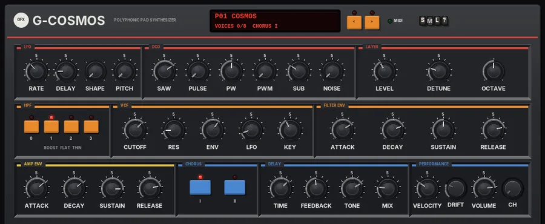
Overview
G Cosmos is a polyphonic pad synth in the spirit of the classic 80s polys, with a nod to the layered shimmer of the late-80s digital synths. One oscillator per voice gives saw, pulse (with PWM), a sub-octave and noise; a second, detuned saw (the LAYER) can sit at the same pitch or an octave either side for width and shimmer.
The voices go through a 24 dB filter with its own envelope, a fixed high-pass with four settings, and an amp envelope. The famous bucket-brigade stereo chorus (I, II or both) and an ambient stereo delay with diffused, gently moving repeats finish the sound.
DRIFT makes it behave like real analogue hardware: the tuning and filter wander for the whole instrument and for each voice on its own, and every note lands slightly differently in tune.
Reach for it for
- Lush, slow-moving pads and drones
- Warm 80s poly chords and string machines
- PWM and choir-like textures
- Filter-sweep pads for builds and intros
- Ambient beds with long, diffused delay tails
Playing it
G Cosmos is an instrument: it has no audio input and makes its sound from MIDI.
- Insert G Cosmos on a track (as the first plug-in, or after a MIDI effect).
- Arm the track for recording and set its input to your MIDI keyboard (or draw notes in a MIDI item).
- Pick a patch with < and >, or click the patch display for the list.
- Play. The MIDI light flashes on each note, and the display shows how many of the 8 voices are sounding.
- If you use a multi-channel MIDI setup, set CH in the PERFORMANCE section to the channel you want; OMNI listens to all of them.
G Cosmos responds to pitch bend (+/-2 semitones), the mod wheel (CC1 adds vibrato through the LFO, up to 40 cents), the sustain pedal (CC64) and all-notes-off (CC120 and CC123).
Controls
The header
- Patch display
- Shows the patch number and name, how many of the 8 voices are playing and the chorus setting. Click it to open the patch list.
- < and >
- Step to the previous or next patch. A patch sets every sound control and VELOCITY; DRIFT, VOLUME and the MIDI channel are left as they are. Loading a patch stops any notes still sounding.
- MIDI
- Lights when a note arrives.
- S / M / L
- Panel size: small, medium or large. The panel also scales to fit the plugin window.
- ?
- Opens a pop-up with the design credit, the GFX website address and the address of this manual. Click anywhere to close it.
LFO
- RATE
- LFO speed, 0.05 - 20 Hz.
- DELAY
- How long the LFO takes to fade in, 0 - 5 s. It starts again from the first key of each new phrase (when no other keys are held), so held chords grow vibrato and movement as they sustain.
- SHAPE
- SINE, TRI, SQUARE or RANDOM (stepped).
- PITCH
- Vibrato depth, 0 - 100 cents. The mod wheel adds up to 40 cents more.
The LFO also moves the filter (LFO in the VCF section) and the pulse width (PWM in the DCO section).
DCO
- SAW
- Level of the sawtooth, 0 - 100%.
- PULSE
- Level of the pulse wave, 0 - 100%.
- PW
- The pulse width, 5 - 95%. 50% is a square; narrower settings sound thinner and more nasal.
- PWM
- How much the LFO sweeps the pulse width, for the classic moving, chorused pulse sound.
- SUB
- Level of a square wave one octave below.
- NOISE
- Level of white noise, for breath and air.
LAYER
- LEVEL
- Level of the second, detuned saw, 0 - 100%.
- DETUNE
- How far the layer is detuned, 0 - 50 cents. Small amounts give a slow beating width; large amounts a thick, wide shimmer.
- OCTAVE
- The layer's octave: -1, 0 or +1.
HPF
- 0 / 1 / 2 / 3
- The fixed high-pass after the filter. 0 BOOST lifts the bass below about 120 Hz; 1 FLAT leaves it alone; 2 and 3 THIN cut the lows (from about 240 Hz and 720 Hz), so the pad sits above a bass part.
VCF
- CUTOFF
- The 24 dB low-pass filter's cutoff, 20 Hz - 18 kHz.
- RES
- Resonance, 0 - 100%. High settings ring and sharpen the sweep.
- ENV
- How far the FILTER ENV moves the cutoff, -100 to +100%. Negative values sweep it down instead of up.
- LFO
- How much the LFO moves the cutoff, 0 - 100%.
- KEY
- Key tracking, 0 - 100%: how much higher notes open the filter. At 100% the cutoff follows the keyboard.
FILTER ENV and AMP ENV
Two separate ADSR envelopes: FILTER ENV moves the cutoff (by the ENV amount), AMP ENV shapes the volume.
- ATTACK
- Time to rise, 1 ms - 8 s.
- DECAY
- Time to fall to the sustain level, 5 ms - 10 s.
- SUSTAIN
- The level held while the key is down, 0 - 100%.
- RELEASE
- Time to die away after the key is let go, 5 ms - 15 s.
CHORUS
- I / II
- The bucket-brigade stereo chorus. I is a slow, gentle sweep; II is faster and deeper. Light both for I+II, where the two sweeps run together. With both off the chorus is out.
DELAY
An ambient stereo delay: the repeats bounce between left and right (the right side at three-quarters of the time), are diffused, move gently and get darker as they fade.
- TIME
- Delay time, 40 - 1500 ms.
- FEEDBACK
- How many repeats, 0 - 95%.
- TONE
- How dark the repeats are, 500 Hz - 12 kHz.
- MIX
- How loud the delay is, 0 - 100%.
PERFORMANCE
- VELOCITY
- How much playing harder makes notes louder, 0 - 100%. At 0% every note plays at the same level.
- DRIFT
- See Drift below.
- VOLUME
- Output level, -24 to +6 dB.
- CH
- The MIDI channel G Cosmos listens to: OMNI (all) or CH 1 to CH 16.
The output is softly clipped at -0.3 dBFS, so peaks never go over.
Drift
- DRIFT
- 0 - 100% (25% by default). The tuning wanders slowly for the whole instrument (up to 20 cents at 100%) and for each voice on its own (up to 6 cents); the filter cutoff wanders the same way, for the whole instrument and per voice; the layer's detune drifts a little; and every note starts slightly out of tune (up to 6 cents). At 0% everything stays exact.
Presets
- Cosmos
- The starting sound: saw and sub with a detuned layer, a slow swell, chorus I and an ambient delay.
- Warm Poly
- Saw and sub with the bass BOOST, a darker filter, a quicker attack and chorus II.
- Strings 6
- Bright saws with an octave-up layer, a thinner HPF, gentle vibrato and both choruses.
- Glass Shimmer
- A strong, widely detuned layer an octave up, a bright filter, long release and a long, wet delay.
- Dark Drone
- Bass BOOST, a low, resonant filter with slow LFO movement, a sub-octave layer, very slow attack and release and a long, dark delay.
- PWM Haze
- A pulse wave swept by the LFO (PWM) with sub, over chorus I.
- Brass Pad
- Punchy saws with a strong filter envelope, a fast attack, light vibrato and more velocity.
- Choir Air
- A narrow pulse with PWM, saw, noise and a layer, resonant and thin, with vibrato and both choruses.
- Sweep Pad
- A low, resonant filter that slowly opens on each chord (slow filter attack and decay).
- Slow Strings
- Saws with a strong layer, a very slow attack, vibrato and both choruses.
- Nebula
- Everything: saw, PWM pulse, sub, noise and a wide octave-up layer, a random LFO on the filter, very long envelopes and a long, heavy delay.
- Init
- The default settings (the same as Cosmos).
Tips
- For pads that bloom, set the LFO DELAY to 1 - 2 s and add a little PITCH and filter LFO: each new chord starts still and grows movement.
- In a busy mix, use HPF 2 or 3 so the pad stays out of the way of the bass.
- A negative ENV with a high CUTOFF gives pads that darken as they sustain.
- Chorus I+II with a little layer DETUNE is the widest setting; try it on a single held note before adding more voices.
- Use VELOCITY at 0% for even sequenced pads, and higher for played parts.
File: gfx-g-cosmos.jsfx
G Ensemble
A divide-down string machine with a three-phase ensemble.
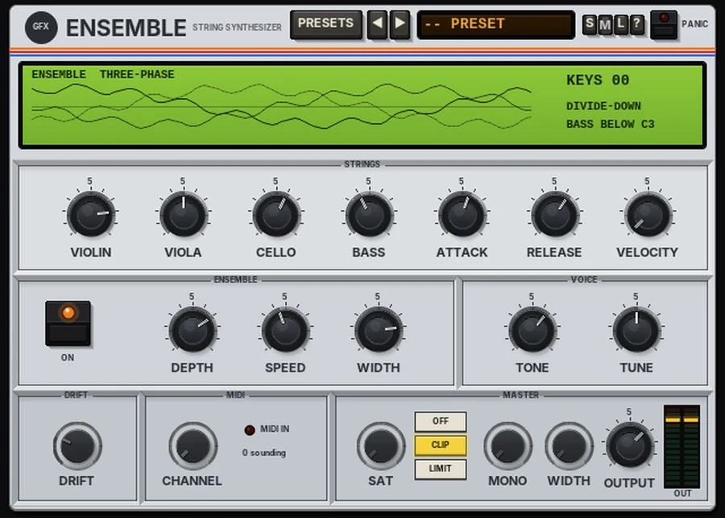
Overview
G Ensemble is a string machine in the spirit of the classic 70s string synths. Like the originals, it uses twelve master oscillators and divides them down for every octave, so every key can sound at once, nothing is ever cut off, and all the notes of the same name are locked in phase.
Four registers are mixed together: VIOLIN (a bright 8'), VIOLA (a mellow 8'), CELLO (16') and BASS (16' plus 32', on the lower keys only). Each key has its own simple envelope: ATTACK fades it in, RELEASE lets it ring on after you let go.
The magic is the ENSEMBLE: three delay lines swept by a slow and a fast wobble, 120 degrees apart. It turns the plain, buzzy oscillators into the lush, shimmering string sound.
Reach for it for
- Lush 70s and 80s string pads
- Slow swells and evolving backgrounds
- Disco string stabs
- Dark cello and bass drones
- Wide, shimmering layers under other keyboards
Playing it
G Ensemble is an instrument: it has no audio input and makes its sound from MIDI.
- Insert G Ensemble on a track.
- Arm the track for recording and set its input to your MIDI keyboard (or draw notes in a MIDI item).
- Play. The MIDI IN light glows while notes are sounding, and the display shows how many keys are sounding.
- If you use a multi-channel MIDI setup, set CHANNEL in the MIDI section; OMNI listens to all channels.
There is no limit on how many keys sound at once. It responds to all-notes-off (CC120 and CC123); incoming MIDI is passed on down the chain.
Controls
The header
- PRESETS, arrows and display
- PRESETS (or a click on the display) opens the list of factory presets; the ◄ / ► keys step through them. The display shows the preset number and name. A preset sets the STRINGS, ENSEMBLE and TONE controls; TUNE, the MIDI channel, DRIFT, OUTPUT, SAT, the output stage and the stereo controls are left as they are. The last entry resets everything to the defaults.
- S / M / L
- Panel size: small, medium or large. The panel also scales to fit the plugin window.
- ?
- Opens a pop-up with the design credit, the GFX website address and the address of this manual. Click anywhere to close it.
- PANIC
- Stops every key at once.
The display
Shows the three ensemble wobbles moving, ENSEMBLE THREE-PHASE (or ENSEMBLE OFF), and KEYS: the number of keys sounding.
STRINGS
- VIOLIN
- The level of the bright 8' register, 0 - 100%.
- VIOLA
- The level of the mellow 8' register, 0 - 100%: softer and more hollow than the violin.
- CELLO
- The level of the 16' register (an octave down), 0 - 100%.
- BASS
- The level of the 16' and 32' bass register, 0 - 100%. It plays only on the keys below C3 (MIDI note 48).
- ATTACK
- How long each key takes to fade in, 5 - 2000 ms. Short for stabs, long for swells.
- RELEASE
- How long each key rings on after you let go, 50 - 5000 ms.
- VELOCITY
- How much your playing dynamics matter, 0 - 100%. At 0 (default) every note plays at the same level, like an organ, as on the originals.
ENSEMBLE
- ON
- Switches the ensemble on or off. Off gives the dry, buzzy oscillators.
- DEPTH
- How far the three delay lines are swept, 0 - 100%. More depth gives more shimmer and detune.
- SPEED
- The speed of both wobbles, 25 - 200% of the standard rate (100%).
- WIDTH
- The stereo width of the ensemble, 0 - 100%. At 0 it is mono.
VOICE
- TONE
- A low-pass tone control on the whole sound, 0 - 100%. Lower is darker.
- TUNE
- Fine tuning, -50 to +50 cents.
DRIFT
- DRIFT
- A slow random wander, 0 - 100% (25% by default). It moves the pitch of the whole instrument (up to +/-20 cents at 100%), the TONE, and the speed of the ensemble. The keys stay locked together, as on a divide-down machine.
MIDI
- CHANNEL
- The MIDI channel G Ensemble listens to: OMNI (all) or 1 - 16.
- MIDI IN
- Lights when a note arrives and while keys are sounding. The number underneath counts the keys sounding.
MASTER
- SAT
- Band saturation on the way out, 0 - 100%: only the lows and highs are saturated (the mids stay clean), with a soft curve that loosens as the level rises.
- OFF / CLIP / LIMIT
- The final stage: nothing, a soft clipper that holds the peaks at -0.3 dBFS (no latency), or a lookahead limiter that holds them at -0.3 dBFS (3 ms latency, compensated by REAPER). The CLIP key flashes red while the clipper is working.
- MONO
- Makes everything below the set frequency mono, 20 - 500 Hz (fully left = OFF). Use it to keep the low end centred.
- WIDTH
- Widens the stereo image above the MONO frequency, from +0% up to +100% (twice the side signal).
- OUTPUT
- The output level, -24 to +12 dB.
- OUT meters
- Output level, left and right. Click a meter to clear its peak hold.
Presets
- Classic Strings
- The default: all four registers, a 150 ms attack, a 0.9 s release and the ensemble on.
- Violins Only
- Just the violin register, a quick attack, a deep, slightly faster and fully wide ensemble, brighter tone.
- Dark Cellos
- Mostly viola, cello and bass with little violin, a slow attack, a long release and a darker tone.
- Space Pad
- All registers with a slow 0.9 s attack, a 4 s release and a deep, slow, fully wide ensemble.
- Disco Stabs
- Violin and viola with a fast attack and short release, and some velocity response for accents.
- Full Orchestra-ish
- All four registers with plenty of bass and cello, a medium attack and a long release.
- Dry (no ensemble)
- The default registers with the ensemble off.
- Slow Swell
- Violin, viola and a little cello with a 1.2 s attack, a 5 s release and the deepest, slowest ensemble.
- Reset all to defaults
- Every control back to its starting value, including TUNE, the MIDI channel, DRIFT, OUTPUT, SAT, the output stage and the stereo controls.
Tips
- Hold a chord and switch the ensemble ON and off to hear what it does - most of the sound is in the ensemble.
- Keep BASS for the lowest part of your part; it only plays below C3, so it adds weight without muddying the chords.
- For a pad that blooms, set ATTACK to 500 ms or more and RELEASE to 2 s or more, and overlap the chords.
- If the strings fight with other parts, lower TONE rather than turning them down.
File: gfx-g-ensemble.jsfx
G Glow
An 8-voice additive synthesizer in the spirit of the first micro-computer digital synths of 1980-81.
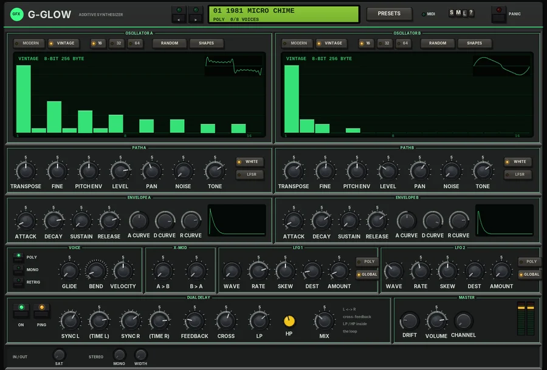
Overview
G Glow builds every sound from harmonic partials. You draw the level of each partial on a green phosphor screen, and the synth turns that drawing into a waveform. It is modelled on the early home-computer digital synths, where a pair of oscillator cards sat inside the computer and you drew the sound on the monitor.
Each voice has two paths, A and B. A path is an additive oscillator (16, 32 or 64 partials) plus a noise generator, with its own envelope, level and pan. The two oscillators can modulate each other (X-MOD), two LFOs add movement, and a stereo dual delay finishes the sound.
Each oscillator can run MODERN - clean and band-limited, with no aliasing - or VINTAGE, which recreates the old card: an 8-bit, 256-byte wavetable read with no smoothing, an 8-bit volume stage that makes the tails step down, and a 31.25 kHz output clock. VINTAGE aliases at the top on purpose; that grit is the sound.
Reach for it for
- Glassy, bell-like and chime sounds built partial by partial
- Lo-fi 8-bit basses, leads and arcade percussion (VINTAGE with LFSR noise)
- Organ, string, flute and choir-like tones from drawn spectra
- Slow-moving pads and drones with stereo LFO panning and the dual delay
- Quick sound design: RANDOM makes a new, usable partial set in one click
Playing it
G Glow is an instrument: it has no audio input and makes its sound from MIDI.
- Insert G Glow on a track (as the first plug-in, or after a MIDI effect).
- Arm the track for recording and set its input to your MIDI keyboard (or draw notes in a MIDI item).
- Play. The MIDI light in the header flashes on each note, and the patch display shows how many of the 8 voices are sounding.
- If you use a multi-channel MIDI setup, set CHANNEL in the MASTER section to the channel you want; OMNI listens to all of them.
G Glow responds to pitch bend (range set by BEND), the mod wheel (CC1 adds to LFO 1's amount, up to 100%), the sustain pedal (CC64) and all-notes-off (CC120 and CC123). Incoming MIDI is passed on down the chain.
Controls
The header
- < and >
- Step to the previous or next factory patch.
- Patch display
- Shows the patch number and name, the voice mode, how many of the 8 voices are playing and SUS while the sustain pedal is down. Click it to open the patch list.
- PRESETS
- Also opens the patch list. A patch sets every sound control and both partial sets; the MIDI channel, DRIFT, VOLUME, the STEREO controls and the output stage are left as they are.
- MIDI
- Lights when a note arrives.
- S / M / L
- Panel size: small, medium or large. The panel also scales to fit the plugin window.
- ?
- Opens a pop-up with the design credit, the GFX website address and the address of this manual. Click anywhere to close it.
- PANIC
- Stops every sounding note at once. Changing the voice mode does the same.
Oscillator A and Oscillator B
Each oscillator has a screen showing its partials as bars, from the fundamental (1) on the left upwards. The small window at the top right of the screen shows the single wave cycle the partials make.
- The screen
- Left-drag to draw partial levels; drag across the screen to draw a whole curve in one go. Right-drag to erase. The partial sets are saved with the project.
- MODERN / VINTAGE
- MODERN: a clean oscillator that leaves out any partials that would go past the top of the audio range, so it never aliases. VINTAGE: the old 8-bit card - a 256-byte wavetable with no smoothing, pitch steps from the old 16-bit counter, an 8-bit volume stage after the envelope (stepped tails) and a 31.25 kHz output clock. It aliases at the top, and the screen shows levels in 16 steps, like the old monitor.
- 16 / 32 / 64
- How many partials the oscillator uses. Fewer partials give a softer, simpler sound and wider bars to draw on.
- RANDOM
- Makes a new partial set that is still musical: a falling harmonic series with a little variation, odd partials only, random spikes over a fundamental, one to three formant bumps, or a saw with every few partials missing.
- SHAPES
- A menu of starting points: Sine, Saw, Square, Triangle, Odd emphasis, Soft decay, Formant, Organ (drawbar-style), Even emphasis, Bright tine, and Clear (all partials off).
Path A and Path B
- TRANSPOSE
- The oscillator's pitch in semitones, -36 to +36.
- FINE
- Fine tuning, -100 to +100 cents. Opposite settings on A and B give a detuned, chorused width.
- PITCH ENV
- How far the path's own envelope bends its oscillator's pitch, -48 to +48 semitones at the top of the envelope. Use it with a short decay for thumps, drops and zaps.
- LEVEL
- The path's volume, 0 - 100%. Path A starts at 80%, Path B at 0%, so a fresh patch only plays A.
- PAN
- Where the path sits in the stereo field, from L 100 to R 100.
- NOISE
- Blends from the oscillator to the noise generator: 0% is all oscillator, 100% all noise.
- TONE
- The brightness of the noise, from about 200 Hz up past the top of the audio range. With WHITE it is a low-pass filter; with LFSR it is the clock rate of the noise.
- WHITE / LFSR
- WHITE: smooth hiss. LFSR: a 15-bit shift-register noise, the gritty, metallic noise of 80s digital chips - good for snares, hats and arcade effects.
Envelope A and Envelope B
Each path has its own ADSR envelope, which shapes its level and its PITCH ENV. The small screen to the right sketches the envelope's shape.
- ATTACK
- Time to rise to full level, 0.5 ms to 10 s.
- DECAY
- Time to fall to the sustain level, 1 ms to 20 s.
- SUSTAIN
- The level held while the key is down, 0 - 100%.
- RELEASE
- Time to die away after the key is let go, 1 ms to 20 s.
- A CURVE / D CURVE / R CURVE
- The shape of each stage, -100 to +100. 0 is a straight line; positive values are exponential and snappy; negative values start slowly. D and R start at +50.
Voice
- POLY / MONO / RETRIG
- POLY: up to 8 notes at once. MONO: one note, legato - when you play a new note while holding another, the pitch glides and the envelopes carry on. RETRIG: one note, and every note restarts the envelopes.
- GLIDE
- How long the pitch takes to slide to a new note, 0 - 2000 ms. In POLY each voice glides from the last note it played.
- BEND
- Pitch-bend range, 0 - 24 semitones.
- VELOCITY
- How much playing harder makes the sound louder, 0 - 100%. At 0% every note plays at full level.
X-MOD
- A > B
- Oscillator A modulates the phase of oscillator B (frequency modulation in the FM-synth manner), 0 - 100%. Adds bright, bell-like and metallic overtones to B. A is used as a modulator even if its LEVEL is at 0.
- B > A
- The other way round: B modulates A.
LFO 1 and LFO 2
- WAVE
- SINE, TRI, SQUARE or S&H (random steps).
- RATE
- LFO speed, 0.02 - 30 Hz.
- SKEW
- Shifts the shape. On SINE and TRI it moves the peak earlier or later; on SQUARE it sets the pulse width. On S&H, settings above 50% make the steps glide into each other.
- DEST
- What the LFO moves: OFF, PITCH (both paths), PITCH A, PITCH B, PAN (A one way, B the other), LEVEL (tremolo), X-MOD (the depth of both X-MOD knobs) or NOISE (the noise blend).
- AMOUNT
- How much it moves, 0 - 100%. On pitch the range grows towards the top of the knob, up to 12 semitones at 100%, so small settings give fine vibrato. The mod wheel adds to LFO 1's amount.
- POLY / GLOBAL
- POLY: every note has its own LFO, restarted when the note starts - each note gets the same vibrato or sweep. GLOBAL: one LFO for all notes, running freely. LFO 1 starts on POLY, LFO 2 on GLOBAL.
Dual delay
- ON
- Switches the delay in.
- PING
- Ping-pong: the sound goes into the left side only (summed to mono), and CROSS bounces it across to the right. Off: stereo in, stereo out.
- SYNC L / SYNC R
- The delay time of each side as a note value of the project tempo, from 1/32 to 1/1 (with triplet and dotted values), or OFF (ms) to set it in milliseconds.
- TIME L / TIME R
- The delay time in milliseconds, 1 - 2000 ms, used when that side's SYNC is OFF. The label is shown in brackets while the side is synced.
- FEEDBACK
- How much of each side repeats into itself, 0 - 95%.
- CROSS
- Cross-feedback: how much of each side repeats into the other, 0 - 95%. FEEDBACK and CROSS together are held below the point where the repeats would build up, so the delay always dies away.
- LP / HP
- Filters inside the feedback loop: LP (500 Hz - 20 kHz) darkens each repeat, HP (20 Hz - 2 kHz) thins it. The repeats get darker or thinner as they go.
- MIX
- How loud the delay is, 0 - 100%. The dry sound stays at full level.
Drift
A slow random wander, like old analogue tuning. DRIFT sets how much (0 - 100%, starting at 20%). In G Glow it moves the pitch of the whole instrument (up to 20 cents either way at 100%), lets oscillator B wander against A by up to 0.15 semitones, and gives each new note a slightly different tuning (up to 6 cents).
Master
- DRIFT
- See above.
- VOLUME
- Output level, -24 to +6 dB.
- CHANNEL
- The MIDI channel G Glow listens to: OMNI (all) or CH 1 to CH 16.
- Meters
- Output level, left and right.
IN / OUT strip
The slim strip along the bottom of the panel.
- SAT
- Band saturation on the way out: only the lows and highs are saturated (the mids stay clean), with a soft curve that loosens as the level rises.
- OFF / CLIP / LIMIT
- The final stage: nothing, a soft clipper (no latency), or a lookahead limiter that holds the peaks at -0.3 dBFS (3 ms latency, compensated by REAPER). CLIP is on by default; its key flashes red while it is clipping.
- MONO
- Makes everything below this frequency mono, from 20 to 500 Hz (fully left = OFF). Keeps the low end centred when paths are panned apart or the delay is wide.
- WIDTH
- Widens the stereo image above the MONO frequency, up to +100% (twice the side signal).
Presets
Each patch is levelled so that patches play at a similar loudness.
- 1981 Micro Chime
- Both oscillators VINTAGE with 16 partials, B an octave up; fast-decaying chime, a touch of vibrato and a ping-pong delay.
- Lo-Fi Bit Bass
- MONO legato with a short glide; a VINTAGE bass made from the first four partials, a little LFSR noise and a sine an octave below on B.
- Spectral Ambient Pad
- MODERN with 64 partials, a formant set on A and a soft decay on B, detuned 7 cents either way; slow attack, slow LFO panning and a long delay.
- E.Piano Tine
- A bright tine on A with a fast decay over a warm sine body on B, a little A > B modulation and a gentle stereo pan.
- Digital Sci-Fi Drone
- Heavy A > B modulation with S&H on the X-MOD depth, slow panning and a dark, long-feedback delay.
- 8-Bit Arcade Percussion
- A VINTAGE thump that drops in pitch (PITCH ENV) and an LFSR noise snap on B.
- Dual-Timbral Poly
- A saw on A hard left and a square on B hard right, slightly detuned, with a short delay.
- 8-Bit Arcade Snare
- A short pitched thump on A and a bright LFSR noise body on B.
- Glass Organ
- VINTAGE drawbar-style partials on A, even partials an octave up on B, organ envelopes and a light vibrato; velocity off.
- Vintage Strings
- Two detuned VINTAGE saws with a slow swell, per-note vibrato and slow panning.
- Hollow Flute
- Odd partials an octave up with a little breath noise, per-note vibrato and a short delay.
- Bell Tower
- A spread, bell-like partial set on A and a high, detuned strike on B, long decays and a long delay.
- Choir Formant
- Two 64-partial formant sets, detuned, with slow swells, vibrato and slow panning.
- Square Sync Lead
- MONO legato with glide; a bright square on A, modulated by B (B > A), with vibrato and delay.
- Init
- A plain starting point: one MODERN saw on A, Path B silent, no LFOs, no delay.
Tips
- Start from SHAPES, then draw on top: pull a few partials up or down and listen to how the tone changes.
- For a classic 80s digital sound, set both oscillators to VINTAGE and use 16 partials; for a clean, hi-fi version of the same drawing, switch back to MODERN.
- Give Path B a short envelope and a different partial set to add a separate attack or strike to a sustained sound.
- Small amounts of A > B (5 - 15%) brighten a sound without making it obviously metallic.
- If the delay or panned paths make the low end wander, raise MONO in the IN / OUT strip to 100 - 150 Hz.
File: gfx-g-glow.jsfx
G Harbour Keys
A synthetic piano in the spirit of the early-90s ROM pianos, with a bell layer, tape wear, a mod rack and an 80s space.

Overview
G Harbour Keys is not a recreation of a real piano. It is a simulacrum of the piano sounds in the early-90s sample-based synths. Underneath is a physical model - hammers, strings, a soundboard and a bridge that lets the strings ring in sympathy - so it still answers your touch like an instrument.
On top of that model sit the things that made those ROM pianos sound the way they did: a glassy FM bell layer on every key, sample-rate and bit-depth reduction, a worn tape deck with wow and hiss, a mod rack (chorus, tremolo / auto-pan, vibe and ping-pong delay) and a room, plate or gated reverb.
Up to 16 keys can sound at once, across the 88 keys from A0 to C8. Twelve patches cover the classic territory, from bright house-style pianos to foggy, vaporwave tape keys.
Reach for it for
- Glassy late-80s and early-90s pop and house piano parts
- Vaporwave and lo-fi keys with tape wobble and a worn top end (WOW, VHS)
- Electric-piano-like tines with tremolo pan (UPRIGHT, MALLET, BELL)
- Gated-reverb ballads and big plate-drenched chords
- Crunchy, aliasing sampler textures (ROM)
Playing it
G Harbour Keys is an instrument: it has no audio input and makes its sound from MIDI.
- Insert G Harbour Keys on a track (as the first plug-in, or after a MIDI effect).
- Arm the track for recording and set its input to your MIDI keyboard (or draw notes in a MIDI item).
- Play. The MIDI light at the top right flashes on each note; the PEDAL light shows when the sustain pedal is down.
It listens on all MIDI channels and plays notes from A0 to C8. It responds to the sustain pedal (CC64), the soft pedal (CC67, a softer, darker strike) and all-notes-off (CC120 and CC123). A note with velocity 1 - 3 lifts the key's dampers without striking it, so it can ring in sympathy with the other strings. The top keys (from F6 up) have no dampers, as on a real piano. Incoming MIDI is passed on down the chain.
Controls
The header
- PRESETS, arrows and display
- PRESETS (or a click on the display) opens the patch list; the ◄ / ► keys step to the previous or next patch. A patch sets every sound control; DRIFT, VOLUME, the stereo controls and the output stage are left as they are.
- Display
- Shows the patch number and name. A * after the number means you have changed a control since loading it. The second line shows GRAND or UPRT, the striker and PED:ON while the sustain pedal is down; while you turn a knob it shows that knob's name and value instead.
- GRAND / UPRIGHT
- The core model. GRAND has a deeper, longer-ringing soundboard and long sustain. UPRIGHT has shorter, stiffer bass strings, a smaller, higher soundboard, shorter sustain and a little more action knock. The panel changes colour with the model.
- S / M / L
- Panel size: small, medium or large. The panel also scales to fit the plugin window.
- ?
- Opens a pop-up with the design credit, the GFX website address and the address of this manual. Click anywhere to close it.
- MIDI / PEDAL
- MIDI flashes on each note; PEDAL lights while the sustain pedal is held.
Engine
- FELT / TACK / PLUCK / MALLET
- What strikes the strings. FELT is a normal piano hammer. TACK puts metal on the wire: a shorter, brighter strike with a metallic click - the old tack-piano trick. PLUCK catches and releases the string like a plectrum, for a harpsichord-like edge. MALLET is heavy and soft, for a round, tine-like tone.
- HARDNESS
- The felt, 0 - 100%: soft and dark at the bottom, compacted and bright at the top. Harder felt gives a shorter, brighter attack.
- DYNAMICS
- How much your velocity changes the sound, 0 - 100%. Low settings even out your playing; high settings give a wide range from soft to loud.
- SUSTAIN
- How long notes ring while held, 0 - 100%. It also sets how long the bell layer rings. It reaches notes that are already sounding.
- UNISON
- Detunes the two or three strings of each key against each other, up to 28 cents at full - honky-tonk at the top of the range. The display shows the detune in cents while you turn it.
- BELL
- The level of the FM bell layer on every key: a fast tine transient over a sine body - the glassy top of the classic house piano and the FM electric piano.
- GLASS
- The brightness of the bell layer (its modulation index): low is a soft sine, high a glassy, metallic chime.
ROM & Tape
- ROM
- Sample-rate and bit-depth reduction, 0 - 100%: from 48 kHz / 16 bit down to about 10 kHz / 8 bit, with the aliasing left in. The sound of a cheap sample ROM.
- WOW
- Tape speed wander, 0 - 100%: a slow wow, a faster flutter and a little random drag. The vaporwave detune.
- VHS
- Worn tape, 0 - 100%: the top rolls off, hiss comes up and soft tape saturation squeezes the sound.
Mod rack
- CHORUS: RATE / DEPTH / MIX
- A stereo bucket-brigade-style chorus. RATE 0.05 - 8 Hz, DEPTH 0 - 100%, MIX 0 - 100% (0 = off).
- TREM / PAN: RATE / DEPTH
- Stereo auto-pan: the left and right sides dip in turn, the classic electric-piano trick. RATE 0.1 - 12 Hz, DEPTH 0 - 100% (0 = off).
- VIBE: RATE / DEPTH
- A four-stage photocell phaser, its lamp sweeping the notches. RATE 0.1 - 10 Hz, DEPTH 0 - 100% (0 = off).
- DELAY: TIME / FEEDBACK / MIX
- A ping-pong delay: the echoes start on the left and bounce across. The feedback is warm and saturating, losing top and bottom on each repeat. TIME 20 - 1500 ms, FEEDBACK 0 - 95%, MIX 0 - 100% (0 = off).
- SYNC
- Click to step through MS (TIME in milliseconds), 1/4, 1/8 D (dotted), 1/8 and 1/4 T (triplet). The note values follow the project tempo, up to 1.5 s; TIME is not used while synced.
Space
- ROOM / PLATE / GATED
- The reverb type. ROOM: a room of about 0.5 - 1.3 s (longer as SPACE goes up). PLATE: bright and long, about 1.4 - 4 s. GATED: the 80s gated reverb - a long, bright tail cut short about 0.3 s after each note.
- SPACE
- The amount of reverb, 0 - 100%. For ROOM and PLATE it also lengthens the tail.
- SPREAD
- Stereo spread across the keyboard, as heard from the player's seat: bass to the left, treble to the right. 0% is mono.
- TONE
- Overall brightness, 0 - 100 (50 = neutral): a tilt around 900 Hz, and the strings themselves lose their top more slowly as you turn it up.
MASTER
- DRIFT
- Gives every note its own small random tuning, up to 6 cents either way at 100% (15% by default), as on an instrument that has drifted slightly out of tune.
- VOLUME
- The output level, -24 to +6 dB.
OUTPUT
- SAT
- Band saturation on the way out, 0 - 100%: only the lows and highs are saturated (the mids stay clean), with a soft curve that loosens as the level rises.
- OFF / CLIP / LIMIT
- The final stage: nothing, a soft clipper at -0.3 dBFS (no latency), or a lookahead limiter (3 ms latency, compensated by REAPER). CLIP is on by default.
STEREO
- MONO
- Makes everything below this frequency mono (12 dB/oct), 20 - 500 Hz; fully left = OFF. Keeps the bass centred.
- WIDTH
- Raises the side signal above MONO, up to twice as wide at +100%.
In REAPER's parameter list only
The finer physical controls of the piano model have no knob on the panel, but they are in REAPER's parameter list (and every patch sets them).
- Stiffness
- How stiff the strings are: more stretches the upper partials sharper, for a harder, more metallic tone.
- Damper
- How quickly a note dies away when you let go of its key: higher settings let it ring on longer.
- Body
- How much of the soundboard's resonance you hear.
- Sympathetic resonance
- How strongly the strings share energy through the bridge: the other strings ring in sympathy, especially with the sustain pedal down.
- Contact
- How long the striker stays on the string: longer contact is softer and darker.
- Bounce
- Low settings let the action catch the hammer after the first blow; high settings let it bounce back for a second strike.
- Wire age
- Older strings: a duller top, shorter sustain and a little unevenness between the strings.
- Tuning variance
- Each key's own small tuning error (up to 6 cents), and a little spread between its strings.
- Board size / Board density
- Size moves the soundboard's resonances down (bigger) or up (smaller); a denser board rings longer and carries more of its upper resonances.
- Lid
- Open, Half or Closed: closing the lid makes the sound darker and boxier.
- Mic distance
- Close to far: further away is darker, quieter and narrower, with more room.
- Bias / Sat low band / Sat high band / Ceiling
- The rest of the output stage: the saturation's even-harmonic bias, where its low and high bands start (40 - 400 Hz and 2 - 16 kHz) and the clip ceiling or limiter threshold.
Presets
The twelve factory patches. Choose them from PRESETS or the display, or step through them with the ◄ / ► keys.
- Harbour Lights
- Bright grand with tack strikers, a bell layer, a touch of ROM, chorus and a dotted-eighth delay on the plate.
- Ocean Drive EP
- Upright with mallets and a strong bell: an electric-piano tone with tremolo pan, chorus and a quarter-note delay.
- Neon Rain
- Felt grand through ROM, tape wow and VHS wear, with deep chorus and a dotted-eighth delay.
- Sunset Strip
- Hard, bright tack piano with a bell layer, a little ROM grit, chorus and an eighth-note delay in a small room.
- Mall Fountain
- Soft, long-sustaining grand through heavy wow and VHS, with vibe, chorus, a 500 ms delay and lots of plate.
- Night Bus
- Dark upright with mallets and the lid closed, worn tape, slow tremolo pan and a room.
- Palm Glass
- Grand with tacks and a loud, very glassy bell layer, chorus and delay on the plate.
- Cassette Ballad
- Felt grand, half lid, long sustain, gentle tape wow and VHS, chorus and plate.
- Gated Romance
- Bright tack grand into the 80s gated reverb, with bell and chorus.
- Pastel Tine
- Upright with mallets and a bright bell: a tine-like tone through vibe, light chorus and tape.
- Floppy Disk
- Upright tack piano crushed by heavy ROM reduction, in a small room.
- Harbour Fog
- Very soft, long-sustaining grand with mallets, half lid, tape wear, chorus, vibe and a long 600 ms delay in a big plate.
Tips
- Start from a patch and change the striker: the same patch with FELT, TACK or MALLET gives three quite different instruments.
- For the classic house-piano top, raise BELL and GLASS together; for a softer electric-piano feel, use UPRIGHT, MALLET and some TREM / PAN.
- ROM, WOW and VHS add up quickly: a little of each often sounds more convincing than a lot of one.
- Hold the sustain pedal and play: with Sympathetic resonance up, the undamped strings ring along with what you play.
- If the low end gets wide and woolly in a mix, set MONO to about 120 - 150 Hz.
File: gfx-g-harbour-keys.jsfx
G Lab80
A late-80s digital sound workstation: pick one of 43 sounds and play it.

Overview
G Lab80 is a sound-module instrument in the spirit of the late-80s digital workstations. There are no oscillator pages to program: you pick a sound from the list, shape it with eight macro knobs and play. The sounds cover pianos and keys, mallets and bells, plucked guitars, pads, choirs, strings, brass and leads, and basses.
Under the hood each sound uses the engine that suits it: four-operator FM for the e-pianos, a plucked string for the clav, harp and guitars, struck inharmonic partials for the glockenspiel, an openly synthetic struck-string model for the pianos, a tonewheel-style partial bank for the organ, and detuned saws and pulses through a 4-pole filter for the analogue sounds. Some sounds add bell partials, breath, a chiff, vocal formants, their own tempo-synced echo, tremolo or a fast rotary-style chorus.
A REVERB section (ROOM, HALL or PLATE) is added on top as a send, so the dry sound always stays at full level. Up to 12 notes play at once; the bass and lead sounds marked mono below play one note at a time and glide between them.
Reach for it for
- Quick 80s and 90s keys, pads and bells without programming a synth
- Plucked guitar and harp layers in the late-80s style
- Choirs, strings and orchestra hits for pop and soundtrack work
- Mono basses with glide, from sine sub to acid and reese
- Sketching ideas fast: step through the sounds with < and >
Playing it
G Lab80 is an instrument: it has no audio input and makes its sound from MIDI.
- Insert G Lab80 on a track (as the first plug-in, or after a MIDI effect).
- Arm the track for recording and set its input to your MIDI keyboard (or draw notes in a MIDI item).
- Pick a sound with ◄ and ►, or click PRESETS (or the display) for the list grouped by type.
- Play. The MIDI IN light flashes on each note, and the display shows how many notes are sounding.
- If you use a multi-channel MIDI setup, set CHANNEL in the MIDI section to the channel you want; OMNI listens to all of them.
G Lab80 responds to the sustain pedal (CC64), the mod wheel (CC1, vibrato on the analogue sounds and the FM e-pianos) and all-notes-off (CC120 and CC123). Incoming MIDI is passed on down the chain. Sounds with their own echo or with the NATIVE DANCE drum loop follow the project tempo; when the transport is stopped they run on at that tempo.
Controls
The header
- S / M / L
- Panel size: small, medium or large. The panel also scales to fit the plugin window.
- ?
- Opens a pop-up with the design credit, the GFX website address and the address of this manual. Click anywhere to close it.
- PANIC
- Lets go of every held note at once (and of the sustain pedal), so stuck notes die away.
Sound
PRESETS and the ◄ ► keys sit side by side to the left of the display.
- PRESETS
- Opens the sound list, grouped into sub-menus by type.
- ◄ and ►
- Step to the previous or next sound, in the order of the list (by type).
- Display
- Shows the sound's name, its group and its place in the group (e.g. PADS 2/4), how many notes are sounding, and SUS while the sustain pedal is down. Click it to open the sound list too.
Changing the sound stops any notes still sounding and puts FILTER, RESO, TONE, ATTACK, RELEASE and CHORUS back to neutral, so each sound starts from its own settings.
MACROS
Eight knobs that bend the chosen sound. At their neutral settings you hear the sound as it was designed.
- FILTER
- Moves the filter, from -6 to +3 octaves; at 0 it reads OPEN. On the analogue sounds (pads, strings, brass, leads, basses, choirs, plucks) it moves each note's own 4-pole filter up or down. On the pianos, FM e-pianos, clav, glockenspiel and organ it is a resonant low-pass on the output: 0 is wide open, and turning it down darkens the sound.
- RESO
- Filter resonance, 0 - 100%. On the analogue sounds it adds to the sound's own resonance, up to self-oscillation at the top. On the other sounds it adds a resonant peak to the output low-pass.
- TONE
- Brightness, 0 - 100% (50% is neutral). On the analogue sounds it moves the filter up to 1.5 octaves either way; on the FM e-pianos it sets how much bark the tine has; on the plucked strings it brightens or darkens the string; on the pianos it makes the hammers harder or softer.
- ATTACK
- Scales the attack of the analogue sounds' envelopes, 10 - 400% (100% is the sound's own). Lower is snappier, higher swells in more slowly. It never goes faster than 3 ms, so nothing clicks.
- RELEASE
- Scales how long most sounds ring on after you let go, 10 - 400% (100% is the sound's own).
- CHORUS
- Scales the sound's own chorus (or ensemble), 0 - 200%. Sounds without chorus, such as most basses, are not changed by it.
- VELOCITY
- How much playing harder makes notes louder, 0 - 100% (70% by default). At 0% every note plays at the same level. The struck and plucked sounds still get brighter when you play harder.
- TUNE
- Fine tuning, -50 to +50 cents.
REVERB
A send reverb added on top of the sound: the dry sound stays at full level and MIX sets how much reverb joins it.
- ROOM / HALL / PLATE
- The space: a small room, a large hall, or a dense, bright plate.
- PRE-DELAY
- The gap before the reverb starts, 0 - 150 ms (15 ms by default).
- DECAY
- How long the reverb lasts, 0.2 - 10 s (2.2 s by default).
- DAMPING
- How quickly the top end of the tail dies away, 0 - 100%. Higher is darker.
- MIX
- How loud the reverb is, 0 - 100% (25% by default). At 0% the reverb is off.
Drift
- DRIFT
- How much the instrument wanders, 0 - 100% (25% by default). The pitch drifts slowly (up to 20 cents at 100%) on the analogue, FM and plucked sounds; each analogue note starts slightly out of tune (up to 6 cents) and slightly brighter or darker; the filter wanders; and the chorus speed drifts a little. At 0% everything stays exact.
MIDI
- CHANNEL
- The MIDI channel G Lab80 listens to: OMNI (all) or CH 1 to CH 16.
- MIDI IN
- Lights when a note arrives or notes are sounding.
MASTER
- OUTPUT
- Output level, -24 to +12 dB.
- OUT meters
- Output level, left and right, with a floating peak. Click a meter to clear the peaks.
The output is softly clipped at -0.3 dBFS, so peaks never go over.
Sounds
The sound list, in the order of the menu. Sounds marked mono play one note at a time and glide from the last note.
Pianos & Keys
- Session Piano
- A warm, even, openly synthetic piano: struck partials with stretched tuning and paired strings. Playing harder brightens the hammer, adds knock and makes the top fade faster.
- Bright Piano
- The same piano with harder hammers, more knock and a wider shimmer between the strings.
- Chorus EP
- The FM tine e-piano with a stereo tremolo and a deep chorus.
- FM E-Piano
- The four-operator FM tine piano; velocity sets how hard the tine barks.
- Clav
- A bright plucked string heard from a pickup near its end, with bite and a quick damper when you let go.
- Drawbar Organ
- An organ from sine partials with third-harmonic percussion on fresh chords, a key click and a fast rotary-style chorus.
Mallets & Bells
- Glockenspiel
- A struck metal bar: inharmonic partials, a soft mallet click, and it rings on.
- Fantasy Bells
- Bell partials over a slow, detuned saw pad with chorus.
- Crystal Harp
- Chiming, slightly detuned partials over a soft, bright pad with a deep chorus.
- Staccato Glass
- Short 'aah' voices with glassy bell partials and an echo.
Guitars & Plucks
- LA Nylon
- A round pluck with a soft pick over a quiet sine body that swells in.
- LA Steel
- A bright steel-string pick with a shimmering synth body.
- LA Clean
- A chorused electric guitar (pickup near the bridge), with echo.
- LA Harmonics
- Glassy string harmonics over a soft pluck, with echo.
- Nylon Atmos
- A plucked string over a slow, warm pad, with echo.
- Pizz Flow
- A bright, short pluck with bell partials and a quick echo.
- Harp
- A long, round pluck.
Pads
- Synth Pad
- Detuned saws through a slowly opening 4-pole filter, with chorus.
- Warm Pad
- Saw and sub under a low filter that moves slowly, with a wide chorus.
- Soundtrack Pad
- A chime over a slow, warm filter sweep, with echo.
- Native Dance
- A tempo-synced log-drum loop, retuned to each held note, riding a dark resonant sweep, with echo.
Choirs & Voices
- Glass Voices
- A slow 'aah' choir with breath and vibrato.
- Dark Vox
- A low, slow 'ooh' choir.
- Fantasy Vox
- A bright 'aah' with a glassy chime on the front.
- Spaced Vox
- Airy 'eh' voices with a slowly drifting filter and a long echo.
Strings & Orchestra
- Strings
- Detuned saws with a slow attack and delayed vibrato.
- String Ensemble
- Bright saws into a three-phase ensemble.
- Fat Strings
- Thick saws with a little sub into the ensemble.
- Orchestra Hit
- A big octave stab that drops in pitch, with a burst of noise on the front.
Brass & Leads
- Brass Section
- A swelling filter, a small rise into each note and delayed vibrato; playing harder opens it up.
- Synth Brass
- Punchy saw brass with a strong filter envelope.
- Velo Stab
- A short stab: playing harder opens the filter right up.
- Hoover
- Mono. Wide, detuned saws and pulses that scoop up into the note, with a heavy chorus.
- Square Lead
- Mono. Two slightly detuned squares with glide, vibrato and echo.
- Calliope Lead
- A pipe: a sine with a little square, pitched breath, a short chiff, vibrato and echo.
- Pan Flute
- A sine with its breath tuned to the note, a soft chiff and vibrato.
Basses
- Bass Synth
- Mono. Saw, square and sub with a punchy filter envelope.
- Sub Bass
- Mono. A pure sine.
- Acid Bass
- Mono. A resonant saw with a snappy filter envelope and slides.
- Round Bass
- Mono. Saw, square and sub.
- Pluck Bass
- Short and punchy, and polyphonic.
- Hollow Bass
- Mono. Sine and square.
- Reese Bass
- Mono. Wide, detuned saws with a little sub.
Tips
- Use RELEASE and ATTACK to turn a sound into something else: a short RELEASE makes a pad into a stab, a long ATTACK makes a pluck swell in.
- On the analogue sounds, a little RESO with FILTER turned down gives the classic squelchy sweep; automate FILTER for builds.
- Set VELOCITY to 0% for even, sequenced parts; raise it for played keys and pianos.
- The basses and leads that glide are mono: play legato (overlapping notes) to hear the glide.
- If the sound is too wet in a busy mix, pull the REVERB MIX down and use a send reverb shared with the rest of the track list.
File: gfx-g-lab80.jsfx
G Lead 8
An eight-voice analogue-style polysynth for leads and poly parts, with a built-in arpeggiator.
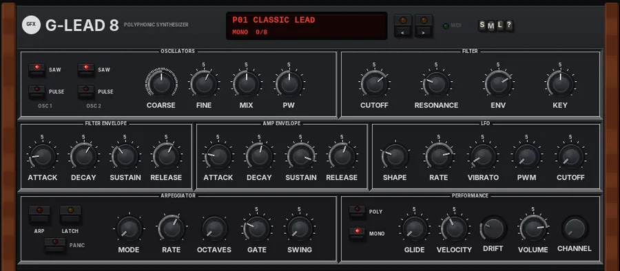
Overview
G Lead 8 is a classic subtractive synth: two oscillators per voice into a warm 24 dB ladder filter, with its own envelopes for the filter and the amp, and an LFO for vibrato, pulse-width and filter movement. It plays up to eight notes at once, or one at a time in MONO for legato leads with glide.
A built-in arpeggiator turns held chords into tempo-locked patterns, and twelve patches give you starting points from classic leads to brass, strings and wobble.
GFX drift keeps it alive: the tuning wanders slowly, each voice's oscillators drift apart a little on their own, each voice's pulse width wanders, and every note lands slightly differently in tune. The voices are spread a little across the stereo field.
Reach for it for
- Classic mono synth leads with glide
- Poly brass, strings and soft pads
- Arpeggiated parts locked to the project
- PWM and detuned textures
- Resonant filter sweeps and wobbles
Playing it
- Insert G Lead 8 on a track as an instrument (it has no audio input; it plays from MIDI).
- Arm the track for recording with a MIDI input and turn on record monitoring, or draw notes in a MIDI item.
- The MIDI light in the header blinks green when notes arrive. If you use more than one MIDI channel, set CHANNEL to the one you want; OMNI plays on all.
- Pitch bend covers +/-2 semitones, the mod wheel (CC1) adds vibrato, the sustain pedal (CC64) holds notes, and CC123 / CC120 stop all notes.
Controls
The header
- Patch display
- Shows the patch number and name, POLY or MONO, how many of the eight voices are sounding, and ARP ON when the arpeggiator is running. Click it for the list of patches.
- < / >
- Step to the previous or next patch.
- MIDI
- Blinks green when a note arrives.
- S / M / L
- Panel size: small, medium or large. The panel also scales to fit the plugin window.
- ?
- Opens a pop-up with the design credit, the GFX website address and the address of this manual. Click anywhere to close it.
OSCILLATORS
- SAW / PULSE (OSC 1, OSC 2)
- The waveform of each oscillator. SAW is bright and buzzy; PULSE is hollower and changes with PW.
- COARSE
- Oscillator 2's pitch in semitones, -24 to +24. +7 gives fifths, +12 or -12 an octave.
- FINE
- Oscillator 2's fine tuning, -50 to +50 cents. A few cents of detune against oscillator 1 gives the thick, beating analogue sound.
- MIX
- The balance between the two oscillators, from OSC 1 only to OSC 2 only.
- PW
- Pulse width for the PULSE waves, 5 to 95%. 50% is a square; narrower settings are thinner and more nasal.
FILTER
- CUTOFF
- The ladder filter's cutoff frequency, 20 Hz to 18 kHz. Lower is darker.
- RESONANCE
- 0 to 100%. Emphasises the frequencies around the cutoff, from smooth to squelchy; near the top it starts to ring.
- ENV
- How far the filter envelope moves the cutoff, -100% to +100% (up to six octaves). Negative values close the filter instead of opening it.
- KEY
- Key tracking, 0 to 100%. At 100% the cutoff follows the keyboard, so high notes are as bright as low ones.
FILTER ENVELOPE and AMP ENVELOPE
Both envelopes have the same four controls. The filter envelope moves the cutoff (by the ENV amount); the amp envelope shapes the volume of each note.
- ATTACK
- How fast it rises when a key goes down, 0.5 ms to 3 s.
- DECAY
- How fast it falls to the sustain level, 5 ms to 5 s.
- SUSTAIN
- The level held while the key is down, 0 to 100%.
- RELEASE
- How fast it dies away after the key is released, 5 ms to 5 s.
LFO
- SHAPE
- SINE, TRI, SAW, SQUARE or S&H (sample and hold: a new random value each cycle).
- RATE
- The LFO speed, 0.05 to 20 Hz.
- VIBRATO
- How much the LFO moves the pitch, 0 to 100 cents. The mod wheel adds up to another 50 cents on top.
- PWM
- How much the LFO moves the pulse width, 0 to 100%. Only heard on PULSE waves.
- CUTOFF
- How much the LFO moves the filter cutoff, 0 to 100% (up to three octaves each way) - for wah and wobble.
ARPEGGIATOR
The GFX arpeggiator, built in. With ARP on, held notes play as an arpeggio, every step on. It locks to the project tempo when the project plays and runs free at the project tempo from the first key when it is stopped.
- ARP
- Switches the arpeggiator on (red light) or off. Switching it stops any notes it was playing.
- LATCH
- On: the arpeggio keeps playing after you let go. Release all keys and play a new chord to replace it.
- PANIC
- Stops every note at once.
- MODE
- UP, DOWN, UP-DN, DN-UP, PLAYED (the order you played the notes), RANDOM or CHORD (the whole chord on every step).
- RATE
- The step length: 1/4, 1/8, 1/8T, 1/16, 1/16T or 1/32 (T = triplet).
- OCTAVES
- 1 to 4: how many octaves upwards the arpeggio repeats the notes.
- GATE
- How long each note is held, 10 to 200% of its step. Above 100% the notes overlap.
- SWING
- 0 to 75%: lengthens the first step of each pair and shortens the second.
PERFORMANCE
- POLY / MONO
- POLY plays up to eight notes. MONO plays one note at a time, legato: a new note held over an old one glides to it without a new attack, the last note wins, and letting go returns to a note still held. Switching stops all notes.
- GLIDE
- Portamento time, 0 to 1000 ms. In MONO the pitch slides from note to note; in POLY each voice slides from the last note it played.
- VELOCITY
- 0 to 100%: how much playing harder makes notes louder and opens the filter envelope further. 0 ignores velocity.
- DRIFT
- 0 to 100% (25% by default). At 100% the whole instrument's tuning wanders by up to 20 cents, each voice's oscillators drift apart by up to 8 cents and its pulse width wanders, and each note is struck up to 6 cents out of tune. 0 turns it all off.
- VOLUME
- Output level, -24 to +6 dB.
- CHANNEL
- The MIDI channel it listens to: OMNI (all) or 1 to 16.
Patches
Choosing a patch sets the oscillators, filter, both envelopes, the LFO, GLIDE and POLY / MONO; the arpeggiator, VELOCITY, DRIFT, VOLUME and CHANNEL are left as they are. Every patch is level-matched so a single-note line plays at about the same loudness.
- Classic Lead
- Two saws a few cents apart, a moderate filter sweep and a little vibrato; mono.
- Poly Brass
- Detuned saws with a slow-opening filter and soft attack: synth brass; poly.
- Fat Mono
- Saws an octave apart with more resonance and a 60 ms glide; mono.
- Square Lead
- Two square waves an octave apart, bright, with sine vibrato and glide; mono.
- PWM Strings
- Detuned pulses with a slow LFO on the pulse width, slow attack and long release; poly.
- Hollow Pipe
- Narrow pulses an octave apart with resonance and vibrato: a reedy pipe; mono.
- Fifths
- Two saws a fifth apart with glide; mono.
- Soft Poly
- Saw and pulse through a darker filter with a falling amp envelope; poly.
- Resonant Sweep
- A low, highly resonant filter swept hard by its envelope; mono.
- Vintage Detune
- Saws 18 cents apart with gentle vibrato and a longer release; poly.
- Wobble Lead
- Saws an octave apart with a 4 Hz LFO on the cutoff; mono.
- Init
- A plain starting point: two slightly detuned saws; poly.
Tips
- For a classic lead, use MONO with a little GLIDE and leave VIBRATO at zero - then add vibrato with the mod wheel as you play.
- For slowly opening swells, raise the filter envelope's ATTACK and set ENV well above zero with CUTOFF low.
- The output stage (SAT and OFF / CLIP / LIMIT, CLIP by default) and the stereo controls (mono below a frequency, width) have no knobs on the panel; you can reach them in REAPER's parameter list.
- With the arpeggiator on, try CHORD mode with a short GATE for rhythmic stabs.
File: gfx-g-lead-8.jsfx
G M1K
A six-voice analogue rack synth with 100 patches, a full editor and a built-in effects rack.

Overview
G M1K is a six-voice analogue synth module in the spirit of the late-80s matrix-modulation rack synths: a single rack unit full of patches, with a full editor behind the EDIT key. Each voice has two DCOs, a 24 dB low-pass VCF, two envelopes and two LFOs.
It comes with 100 factory patches in seven banks - KEYBOARD, STRINGS, WIND+PERC, SYNTH, BASS, LEAD and EFFECTS. Every patch also carries its own Mod Rack setting: chorus, tremolo, vibe and delay built into the unit.
It is an instrument: it has no audio input and plays from MIDI. It responds to pitch bend, the mod wheel (CC1), channel aftertouch, the sustain pedal (CC64) and all-notes-off (CC120 / CC123).
Reach for it for
- Classic late-80s analogue pads, strings and brass
- Punchy synth basses and mono leads with glide
- Quick patch browsing - 100 sounds a click away
- Building your own patches in the editor
- Wide stereo sounds with the built-in Mod Rack
Loading and playing it
- Insert G M1K on a track (it is an instrument, so it needs no audio on the track).
- Arm the track for recording and set its input to your MIDI keyboard (or draw MIDI notes into an item on the track).
- Click the patch name window and choose a patch, or step through them with the < and > keys. The MIDI light flashes when notes arrive.
- If you play on a particular MIDI channel, set CH in the PLAY strip; OMNI listens to all 16.
Controls
The rack unit
- Patch number
- The red three-digit display shows the patch number, 000 to 099.
- Patch name window
- Shows the bank and the patch name. While you turn a control it shows that control's name and value for a moment instead. Click it for every patch, listed by bank.
- < / >
- Step to the previous or next patch (wrapping round from 099 to 000).
- EDIT
- Switches the lower half of the panel between the patch list and the editor.
- BLACK / CREAM
- Swaps the faceplate between the black early boxes and the cream 90s boxes. Looks only - the sound does not change.
- MIDI
- Lights when a note arrives.
- VOLUME
- The overall level, -24 to +6 dB.
The patch list
With EDIT off, the lower half lists all 100 patches under their bank headings. Click a name to load it; the current patch is highlighted.
DCO 1
- WAVE
- Switches the saw / triangle wave on or off.
- PULSE
- Switches the pulse wave on or off. WAVE and PULSE can both be on at once.
- FREQ
- Tuning in semitones, -24 to +24.
- SHAPE
- Morphs the wave from SAW (fully left) to TRI (fully right).
- PW
- Pulse width, 5 to 95% (50% is a square).
DCO 2
- WAVE / PULSE / SHAPE / PW
- As on DCO 1.
- NOISE
- Replaces DCO 2's waves with white noise.
- SYNC
- Hard-syncs DCO 2 to DCO 1. Tune DCO 2 up with FREQ (or sweep it with the pitch envelope) for the classic tearing sync sound.
- FREQ
- Tuning in semitones, -24 to +24.
- DETUNE
- Fine tuning against DCO 1, -50 to +50 cents (+7 by default) - the beating that makes two oscillators sound thick.
MIX
- 1 / 2
- The balance between the two DCOs, from DCO 1 only to DCO 2 only.
VCF
A 24 dB per octave low-pass filter.
- CUTOFF
- The filter frequency, 20 Hz to 18 kHz.
- RES
- Resonance: a peak at the cutoff, for a sharper, more vocal or squelchy tone.
- ENV 1
- How far ENV 1 moves the cutoff, -100 to +100% (up to six octaves either way). Negative values close the filter as the envelope rises.
- KEY
- Keyboard tracking: how much the cutoff follows the notes you play (at 100% it moves one octave per octave), so high notes stay as bright as low ones.
- FM
- DCO 1 sweeps the cutoff at audio rate, for a clangorous, metallic edge.
- VEL
- Velocity opens the filter: harder notes are brighter (up to +5 octaves).
ENV 1 - VCF and ENV 2 - VCA
Two envelopes with the same controls. ENV 1 moves the filter (and, if you like, the pitch); ENV 2 shapes the volume of each note. The attack rises in a straight line; the decay and release fall away naturally.
- DLY
- A delay before the envelope starts, 0 to 3 s.
- ATK
- Attack time, 0.5 ms to 8 s.
- DEC
- Decay time to the sustain level, 5 ms to 10 s.
- SUS
- The level held while the key is down, 0 to 100%.
- REL
- Release time after the key is let go, 5 ms to 10 s.
- PITCH (ENV 1 only)
- ENV 1 bends the pitch, -24 to +24 semitones - for sync sweeps, zaps and drum-like drops.
- DCO 2 / BOTH
- Click to choose whether PITCH moves DCO 2 only or both DCOs.
LFO 1 - VIBRATO
- SPEED
- 0.05 to 30 Hz.
- DEPTH
- Vibrato depth, 0 to 100 cents.
- DELAY
- The vibrato fades in over this time after each note, 0 to 5 s.
- Wave box
- Click to choose the shape: TRIANGLE, SAW UP, SAW DOWN, SQUARE, RANDOM (stepped) or NOISE (smooth random).
The mod wheel and channel aftertouch add more vibrato through LFO 1 (up to 50 cents), whichever is higher.
LFO 2
- SPEED
- 0.05 to 30 Hz.
- DEPTH
- How much LFO 2 moves its destination, 0 to 100%.
- Wave box
- The shape, as on LFO 1.
- TO PW / TO CUT / TO PITCH
- The destination: the pulse width of both DCOs (PWM), the filter cutoff (up to +/-5 octaves) or the pitch (up to +/-12 semitones).
The Mod Rack
Four effects in parallel on the whole voice, saved with each patch. Each module has a SYNC key (click to step through off, SYNC straight, SYNC D dotted and SYNC T triplet): when synced, RATE or TIME becomes a note value from 4 BARS to 1/32, locked to the project tempo. The L, C and R keys pick which outputs the module feeds: left, a mono centre, and right. With C plus L or R, the outputs are offset from one another for a wider spread.
- TREMOLO
- RATE (0.1 - 15 Hz), DEPTH, and CHOP, which squares the wave off for a choppier, on-off tremolo.
- CHORUS
- RATE (0.05 - 8 Hz), DEPTH, MIX, and STRETCH, which lengthens the chorus delay and lowers its clock for a darker, grainier, warbling chorus.
- VIBE
- RATE (0.1 - 12 Hz), DEPTH, and LAMP, which makes the sweep lopsided and adds the throb of the old lamp-driven units.
- DELAY
- TIME (20 - 1500 ms), FDBK (0 - 95%), MIX, and RUNAWAY, which adds tape-like wow and flutter to the repeats and pushes the feedback harder.
PLAY strip
- POLY / MONO / UNI
- POLY: six voices. MONO: one voice, last-note priority and legato - a note played while another is held glides to the new pitch without restarting the envelopes, and letting go returns to the note still held. UNI (unison): all six voices on one note, detuned and spread across the stereo field, for a huge mono sound.
- GLIDE
- Portamento time, 0 to 1 s: the pitch slides from the previous note.
- VELOCITY
- How much velocity changes the volume, 0 to 100% (50% by default).
- BEND
- Pitch-bend range, 0 to 12 semitones.
- DRIFT
- See Drift below.
- LEVEL
- The patch level, -12 to +6 dB, saved with each patch to even out loud and quiet patches.
- CH
- MIDI channel: OMNI or 1 to 16.
- SAT
- Band saturation on the way out: only the lows and highs are saturated (the mids stay clean), with a soft curve that loosens as the level rises.
- OFF / CLIP / LIMIT
- The final stage: nothing, a soft clipper (no latency, the default), or a lookahead limiter (3 ms latency, compensated by REAPER), both holding peaks at -0.3 dBFS.
- S / M / L
- Panel size: small, medium or large. The panel also scales to fit the plugin window.
- ?
- Opens a pop-up with the design credit, the GFX website address and the address of this manual. Click anywhere to close it.
Drift
DRIFT (0 - 100%, 25% by default) makes the module behave like real analogue hardware: the overall tuning wanders, each voice's two DCOs drift apart in fine pitch and pulse width, DCO 2 drifts against DCO 1, the filter breathes, every note lands slightly differently in tune, and the Mod Rack's free-running rates waver a little. At 0 it is perfectly steady.
Patches
Choosing a patch sets every DCO, VCF, envelope, LFO and Mod Rack setting, plus the voice mode (POLY / MONO / UNISON), GLIDE and the patch LEVEL. VOLUME, VELOCITY, BEND, DRIFT and the MIDI channel are left as they are.
KEYBOARD (000 - 015)
- 000 RACK PIANO
- Pulse and saw through a plucky filter envelope, with stereo chorus.
- 001 DYNO KEYS
- Narrow pulses an octave apart, velocity-bright, with chorus and a gentle tremolo.
- 002 CLAV KEYS
- Thin pulses with a resonant, fast filter snap.
- 003 HOLLOW ORGAN
- Square waves an octave apart, steady organ envelope, light vibrato and the VIBE.
- 004 PERC ORGAN
- Triangles with a second partial an octave and a fifth up, an organ envelope and the VIBE.
- 005 HARPSICHORD
- Saw plus an octave-up narrow pulse, bright and decaying.
- 006 BELL PIANO
- Synced DCO 2 two octaves up with a small pitch sweep, for a bell-like attack.
- 007 VIBRAPHONE
- Triangles two octaves apart with a long ring and a 5.5 Hz tremolo.
- 008 SOFT EP
- Mellow pulse and triangle, slow decay, chorus and soft tremolo.
- 009 STAB KEYS
- Two detuned saws with a short, punchy envelope.
- 010 TOY PIANO
- Pulses with an off-key 31-semitone partial for a tinny toy sound.
- 011 WURLY
- Pulse and saw-triangle, velocity-driven filter, chorus and tremolo.
- 012 CHURCH KEYS
- Triangles a fifth apart, a soft attack and long release, light vibrato and the VIBE.
- 013 GLASS PIANO
- Synced saws with a falling pitch sweep on DCO 2 for a glassy attack.
- 014 FUNKY CLAV
- Very narrow pulses with a resonant, fast filter pluck.
- 015 MUSIC BOX
- Triangles two octaves apart, fast tremolo and a synced delay.
STRINGS (016 - 029)
- 016 RACK STRINGS
- Two detuned saws with slow attack, light pulse-width movement, vibrato and chorus.
- 017 SLOW STRINGS
- As RACK STRINGS with a much slower attack and release.
- 018 PWM ENSEMBLE
- Two pulses with deep LFO 2 pulse-width modulation and chorus.
- 019 CHAMBER
- A darker, quicker string section.
- 020 BRIGHT VIOLINS
- Saws an octave apart with a brighter filter and more vibrato.
- 021 CELLO SECTION
- Saws an octave down, darker and quicker.
- 022 OCTAVE STRINGS
- Saws an octave apart with chorus.
- 023 ENSEMBLE DREAM
- Square plus saw an octave up, with LFO 2 adding pitch shimmer and chorus: the string-machine sound.
- 024 TREMOLO STRINGS
- String pad with a deep 7 Hz tremolo.
- 025 SWELL STRINGS
- Very slow attack and filter swell.
- 026 PIZZICATO
- Short, plucked strings with no chorus.
- 027 DARK HALL
- Low filter, long release, a dark string wash.
- 028 SYNTH VIOLA
- More detuned, more resonant string.
- 029 STRING MACHINE
- Squares an octave apart with pulse-width shimmer and chorus.
WIND+PERC (030 - 041)
- 030 BREATHY FLUTE
- Triangle with a little noise, delayed vibrato and a soft echo.
- 031 PAN PIPES
- Triangle and noise with wide, wavering vibrato and echo.
- 032 OBOE
- Narrow pulses with a resonant filter and delayed vibrato.
- 033 CLARINET
- Hollow square waves through a darker filter.
- 034 BASSOON
- Pulse and saw an octave down, reedy and dark.
- 035 MARIMBA
- Triangle with a quiet two-octave pulse partial and a short decay.
- 036 KALIMBA
- Triangle with a high partial, a tiny pitch blip and echo.
- 037 STEEL DRUM
- Triangle with a 19-semitone pulse partial and a ringing decay.
- 038 TIMPANI
- Low triangle and noise with a slight pitch dip on the strike.
- 039 TOM TOM
- Triangle and noise; the pitch dips on the strike and bends back up.
- 040 WOODBLOCK
- Very short, resonant knock.
- 041 HARMONICA
- Pulse and saw with a reedy, resonant filter.
SYNTH (042 - 061)
- 042 RACK BRASS
- Two detuned saws with a filter-envelope brass swell.
- 043 POLY BRASS
- Slower, darker brass with a strong filter envelope.
- 044 SOFT PAD
- Pulse and saw, slow attack, pulse-width movement and chorus.
- 045 WARM PAD
- Saw-triangle blend, long attack and release, chorus.
- 046 GLASS PAD
- Synced saws with a pitch sweep, LFO 2 pitch shimmer, chorus and a synced delay.
- 047 SWEEP PAD
- A dark, resonant pad with a strong filter envelope, a slow attack and chorus.
- 048 PWM PAD
- Two squares with deep pulse-width modulation and chorus.
- 049 FIFTHS PAD
- Saws a fifth apart with chorus.
- 050 SYNC SWEEP
- Hard-sync lead-pad with a big pitch sweep on DCO 2.
- 051 PLUCK POLY
- Short, resonant filter pluck with a synced delay.
- 052 STAB SYNTH
- Wide-detuned saw stab with a synced delay.
- 053 HOOVER-ISH
- UNISON with glide, saw-plus-pulse and a heavily detuned lower saw, pitch dip on attack.
- 054 CHOIR PAD
- Pulse and saw through a resonant filter for a vocal 'ah', with chorus.
- 055 VOX SYNTH
- Very resonant filter wobbled by LFO 2 for a talking tone.
- 056 FAT POLY
- Saw plus pulse on both DCOs, detuned, with chorus.
- 057 SLOW RISE
- Very slow filter opening from a low cutoff.
- 058 SPACE PAD
- Saws a fifth apart, LFO 2 on the cutoff, chorus and delay.
- 059 BRASS SWELL
- Slow-attack brass with a strong filter envelope.
- 060 ARP PLUCK
- Short, resonant pluck for arpeggios, synced delay.
- 061 DIGI WAVE
- Synced triangles with fast, full LFO 1 vibrato for a digital warble, synced delay.
BASS (062 - 075)
- 062 RACK BASS
- Two saws an octave down with a punchy filter envelope.
- 063 FAT SAW BASS
- Wider-detuned, brighter saw bass.
- 064 PULSE BASS
- Pulse-wave version of the matrix bass.
- 065 SUB BASS
- Triangles one and two octaves down, almost no filter movement.
- 066 RESO BASS
- Very resonant, fast filter pluck.
- 067 PICK BASS
- Narrow pulse and saw with a short pick-like attack.
- 068 SYNC BASS
- DCO 2 synced to a lower DCO 1 with a pitch sweep.
- 069 WOW BASS
- Slow resonant filter 'wow' on each note.
- 070 FRETLESS
- Saw-triangle blend with delayed vibrato.
- 071 HOUSE BASS
- Squares one and two octaves down, resonant pluck.
- 072 ACID-ISH
- Single saw, very resonant, strong envelope and velocity on the filter.
- 073 SOFT ROUND
- Mellow triangle bass with a low filter.
- 074 SLAP SYNTH
- Narrow pulse and saw with a sharp, velocity-sensitive snap.
- 075 DEEP DRONE
- Wide-detuned low saws with a slow LFO 2 filter movement.
LEAD (076 - 087)
- 076 RACK LEAD
- MONO saw lead with glide, delayed vibrato and a synced delay.
- 077 SYNC LEAD
- Hard-sync lead with a pitch sweep on DCO 2.
- 078 SQUARE LEAD
- Squares an octave apart.
- 079 SOLO SAW
- Wide-detuned saws with chorus and delay.
- 080 WHISTLE
- Triangle an octave up with a breath of noise.
- 081 BRASSY LEAD
- Saw lead with a brass-like filter swell.
- 082 NASAL LEAD
- Very narrow pulses through a resonant filter.
- 083 FIFTH LEAD
- Saws a fifth apart.
- 084 SINE LEAD
- Soft triangles an octave apart.
- 085 SCREAMER
- Saws through a very resonant filter.
- 086 PORTA LEAD
- Saw lead with a long 160 ms glide.
- 087 WAH LEAD
- Resonant filter swept by LFO 2 for an auto-wah.
EFFECTS (088 - 099)
- 088 WIND
- Noise through a resonant filter swept slowly by LFO 2, with slow chorus.
- 089 SURF
- Noise with a very slow filter and tremolo swell, like waves.
- 090 S&H COMPUTER
- Random sample-and-hold LFO 2 on a resonant filter, with delay.
- 091 LASER
- Synced saws with a big falling pitch sweep on both DCOs.
- 092 SIREN
- Triangle with LFO 2 swinging the pitch, and a delay with RUNAWAY wobble.
- 093 ZAP DROP
- A strong falling pitch envelope on both DCOs for zaps.
- 094 BUBBLES
- Resonant triangle with random LFO 2 pitch jumps and delay.
- 095 METAL CLANG
- Synced saws with VCF FM for a clangorous ring.
- 096 RISER
- Very slow attack with a rising filter and a slight pitch rise, for builds.
- 097 DRONE CLUSTER
- Saws a semitone apart with slow filter movement and chorus.
- 098 HELICOPTER
- Low noise chopped by a fast square tremolo.
- 099 FM BELLTREE
- Triangles at an inharmonic 31-semitone interval with strong VCF FM and a long ring.
Tips
- Your edits stay until you choose another patch. To keep an edited patch, save it as a REAPER preset (the + button at the top of the plugin window).
- Use LEVEL rather than VOLUME to balance one patch against another - LEVEL is saved with the patch.
- For a thick lead, try a MONO patch and switch to UNI: all six voices stack on one note.
- Raise DETUNE on DCO 2 and add the CHORUS module for wide, classic pads.
- If a patch's echo clashes with your song, switch the DELAY module's SYNC on so its time follows the project tempo.
File: gfx-g-m1k.jsfx
G Pocket 70
A late-90s sound module: 90 synthesised patches, from pianos to pads to a drum kit, with effects built in.

Overview
G Pocket 70 is a sound module in the spirit of the late-90s desktop boxes: pick a patch and play. There are 90 patches in ten groups - synthetic pianos, FM and chorus electric pianos, clav, drawbar organ, bells and glass, guitars and plucks, strings, pads, choirs, brass, leads, basses and a drum kit on the GM drum map. Every sound is synthesised; there are no samples.
Each patch comes with its own effects: the GFX Mod Rack (tremolo, chorus, vibe and delay) and a reverb (room, hall or plate). The EDIT page lets you move a patch from where it stands - brighter, darker, faster or slower envelopes - and choosing a patch puts everything back.
It plays up to 16 notes at once. GFX drift is built in, fixed and subtle: the tuning wanders a little and every note lands slightly differently.
Reach for it for
- Quick, playable sounds for sketching and demos
- 90s-style keys, pads and choirs
- Basses and leads without building a patch
- A GM-style drum kit for programming beats
- Layering a second keyboard part with built-in effects
Playing it
- Insert G Pocket 70 on a track as an instrument (it has no audio input; it plays from MIDI).
- Arm the track for recording with a MIDI input and turn on record monitoring, or draw notes in a MIDI item.
- Click a patch name on the patch list to choose it. The MIDI IN light blinks green when notes arrive.
- The mod wheel (CC1) adds vibrato, the sustain pedal (CC64) holds notes, pitch bend follows BEND, and CC120 / CC123 stop all notes. A program change 0 - 89 on the MIDI channel selects patches 1 - 90.
- If you use more than one MIDI channel, set MIDI CH on the EDIT page to the one you want; OMNI plays on all.
Controls
The top bar
- Display
- Shows the patch's group, number and name. While you turn a knob on the EDIT page it shows that knob's name and value for a moment instead. Click the display to go to the patch list.
- < / >
- Step to the previous or next patch (wrapping round at the ends).
- EDIT
- Opens the EDIT page.
- MIDI IN
- Blinks green when a note arrives.
- VOLUME
- Output level, -24 to +6 dB.
- S / M / L
- Panel size: small, medium or large (it opens at large). The panel also scales to fit the plugin window.
- ?
- Opens a pop-up with the design credit, the GFX website address and the address of this manual. Click anywhere to close it.
The patch list
Every patch, by group, in six columns. Click a name to choose it; the selected patch is lit blue.
EDIT page
The TONE, FILTER ENVELOPE and AMP ENVELOPE knobs move the patch from where it stands: the centre (or 100%) is the patch as made, and choosing a patch puts them back. Controls that the current patch has no use for are dimmed.
TONE
- TONE
- Brighter or darker, by up to 1.5 octaves either way from the centre.
- FILTER
- Moves the patch's filter, from -6 to +3 octaves. On the FM, plucked-string, metal-bar, piano and organ patches (which have no filter of their own) it works a low-pass on the output, so only turning it down has an effect.
- RESONANCE
- Adds resonance to the filter, 0 to 100%.
FILTER ENVELOPE
Works on the analogue and GM-style patches. Session Piano, Bright Piano, Chorus EP, FM E-Piano, Clav, Glockenspiel, Drawbar Organ and Drum Kit have no filter envelope: the row is dimmed and reads (not on this patch). On those patches the AMP ENVELOPE's ATTACK and SUSTAIN are dimmed too, DECAY is dimmed on the organ and the kit, and RELEASE on the kit.
- AMOUNT
- How far the envelope moves the filter, 0 to 200% of the patch's own amount.
- ATTACK / DECAY / RELEASE
- Scale the patch's filter envelope times, from 10% (faster) to 400% (slower).
- SUSTAIN
- Moves the patch's sustain level, -100 to +100.
AMP ENVELOPE
- ATTACK / DECAY / RELEASE
- Scale the patch's volume envelope times, from 10% (faster) to 400% (slower). On struck and plucked sounds DECAY sets how long they ring.
- SUSTAIN
- Moves the patch's sustain level, -100 to +100.
PLAY
- VELOCITY
- 0 to 100% (70% by default): how much playing harder makes notes louder (and on many patches brighter). 0 ignores velocity.
- TUNE
- Fine tuning, -50 to +50 cents.
- BEND
- Pitch-bend range, 0 to 12 semitones (2 by default).
- MIDI CH
- The MIDI channel it listens to: OMNI (all) or 1 to 16. Click it for the list.
REVERB
- ROOM / HALL / PLATE
- The reverb type: a small room, a large hall, or a dense, bright plate.
- PRE
- Pre-delay before the reverb starts, 0 to 150 ms.
- DECAY
- Reverb time, 0.2 to 10 s.
- DAMP
- How quickly the high frequencies die away in the tail, 0 to 100%.
- MIX
- How much reverb is added, 0 to 100%.
MOD RACK
Four effects working side by side on the instrument: TREMOLO, CHORUS, VIBE and DELAY. Each adds its own effect to the dry sound. They are off when their depth or mix is at zero.
- SYNC
- Click to step through off, SYNC (straight), SYNC D (dotted) and SYNC T (triplet). With sync on, RATE (or TIME on the delay) becomes a note value from 4 BARS to 1/32, locked to the project tempo.
- L / C / R
- Which outputs the module works on: L the left side, R the right side, C a mono centre feed to both. With C and a side on together, the sides are offset for stereo movement.
- TREMOLO: RATE, DEPTH
- Volume wobble: 0.1 to 15 Hz, depth 0 to 100%.
- CHORUS: RATE, DEPTH, MIX
- Chorus: 0.05 to 8 Hz, depth 0 to 100%, mix 0 to 100%.
- VIBE: RATE, DEPTH
- A four-stage phase-shift swirl: 0.1 to 12 Hz, depth 0 to 100%.
- DELAY: TIME, FDBK, MIX
- Echo: 20 to 1500 ms (or a synced note value), feedback 0 to 95%, mix 0 to 100%.
OUTPUT
- SAT
- Band saturation on the way out: only the lows and highs are saturated (the mids stay clean), with a soft curve that loosens as the level rises.
- OFF / CLIP / LIMIT
- The final stage: nothing, a soft clipper (no latency, the default), or a lookahead limiter (3 ms latency, compensated by REAPER).
- MONO BELOW
- Makes everything below this frequency mono, from off (20 Hz) up to 500 Hz.
- WIDTH
- Widens the stereo image above that, 0 to 100% (up to twice the side signal).
Patches
90 patches in ten groups. The number before each name is its place in the list; MIDI program change 0 - 89 picks patches 1 - 90. Every patch carries its own reverb (type, decay and mix) and Mod Rack settings.
Pianos & Keys
- 01 Session Piano
- Synthetic acoustic piano, warm and even.
- 02 Bright Piano
- The synthetic piano with harder hammers and more shimmer.
- 03 Chorus EP
- FM tine electric piano with a deep chorus and tremolo.
- 04 FM E-Piano
- The FM tine electric piano, plain.
- 05 E.Piano 1
- GM-style FM electric piano with a gentle tremolo.
- 06 E.Piano 2
- A brighter GM-style FM electric piano with tremolo.
- 07 Clav
- A bright plucked string, picked up near its end - the funky clav.
- 08 Clavi
- GM-style clavi: a short, dark, resonant pulse.
- 09 Harpsichord
- GM-style plucked-string harpsichord.
- 10 Drawbar Organ
- Drawbar organ with third-harmonic percussion on fresh chords and a fast rotary-style chorus; room reverb.
Mallets & Bells
- 11 Glockenspiel
- A struck metal bar with a soft mallet click.
- 12 Fantasy Bells
- A slow pad with bell partials ringing over it.
- 13 Crystal Harp
- Chiming bell partials over a soft, bright pad.
- 14 Staccato Glass
- A short 'aah' choir with a glassy chime and a tempo-synced dotted 1/8 echo.
- 15 Celesta
- FM celesta, an octave up.
- 16 Music Box
- FM music box, an octave up, with a light 1/4 echo.
- 17 Vibes
- FM vibraphone with a long ring.
- 18 Marimba
- Short, woody FM marimba.
- 19 Xylophone
- Short, bright FM xylophone, an octave up.
- 20 Tubular Bells
- Long-ringing FM tubular bells.
- 21 Dulcimer
- GM-style plucked-string dulcimer.
- 22 Tinkle Bell
- Small FM bell, an octave up.
Guitars & Plucks
- 23 LA Nylon
- A round nylon pluck with a soft pick, over a quiet sine body that swells in.
- 24 LA Steel
- A bright steel-string pick with a shimmering synth body.
- 25 LA Clean
- A chorused clean electric with a dotted 1/8 echo.
- 26 LA Harmonics
- Glassy string harmonics over a soft pluck, with a dotted 1/8 echo.
- 27 Nylon Atmos
- A nylon pluck inside a slow pad, with a 1/4 echo.
- 28 Pizz Flow
- A bright pizzicato pluck with bell partials and a 1/8 echo.
- 29 Harp
- A long, round pluck.
- 30 Nylon Gtr
- GM-style nylon guitar: a soft, dark pluck.
- 31 Steel Gtr
- GM-style steel guitar: a brighter pluck.
- 32 Muted Gtr
- GM-style muted guitar: a short, damped pluck.
- 33 Overdrive Gtr
- GM-style sustaining guitar lead from detuned saws.
- 34 Koto
- GM-style plucked koto with a light 1/4 echo.
- 35 Kalimba
- FM kalimba with a light 1/4 echo.
Strings & Orchestra
- 36 Strings
- Analogue strings with a slow attack and vibrato.
- 37 String Ensemble
- Bright analogue strings through a three-phase ensemble.
- 38 Fat Strings
- Thick saws into the ensemble.
- 39 Orchestra Hit
- A big octave stab that drops in pitch.
- 40 Violin
- GM-style violin: slow attack, strong vibrato.
- 41 Viola
- GM-style viola, a little darker.
- 42 Cello
- GM-style cello, an octave lower.
- 43 Strings 1
- GM-style string section with a slow attack.
- 44 Syn Strings
- GM-style synth strings from widely detuned saws.
Pads
- 45 Synth Pad
- A slow, detuned saw pad.
- 46 Warm Pad
- A dark, warm pad with a sub and a gently moving filter.
- 47 Soundtrack Pad
- A chime over a slow, warm sweep, with a 1/4 echo.
- 48 Native Dance
- A tempo-synced 16-step log-drum loop, retuned to each held note, riding a dark resonant sweep.
- 49 Poly Synth
- GM-style poly synth pad with a long release.
- 50 Bowed Pad
- Slow pulse pad with a dotted 1/4 echo.
- 51 Metal Pad
- Slow FM pad with a dotted 1/4 echo.
- 52 Sweep Pad
- Slow, dark saw pad that swells and settles, with a dotted 1/4 echo.
Choirs & Voices
- 53 Glass Voices
- An airy 'aah' choir with breath and vibrato.
- 54 Dark Vox
- A low, slow 'ooh' choir.
- 55 Fantasy Vox
- A bright 'aah' with a glassy chime on the front.
- 56 Spaced Vox
- Airy 'eh' voices with a slowly drifting filter and a long dotted 1/4 echo.
- 57 Choir Pad
- GM-style choir pad with a slow attack and vibrato.
Brass & Winds
- 58 Brass Section
- Swelling filter, a little rise into the note, and vibrato.
- 59 Synth Brass
- Classic analogue synth brass with a snappy filter sweep.
- 60 Velo Stab
- A short stab: playing harder opens it right up.
- 61 Hoover
- Wide saws and pulses that scoop up into the note; mono with glide.
- 62 Pan Flute
- A sine with its breath tuned to the note, a soft chiff and vibrato.
- 63 Syn Reed
- GM-style synth reed with vibrato.
- 64 Whistle
- GM-style whistle, an octave up, with vibrato and a dotted 1/8 echo.
- 65 Ocarina
- GM-style ocarina with vibrato and a dotted 1/8 echo.
Leads
- 66 Square Lead
- Two squares an octave apart with glide; mono, with a dotted 1/8 echo.
- 67 Calliope Lead
- A pipe with pitched breath, a short chiff and vibrato, with a 1/8 echo.
- 68 Square Wave
- GM-style square lead with vibrato and a dotted 1/8 echo.
- 69 Saw Lead
- GM-style detuned saw lead with a dotted 1/8 echo.
- 70 Calliope
- GM-style calliope with a dotted 1/8 echo.
- 71 Chiff Lead
- GM-style pulse lead with a shorter decay and a dotted 1/8 echo.
- 72 Charang
- GM-style detuned saw lead, darker, with a dotted 1/8 echo.
- 73 Voice Lead
- GM-style soft voice lead with a slow attack and long release.
- 74 Fifth Lead
- GM-style lead with saws a fifth apart.
- 75 Bass & Lead
- GM-style lead with saws an octave apart, pitched low.
Basses
- 76 Bass Synth
- Saw and square with a sub, a resonant envelope sweep and glide; mono.
- 77 Sub Bass
- A pure sine; mono with glide.
- 78 Acid Bass
- A resonant saw with a snappy envelope and slides; mono.
- 79 Round Bass
- Saw, square and sub; mono.
- 80 Pluck Bass
- Short and punchy, and polyphonic.
- 81 Hollow Bass
- Sine and square; mono.
- 82 Reese Bass
- Wide detuned saws with a sub; mono.
- 83 Acoustic Bass
- GM-style acoustic bass.
- 84 Finger Bass
- GM-style finger bass (FM).
- 85 Synth Bass 1
- GM-style dark saw bass.
- 86 Synth Bass 2
- GM-style pulse bass.
- 87 Synth Bass 3
- GM-style saw bass two octaves down, with a softer attack and vibrato.
Drums & Perc
- 88 Drum Kit
- A synthesised kit on the GM drum map (see below).
- 89 Agogo
- FM agogo bell.
- 90 Woodblock
- FM woodblock.
The drum kit (patch 88)
Drum Kit follows the GM drum map: kicks on 35 and 36, side stick 37, snares 38 and 40, clap 39, closed, pedal and open hi-hat on 42, 44 and 46 (the closed and pedal hats cut off the open one), toms on 41, 43, 45, 47, 48 and 50, crashes on 49 and 57, china 52, splash 55, ride 51 and 59, ride bell 53, tambourine 54, cowbell 56, bongos and congas on 60 - 64, cabasa and maracas on 69 and 70, claves 75 and woodblocks on 76 and 77. Other keys play a short generic hit.
Tips
- Choosing a patch resets the EDIT knobs and loads its own reverb and Mod Rack, so make your edits after you have picked the patch.
- Native Dance follows the project tempo: its loop locks to the timeline when the project plays.
- Turn on the delay's SYNC so the echoes sit in time with the track.
- On bass patches, set MONO BELOW to around 120 Hz to keep the low end centred if you add stereo chorus or width.
File: gfx-g-pocket-70.jsfx
G Rainbow
A drone organ with a two-deck time-lag tape-loop delay, after the 60s modified-organ and tape-loop pieces.
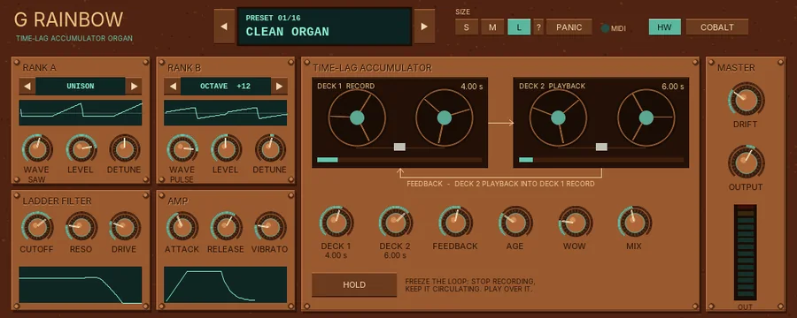
Overview
G Rainbow is an eight-voice organ built for drones and minimalist loops. Each voice has two oscillator ranks, each tuned to a modal interval of the note you play, with a wave that blends smoothly from sine through triangle and saw to pulse. The ranks go through a saturating four-pole ladder filter and a simple organ-style amp envelope with vibrato.
The heart of the instrument is the TIME-LAG ACCUMULATOR: two virtual tape decks in series. The organ is recorded on deck 1, deck 1's playback feeds deck 2, and deck 2's playback is fed back into deck 1's record head - so what you play piles up, layer on layer, slowly darkening and wobbling like old tape. HOLD freezes the loop so you can play over it.
A drift control adds a slow, audible wander of pitch, detune, pulse width, filter and tape speed, plus a small random tuning on every note.
Reach for it for
- Evolving drones and pads
- Minimalist repeating patterns that build up over time
- Tape-loop textures to play over (HOLD)
- Detuned organ tones at modal intervals
- Ambient beds that keep moving
Getting started
- Insert G Rainbow on a track (it is an instrument: it has no audio input).
- Arm the track with a MIDI input, or draw notes in a MIDI item. It plays on any MIDI channel and responds to velocity and the sustain pedal (CC64).
- Pick a preset from the display at the top, then play a few notes and let the loops build.
Controls
Knobs: drag up or down (Shift for fine), double-click or Ctrl-click to reset. A knob's value shows while you hover over it, and the display at the top briefly shows the control you touched.
The header
- Preset display
- Shows PRESET nn/16 and the name. Click it for the list of presets; the arrows either side step through them.
- SIZE (S / M / L)
- Panel size: small, medium or large.
- ?
- Opens a pop-up with the design credit, the GFX website address and the address of this manual. Click anywhere to close it.
- PANIC
- Releases every note.
- MIDI light
- Flashes when MIDI arrives.
- HW
- Switches between the detailed hardware look and a flat look.
- COBALT
- Switches the panel from copper to a complementary blue colour scheme.
RANK A and RANK B
- Interval
- The arrows choose where the rank sounds relative to the note you play: -2 OCT, -1 OCT, UNISON, MIN 3RD, MAJ 3RD, 4TH, 5TH, OCTAVE, 12TH or 2 OCT.
- Wave scope
- Two cycles of the rank's current waveform.
- WAVE
- Blends the waveform from sine through triangle and saw to pulse, 0 to 100%. The label shows the dominant wave.
- LEVEL
- The rank's level, 0 to 100%.
- DETUNE
- Fine tuning of the rank, -50 to +50 cents. A few cents between the ranks gives a slow beating.
LADDER FILTER
- CUTOFF
- 40 Hz to 16 kHz. It follows the keyboard by half, so higher notes are a little brighter.
- RESO
- Resonance, 0 to 100%. Near the top the filter starts to self-oscillate.
- DRIVE
- How hard the ranks drive the filter, 0 to 100%, for a thicker, saturated tone.
- Response display
- A sketch of the filter's frequency response.
AMP
- ATTACK
- 1 ms to 3 s.
- RELEASE
- 10 ms to 8 s.
- VIBRATO
- Organ-style vibrato at about 5.8 Hz, 0 to 100% (up to 30 cents).
- Envelope display
- A sketch of the attack and release.
TIME-LAG ACCUMULATOR
- DECK 1 / DECK 2 (reels)
- The two decks. The readout shows each deck's length, and the bar under the reels shows the loop position.
- DECK 1
- The length of deck 1's loop, 0.5 to 20 seconds. Click the DECK 1 label under the knob to switch to bars (1/2, 1, 2, 3, 4, 6, 8 or 12 bars of the project tempo, up to 20 seconds).
- DECK 2
- The length of deck 2's loop, set the same way. Deck 2 plays deck 1's output a further DECK 2 later.
- FEEDBACK
- How much of deck 2's playback is re-recorded onto deck 1 on every pass, 0 to 100%. High settings let the layers pile up for a long time.
- AGE
- Tape wear on every pass, 0 to 100%: the repeats get darker and more saturated (the lows below about 35 Hz are kept clean).
- WOW
- Wow and flutter of the transports, 0 to 100%: a slow pitch wander with a little fast flutter.
- MIX
- The level of the loops against the organ, 0 to 100%. The left side carries more of deck 1, the right more of deck 2.
- HOLD
- Freezes the loop: new playing is no longer recorded and what is on the tape keeps circulating (almost without loss). Play over it; switch HOLD off to record again.
MASTER
- DRIFT
- 0 to 100% (30% by default). A slow wander of pitch (up to 8 cents), extra detune on rank B, pulse width, the filter cutoff and the tape speed, plus a random tuning offset on every new note (up to 5 cents).
- OUTPUT
- Output level, -24 to +6 dB. A built-in limiter keeps the output just under full scale.
- OUT meter
- Output level.
Presets
Every preset sets the ranks, filter, amp and accumulator, and resets DRIFT to 30% and OUTPUT to -6 dB. HOLD is switched off.
- Clean Organ
- Unison and octave ranks, the accumulator off: the plain organ.
- Rainbow
- Unison and octave with 4 s and 6 s decks building up at 60% feedback.
- Dervish
- Unison and fifth, darker and more resonant, with deeper vibrato, more feedback, age and wow.
- Poppy
- A bright pulse-leaning unison rank with a 12th above, strong vibrato and long 8 s / 12 s decks.
- In C Pulse
- Short, plucky organ notes with the decks synced to 1 and 2 bars, for repeating patterns.
- Keyboard Study
- A brighter, softer organ with short 1.5 s / 2.5 s loops.
- Copper Cathedral
- An octave below and two octaves above, slow attack and release, long 12 s / 18 s decks at 80% feedback.
- Rust Drone
- An octave below and a fifth, dark and heavily driven, with lots of age and wow.
- Sunrise Drone
- Soft waves an octave below and a fifth, a slow 800 ms attack and no vibrato.
- Reed Swarm
- Buzzy unison and octave ranks, strong vibrato and short 2 s / 3 s loops.
- Tape Echoes
- Unison and a 12th with short 0.75 s / 1.25 s decks, for echoes rather than layers.
- Modal Fifths
- Unison and fifth with 5 s / 7.5 s decks.
- Glass Harmonics
- Near-sine ranks at an octave and two octaves, an open filter and a slow attack.
- Minor Third Mist
- Unison and a minor third, a slow attack and well-aged 7 s / 11 s loops.
- Pulse Machine
- Very short, resonant notes with the decks synced to half a bar and one bar.
- Frozen Choir
- Unison and fifth, a 1.2 s attack and 6 s release, long 15 s / 20 s decks at 90% feedback.
Tips
- Make the two deck lengths an uneven ratio (4 s and 6 s, 5 s and 7.5 s) so the layers keep shifting against each other rather than lining up.
- Build a bed with FEEDBACK high, then press HOLD and play a melody over the frozen loop.
- Sync the decks to bars when you want the loops to stay in time with the project.
- If the loops get too dark or muddy, lower AGE; if they get too loud, lower FEEDBACK or MIX.
File: gfx-g-rainbow.jsfx
G Tonewheel
A tonewheel drawbar organ with percussion, key click, scanner vibrato / chorus and valve drive.

Overview
G Tonewheel is a drawbar organ in the classic tonewheel style. 91 tonewheels spin all the time and stay locked together, as on the real thing; nine drawbars from 16' to 1' mix their harmonics, with the classic foldback at the top and bottom of the range.
It has the parts that make the sound: percussion on the 2nd or 3rd harmonic (single-trigger - it only strikes again once all keys are lifted), the key click of the contacts, the scanner vibrato and chorus (V1 - V3, C1 - C3), a valve preamp DRIVE, TONE and the SWELL pedal.
The organ is mono and dry by design. For the full sound, put GFX Rotary after it: G Tonewheel passes all MIDI on, so the mod wheel or sustain pedal can switch the rotary's speed.
Reach for it for
- Jazz, soul and gospel organ parts
- Rock organ with overdrive (into GFX Rotary)
- Reggae bubble and other percussive comping
- Soft flute and ballad registrations
- Swell-pedal dynamics from an expression pedal (CC11)
Playing it
G Tonewheel is an instrument: it has no audio input and makes its sound from MIDI.
- Insert G Tonewheel on a track (as the first plug-in, or after a MIDI effect).
- Arm the track for recording and set its input to your MIDI keyboard (or draw notes in a MIDI item).
- Pull the drawbars, or pick a registration from PRESETS.
- Play. The MIDI IN light shows notes arriving, and the MIDI section shows how many keys are down.
- For the classic rotary-speaker sound, add GFX Rotary after G Tonewheel on the same track.
G Tonewheel responds to the expression pedal (CC11 moves SWELL) and all-notes-off (CC120 and CC123). Velocity does not change the level, as on a real organ. All MIDI is passed on down the chain.
Controls
The header
- PRESETS, arrows and display
- PRESETS (or a click on the display) opens the list of drawbar registrations; the ◄ / ► keys step through them. The display shows the preset number and name. Choosing one sets the drawbars, percussion, vibrato / chorus, CLICK and DRIVE; TONE, SWELL, TUNE, DRIFT and OUTPUT are left as they are. The last entry resets everything to the defaults.
- S / M / L
- Panel size: small, medium or large. The panel also scales to fit the plugin window.
- ?
- Opens a pop-up with the design credit, the GFX website address and the address of this manual. Click anywhere to close it.
DRAWBARS
Nine drawbars, left to right: 16', 5 1/3', 8', 4', 2 2/3', 2', 1 3/5', 1 1/3' and 1'. The two brown ones are the sub-harmonics, the white ones the octaves of the note and the black ones the fifths and the third. Drag a drawbar down to pull it out (0 to 8), or use the mouse wheel over it. Each step is about 3 dB; 0 is off. A short stub of each drawbar's stalk always shows, even when it is pushed fully in.
PERC
- ON
- Switches the percussion on: a decaying ping on the 2nd or 3rd harmonic at the start of each phrase. It is single-trigger: it only strikes again once all keys are lifted, so play detached for percussion on every chord. While it is on, the 1' drawbar is silent (the percussion borrows it).
- THIRD
- Off: percussion on the 2nd harmonic (an octave up). On: on the 3rd harmonic (an octave and a fifth up).
- SOFT
- Off (NORMAL): loud percussion, and the drawbars drop by about 3 dB to make room for it. On: softer percussion, the drawbars at full level.
- SLOW
- Off (FAST): a short ping. On: a longer decay.
THIRD, SOFT and SLOW only work (and only light up) while ON is lit.
V/C
- V1 / V2 / V3
- Scanner vibrato, from shallow (V1) to deep (V3).
- C1 / C2 / C3
- Scanner chorus: the vibrato mixed with the straight sound, from shallow to deep.
- Off
- Click the lit key again to switch vibrato and chorus off.
VOICE
- CLICK
- The key click, 0 - 100% (40% by default): how fast the contacts switch on and off, plus a little contact noise. Turn it down for a smooth, soft attack; up for a percussive spit.
- DRIVE
- The valve preamp, 0 - 100% (15% by default). Low settings add warmth; high settings break up into growl.
- TONE
- Brightness, 0 - 100% (70% by default): a low-pass that rolls the top off, from about 2 kHz at 0% to 12 kHz at 100%.
- SWELL
- The expression pedal, 0 - 100%. It follows a squared curve, like a real swell pedal. MIDI CC11 moves it.
- TUNE
- Fine tuning, -50 to +50 cents.
Drift
- DRIFT
- 0 - 100% (25% by default). The motor speed wanders slowly, so the whole organ drifts a little in pitch (up to 20 cents at 100%), TONE drifts a little brighter and darker, and the scanner's speed wavers. The tonewheels always stay locked together, so the organ never goes out of tune with itself.
MIDI
- CHANNEL
- The MIDI channel G Tonewheel listens to: OMNI (all) or CH 1 to CH 16.
- MIDI IN
- Lights when a note arrives or keys are held. Below it, the number of keys down.
- PANIC
- Lets go of every held key at once.
MASTER
- OUTPUT
- Output level, -24 to +12 dB.
- OUT meters
- Output level as two bars, L above R, with a floating peak. Click a meter to clear the peaks.
The output is softly clipped at -0.3 dBFS, so peaks never go over.
Presets
- Soul Jazz
- 888000000 with third-harmonic percussion (normal, fast) and C3.
- Memphis Groove
- 888800000, no percussion, C3 and a little more drive.
- Full Organ
- All drawbars out, C3, more drive.
- Gospel
- 886800008 - the 1' on top - with C3 and more drive.
- Modern Jazz
- 838000000 with soft, slow third-harmonic percussion, no vibrato and almost no drive.
- Jazz Ballad
- 808000000, gentle C1 chorus, a soft click.
- Rock Overdrive
- 888888000, C3, a sharper click and heavy drive.
- Reggae Bubble
- 008800000 with soft, fast second-harmonic percussion and no vibrato.
- Flute
- The 8' alone with V1 vibrato, a very soft click and no drive.
- Slow Perc
- 888000000 with slow third-harmonic percussion and C3.
- Reset all to defaults
- Every control back to its starting value.
Tips
- Drawbar numbers read left to right: 888000000 means the first three drawbars fully out.
- For percussion on every chord, lift all keys between chords; held legato notes will not re-strike it.
- Put GFX Rotary straight after G Tonewheel and use the mod wheel or sustain pedal to switch it between slow and fast.
- Map an expression pedal to CC11 for SWELL: it is the most expressive control on an organ.
- If the organ sounds harsh with lots of upper drawbars, bring TONE down rather than pushing the drawbars back in.
File: gfx-g-tonewheel.jsfx
G Voce 90
A half-rack electric piano module in the spirit of the classic 90s EP modules.
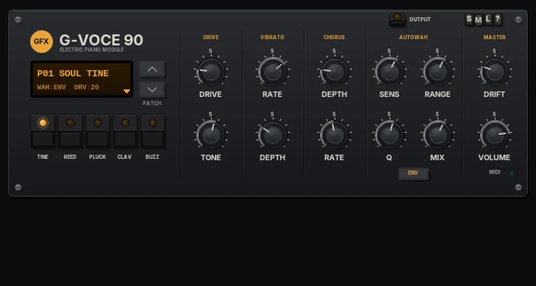
Overview
G Voce 90 is a 12-voice electric piano module with five synthesised voices - no samples. TINE is a warm tine piano with a metallic 'ding' on the attack that barks when you play hard. REED is a reed piano with a soft-clipped bark. PLUCK is a short, bright, sticky-reed pluck. CLAV is a plucked string with a pickup and a damper that mutes it when you let go. BUZZ is a buzzy pulse-wave plucked keyboard.
The voices run through a chain of classic keyboard effects: DRIVE, TONE, VIBRATO (a stereo pan tremolo), CHORUS and AUTOWAH, then VOLUME. The autowah can follow your playing or sweep in time with the project tempo.
Twelve factory patches cover tines, reeds, clavs and more. Higher notes decay faster, as on the real instruments, and every note gets a tiny random tuning offset.
Reach for it for
- Soul, gospel and neo-soul electric piano parts
- Barking, driven reed piano for rock and blues
- Funky clav lines with an envelope or tempo-synced wah
- Stereo tremolo keys that move across the speakers
- Retro plucked keyboards (PLUCK, BUZZ)
Playing it
G Voce 90 is an instrument: it has no audio input and makes its sound from MIDI.
- Insert G Voce 90 on a track.
- Arm the track for recording and set its input to your MIDI keyboard (or draw notes in a MIDI item).
- Play. The MIDI light at the bottom right flashes on each note.
It responds to velocity, the sustain pedal (CC64), pitch bend (+/- 2 semitones) and all-notes-off (CC120 and CC123). It listens on every MIDI channel, and incoming MIDI is passed on down the chain. Up to 12 notes sound at once; past that, the oldest note is taken over.
Controls
Patch and voice
- Display
- Shows the patch number and name. A * after the number means you have changed the patch since loading it. The second line shows the WAH mode and the DRIVE setting, or the knob you are turning and its value. Click the display for the full patch list, grouped into Tines, Reeds and Others.
- PATCH up / down
- Step to the next or previous patch.
- TINE / REED / PLUCK / CLAV / BUZZ
- Picks the voice. The lit key shows the one in use. Changing it applies to the next notes you play.
DRIVE
- DRIVE
- A gentle, slightly uneven soft-clip, 0 - 100%. Low settings (10 - 30%) are almost clean and only round off the peaks; higher settings add grit and bark. The level is matched, so it changes the colour more than the volume.
- TONE
- A low-pass tone control, 0 - 100%. Lower is darker and rounder, higher is brighter.
VIBRATO
A stereo pan tremolo: the sound moves between the left and right speakers, as on the classic suitcase pianos.
- RATE
- The speed, 0.5 - 10 Hz.
- DEPTH
- How far it moves, 0 - 100%. At 0 it is off.
CHORUS
- DEPTH
- How much chorus, 0 - 100%. At 0 it is off. The chorus crosses left and right for a wide image.
- RATE
- The speed of the chorus wobble, 0.1 - 5 Hz.
AUTOWAH
- SENS
- How strongly the wah reacts, 0 - 100%. In ENV mode, how far your playing opens it; in the tempo modes, how far each sweep goes.
- RANGE
- How high the wah can sweep, 0 - 100%.
- Q
- The sharpness of the wah peak, 0 - 100%. Higher is more vocal and quacky.
- MIX
- The blend of wah and dry sound, 0 - 100%. At 0 the wah is off.
- ENV / 1/4 / 1/8 / 1/16
- Click to step through the wah modes. ENV: the wah follows how hard you play. 1/4, 1/8, 1/16: it sweeps open and closed once per quarter, eighth or sixteenth note, in time with the project tempo (locked to the beat while the transport runs).
MASTER
- DRIFT
- A slow random wander, 0 - 100% (25% by default). It very slightly moves the pitch (up to +/-20 cents at 100%), the TONE setting, the VIBRATO and CHORUS rates and the wah's centre, and sets how much each new note is randomly detuned (up to +/-6 cents).
- VOLUME
- The output level, -24 to +6 dB. Each patch also has its own level trim so the hottest patches do not hit the output clipper.
- MIDI
- Lights when a note arrives.
The header
- OUTPUT
- Folds the STEREO and OUTPUT controls out below the panel (and back in). The light shows when they are open.
- S / M / L
- Panel size: small, medium or large. The panel also scales to fit the plugin window.
- ?
- Opens a pop-up with the design credit, the GFX website address and the address of this manual. Click anywhere to close it.
STEREO and OUTPUT (OUTPUT fold-out)
- MONO
- Makes everything below the set frequency mono, 20 - 500 Hz (fully left = OFF). Use it to keep the low end centred.
- WIDTH
- Widens the stereo image above the MONO frequency, from +0% up to +100% (twice the side signal).
- SAT
- Band saturation on the way out, 0 - 100%: only the lows and highs are saturated (the mids stay clean), with a soft curve that loosens as the level rises.
- BIAS
- Shapes the saturation: more bias adds more even (2nd) harmonics, for a warmer, rounder colour.
- LO BAND / HI BAND
- Where the low and high saturation bands start (40 - 400 Hz and 2 - 16 kHz).
- CEILING / THRESH
- With CLIP: the level the peaks are softly clipped at. With LIMIT: the threshold of a brickwall limiter that holds the peaks at -0.3 dBFS - pulling it down limits harder and makes the output louder.
- OFF / CLIP / LIMIT
- The final stage: nothing, a soft clipper (no latency), or a lookahead limiter (3 ms latency, compensated by REAPER). With LIMIT the gain reduction is shown beside the keys; with CLIP a red CLIP shows while it is clipping.
Patches
A patch sets the voice and every effect control; DRIFT, VOLUME and the fold-out controls are left as they are.
- Soul Tine
- The default: tine piano with light drive, some vibrato and chorus, and a gentle envelope wah.
- Clean Tine
- Tine piano almost clean: a little drive, no vibrato, chorus or wah.
- Suitcase
- Tine piano with deep stereo vibrato at 5 Hz.
- Gospel Wah
- Driven, brighter tine piano with a strong envelope wah and a little chorus.
- Neo Soul
- Tine piano with a slow vibrato, deeper chorus and a soft wah in the mix.
- Reed Bark
- Reed piano driven hard for bark, with a quick vibrato.
- Reed Trem
- Reed piano with deep, quick stereo vibrato.
- Pluck Pop
- Bright Pluck with chorus.
- Funk Clav
- Clav with drive and a strong, sharp envelope wah.
- Sync Clav
- Clav with the wah sweeping on every 16th note, in time with the project.
- Buzz 70s
- The BUZZ voice with deep chorus.
- Dirty Keys
- Tine piano driven hard, with an 8th-note wah.
Tips
- For the classic bark, play harder: TINE and REED both get brighter and grittier with velocity, before DRIVE adds any more.
- With CLAV, let go of the keys sharply - the damper mutes the string in about 60 ms, which is half the funk.
- Use the tempo wah modes with the transport running so the sweep locks to the beat.
- If a patch is too wide for a busy mix, open OUTPUT and raise MONO to keep the lows in the centre.
File: gfx-g-voce-90.jsfx
G Anvil
A two-voice analogue percussion module - one big kick and one snare / metal voice - with a 16-step sequencer.
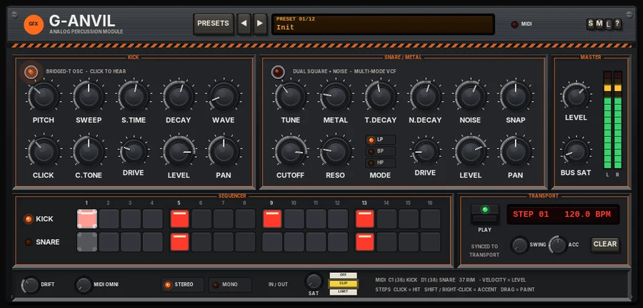
Overview
G Anvil is a dual-voice analogue percussion module in the spirit of the heavy-duty German drum modules that built industrial music and techno. There are no samples: both voices are synthesised as they play.
The KICK is a bridged-T style oscillator with an exponential pitch sweep, a click for the attack and a hard, lopsided drive. The SNARE / METAL voice uses two detuned square oscillators and white noise through a resonant multi-mode filter: with METAL at 0 it is a fat snare body, turned up it becomes an inharmonic clang with ring modulation. Each voice has its own drive, and BUS SAT can push the whole module into saturation.
A two-row, 16-step sequencer plays the two voices in time with REAPER's transport, and both voices also play from MIDI notes, with velocity.
Reach for it for
- Big, distorted techno and industrial kicks
- Long, booming dub and rumble kicks
- Metallic clanks, rimshots and noisy snares from one voice
- Gabber and hardcore kicks with the drive turned right up
- Quick two-voice patterns right inside REAPER, or layering under another drum machine
Loading and playing it
- Insert G Anvil on a new track. It is an instrument: it makes its own sound and needs no audio input.
- Make sure PLAY (in TRANSPORT) is lit, then press play in REAPER. The sequencer follows the project's tempo and position.
- Click a voice's orange LED to hear it, choose a preset, and edit the steps in the grid.
- To play it from MIDI, arm the track with a MIDI input and record monitoring on, or put a MIDI item on the track (see MIDI notes below). Switch PLAY off if you want MIDI only. The MIDI light in the header flashes when a drum note arrives.
Controls
The header
- PRESETS
- Opens the full preset list.
- ◄ / ►
- Step to the previous or next preset (wrapping round).
- Preset display
- Shows the preset number and name. Click it for the preset list too.
- MIDI
- Flashes when a drum note arrives.
- S / M / L
- Panel size: small, medium or large. The panel also scales to fit the plugin window.
- ?
- Opens a pop-up with the design credit, the GFX website address and the address of this manual. Click anywhere to close it.
KICK
Click the LED at the top left to hear the kick.
- PITCH
- Where the kick's pitch lands after the sweep, 30 - 150 Hz (50 Hz by default).
- SWEEP
- How far above PITCH the sweep starts, 0 - 48 semitones (24 by default). 0 gives a flat, tonal boom; more gives a punchier drop.
- S.TIME
- How fast the pitch falls, 2 - 250 ms (28 ms by default). Short for a tight punch, long for a laser-like zap.
- DECAY
- How long the kick rings, 40 - 2500 ms (420 ms by default), measured to -60 dB.
- WAVE
- Morphs the oscillator from a pure sine (SINE) to a triangle (TRIANGLE), 0 - 100% (10% by default). More triangle adds harmonics and helps the kick cut through on small speakers.
- CLICK
- The level of the attack click, a short pulse and a burst of noise, 0 - 100% (35% by default).
- C.TONE
- The click's colour, 0 - 100% (50% by default): from a dark thud to a bright tick. Brighter clicks are also shorter.
- DRIVE
- A hard, lopsided analogue-style saturation, 0 - 100% (25% by default). Low settings thicken the kick; high settings flatten it into a square-edged distorted kick.
- LEVEL
- The kick's volume, 0 - 100% (85% by default).
- PAN
- Position, -100 (left) to +100 (right); CENTRE by default.
SNARE / METAL
Click the LED at the top left to hear the snare.
- TUNE
- The pitch of the two square oscillators, 80 - 1200 Hz (210 Hz by default).
- METAL
- 0 - 100% (20% by default). Spreads the two oscillators apart and adds ring modulation: from a fat, nearly unison snare body to the classic inharmonic metal clang. It also opens up the tone's brightness.
- T.DECAY
- The decay of the tone, 10 - 2000 ms (110 ms by default).
- N.DECAY
- The decay of the noise, 10 - 2000 ms (190 ms by default).
- NOISE
- The balance of tone and noise, from ALL TONE (0%) to ALL NOISE (100%); 60% by default.
- SNAP
- The attack, 0 - 100% (50% by default): a quick level jump and a pitch blip at the start of each hit.
- CUTOFF
- The filter frequency, 100 Hz - 16 kHz (7.5 kHz by default).
- RESO
- The filter's resonance, 0 - 100% (20% by default). The level is kept steady as you turn it up.
- LP / BP / HP (MODE)
- The filter type: low-pass (the default, for a full snare), band-pass (a focused, boxy or ringing sound) or high-pass (thin, bright and clangy).
- DRIVE
- The same hard saturation as the kick, 0 - 100% (15% by default).
- LEVEL
- The snare's volume, 0 - 100% (75% by default).
- PAN
- Position, -100 (left) to +100 (right); CENTRE by default.
MASTER
- LEVEL
- Output level, -24 to +12 dB (0 dB by default).
- BUS SAT
- Lopsided saturation on the whole module, 0 - 100% (10% by default). It glues the two voices together and adds weight; high settings crunch hard.
- L / R meters
- The output level, left and right.
SEQUENCER
Two rows of 16 sixteenth-note steps, KICK on top and SNARE below. A step is a rest, a hit (orange) or an accent (red, with a light bar). The step that is playing is highlighted, and the LED next to each row's name flashes as the voice plays.
- Steps
- Click a step to set or clear it; drag to paint along the rows. Shift-click sets an accent; right-click switches a step between hit and accent.
The pattern is saved with the project and with each preset.
TRANSPORT
- PLAY
- The sequencer on or off (on by default). When on, it plays whenever REAPER's transport is playing, locked to the project tempo and position.
- Display
- The step and the tempo while playing. With PLAY on and the transport stopped it reads WAITING FOR PLAY; with PLAY off, SEQ OFF - MIDI ONLY.
- SWING
- Delays the off-beat sixteenths, 0 - 75% (0% by default).
- ACC (ACCENT)
- How much louder accents are than normal hits, 0 - 100% (50% by default). At 0 every step plays at full level; at 100 normal hits are 45% quieter than accents.
- CLEAR
- Clears both rows.
The bottom strip
- DRIFT
- 0 - 100% (30% by default). Every hit is detuned a little at random, and the tunings, the snare filter and the click tone wander slowly, like real analogue circuits. At 0% every hit is identical.
- MIDI (CH)
- The MIDI channel: OMNI (all channels, the default) or 1 - 16.
- STEREO / MONO
- STEREO keeps the two voices where PAN puts them; MONO folds the output to mono.
- SAT
- Band saturation on the way out: only the lows and highs are saturated (the mids stay clean), with a soft curve that loosens as the level rises. 0% by default.
- OFF / CLIP / LIMIT
- The final stage: nothing, a soft clipper at -0.3 dBFS (no latency, the default), or a lookahead limiter that holds the peaks at -0.3 dBFS (3 ms latency, compensated by REAPER). While the output clips, the CLIP key flashes red.
Knobs: drag up or down (Shift for fine moves); double-click or Ctrl-click to reset a knob to its default.
MIDI notes
G Anvil plays from these notes, with velocity: it sets the level, and softer hits are a little darker. Other MIDI passes straight through.
- KICK
- Notes 35 and 36 (C1)
- SNARE
- Notes 38 (D1), 39 and 40
- RIM
- Note 37: the snare voice, shorter and more tonal, with the filter opened up
Presets
Presets set both voices, BUS SAT, SWING, ACCENT and the pattern. MASTER LEVEL, DRIFT, PLAY, the MIDI channel, STEREO / MONO and the output stage are left as they are.
- Init
- The default kit: a clean, punchy kick on every beat and a snare on 2 and 4.
- Industrial Thud
- A longer, driven kick and a dark band-pass snare with lots of noise and a ringing filter.
- Techno Rumble Kick
- A long, low 1.4-second kick with an off-beat high-pass metal tick on the snare voice.
- Classic Punch
- A bright-clicking, tight kick and a clean snare, with a touch of swing.
- Distorted Hardcore
- A heavily driven kick with a deep sweep and a crunchy band-pass snare; BUS SAT at 40%.
- Metal Clank
- The snare voice at full METAL with a long tone: a clanging anvil hit, in a broken pattern.
- Rimshot Tick
- A short, clicky kick and a very short, high-pitched high-pass snare: a rimshot tick.
- Deep Dub
- A soft, low kick that rings for 1.8 seconds and a gentle, long snare, with swing.
- Gabber
- A fast-sweeping kick with full drive and lots of triangle, and BUS SAT at 50%.
- Minimal Click
- A short, clicky kick with almost no drive and a tiny high metal tick, with swing.
- Warehouse Snare
- A broken kick pattern with a big, noisy, driven band-pass snare.
- EBM Stomp
- A slow-sweeping driven kick with plenty of triangle and a thick low-pass snare.
Tips
- For a long techno kick, set DECAY over 1 second, SWEEP low and S.TIME around 30 - 60 ms, then add DRIVE to taste.
- The kick's DRIVE and BUS SAT add a lot of level: lower the voice LEVEL as you turn them up.
- Turn METAL up and NOISE down, with the filter in BP or HP, for cowbells, clanks and bell-like hits.
- Use note 37 from MIDI for rimshots between the snares without changing the snare settings.
- Set DRIFT to 0 for a machine-tight loop; leave some in for a more alive, hardware feel.
File: gfx-g-anvil.jsfx
G Byte 6
A six-voice lo-fi digital drum machine with the gritty 8, 10 and 12-bit sound of the mid-80s rhythm boxes.
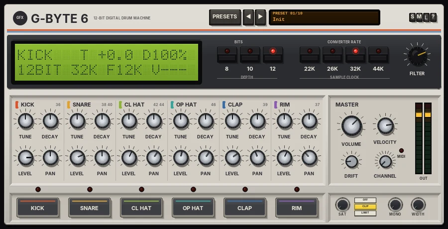
Overview
G Byte 6 is a six-voice drum machine in the spirit of the gritty mid-80s Japanese 12-bit rhythm boxes of the early digital era. There are no samples: every hit is synthesised live and then pushed through a vintage converter, which is where the character comes from.
The six voices are KICK (a sine with a fast pitch drop and an FM thump that dies away), SNARE (an FM tone plus band-passed noise), CL HAT and OP HAT (a cluster of six out-of-tune square waves and noise, high-passed), CLAP (quick noise bursts and a tail) and RIM (an FM ping with a wooden body). The closed hat chokes the open hat, as on a real kit.
Every voice has its own converter. The sound is sampled at the converter RATE with no anti-alias filter, so the folded-back grain is part of the sound, and quantised to 8, 10 or 12 BITS. As on the originals, TUNE moves the voice's converter clock, so a voice tuned down is also grainier. Each converter is followed by a steep output low-pass (FILTER). G Byte 6 has no sequencer: play it from MIDI drum notes.
Reach for it for
- 80s pop, synth-pop and electro funk drum sounds
- Crunchy, lo-fi hip-hop kits
- Bit-crushed, aliased 8-bit percussion
- Layering grit and click under a cleaner drum track
- A light, quick drum machine to play from a MIDI controller or MIDI items
Loading and playing it
- Insert G Byte 6 on a new track. It is an instrument: it makes its own sound and needs no audio input.
- Arm the track for recording and set its input to your MIDI keyboard or pads, or put a MIDI item on the track. It plays General MIDI drum notes (see MIDI notes below).
- Click a pad along the bottom to hear a voice. The LED above the pad lights on every hit, and the MIDI light in MASTER flashes when a note arrives.
- If you play on a particular MIDI channel, set CHANNEL in MASTER; OMNI listens to all 16.
Controls
The header
- PRESETS
- Opens the full preset list. The last entry, Reset all to defaults, loads Init and also resets MASTER and IN / OUT.
- ◄ / ►
- Step to the previous or next preset (wrapping round).
- Preset display
- Shows the preset number and name. Click it for the preset list too.
- S / M / L
- Panel size: small, medium or large. The panel also scales to fit the plugin window.
- ?
- Opens a pop-up with the design credit, the GFX website address and the address of this manual. Click anywhere to close it.
LCD
A green two-line dot-matrix display. The top line shows the voice that last played (or the one whose knob you are turning) with its TUNE and DECAY. The bottom line shows the BITS, the converter RATE, the FILTER frequency and the velocity of the last hit (V--- until something has played).
CONVERTER
- BITS (8 / 10 / 12)
- The converter's depth (12 by default). 12 is clean with a little grit on quiet tails; 10 is grainier; 8 adds clear quantising noise and a crunchy, buzzing decay.
- CONVERTER RATE (22K / 26K / 32K / 44K)
- The sample clock, about 22, 26, 31 or 44 kHz (32K by default). Lower rates fold more of the high end back as metallic, aliased grain.
- FILTER
- The 4-pole output low-pass after every converter, 20 - 100% of the converter's Nyquist frequency (80% by default). The knob shows the frequency in kHz. Lower settings give the soft, band-limited top of the period; 100% lets all the grain through.
Voice columns
Six columns with the same four knobs: KICK, SNARE, CL HAT, OP HAT, CLAP and RIM. The MIDI notes for each voice are printed at the top right of its column.
- TUNE
- Pitch, -12 to +12 semitones (0 by default). It also moves the voice's converter clock, so lower tunings are grainier and duller, and higher ones cleaner.
- DECAY
- Length, 25 - 400% of the voice's natural decay (100% by default).
- LEVEL
- The voice's volume, 0 - 100. Defaults: KICK 85, SNARE 75, CL HAT 60, OP HAT 55, CLAP 70, RIM 60.
- PAN
- Position, L100 to R100. Defaults: KICK and SNARE centre (C), both hats R25, CLAP L15, RIM L30.
Pads
Six pads, one per voice, along the bottom. Click a pad to play its voice at full velocity. The LED above each pad lights on every hit, from the pad or from MIDI.
MASTER
- VOLUME
- Output level, -24 to +12 dB (0 dB by default).
- VELOCITY
- How much MIDI velocity changes the level, 0 - 100% (80% by default). At 0 every hit plays at full level.
- DRIFT
- 0 - 100% (15% by default). Being a digital box, G Byte 6 keeps it very subtle: each hit is retuned at random by up to 12 cents at 100% (under 2 cents at the default). Nothing wanders between hits.
- CHANNEL
- The MIDI channel: OMNI (all channels, the default) or 1 - 16.
- MIDI
- Flashes when a drum note arrives.
- OUT meters
- The output level, left and right.
IN / OUT
- SAT
- Band saturation on the way out: only the lows and highs are saturated (the mids stay clean), with a soft curve that loosens as the level rises. 0% by default.
- OFF / CLIP / LIMIT
- The final stage: nothing, a soft clipper at -0.3 dBFS (no latency, the default), or a lookahead limiter that holds the peaks at -0.3 dBFS (3 ms latency, compensated by REAPER). While the output clips, the CLIP key flashes red.
- MONO
- Makes everything below the set frequency mono, 20 - 500 Hz (fully left = OFF, the default). Use it to keep the low end centred.
- WIDTH
- Widens the stereo image above the MONO frequency, from +0% up to +100% (twice the side signal).
Knobs: drag up or down (Shift for fine moves); double-click to reset a knob to its default.
MIDI notes
G Byte 6 plays from General MIDI drum notes, with velocity. Other MIDI passes straight through.
- KICK
- Notes 35, 36
- SNARE
- Notes 38, 40
- CL HAT
- Notes 42, 44 (closed and pedal hat). Both choke the open hat.
- OP HAT
- Note 46
- CLAP
- Note 39
- RIM
- Note 37
Presets
Presets set BITS, RATE, FILTER and the six voices. VOLUME, VELOCITY, DRIFT, the MIDI channel and IN / OUT are left as they are, except with Reset all to defaults.
- Init
- 12 bits, 32K, filter 80%, every voice at its defaults.
- Classic 80s Pop
- 12 bits at 32K with a slightly softer filter; a longer snare and clap, tighter closed hat.
- Dirty 8-Bit
- 8 bits at 22K with a dark filter, every voice tuned down a little and lengthened: crunchy and aliased.
- Crunchy Hip-Hop
- 10 bits at 26K and a low filter; a long, low kick and everything tuned down for a dusty, gritty kit.
- Synth Pop
- 12 bits at 44K with the filter almost open; everything tuned up a little, a long snare and clap.
- Electro Funk
- A long, booming kick tuned down, a short, high snare and a high rim, with tight hats.
- Lo-Fi Tape Kit
- 10 bits at 22K with the darkest filter (42%): soft, muffled and grainy.
- Bright 12-Bit
- 12 bits at 44K with the filter fully open, every voice tuned up: crisp and bright.
- Deep Boom Kit
- 12 bits at 26K; a very long kick tuned down 6 semitones and everything else tuned well down.
- Tight & Snappy
- 12 bits at 32K, every voice tuned up 2 or 3 semitones and shortened to around half length.
- Reset all to defaults
- Init, plus VOLUME, VELOCITY, DRIFT, CHANNEL and the IN / OUT section back to their defaults.
Tips
- For the most lo-fi sound, combine 8 bits, the 22K rate and a low TUNE: all three add grain.
- Tuning a voice up both raises its pitch and cleans it up; to get a high but grainy voice, lower the RATE as well.
- Long DECAY settings at 8 bits bring out the buzzing quantising noise on the tails - a big part of the period sound.
- Turn FILTER down when the kit sounds harsh; turn it up to 100% to hear all the aliasing.
- Set VELOCITY to 0 for the flat, machine-like dynamics of the original boxes.
- Use MONO at around 120 Hz to keep the kick centred when you widen the kit with WIDTH.
File: gfx-g-byte-6.jsfx
G Clockwork
An analogue preset-rhythm box: 15 synthesised voices, 32 built-in rhythms, ten kits and a phaser.
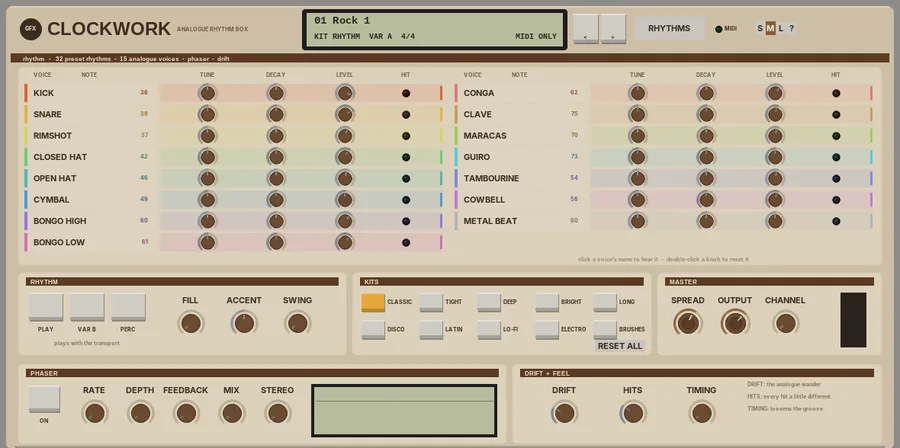
Overview
G Clockwork is a rhythm box in the spirit of the late-70s preset-rhythm machines. All 15 voices are synthesised, with no samples: kick, snare, rimshot, closed and open hat, cymbal, high and low bongo, conga, clave, maracas, guiro, tambourine, cowbell and metal beat. Each voice has its own TUNE, DECAY and LEVEL, and the KITS keys re-voice the whole machine in one go.
You can play it two ways, or both at once. From MIDI, each voice answers to its General MIDI drum note. Or switch on PLAY and it runs one of 32 built-in rhythms - 16 full-kit rhythms and 16 hand-percussion rhythms - locked to REAPER's tempo while the transport runs, with a B variation, automatic fills, accent and swing. A built-in phaser, the GFX instrument drift and per-hit variation keep it sounding like a real, slightly unruly machine.
Reach for it for
- Vintage drum-machine grooves for demos, songwriting and lo-fi tracks
- Hand-percussion loops to play along with (the PERC rhythms)
- Programming analogue-style beats from MIDI
- Swirling, phased drum loops
- Adding a shaker, tambourine or cowbell part under a live kit
Getting started
- Insert a new track and add G Clockwork to it as an instrument. It makes its own sound and needs no audio input.
- To play the built-in rhythms: click RHYTHMS (or the display) and pick a rhythm, switch PLAY on, then start REAPER's transport. The rhythm follows the project tempo and stops when the transport stops.
- To play it from MIDI: record-arm the track with a MIDI input, or draw notes in a MIDI item on the track. Each voice answers to its General MIDI drum note (shown in the NOTE column). The MIDI light in the header flashes on each note.
- Both work at the same time: leave PLAY on and add extra hits from MIDI on top.
Controls
The header
- RHYTHMS
- Opens the rhythm list, in two groups: KIT RHYTHMS and PERCUSSION ONLY.
- ◄ / ►
- Step to the previous or next rhythm.
- Display
- Shows the rhythm's number and name, whether it is a KIT RHYTHM or PERCUSSION, VAR A or VAR B, and its feel (4/4, 3/4 or TRIPLET). On the right: the current BAR (and FILL while a fill plays), WAIT while PLAY is on and the transport is stopped, or MIDI ONLY when PLAY is off. Click it to open the rhythm list too.
- MIDI
- Lights briefly on each incoming MIDI note.
- S / M / L
- Panel size: small, medium or large. The panel also scales to fit the plugin window.
- ?
- Next to the S / M / L size keys. Opens a pop-up with the design credit, the GFX website address and the address of this manual. Click anywhere to close it.
The voices
The 15 voices sit in two columns. Click a voice's name to hear it. Double-click a knob to reset it.
- VOICE
- The voice's name tab. Click it to hear the voice.
- NOTE
- The MIDI note that plays the voice: KICK 36 (and 35), SNARE 38 (and 40), RIMSHOT 37, CLOSED HAT 42 (and 44), OPEN HAT 46, CYMBAL 49 (and 51, 52, 55, 57, 59), BONGO HIGH 60, BONGO LOW 61, CONGA 62 (and 63, 64), CLAVE 75, MARACAS 70, GUIRO 73 (and 74), TAMBOURINE 54, COWBELL 56, METAL BEAT 80 (and 81). Note velocity sets how hard each hit is.
- TUNE
- The voice's pitch, -12 to +12 semitones.
- DECAY
- How long the voice rings, 25 to 400% of its normal length.
- LEVEL
- The voice's level in the mix, 0 to 100%.
- HIT
- Lights in the voice's colour each time it plays.
The closed hat cuts off the open hat, as on the original machines. Each voice also has its own fixed place in the stereo picture, which SPREAD widens or narrows.
RHYTHM
- PLAY
- Plays the selected rhythm while REAPER's transport runs, locked to the project's tempo and bars. Off: the machine only plays from MIDI.
- VAR B
- Adds the variation parts on top of the basic rhythm (extra percussion, open hats, cymbals).
- PERC
- Switches between a kit rhythm and its percussion-only partner (rhythm 1 and 17, 2 and 18, and so on).
- FILL
- Drops a fill into the second half of the last bar: OFF, EVERY 2, EVERY 4 or EVERY 8 bars.
- ACCENT
- How much the accented hits stand out, 0 to 100% (50% by default). At 100% the unaccented hits play at about half strength.
- SWING
- Delays the off-beat 16ths, 0 to 100%, for a shuffled feel. Works on the 16-step rhythms only; the triplet and 3/4 rhythms are left as they are.
KITS
- CLASSIC ... BRUSHES
- Ten keys, each with its kit's name on it, that re-voice the whole kit (tune, decay and the balance between voices) - see Kits below. The lit key shows the last kit chosen. Your rhythm settings are left alone.
- RESET ALL
- The key beside the kits: every control back to its starting value.
MASTER
- SPREAD
- How wide the voices are spread across the stereo picture, 0 to 100% (60% by default). 0 puts everything in the centre.
- OUTPUT
- Output level, -24 to +12 dB.
- CHANNEL
- The MIDI channel the voices listen to: OMNI (all channels, the default) or channel 1 to 16. MIDI is always passed on down the chain.
- Meter
- Output level, left and right, with a peak hold.
PHASER
A six-stage phaser on the whole machine, swept by its own LFO. The display shows the phaser's response as it sweeps, with a marker below it for the sweep position. While the phaser is off the display is dimmed and reads OFF. It fades in and out smoothly, so switching it on or off never clicks.
- ON
- Switches the phaser in or out.
- RATE
- The sweep speed, 0.05 to 8 Hz (0.3 Hz by default).
- DEPTH
- How far the sweep travels, 0 to 100% (70% by default).
- FEEDBACK
- Resonance around the phaser, 0 to 95% (50% by default). Higher settings give a sharper, more whistling sweep.
- MIX
- How much phaser, 0 to 100% (100% by default).
- STEREO
- Offsets the right side's sweep from the left, 0 to 180 degrees (90 by default). 0 is a mono phaser; higher settings give wide stereo movement.
DRIFT + FEEL
- DRIFT
- The GFX instrument drift, 0 to 100% (25% by default): the tuning of the whole kit wanders slowly (up to about 20 cents), the brightness of the noise voices (snare, hats, maracas, tambourine) and the tone of the metal voices (cymbal, cowbell, metal beat) drift, decays vary slightly, and each hit is tuned a little differently. 0 switches it off.
- HITS
- Makes every hit a little different in tune, decay and level, 0 to 100% (30% by default).
- TIMING
- Loosens the groove: each hit is delayed by a random amount up to this time, 0 to 20 ms (0 by default). Works on rhythm and MIDI hits alike.
IN / OUT strip
- SAT
- Band saturation on the way out: only the lows and highs are saturated (the mids stay clean), with a soft curve that loosens as the level rises.
- OFF / CLIP / LIMIT (OUT)
- The final stage: nothing, a soft clipper (no latency), or a lookahead limiter that holds the peaks at -0.3 dBFS (3 ms latency, compensated by REAPER). CLIP is on by default; its key flashes red while it is clipping.
- MONO
- Makes the low end mono below this frequency, from OFF up to 500 Hz.
- WIDTH
- Widens the stereo picture, from +0% (the default) to +100%.
Presets
Kits
Each kit first sets every voice back to its normal level, then changes the tune, decay and balance.
- CLASSIC
- The machine as designed: every voice at its normal tune and decay.
- TIGHT
- Tight & Dry: every voice shortened to 55% (the kick to 70%).
- DEEP
- Deep & Boomy: tuned down 3 semitones with longer decays; the kick 4 semitones down with twice its decay.
- BRIGHT
- Tuned up 3 semitones (the kick 2), slightly shorter.
- LONG
- Long Tails: every voice rings much longer (220%, the kick 160%).
- DISCO
- A little higher and tighter, with a deep, long kick and louder kick, hats and tambourine.
- LATIN
- Latin Percussion: kick and snare down, bongos, conga, clave, maracas, guiro and cowbell up.
- LO-FI
- Lo-Fi Box: tuned down and shorter, with quieter hats and cymbal.
- ELECTRO
- Short and slightly low, with a very deep, long kick, a punchy short snare, and louder kick and snare.
- BRUSHES
- Jazz Brushes: a long, low, soft snare, a quieter kit, longer decays and a shorter kick.
Kit rhythms
All kit rhythms have a kick-and-snare fill.
- 01 Rock 1
- Kick, snare on 2 and 4, eighth-note hats. VAR B: open hat and a cymbal on the one.
- 02 Rock 2
- Busier kick, sixteenth hats with accents. VAR B: tambourine and open hat.
- 03 Disco
- Four-on-the-floor kick, snare on 2 and 4, open hats on the off-beats. VAR B: sixteenth tambourine and metal beat.
- 04 Funk
- Syncopated kick and snare, accented sixteenth hats. VAR B: open hat and cowbell.
- 05 Ballad
- Gentle kick, rimshot on 2 and 4, eighth hats. VAR B: sixteenth maracas.
- 06 Pop
- Kick, snare, accented eighth hats. VAR B: tambourine backbeat and a cymbal.
- 07 Shuffle
- A triplet shuffle on kick, snare and hats. VAR B: open hat and cymbal.
- 08 Slow Rock
- A 12/8 triplet rock beat. VAR B: cymbal and tambourine.
- 09 Swing
- A triplet ride pattern on the cymbal, hats on 2 and 4, light kick. VAR B: rimshot.
- 10 Waltz
- 3/4: kick on the one, rimshot on two and three, hats. VAR B: cymbal and maracas.
- 11 Bossa Nova
- Kick, rimshot clave pattern, sixteenth maracas. VAR B: closed hat and conga.
- 12 Samba
- Kick, sixteenth tambourine, high bongo. VAR B: conga and cowbell.
- 13 Rhumba
- Clave, kick, low bongo, conga, maracas. VAR B: high bongo and guiro.
- 14 Cha-Cha
- Kick, cowbell on the beat, guiro, conga. VAR B: clave and high bongo.
- 15 Tango
- Kick on every beat, rimshot, hats. VAR B: conga and tambourine.
- 16 Beguine
- Kick, bongos and maracas. VAR B: cymbal and clave.
Percussion rhythms
No kick, snare, hats or cymbal: hand percussion to play along with. Each has its own percussion fill.
- 17 Tumbao
- Conga, clave and maracas. VAR B: bongos.
- 18 Salsa
- Clave, cowbell, conga and guiro. VAR B: bongos.
- 19 Bossa Perc
- Rimshot, maracas and conga. VAR B: bongos.
- 20 Batucada
- Tambourine, cowbell, metal beat, conga and high bongo. VAR B: maracas and low bongo.
- 21 Rumba Perc
- Clave, maracas, conga and low bongo. VAR B: guiro and high bongo.
- 22 Mambo
- Cowbell, clave, conga and guiro. VAR B: metal beat and high bongo.
- 23 Afro 6/8
- A triplet bell pattern on cowbell, with maracas, conga and low bongo. VAR B: high bongo and tambourine.
- 24 Calypso
- Tambourine, cowbell, conga and low bongo. VAR B: high bongo and maracas.
- 25 Reggae Perc
- Rimshot, maracas, low and high bongo. VAR B: tambourine and clave.
- 26 Merengue
- Guiro, conga and cowbell. VAR B: high bongo and maracas.
- 27 Baiao
- Metal beat, conga and low bongo. VAR B: maracas and high bongo.
- 28 Shaker Pop
- Accented maracas, tambourine and conga. VAR B: high bongo and clave.
- 29 Tamb Soul
- Tambourine, clave and conga. VAR B: maracas and low bongo.
- 30 Martillo
- High and low bongo with cowbell. VAR B: conga and clave.
- 31 Guaguanco
- Clave, conga and rimshot. VAR B: high bongo and maracas.
- 32 Cumbia
- Guiro, maracas, conga and low bongo. VAR B: high bongo and tambourine.
Tips
- Pick a kit rhythm, then press PERC to hear its percussion partner - great for adding a shaker or conga part under a live drummer.
- Turn FILL to EVERY 4 or EVERY 8 so long loops don't sound stuck.
- A little SWING (20-40%) and a few ms of TIMING make the 16-step rhythms feel much less mechanical.
- For a classic swirling drum-machine sound, switch the PHASER on with a slow RATE and FEEDBACK around 50-70%.
- Use the MIDI notes to add your own hits on top of a running rhythm - a crash on the one, an extra conga, a cowbell part.
File: gfx-g-clockwork.jsfx
G Deep 16
A fully synthesised deep house drum machine with a 16-step sequencer and a drum-bus chain.

Overview
G Deep 16 makes every sound from scratch - no samples. There are six voices: a kick, a snare, a clap, closed and open hi-hats and a rim shot. The kick is a sine wave whose pitch drops as it hits, with a click on the front and a drive that thickens the start. The snare and clap share a tonal body and a band of filtered noise. The hats are six square-wave oscillators tuned to the classic analogue metal ratios, blended with noise.
The voices then pass through a drum-bus chain: 1 COMPRESSOR, 2 3-BAND EQ, 3 DRIVE and 4 REVERB, then the MASTER volume. Each module has its own ON key.
A 16-step sequencer is built into the panel. It plays in time with REAPER's transport, has swing and a set of factory grooves, and can export its pattern as a MIDI item with the companion script. You can also play the voices from MIDI notes, or both at once.
Reach for it for
- Deep house, garage and Chicago-style grooves straight from the panel
- Synthesised kicks you can tune to the key of the track
- Wide house claps (WIDTH) and short, tuned rim shots
- Sketching a beat, then exporting it to MIDI to edit in REAPER
- Lo-fi or dubby drums through the drive and reverb modules
Playing it
G Deep 16 is an instrument: it has no audio input. It plays from its own sequencer, from MIDI notes, or both.
- Insert G Deep 16 on a track.
- To use the sequencer: switch PLAY on in the SEQUENCER section and start REAPER's transport. The steps follow the project's beat position (four beats to the bar), and the LCD shows the step that is playing and the tempo.
- To play it from MIDI: arm the track and set its input to your MIDI keyboard, or draw notes in a MIDI item. Note 36 (C1) is the kick, 38 the snare, 40 the clap, 42 and 44 the closed hat, 46 the open hat and 37 the rim shot. Velocity sets the level (and on the kick, how long it rings).
- Click a voice's name in the matrix to hear it on its own.
Triggering is sample-accurate. Incoming MIDI is passed on down the chain. CH in the MASTER section picks the MIDI channel it listens to (OMNI = all).
Controls
The header
- KITS
- Opens the list of factory kits. A kit sets every voice and module control; the sequencer pattern, the MIDI channel and the master volume are kept.
- LCD
- The top line shows the kit. The bottom line shows the sequencer: OFF, WAITING FOR PLAY (PLAY is on but the transport is stopped) or the step playing, with the project tempo.
- S / M / L
- Panel size: small, medium or large. The panel also scales to fit the plugin window.
- ?
- Opens a pop-up with the design credit, the GFX website address and the address of this manual. Click anywhere to close it.
The voice matrix
One row per voice. On the left is the voice's name and MIDI note, in the middle its 16 steps, and on the right the knobs for that voice. Double-click any knob to reset it.
- Voice name
- Click it to hear the voice. It lights when the voice plays.
- Steps
- Click a step to go from off to hit to accent (shown with a white bar) and back to off. Hits play a little softer (72% for the kick, snare and clap, less for the hats and rim); accents play at full level. The steps are grouped in fours, and the playing step is highlighted.
KICK
- PITCH
- The kick's resting pitch, 30 - 120 Hz (48 Hz by default). Tune it to the key of the track.
- DROP
- How far above PITCH the hit starts, 0 - 600 Hz. More drop gives a punchier, more 'boomy' attack; none gives a plain sine thud.
- P.DECAY
- How fast the pitch falls back to PITCH, 2 - 200 ms. Short is a tight click-thump; long is a laser-like sweep.
- DECAY
- How long the kick rings, 50 - 2000 ms. Harder hits ring a little longer.
- CLICK
- The level of a short burst of bright noise at the very start, 0 - 1. It helps the kick cut through on small speakers.
- DRIVE
- Sub drive, 0 - 100%: soft saturation of the sine, strongest at the start of the hit. It thickens and fattens the kick.
- LEVEL
- The kick's level, -24 to +6 dB.
SNARE (body + level, snare and clap)
The snare and the clap are the same voice. The clap re-strikes its noise four times, 10 ms apart, before the tail (the classic clap), and keeps only a quarter of the tonal body.
- TONE
- The pitch of the tonal body, 100 - 400 Hz. It starts a little higher and drops quickly.
- T.DECAY
- How long the body rings, 10 - 500 ms.
- TONE MIX
- The balance between body and noise, 0 - 100% (40% by default). Low settings are a noisy, papery snare; high settings are a ringing, tom-like one.
- LEVEL
- The level of the snare and the clap, -24 to +6 dB.
CLAP (noise, snare and clap)
- CUTOFF
- The centre of the band-pass filter on the noise, 500 Hz - 10 kHz. Lower is darker and thicker, higher is brighter and thinner.
- RESO
- The filter's resonance, Q 0.5 - 8. Higher settings give the noise a pitched, ringing quality.
- N.DECAY
- How long the noise lasts, 20 - 800 ms.
- WIDTH
- Delays the noise on the right side by 0 - 30 ms (12 ms by default) - the wide house clap. At 0 the noise is in the centre.
CLOSED HAT and OPEN HAT
Both hats share one metallic source and filter; each has its own decay. A closed hat cuts off a ringing open hat, as on the originals. The hats sit slightly to the right of centre.
- TUNE
- Retunes the six oscillators, -12 to +12 semitones.
- TONE
- The filter that shapes the hats, 3 - 16 kHz. Higher is thinner and more sizzling.
- CLOSED
- The closed hat's decay, 10 - 300 ms.
- NOISE
- Blends from the metallic oscillators (0%) to white noise (100%).
- LEVEL
- The level of both hats, -30 to +6 dB.
- OPEN (open hat row)
- The open hat's decay, 50 - 2000 ms.
RIM SHOT
Two short pitched pings and a click. It sits slightly to the left of centre.
- PITCH
- The pitch of the main ping, 600 - 3500 Hz; the second ping follows it lower down.
- DECAY
- How long it rings, 5 - 120 ms.
- LEVEL
- The rim's level, -30 to +6 dB.
SEQUENCER
- PLAY
- Switches the sequencer on. It plays only while REAPER's transport is running, locked to the project's beat position.
- SWING
- Delays every second 16th note, 0 - 75%. At 75% the off-beat 16ths arrive just over a third of a 16th late.
- GROOVES
- Opens the list of factory patterns. Choosing one replaces all six rows.
- EXPORT MIDI
- Sends the pattern to the companion export script (see below). The key lights briefly when pressed.
- BARS (1 / 2 / 4 / 8)
- How many bars the exported MIDI item lasts; the 16-step pattern is repeated to fill it.
- Status line
- Reminds you which script does the export, and shows 'export waiting' if you pressed EXPORT MIDI and the script is not running.
1 COMPRESSOR
A feed-forward peak compressor on the whole drum mix, the same gain on both sides.
- ON
- Switches the compressor in or out.
- THRESH
- The level where compression starts, -40 to 0 dB.
- RATIO
- 1:1 to 20:1.
- ATTACK
- 0.1 - 100 ms. Longer settings let the front of the kick through before it clamps down.
- RELEASE
- 10 - 1000 ms. Shorter settings pump more.
- MAKEUP
- Gain after the compressor, -12 to +24 dB.
- GR
- The column of eight lights shows the gain reduction (about 1.5 dB per light).
2 3-BAND EQ
- ON
- Switches the EQ in or out.
- LOW F / LOW
- A low shelf: its frequency, 30 - 300 Hz, and gain, -15 to +15 dB.
- MID F / MID Q / MID
- A bell: its frequency, 150 Hz - 5 kHz, width (Q 0.3 - 6; higher is narrower) and gain, -15 to +15 dB.
- HIGH F / HIGH
- A high shelf: its frequency, 2 - 16 kHz, and gain, -15 to +15 dB.
3 DRIVE
- ON
- Switches the drive in or out.
- TAPE / TUBE / SOFT
- The saturation type. TAPE: smooth and symmetrical. TUBE: uneven, adding even harmonics for a warmer tone. SOFT: a gentle soft-clipper.
- DRIVE
- How hard the drums are pushed into the saturation, 0 - 24 dB. The level is compensated so it changes the colour more than the volume.
- WET
- The blend of driven and clean signal, 0 - 100%.
4 REVERB
- ON
- Switches the reverb in or out.
- SIZE
- The size of the room, 0 - 1.
- DECAY
- How long the tail lasts, 0 - 1.
- DAMPING
- How quickly the highs die away in the tail, 1 - 12 kHz. Lower is darker.
- LOW-CUT
- Cuts the lows going into the reverb, 50 - 1000 Hz (250 Hz by default), so the kick does not muddy the tail.
- WET
- The reverb level, -60 to 0 dB.
MASTER
- VOLUME
- The final output level, -24 to +12 dB.
- CH
- The MIDI channel G Deep 16 listens to: OMNI (all) or 1 - 16.
- L / R meters
- Output level, left and right. Click a meter to clear its peak hold.
Kits
Chosen from KITS in the header. A kit sets the voices and the four modules; the pattern, MIDI channel and master volume stay as they are.
- Deep Classic
- The default kit: a 48 Hz kick, all four modules on, light tape drive and a small room.
- Dusty Warehouse
- A lower, longer, more driven kick, a darker snare, tube drive and a bigger, darker reverb; duller hats with more noise.
- Tight Tech
- A short, clicky 52 Hz kick, a tight bright snare, fast 6:1 compression, soft-clip drive and a small dry room; short, bright hats.
- Lo-Fi Dub
- A deep 42 Hz kick with a long tail and heavy sub drive, a dark snare, hard tape drive and a dark reverb; dark hats with a long open hat.
- Big Room Clap
- A mostly-noise snare and clap with a long tail and 22 ms of width, a mid lift and a bigger room.
- Soulful Warm
- A long, round 46 Hz kick, gentle compression, tube drive and a warm reverb.
- Minimal Click
- A short, high, clicky kick, a bright snare, fast 8:1 compression, soft-clip drive and a tiny room; very short, bright hats.
- Init (dry)
- The default voices with all four modules switched off.
Grooves
Chosen from GROOVES in the SEQUENCER section. Each replaces the pattern in all six rows.
- Deep Four
- Four-on-the-floor kick, clap on 2 and 4, 8th-note closed hats and off-beat open hats.
- Soulful
- Four-on-the-floor with a pickup kick at the end of the bar, a ghost snare, clap on 2 and 4, busy hats and a rim.
- Garage Shuffle
- A skipping kick, ghost snares, clap on 2 and 4, a dense hat pattern and rim shots.
- Broken Deep
- A broken kick pattern with the snare on 2 and 4 and no clap; rims fill the gaps.
- Classic Chicago
- Four-on-the-floor, snare and clap together on 2 and 4 with a snare fill, 8th hats and off-beat open hats.
- Dub Minimal
- A sparse kick, one snare, soft claps and a scattered rim and hat pattern.
- Off-beat Snare
- Four-on-the-floor with the snare on every off-beat 8th, claps on 2 and 4, quarter-note closed hats and off-beat open hats.
- Clear
- Empties every row.
Exporting the pattern as MIDI
JSFX plug-ins cannot write files, so EXPORT MIDI hands the pattern to a ReaScript, "GFX G-Deep - export MIDI.lua", in the Scripts folder. The script makes a MIDI item at the edit cursor.
- In REAPER, open Actions > Show action list, click New action > Load ReaScript, and pick "GFX G-Deep - export MIDI.lua".
- Run the script. It keeps running in the background (its toolbar button lights, if you give it one) and exports every time you press EXPORT MIDI. Run it again to stop it.
- Select the track that holds G Deep 16, put the edit cursor where the pattern should start, and choose BARS (1, 2, 4 or 8).
- Press EXPORT MIDI. A MIDI item called "G-Deep pattern" appears at the edit cursor. If you pressed EXPORT MIDI before starting the script, it exports that pattern as soon as it starts.
The item uses MIDI channel 10 and the same notes as the plug-in: kick 36, snare 38, clap 40, closed hat 42, open hat 46, rim 37. Hits have velocity 100 and accents 127, the swing is kept, and the pattern is repeated for the number of bars chosen. You can then switch the sequencer off and play G Deep 16 from the MIDI item, editing the notes as you like.
Tips
- Tune the kick: set DROP to 0, find the note with PITCH, then bring DROP back for the punch.
- For a wider clap, raise WIDTH to 15 - 25 ms and keep the snare's TONE MIX low.
- Raise the reverb's LOW-CUT if the tail sounds boomy; the kick stays dry and tight underneath.
- Use accents sparingly - an accented hat every beat with plain hits in between gives the groove a natural lift.
- The sequencer pattern is saved with the project, so you can build a groove, save, and come back to it.
File: gfx-g-deep.jsfx
G PCM 12
A 12-bit PCM drum machine in the spirit of the big mid-80s digital rhythm programmers.

Overview
G PCM 12 is a drum machine with a sound ROM of 24 drums, built when the plugin loads and stored as 12-bit PCM at 40 kHz - no sample files to install. The set covers punchy and gated kicks and snares, rim, clap, four toms, hats, ride, crash, cowbell, shaker, tambourine, conga, timbale, an electronic tom and a finger snap.
There are 12 pad channels. Each plays one ROM sound, one hit at a time (a new hit restarts the pad), with the classic voice edit: pitch, level, pan, a four-part envelope, a pitch bend that sweeps while the sound plays, reverse, and the MIDI note that plays it. A closed or pedal hat chokes a ringing open hat. The sounds are pitched by resampling and pass through a gentle output low-pass, like the DAC of the original machines.
A pattern sequencer is built in: 8 patterns of 16 steps for all 12 pads, played in time with REAPER's transport, with swing and accents. Patterns can be exported as a MIDI item with a companion script.
Reach for it for
- Gritty 80s digital drum tracks
- Gated snares and big electronic toms
- Programming quick patterns without leaving the plugin
- Reverse and pitch-bent drum effects
- Playing drums from a MIDI keyboard or drum pads
Getting started
- Insert G PCM 12 on a track (it is an instrument: it has no audio input).
- To play it from MIDI, arm the track for recording with a MIDI input, or draw notes in a MIDI item. Each pad responds to the MIDI note shown at the right of its row (the TIGHT FUNK kit follows General MIDI drum notes where it can: kick 36, snare 38 and so on).
- Or use the built-in sequencer: switch PLAY on in the PATTERN section, pick a pattern (A - G hold factory patterns) and start REAPER's transport.
- Click a pad's name to hear it and select it for VOICE EDIT.
Controls
The header
- LCD
- Line 1: the selected pad, its sound and the kit. Line 2: the pattern and the sequencer state (SEQ OFF, WAITING FOR PLAY or PLAYING); while playing it shows the step and the tempo.
- KITS
- Choose a kit: TIGHT FUNK or ELECTRO. A kit sets all 12 pads (sounds, voice edits and notes).
- MIDI light
- Flashes when a note arrives.
- S / M / L
- Panel size: small, medium or large. The panel also scales to fit the plugin window.
- ?
- Opens a pop-up with the design credit, the GFX website address and the address of this manual. Click anywhere to close it.
The voice matrix
One row per pad. The mini knobs show their value while you touch them; drag them (Shift for fine steps), use the mouse wheel, or double-click to reset.
- Pad name
- Click to hear the pad and select it for VOICE EDIT. It lights when the pad plays.
- Arrow
- Opens the list of the 24 ROM sounds for that pad: BD 1, BD 2, BD GATED, SD 1, SD GATED, SD TIGHT, RIM, CLAP, TOM 1 - 4, HH CLOSED, HH OPEN, HH PEDAL, RIDE, CRASH, COWBELL, SHAKER, TAMBOURINE, CONGA, TIMBALE, ELEC TOM and SNAP.
- Steps 1 - 16
- The pad's steps in the current pattern. Click to cycle off, hit, accent (accents are brighter, with a white bar). The playhead is shown while the sequencer runs.
- PITCH
- -24 to +24 semitones. Pitching is done by resampling, so higher is also shorter and lower is longer.
- LEVEL
- 0 to 100 (80 by default).
- PAN
- -100 (left) to +100 (right).
- DECAY
- The pad's DECAY 1 time, 10 ms to 4000 ms; fully up leaves the sound as stored.
- BEND
- -100 to +100: the pitch sweeps down or up while the sound plays (up to 4 octaves per second at full).
- REV
- Plays the sound backwards.
- NOTE
- The MIDI note that plays the pad, 24 to 96. If two pads share a note, the one nearer the top of the list plays.
VOICE EDIT (the selected pad)
The envelope shapes the stored sound: an attack ramp, DECAY 1 towards the decay point, then DECAY 2 to silence. Decay times are the time to fall by 40 dB.
- ATTACK
- A fade-in at the start of the sound, 0 to 200 ms.
- DECAY 1
- 10 to 4000 ms; fully up reads FULL and leaves the sound's own decay untouched.
- D.POINT
- The level DECAY 1 falls to before DECAY 2 takes over, 0 to 100%. At 100% DECAY 1 has nothing to do and DECAY 2 shapes the whole sound.
- DECAY 2
- 10 to 4000 ms; FULL leaves the rest of the sound as it is. A short DECAY 2 after a high D.POINT gives a gated, chopped tail.
- BEND
- As on the pad's row: DOWN or UP and the amount, OFF at the centre.
- REVERSE
- As REV on the pad's row.
PATTERN
- PLAY
- Switches the sequencer on. It then plays whenever REAPER's transport runs, locked to the project's beat position (it counts four beats to the bar).
- A - H
- Choose the pattern. While playing, a new pattern starts at the next bar (its key blinks until then); when stopped it changes at once.
- SWING
- 0 to 75%: delays every second 16th.
- COPY TO
- Copies the current pattern to another slot (A - H).
- CLEAR
- Empties the current pattern.
- BARS (1 / 2 / 4 / 8)
- How many bars EXPORT writes (the pattern is repeated).
- EXPORT
- Hands the current pattern to the export script (see below). The caption under it reads 'run script' if the script did not pick the pattern up.
Accented steps play at full velocity, normal hits at 70%. The patterns and the pad set are saved with the project.
MASTER
- VOLUME
- Output level, -24 to +12 dB.
- VELOCITY
- How much MIDI velocity (and accents) changes the level, 0 to 100% (60% by default). At 0 every hit plays at the same level.
- DAC
- The output low-pass filter of the converter, 4 to 20 kHz (14 kHz by default). Lower it for a duller, older sound.
- CH
- The MIDI channel the pads listen to: OMNI (all) or 1 to 16.
- Meters
- Output level, left and right. Click to reset the peak hold.
Kits
- TIGHT FUNK
- Short, dry and snappy (the default). Pads: BD 1, SD TIGHT, SD 1, RIM, CLAP, TOM 1, TOM 2, TOM 3, HH CLOSED, HH OPEN, HH PEDAL, COWBELL. The factory patterns are written for this kit.
- ELECTRO
- Electronic toms raised and shortened with a gentle downward bend, short sounds, a bent kick and BD GATED on the last pad.
Patterns
- A 80S ROCK
- Kick, backbeat snare, eighth-note closed hats and an open-hat accent.
- B FUNK
- Syncopated kick and tight snare with ghost notes, busy 16th hats.
- C ELECTRO
- Electro kick with claps, eighth hats and cowbell.
- D DISCO
- Four-on-the-floor kick, backbeat and off-beat open hats.
- E GATED BALLAD
- A slow backbeat with eighth hats and a rim.
- F TOM FILL
- A tom fill down through the three toms.
- G CLAPS + BELL
- Four-on-the-floor with claps, a cowbell line and off-beat hats.
- H USER
- Empty, ready for your own pattern.
Exporting patterns as MIDI
JSFX plugins cannot write files, so EXPORT works with a companion ReaScript, 'GFX G-PCM 12 - export MIDI.lua' in the Scripts folder.
- In REAPER, open Actions > Show action list, choose New action > Load ReaScript, and pick 'GFX G-PCM 12 - export MIDI.lua'. Select it and press Run.
- The script keeps running in the background (its toolbar button lights if you add it to a toolbar) and exports every time you press EXPORT. Run it again to stop it.
- Select the track you want the MIDI on and place the edit cursor where the pattern should start.
- Choose BARS (1, 2, 4 or 8) and press EXPORT. A MIDI item named 'G-PCM 12 pattern' appears at the edit cursor.
- If you pressed EXPORT before starting the script, it exports that pattern as soon as it starts.
Each pad's row is written on that pad's MIDI note, on MIDI channel 10; hits have velocity 100 and accents 127, and the swing is kept.
Tips
- For the classic 80s snare, use SD GATED, or set a high D.POINT and a short DECAY 2 on SD 1 to chop its tail.
- Pitching a sound down makes it longer and grainier - the 12-bit character comes through more.
- A low BEND on the toms or kick gives the electronic 'pew' of the era; ELECTRO starts you there.
- Use COPY TO to make variations of a pattern, then switch between them while playing - the change waits for the bar line.
File: gfx-g-pcm12.jsfx
G Pulse
A synthesis drum machine: eight voices, four character models and a 32-step sequencer.
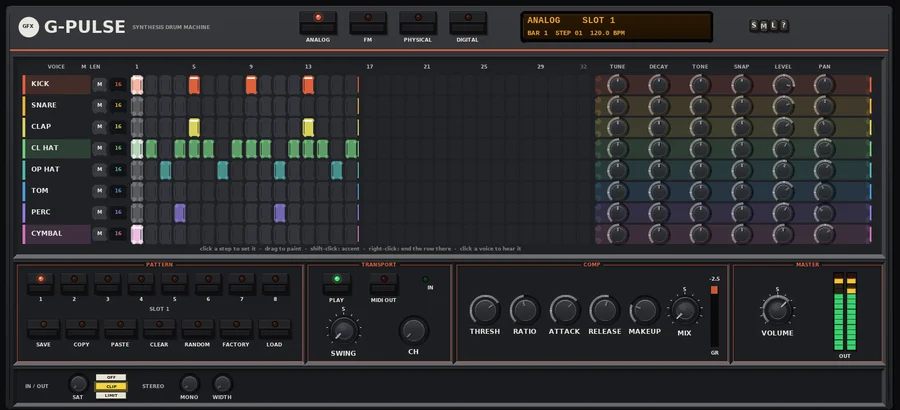
Overview
G Pulse builds every drum sound from scratch - there are no samples. Eight voices (KICK, SNARE, CLAP, CL HAT, OP HAT, TOM, PERC and CYMBAL) are played by a 32-step sequencer that runs with REAPER's transport, or from MIDI drum notes.
One CHARACTER switch changes how the whole kit is made. ANALOG is classic virtual analogue in the spirit of the 80s drum machines: pitch-swept sines, filtered noise and six-square metal for the hats and cymbal. FM uses two-operator FM with its own index envelope. PHYSICAL strikes modelled membranes, plates, wooden bars and hands with a mallet, and the snare has wires that buzz with the head. DIGITAL uses phase distortion, sample-and-hold noise and bit and sample-rate reduction.
Every row of the sequencer can have its own length, so patterns can drift against each other and line up again (polyrhythm). A bus compressor glues the kit, and the pattern can be sent out as MIDI notes to record.
Reach for it for
- Programming drum parts right inside REAPER, without samples
- Classic analogue-style kits, FM clicks and metal, or lo-fi digital grit
- Polyrhythmic patterns with rows of different lengths
- Playing synthesised drums from a MIDI controller or a MIDI item
- Turning a sequenced pattern into MIDI notes you can edit
Getting started
- Insert a new track and add G Pulse to it. It is an instrument: it makes its own sound and needs no audio input.
- Make sure PLAY (in TRANSPORT) is lit, then press play in REAPER. The sequencer follows the project's tempo and position, so it plays in time and restarts where the transport does.
- Click a voice's name to hear it, pick a pattern slot (1 - 8), and edit the steps in the grid.
- To play it from MIDI instead, arm the track with a MIDI input and record monitoring on, or put a MIDI item on the track: G Pulse responds to General MIDI drum notes (see below). Switch PLAY off if you want MIDI only.
Controls
The header
- ANALOG / FM / PHYSICAL / DIGITAL
- The CHARACTER model for the whole kit. Each model has its own recipe for every voice; the levels are balanced so switching keeps the kit roughly even.
- Display
- The model and the pattern slot (with * when it has unsaved edits). While playing it shows the bar, step and tempo; with PLAY on and the transport stopped it reads WAITING FOR TRANSPORT; with PLAY off, SEQUENCER OFF - MIDI ONLY.
- S / M / L
- Panel size: small, medium or large. The panel also scales to fit the plugin window.
- ?
- Opens a pop-up with the design credit, the GFX website address and the address of this manual. Click anywhere to close it.
Sequencer
Eight rows of 32 sixteenth-note steps. A step is a rest, a hit or an accent (louder, marked with a white bar).
- Steps
- Click a step to set or clear it; drag to paint along the row. Shift-click sets an accent.
- Row length
- Right-click a step to end the row there. Every row can have its own length, from 1 to 32 steps; steps past the end are dimmed and a line in the voice's colour marks the end.
- VOICE name
- Click it to hear the voice. The name flashes in the voice's colour each time it plays.
- M
- Mutes the row.
- LEN
- The row's length in steps. Drag up or down on it, or use the mouse wheel.
The closed hat chokes the open hat: a closed hat cuts off a ringing open hat, as on a real kit.
Voice knobs
Each row has six small knobs on a band in the voice's colour.
- TUNE
- Pitch, -24 to +24 semitones.
- DECAY
- Length, 25 - 400% of the voice's natural decay.
- TONE
- Brightness, 0 - 100%. What it changes depends on the model: the filter and noise colour (ANALOG), the FM index (FM), how quickly the upper modes are damped (PHYSICAL), or the phase-distortion warp and the crush rate (DIGITAL).
- SNAP
- The attack, 0 - 100%: the depth of the pitch sweep and the click, and in PHYSICAL how hard the mallet is.
- LEVEL
- The voice's volume, 0 - 100%.
- PAN
- Position, -100 (left) to +100 (right).
PATTERN
- 1 - 8
- The eight pattern slots, saved with the project and in REAPER presets. Pick one to load it. While the sequencer is playing the change waits for the next bar (the slot blinks until then).
- SAVE
- Stores your edits into the current slot; its light shows there are unsaved edits. Right-click SAVE to store them into a different slot.
- COPY / PASTE
- Copies the pattern (steps and row lengths) and pastes it back, for example into another slot before saving.
- CLEAR
- Clears every step (the row lengths stay).
- RANDOM
- A musical random pattern: each voice favours the places it usually plays (kick on the beats, snare and clap on the backbeat, and so on), with some accents.
- FACTORY
- Loads one of the built-in patterns: House, Techno, Breakbeat, Electro, Hip-hop, Trap (32 steps), Polyrhythm or Empty.
- LOAD
- Loads a pattern from a text file in REAPER/Data/gfx-drum-patterns (see below).
The eight slots start out holding the eight factory patterns.
TRANSPORT
- PLAY
- The sequencer on or off. When on, it plays whenever REAPER's transport is playing, locked to the project tempo.
- MIDI OUT
- Sends the sequence out as MIDI notes, so you can record it to a MIDI item on another track.
- IN
- Lights when a MIDI drum note arrives.
- SWING
- Delays the off-beat sixteenths, 0 - 75%.
- CH
- The MIDI channel. OMNI (0): it listens to every channel and sends on channel 10. 1 - 16: it listens and sends on that channel only.
COMP
A stereo-linked bus compressor on the whole kit, with a 6 dB soft knee.
- THRESH
- -40 to 0 dB.
- RATIO
- 1:1 to 20:1.
- ATTACK
- 0.1 - 100 ms.
- RELEASE
- 10 - 1000 ms.
- MAKEUP
- 0 to +24 dB of make-up gain.
- MIX
- Blends the compressed kit with the dry one, 0 - 100%. It starts at 0%, so the compressor is out until you turn MIX up; lower settings give parallel compression.
- GR
- The gain reduction, as a bar and a value.
MASTER
- VOLUME
- Output level, -24 to +12 dB.
- OUT meters
- Output level, left and right, with a floating peak. Click a meter to clear the peak.
Playing it from MIDI
G Pulse plays from General MIDI drum notes, with velocity. Other MIDI passes straight through.
- KICK
- Notes 35, 36
- SNARE
- Notes 38, 40
- CLAP
- Note 39
- CL HAT
- Notes 42, 44
- OP HAT
- Note 46
- TOM
- Notes 41, 43, 45, 47, 48, 50
- PERC
- Notes 37, 56, 75, 76, 77
- CYMBAL
- Notes 49, 51, 52, 55, 57, 59
MIDI OUT sends kick 36, snare 38, clap 39, closed hat 42, open hat 46, tom 45, perc 56 and cymbal 49, at velocity 127 for accents and 100 for hits.
Recording the pattern as MIDI
- Switch MIDI OUT on.
- Right-click the G Pulse track's record-arm button and choose Record: output > Record: output (MIDI).
- Arm the track and record while REAPER plays. The sequence is written to a MIDI item on the track.
- Edit the notes as you like, then switch PLAY off and set the track back to normal recording: G Pulse now plays the MIDI item.
Pattern files
LOAD reads plain text files from the folder REAPER/Data/gfx-drum-patterns (three examples are included). One line per voice: a voice name, then the steps.
- X = accent, x (or o) = hit, . (or - or _) = rest. Spaces and | between steps are ignored.
- Up to 32 steps; the row's length is the number of steps you write, so short rows make polyrhythms.
- Voice names: KICK (or BD), SNARE, CLAP (or CP), CH (closed hat, or HH), OH (open hat), TOM, PERC (or RIM, CB, COWBELL), CYMBAL (or CRASH, RIDE). A line of steps with no name goes to the next row.
- Lines starting with # are comments.
- A loaded file replaces the steps of the current pattern; press SAVE to keep it in a slot. If the file can't be opened, the PATTERN section says so.
Tips
- Try the same pattern through all four CHARACTER models - each one gives a completely different kit.
- Set a hat row to 12 steps and a perc row to 7 against a 16-step kick for patterns that keep evolving.
- Turn the bus COMP's MIX up to 30 - 50% for parallel punch without flattening the accents.
- Use accents (Shift-click) on the hats for a more human groove, then add a little SWING.
File: gfx-g-pulse.jsfx
Bass Head
A big all-valve bass amp and an 8x10 cabinet, with a gate, a tuner and a clean DI blend.
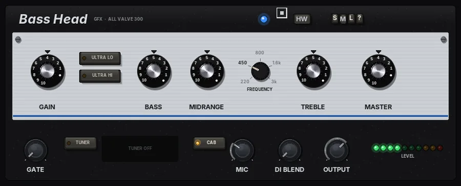
Overview
Bass Head is an all-valve bass amp in the spirit of the classic 300-watt heads, driving a sealed 8x10 cabinet. The preamp valve is clean and round when GAIN is low and starts to growl as you turn it up. The tone stack has bass and treble shelves, a midrange control with five frequencies, and two voicing switches: ULTRA LO for a deep low end with scooped mids, and ULTRA HI for extra top.
MASTER sets how hard the push-pull power stage works. Low settings give clean headroom; higher settings bring in the sag of the power supply, compression and the output transformer's saturation - the big-amp feel when you dig in. After the amp, the cabinet can be switched out for a line-out sound, and a clean DI signal can be blended in underneath, as engineers often do with a real bass rig.
The amp works in mono, as a real amp does: the two inputs are added together, and both outputs carry the amp. It runs at twice the sample rate inside to keep the distortion clean. The valves' bias wanders very slightly over time, so the sound is never quite static.
Reach for it for
- DI'd bass guitar that needs the weight and growl of an amp
- Clean, round valve tone for fingerstyle and pick playing
- Driven, growling rock bass (GAIN and MASTER up)
- Blending amp and DI for definition and low end together
- Synth bass that needs a bit of amp character
Controls
The control panel
BASS, MIDRANGE and TREBLE move in 0.5 dB steps; hold Shift to move them freely. Double-click a knob to reset it.
- GAIN
- The preamp valve, 0 to 10 (4 by default). Low settings are clean and round; as you turn it up the valve starts to growl and distort.
- ULTRA LO
- A deep low-end lift (about +4 dB around 40 Hz) together with a scooped midrange (about -10 dB around 500 Hz). The classic big, hollow modern bass sound.
- ULTRA HI
- A bright top-end lift, about +8 dB from 8 kHz up. Adds click and string noise.
- BASS
- A low shelf at 80 Hz, -12 to +12 dB.
- MIDRANGE
- Boost or cut at the FREQUENCY set beside it, -12 to +12 dB. Boost for a bass that cuts through a busy mix; cut for a smoother, deeper tone.
- FREQUENCY
- Where MIDRANGE works: 220 Hz, 450 Hz, 800 Hz, 1.6 kHz or 3 kHz (450 Hz by default). Click a value to choose it, or click / drag / use the mouse wheel on the knob to step through. In the flat look this knob is called FREQ.
- TREBLE
- A high shelf at 5 kHz, -12 to +12 dB.
- MASTER
- How hard the push-pull power stage is driven, 0 to 10 (4 by default). Low settings stay clean with plenty of headroom; higher settings add the sag of the power supply, compression and the output transformer's saturation.
The lower strip
- GATE
- A noise gate before the amp, from OFF (fully down, -80 dB) up to -20 dB. Raise it until the hum and buzz between notes disappear but the notes still ring out.
- TUNER
- Switches the tuner on. While it is on the output is muted, so you can tune silently. It reads notes from about 35 to 700 Hz. The display shows the note and octave, with a dot that moves left (flat) or right (sharp); the note turns green when you are within 4 cents. It reads PLAY A NOTE until it hears a clear pitch, and TUNER OFF when switched off.
- CAB
- The 8x10 cabinet in or out (in by default). Out gives the amp's line-out sound, for use with a cabinet simulator of your own.
- MIC
- The microphone on the cabinet, 0 to 10 (3 by default): from on axis (brighter, with more of the cone's bite) to off axis (darker and softer). Only heard with CAB in.
- DI BLEND
- Mixes the clean DI signal in under the amp, 0 to 100%. 0% is amp only; 100% is the clean DI only. The DI keeps a solid, clear low end while the amp provides the growl.
- OUTPUT
- The final level, -24 to +12 dB.
- LEVEL
- Ten lights showing the output level, green up to amber and red at the top.
The header
- Pilot lamp
- Shows the amp is on. It takes the theme's accent colour.
- Theme picker
- Changes the colour of the control panel, its pinstripe and the pilot lamp. Graphite (the default) keeps the aluminium panel with a blue stripe and lamp.
- HW
- Switches between the hardware-style head and the flat look.
- S / M / L
- Panel size: small, medium or large. The panel also scales to fit the plugin window.
- ?
- Next to the S / M / L size keys. Opens a pop-up with the design credit, the GFX website address and the address of this manual. Click anywhere to close it.
Tips
- For a classic clean bass, keep GAIN around 3-4 and MASTER low, and shape the tone with BASS and MIDRANGE at 800 Hz.
- For growl that still sits under the mix, push GAIN and MASTER, then bring in 20-40% DI BLEND to keep the low end solid.
- If the bass disappears on small speakers, boost MIDRANGE at 800 Hz or 1.6 kHz rather than adding more BASS.
- Use TUNER before recording: it mutes the output, so you can leave it on while you tune and switch it off to play.
- Set GATE only as high as you need - too high and it will cut off the tail of long notes.
File: gfx-bass-head.jsfx
Desert Ten
A little 10-watt solid-state practice combo with an 8-inch open-back speaker, from clean to raspy fuzz.

Overview
Desert Ten is a small 10-watt solid-state practice amp, in the spirit of the little combo the desert-rock records were made with. It has an op-amp preamp that goes from clean to a raspy rail clip, a SATURATION switch that brings in a diode clipper with a midrange push for the gnarly, fuzzy tone, three tone controls, and a 10-watt power amp that stays clean at first and then clips hard.
After the amp comes the 8-inch open-back speaker, with a thin low end and a midrange honk, and a mic you can move from on axis to off axis. Switch the speaker off for a line-out sound to feed your own cabinet.
Like a real amp it runs in mono: the left and right inputs are summed, and both outputs carry the amp. The amp runs at twice the sample rate to keep the clipping clean. A noise gate sits before the amp and a tuner is built in. With SATURATION on, the clipping diodes' balance wanders very slightly over time, as on real hardware.
Reach for it for
- Raspy, fuzzy guitar and bass tones (SATURATION on)
- Small-amp crunch that sits in a dense mix
- Lo-fi, boxy guitar and keys through a little 8-inch speaker
- Driving a DI'd guitar with the gate and tuner on the same panel
- Line-out amp tones into your own cabinet (CAB off)
Controls
GAIN
- PRE (cream cap)
- The preamp gain, 0 to 10 (5 by default): from about -6 to +30 dB into the op-amp. Low settings are clean; higher settings push the op-amp into its rails for a raspy clip. It also sets how hard the SATURATION diodes are driven.
- SATURATION
- Switches in the diode clipper with its midrange push: the signal is lifted around 900 Hz, trimmed below 220 Hz and above 5 kHz, and clipped by a pair of diodes. This is the gnarly, fuzzy tone. Off by default.
- POST (blue cap)
- The volume into the 10-watt power amp, 0 to 10 (4 by default). Low settings stay clean; turned up, the power amp clips hard, the way small solid-state amps do.
EQUALIZATION
- LOW
- A low shelf at 120 Hz, 0 to 10; 5 is flat, and each step is about 2.6 dB.
- MID
- A broad peak at 700 Hz, 0 to 10. 5 leaves a small built-in mid lift (about 1.5 dB); turn it down to scoop the mids, up to push them.
- HIGH
- A high shelf at 2.8 kHz, 0 to 10; 5 is flat.
The lower strip
- GATE
- A noise gate before the amp, from -80 to -20 dB. Fully down (-80) reads OFF. Raise it until the hiss and hum between notes disappear. It opens fast, holds for 50 ms and closes smoothly.
- TUNER
- Switches the tuner on. While it is on, the output is muted so you can tune in silence. The window shows the note name with its octave and a dot that moves left (flat) or right (sharp); the note turns green when you are within a few cents. It reads PLAY A NOTE when it hears nothing.
- CAB
- The 8-inch open-back speaker, on by default. Off gives the amp's line out, with no speaker colour.
- MIC
- Where the mic sits on the speaker, 0 (on axis) to 10 (off axis); 3 by default. On axis is brighter with more cone bite; moving off axis rounds off the top end and darkens the sound.
- OUTPUT
- The final level, -24 to +12 dB.
- LEVEL
- Ten LEDs showing the output level, up to 0 dBFS.
The header
- Theme picker
- Changes the panel's colours: the control panel, the pinstripe and the pilot lamp follow the theme. Graphite keeps the aluminium panel with an orange stripe and lamp.
- HW
- Switches between the hardware-style faceplate and the flat look.
- S / M / L
- Panel size: small, medium or large. The panel also scales to fit the plugin window.
- ?
- Opens a pop-up with the design credit, the GFX website address and the address of this manual. Click anywhere to close it.
There are no factory presets, and no input or output fold-out on this panel. The output passes through the GFX soft clipper, which catches peaks at -0.3 dBFS.
Tips
- For the classic fuzzy desert tone, switch SATURATION on, set PRE around 6 - 8 and keep POST moderate; then shape it with MID.
- For a cleaner small-amp crunch, leave SATURATION off and turn POST up: the power amp clips harder than the preamp.
- If the sound is too boxy, move MIC towards 0 and bring MID down a little.
- Set the GATE just above the noise floor with SATURATION on - high gain makes hiss between notes much louder.
File: gfx-desert-ten.jsfx
Grunt
A warm drive stage that keeps the low end tight and the mids clear.

Overview
Grunt is a simple drive stage with a warm, sunrise-orange faceplate. Turn up GAIN and the signal is pushed through a soft pre-clip and a cubic waveshaper that adds weight and harmonics, then through a band saturator on the way out.
Two things keep it from turning to mush. The sub band below 140 Hz is split off and, the higher GAIN goes, the more of it skips the drive altogether (up to 85% at full GAIN) - so the bottom stays tight and un-fuzzed. And as GRUNT and SAG pile up harmonics, a dynamic dip at 330 Hz pulls out up to about 6 dB there, so heavy settings don't go boxy.
Reach for it for
- Adding weight and grit to bass, synths and drum loops
- Warming up a bus or a dull source
- Heavier drive that keeps a tight low end
- Quick amp-style crunch on guitars and keys
Controls
The six knobs sit in three printed groups on a recessed strip. Hover over a knob and its label shows the value.
PREAMP
- GAIN
- The drive into the stage, from -24 to +12 dB. It sets the level going in and how hard the waveshaper is pushed. The higher it goes, the more of the sub-140 Hz band bypasses the drive (none at the bottom of the travel, up to 85% at the top), so the low end stays clean under heavy drive.
- BOOST (small knob, gold pointer)
- Extra drive on top of GAIN, 0 - 100%. It also adds an asymmetric bias, so it brings in even harmonics for a warmer, rounder tone.
CHARACTER
- GRUNT
- How much cubic waveshaping character is added, 0 to 1. More GRUNT means thicker, more saturated harmonics. Together with SAG it also deepens the dynamic 330 Hz dip.
- SAG
- The bias of the output saturation, 0 to 1: more SAG gives more even harmonics and a rounder, warmer colour. It also adds to the 330 Hz dip.
OUTPUT
- SQUASH
- The amount of band saturation in the output stage, 0 to 1. Only the lows (below about 90 Hz) and the highs (above about 7.5 kHz) are saturated; the mids pass clean.
- MASTER
- Output level, -24 to +12 dB.
- Meter
- At the right of the strip. Output level, left and right side by side, rising from the bottom, with a floating peak. Click it to clear the peak.
The header
- PRESETS, arrows and display
- PRESETS (or a click on the display) opens the list of factory presets; the ◄ / ► keys step through them. The display shows the preset number and name.
- S / M / L
- Panel size: small, medium or large. The panel also scales to fit the plugin window.
- ?
- Opens a pop-up with the design credit, the GFX website address and the address of this manual. Click anywhere to close it.
The input guard is always on in Grunt: very hot sources are eased down before the drive, so a loud track won't overload it. There is no output-stage switch on the panel; the presets set it to a soft clipper or a lookahead limiter.
Presets
- Default
- The starting point: GAIN at 0 dB, no BOOST, medium GRUNT and SQUASH, soft clipper on the output.
- Warm Console
- +6 dB GAIN, full BOOST, light GRUNT with more SAG and SQUASH for a warm, rounded colour; lookahead limiter on the output.
- American Crunch
- +9 dB GAIN, full BOOST and heavy GRUNT for a bright, biting crunch; little SAG, soft clipper.
- British Punch
- +4 dB GAIN, no BOOST, medium GRUNT with more SAG and SQUASH for a punchy, thick tone; lookahead limiter.
Tips
- Because the sub band skips the drive more as GAIN rises, you can push bass and kick hard without the bottom turning fuzzy.
- Reach for BOOST rather than more GAIN when you want warmth as well as drive - its bias adds even harmonics.
- If heavy settings sound too thin in the low mids, back GRUNT and SAG off a little: they control how far the 330 Hz dip cuts.
- Use MASTER to match the level with the plugin bypassed, so you judge the tone and not the loudness.
File: gfx-grunt.jsfx
Guitar Head
An all-valve guitar amp with spring reverb and a 2x12 or 4x12 cabinet.

Overview
Guitar Head is an all-valve guitar amplifier in the spirit of the classic 50-watt heads. The preamp has a clean channel with one valve, from sparkly to edge-of-breakup, and a DRIVE channel that cascades a second valve for more gain. Then come a tone stack, a spring reverb tank, and a push-pull power stage that sags and crunches as you drive it.
A cabinet stage follows, with a 2x12 open-back or 4x12 closed-back cabinet and a microphone that you can move from on axis to off axis. Turn the cabinet off to use the amp as a line-out head into your own cabinet plugin or impulse response.
The amp runs in mono, as a real amp does, at twice the sample rate for cleaner distortion; both outputs carry the same signal. A built-in noise gate and tuner complete the head.
Reach for it for
- Clean and edge-of-breakup guitar tones
- Classic rock crunch and lead tones (DRIVE, MASTER)
- Re-amping DI guitar recordings
- Spring reverb on guitars
- A head into your own cabinet plugin (CAB OFF)
Controls
The amp
- GAIN
- The preamp gain, 0 to 10 (5 by default). On the clean channel it goes from sparkly to edge-of-breakup; with DRIVE on it goes much further.
- BRIGHT
- A treble lift in front of the gain. It is strongest at low GAIN settings and fades as you turn GAIN up, like the bright switch on a real amp.
- DRIVE
- Off: the clean channel (one valve). On: a second cascaded valve for more gain and sustain, with a tighter low end.
- BASS / MIDDLE / TREBLE
- The tone stack, 0 to 10 each; 5 is flat.
- PRESENCE
- The top end after the power stage, 0 to 10 (5 by default).
- REVERB
- The level of the spring reverb, 0 to 10 (2 by default). The spring tank sits between the preamp and the power stage.
- MASTER
- How hard the power stage is driven, 0 to 10 (4 by default): first headroom, then sag and crunch as you turn it up.
The lower strip
- GATE
- A noise gate in front of the amp, from OFF (fully down) to -20 dB. Raise it until the hiss and hum between notes disappear.
- TUNER
- Switches the tuner on. While it is on, the output is muted and the display shows the note and how far off it is; the note turns green when you are in tune. With no note it reads PLAY A NOTE.
- CAB
- The cabinet: OFF (line out, no cabinet), 2x12 OPEN (open back, the default) or 4x12 (closed back, more low end).
- MIC
- The microphone position, 0 (on axis, brighter) to 10 (off axis, darker and smoother); 3 by default.
- OUTPUT
- Output level, -24 to +12 dB.
- LEVEL
- A row of ten LEDs showing the output peak level, from -30 dB up to just under 0 dBFS.
The header
- Pilot lamp
- Shows the amp is on; it takes the theme's accent colour.
- Theme picker
- Changes the colour of the control panel, pinstripe and lamp.
- HW
- Switches between the hardware faceplate and the flat look.
- S / M / L
- Panel size: small, medium or large.
- ?
- Opens a pop-up with the design credit, the GFX website address and the address of this manual. Click anywhere to close it.
Tips
- For edge-of-breakup, keep DRIVE off, set GAIN around 6 - 8 and let MASTER add the crunch as you dig in.
- BRIGHT is most useful at low GAIN settings, where it adds sparkle to clean tones; at high gain it does little.
- Set CAB to OFF when you want to use your own cabinet plugin or impulse response after the head.
- Move MIC towards 10 to smooth out a harsh, fizzy top end before reaching for TREBLE.
- Use TUNER between takes; remember it mutes the output while it is on.
File: gfx-guitar-head.jsfx
Head
A one-knob tape saturator with three voices.
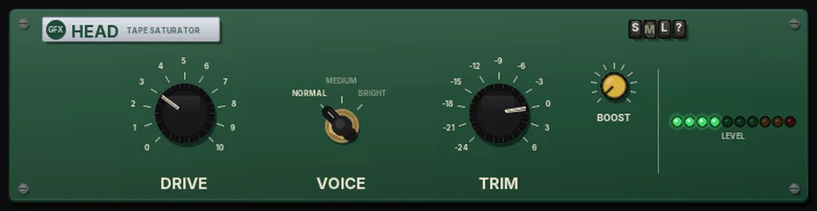
Overview
Head is a tape-style saturator in the spirit of the classic one-knob tape plug-ins. Turn up DRIVE and the signal hits the tape curve harder; the level is matched automatically, so DRIVE changes the character, not the loudness.
The tape behaviour is built in: the treble is boosted before the curve and cut again after it, a small fixed bias gives mostly odd harmonics with a little even-order warmth, there is a low-end head bump around 70 Hz that eases off as you drive harder, and a gentle top-end loss. The curve runs at twice the sample rate to keep it clean.
As DRIVE goes up, more of the low end (below about 250 Hz) skips the curve and rejoins clean afterwards. The bass then stops pushing the mids and highs in and out of saturation, so even heavy settings stay smooth and uncluttered. Like a real machine, the bias and the top-end loss wander slowly and independently on each side.
Reach for it for
- Warming and thickening a vocal, bass or synth
- Gluing a drum bus with tape colour
- Taking the digital edge off bright sources
- Heavier tape grit that keeps the low end tidy
Controls
The tape unit
- DRIVE
- How hard the signal hits the tape curve, from 0 to 10 (3 by default) - up to +22 dB into the curve. The output level is matched, so you hear more saturation, not more volume. Higher settings also let more of the low end bypass the curve and soften the head bump.
- VOICE
- Three voicings, picked on the rotary switch (click a name, click the knob to step, or use the mouse wheel). NORMAL: flat, with tape's gentle top-end loss. MEDIUM: a broad lift around 1.4 kHz going into the curve, for body in the mids. BRIGHT: a high shelf going into the curve, so the top end saturates first and stays airier.
- TRIM
- The clean output level, from -24 to +6 dB, applied after everything else.
- BOOST
- Adds colour on top of DRIVE, from 0 to 100%. It makes the tape curve more lopsided (more even harmonics, a warmer tone) and brings in band saturation on the way out: only the lows and highs are saturated, the mids stay clean.
- LEVEL
- Ten lights showing the output peak level, from -30 dBFS up to 0: green, then amber, then red at the top.
Double-click DRIVE or TRIM to return it to its default; hold Shift while dragging for fine moves. The output passes through a soft clipper set at -0.3 dBFS before TRIM, so sudden peaks are caught.
The header
- S / M / L
- Panel size: small, medium or large. The panel also scales to fit the plugin window.
- ?
- Opens a pop-up with the design credit, the GFX website address and the address of this manual. Click anywhere to close it.
Tips
- Set DRIVE by ear and leave the level to Head: because it is level-matched, you can compare settings fairly without chasing the volume.
- On bass and kick, high DRIVE stays tight because the deep lows skip the curve - you get the growl in the mids without the low end flapping.
- Try MEDIUM on vocals and guitars for presence, and BRIGHT on dull drum overheads or pads.
- Use BOOST sparingly on a mix bus: a little adds warmth at both ends of the spectrum while the mids stay clear.
File: gfx-head.jsfx
Model 15
A lo-fi channel strip in the spirit of the early-80s portable cassette multitrackers.

Overview
Model 15 is a single channel of the classic early-80s ultra-portable cassette multitracker: a low-voltage, battery-driven preamp, a fixed broad-stroke tone stage, a sluggish tape-head saturation with a top end that closes down as the level rises, and an open, breathing hiss floor with simple single-band noise reduction.
Put it on individual stems to push them towards that compressed, boxy, warm little-recorder sound. The signal runs preamp, then tone, then tape, and MIX blends the result with the dry input.
Reach for it for
- Bedroom-demo character on drums, guitars and vocals
- Warm, boxy saturation that glues transients together
- Lo-fi wobble, hiss and worn-tape dropouts
- Making a clean stem sit with genuinely lo-fi material
- Parallel tape colour with MIX
Controls
Channel
- Signal light
- Glows green when audio is coming out of the plugin.
- GAIN
- The low-voltage preamp, -6 to +24 dB (+6 dB by default). Above 0 dB it clips early and asymmetrically, smearing transients and thickening the low mids.
- TREBLE
- A broad high shelf at 10 kHz, -10 to +10 dB. Push it hard and the shelf itself turns a little gritty and grainy rather than staying clean.
- BASS
- A broad low shelf at 100 Hz, -10 to +10 dB, with the same gentle grit when pushed.
- TRIM
- Input level before anything else, from -24 to +12 dB.
- GUARD
- On by default. Gently eases very hot sources down towards about -18 dBFS average and catches fast peaks above -6 dBFS, so loud sources never overdrive the plugin. It never boosts quiet sources.
- MIX
- The coloured signal against the dry input, 0 - 100%.
Meters
- L / R
- VU meters showing the left and right output.
Tape
- DRIVE
- The tape saturation, 0 - 100% (35% by default): a sluggish magnetic memory ahead of a soft saturation curve, plus a top end that rolls off further as the level rises, gluing transients together. A small, fixed head bump around 80 Hz is always there.
- WOW
- Wow and flutter in the transport, 0 - 100 (25 by default): a slow wow, a slower random wander and a faint 6 Hz flutter.
- HISS
- The tape's own noise floor, 0 - 100 (50 by default). It ducks a little under the signal and swells back in the gaps. Each side has its own hiss.
- AGE
- An older, worn tape, 0 - 100 (15 by default): the top end goes further and short dropouts creep in, more often the higher you turn it.
- OUTPUT
- The output level, -24 to +12 dB.
- NR
- The simple B-type-style noise reduction, in by default: the quiet highs are lifted before the tape and taken back down after it, which lowers the hiss. Out gives the raw tape, hiss and all.
The header
- < and >
- Step to the previous or next preset.
- PRESETS
- Opens the list of factory presets. A preset sets GAIN, TREBLE, BASS, the TAPE controls, NR and MIX; OUTPUT, TRIM and GUARD are left as they are. The last entry resets everything to the defaults.
- PATCH display
- Shows the name of the preset in use.
- S / M / L
- Panel size: small, medium or large. The panel also scales to fit the plugin window.
- ?
- Opens a pop-up with the design credit, the GFX website address and the address of this manual. Click anywhere to close it.
Output stage (REAPER's parameter list only)
Model 15 has the GFX output stage, but no knobs for it on the panel. Its settings are in REAPER's parameter list, and Reset all to defaults puts them back.
- Band sat / Bias
- Band saturation on the way out: only the lows and highs are saturated (the mids stay clean). Bias adds more even (2nd) harmonics. Off by default.
- Sat low band / Sat high band
- Where the low and high saturation bands start (40 - 400 Hz and 2 - 16 kHz).
- Ceiling / limit threshold
- With Clip: the level the peaks are softly clipped at. With Limit: the threshold of a brickwall limiter that holds the peaks at -0.3 dBFS.
- Output stage
- Off, Clip (a soft clipper, no latency; the default) or Limit (a lookahead limiter, 3 ms latency, compensated by REAPER).
Presets
- Bedroom Demo
- The standard setting with a touch more TREBLE, BASS and DRIVE, NR in.
- Hot and Boxy
- The preamp pushed to +15 dB into 70% tape drive, with more hiss and age.
- No NR, Open Tape
- Noise reduction out and the hiss turned well up.
- Worn-out Portable
- Heavy wow, lots of age and dropouts, a little extra bass.
- Clean-ish Portable
- Preamp at 0 dB, light drive, wow, hiss and age.
- Reset all to defaults
- Every control back to its starting value, including OUTPUT, TRIM, GUARD and the output stage.
Tips
- GAIN and DRIVE do different things: GAIN gives the preamp's early, edgy clipping, DRIVE the softer tape squash and darkening. Try one high and the other low.
- On a set of stems, keep WOW low on all but one or two so the mix doesn't drift out of tune with itself.
- Switching NR out is the quickest way to that hissy, open home-recording sound.
- Turn MIX down to 40 - 60% to keep the attack of drums while adding the tape's body.
File: gfx-model-15.jsfx
Model 44
A rack channel strip in the spirit of the early-90s cassette multitrackers: clean preamp, semi-parametric EQ and tape.

Overview
Model 44 is a single channel strip in the spirit of the early-90s rack-mount cassette multitrack gear. The signal goes through a clean, high-headroom preamp, a three-band EQ with a sweepable mid, and then a tape stage: a dense magnetic saturation ceiling with a NORMAL / DOUBLE speed switch and compander noise reduction.
The preamp itself stays clean - the colour and the ceiling come from the tape. Double speed raises that ceiling, extends the top end and tightens the sub-bass, for a punchier, cleaner sound; normal speed is softer, darker and saturates earlier. The noise reduction is tuned to pump less than the earlier 80s machines.
Reach for it for
- Adding cassette-tape density and warmth to a single track
- Drums and bass that need to sit tighter and punchier (DOUBLE speed)
- Quick tone shaping with a sweepable mid
- A softer, darker lo-fi tone (NORMAL speed)
- Parallel tape colour with MIX
Controls
CHANNEL
- Signal light
- The green light glows when audio is coming out.
- GAIN
- The preamp gain, -6 to +24 dB (+6 dB by default). The preamp itself stays clean; turning it up drives the tape stage harder.
- MID FREQ
- The centre of the sweepable mid band, 200 Hz to 5 kHz.
- MID GAIN
- Cut or boost at MID FREQ, -12 to +12 dB, with a fixed, fairly broad width.
- TREBLE
- A high shelf at 12 kHz, -10 to +10 dB.
- BASS
- A low shelf at 80 Hz, -10 to +10 dB.
- TRIM
- Input level before anything else, from -24 to +12 dB.
- GUARD
- On by default. GUARD gently eases very hot sources down towards about -18 dBFS average and catches fast peaks above -6 dBFS, so loud sources never overdrive the plugin. It never boosts quiet sources. The light shows when it is on.
- MIX
- Blends the coloured signal with the dry input, 0 to 100%. 100% is fully through the strip.
Meters
- L / R
- VU meters showing the left and right output.
TAPE
- DRIVE
- How hard the tape's saturation ceiling works, 0 to 100% (35% by default). More DRIVE rounds the peaks off sooner and harder, for a denser sound.
- NORMAL / DOUBLE
- The tape SPEED. NORMAL (1 7/8 IPS): the top end rolls off around 10 kHz and the saturation starts earlier. DOUBLE (3 3/4 IPS): the ceiling sits higher, the top end reaches about 16 kHz, the sub-bass below about 45 Hz is tightened and transients stay punchier.
- NR
- Compander noise reduction, in by default. It compresses the signal 2:1 with a treble lift on the way onto the tape and expands it 1:2 coming back. Because the expander follows what comes off the tape, it breathes a little, though more gently than the 80s units. Switch it off for the raw tape sound.
- OUTPUT
- The output level, -24 to +12 dB.
The header
- < / >
- Step through the presets.
- PRESETS
- Opens the list of factory presets. Choosing one sets the CHANNEL EQ, GAIN, the TAPE section and MIX; OUTPUT, TRIM and GUARD are left as they are. The last entry resets everything to the defaults.
- PATCH
- Shows the name of the preset last chosen.
- S / M / L
- Panel size: small, medium or large. The panel also scales to fit the plugin window.
- ?
- Opens a pop-up with the design credit, the GFX website address and the address of this manual. Click anywhere to close it.
Output stage
These settings have no knobs on the panel; reach them through REAPER's parameter list for the plugin (or automation lanes).
- Band sat
- Band saturation on the way out: only the lows and highs are saturated (the mids stay clean), with a soft curve that loosens as the level rises.
- Bias
- Shapes the saturation: more bias adds more even (2nd) harmonics, for a warmer, rounder colour.
- Sat low band / Sat high band
- Where the low and high saturation bands start (40 - 400 Hz and 2 - 16 kHz).
- Ceiling / limit threshold
- With Clip: the level the peaks are softly clipped at. With Limit: the threshold of a brickwall limiter that holds the peaks at -0.3 dBFS - pulling it down limits harder and makes the output louder.
- Output stage
- Off, Clip or Limit: nothing, a soft clipper (no latency, the default), or a lookahead limiter (3 ms latency, compensated by REAPER).
Presets
- Clean Double Speed
- Double speed with light drive, a small treble lift and NR in.
- Normal Speed Warm
- Normal speed, more gain, a little low-mid and bass lift, NR in.
- Rack Punch
- Double speed, 14 dB of gain and 55% drive, with a 2.5 kHz and treble lift.
- Scooped Mids
- Double speed with a 4 dB cut at 600 Hz and a touch of treble and bass.
- No NR
- Normal speed with the noise reduction out: the raw tape.
- Reset all to defaults
- Every control back to its starting value, including OUTPUT, TRIM, GUARD and the output stage.
Tips
- Set GAIN for the amount of tape colour you want, then bring OUTPUT down to match the level before you judge it.
- Switch between NORMAL and DOUBLE on drums: double speed keeps the snap, normal speed softens and thickens it.
- With NR in and plenty of DRIVE you can hear the compander breathe; switch NR out if you want the saturation without the movement.
- Use MIX at 30-60% to add tape density under a track without losing its transients.
File: gfx-model-44.jsfx
PenguinDrive
An envelope filter, phaser, drive and squash compressor in one box, after a 70s art-rock live guitar rig.
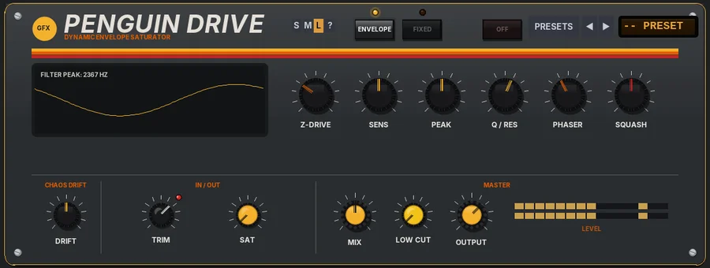
Overview
PenguinDrive chains four effects that a 70s art-rock guitarist might have run on stage: a resonant envelope filter, a four-stage phaser, a valve-style drive and a compressor at the end that squashes it all together.
In ENVELOPE mode the filter follows how hard you play: every pick attack opens it upwards from the PEAK setting and it falls back as the note dies, for the vocal, quacking funk sound. In FIXED mode the filter stays put at PEAK, like a wah pedal left half-way down. The filter is a band-pass, so the effect side is focused and nasal; MIX blends it with your dry signal.
A DRIFT dial adds a slow random wander to the filter frequency and the drive, so the sound breathes a little like real analogue gear.
Reach for it for
- Funky, quacking guitar and clav lines
- Vocal, wah-like lead tones
- Driven, phased guitar for 70s rock
- Synth bass and keys that need movement and bite
- Cocked-wah tones with FIXED mode
Controls
Mode (header)
- ENVELOPE
- The filter follows your playing: the harder the note, the further it opens above PEAK. The yellow light above the key shows it is on.
- FIXED
- The filter sits still at PEAK - a cocked-wah tone. SENS has no effect. The orange light above the key shows it is on.
- OFF
- Bypasses the filter, phaser, drive and squash. The signal still passes through the input and output stages.
Display
The window on the left shows the current filter frequency (FILTER PEAK) in Hz, with a moving trace that follows it.
Main controls
The signal runs through the controls in this order: filter, phaser, drive, squash.
- Z-DRIVE
- How hard the filtered signal drives the saturation stage, from 0 to 10. 0 is almost clean; 10 adds up to 25 dB of gain into the soft clipper for a thick, compressed drive.
- SENS
- Envelope sensitivity, 0 to 100%: how far your playing pushes the filter up from PEAK. Low settings give a subtle movement; high settings sweep it right up for each note. ENVELOPE mode only.
- PEAK
- The filter's resting frequency, 200 Hz to 5 kHz. In ENVELOPE mode this is where the sweep starts; in FIXED mode it is where the filter stays.
- Q / RES
- The filter's resonance, 10 to 95%. Higher settings narrow the band and make it ring, for a more vocal, quacking sound.
- PHASER
- How much of the four-stage phaser is blended in after the filter, 0 to 100%. At 0 the phaser is off. It sweeps slowly between about 500 Hz and 2 kHz.
- SQUASH
- The compressor at the end of the chain, 0 to 100%. Higher settings lower its threshold for a flatter, more sustained sound; it grabs quickly and lets go slowly. At 0 it is off.
Chaos drift
- DRIFT
- 0 to 100%. 50% is the standard amount; 100% is twice that, 0 turns it off. It makes the filter frequency wander slowly and the drive amount breathe a little. Higher settings also make the wander move faster.
IN / OUT
- TRIM
- Input level before anything else, from -24 to +12 dB.
- GUARD
- Click the TRIM knob (without turning it) to switch GUARD on or off; the small light at the knob's upper right shows it is on and glows brighter while it works. On by default. Gently eases very hot sources down towards about -18 dBFS average and catches fast peaks above -6 dBFS, so loud sources never overdrive the plugin. It never boosts quiet sources.
- SAT
- Band saturation on the way out: only the lows and highs are saturated (the mids stay clean), with a soft curve that loosens as the level rises.
- OFF / CLIP / LIMIT
- The final stage: nothing, a soft clipper that holds the peaks just under 0 dBFS (no latency), or a lookahead limiter (3 ms latency, compensated by REAPER). The CLIP key flashes red while the clipper is working.
Master
- MIX
- Dry / effect balance, 0 to 100% (50% by default). Lower settings keep more of your clean attack under the filtered, driven sound.
- LOW CUT
- A high-pass filter on the effected signal only, from off (fully left) up to 500 Hz. The dry low end stays as it is.
- OUTPUT
- Output level, -24 to +12 dB.
- LEVEL
- Output meters, left and right.
The header
- PRESETS, ◄ ► and the display
- PRESETS (or a click on the display) opens the list of factory presets; ◄ and ► step through them. A preset sets the mode and the main controls (including the phaser speed) and MIX; drift, the input and output stages, LOW CUT and OUTPUT are left as they are.
- S / M / L
- Panel size: small, medium or large. The panel also scales to fit the plugin window.
- ?
- Opens a pop-up with the design credit, the GFX website address and the address of this manual. Click anywhere to close it.
Presets
- Art-Rock Lead ('73)
- Envelope filter with strong resonance, a fair amount of drive, phaser and squash, mostly wet (85% mix).
- Funk Envelope
- High sensitivity from a low 800 Hz peak with lots of resonance and heavy squash: the classic quack.
- Cocked Wah Drive
- FIXED filter at 1.4 kHz, heavy drive and a faster phaser, fully wet.
- Mild Auto-Sweep
- Gentle envelope sweep from 2 kHz with light drive and no phaser, half wet.
Tips
- Set PEAK first with SENS at 0 to find the tone the filter rests on, then bring SENS up until the sweep follows your playing the way you want.
- The envelope responds to level, so a compressor or a louder TRIM before the filter makes the sweep more even; play dynamically for a more expressive one.
- The phaser's speed has no knob on the panel: the presets set it (0.1 to 0.5 Hz), and it can be changed in REAPER's parameter list as Phaser Speed (0.05 to 5 Hz).
- For a cleaner funk sound, keep Z-DRIVE low and use SQUASH for sustain instead.
File: gfx-penguindrive.jsfx
Preamp
A colour preamp with four voicings, a three-band EQ boost and a VU meter.
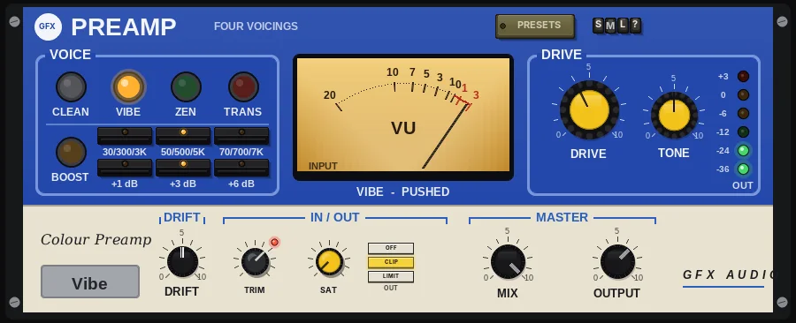
Overview
Preamp is a stage you put in front of anything that needs warmth, weight or a bit of dirt. Choose one of four voicings, set how hard to drive it, and shape the top end with TONE.
CLEAN adds no drive at all - use it with the EQ BOOST as a clean boost. VIBE recreates the preamp of a classic 60s pedal: extra low-mid weight, a soft, lopsided saturation and a rounded top that gets darker as you drive it. ZEN is a smooth, symmetrical, amp-like breakup. TRANS is a single-transistor drive: lopsided, it bites earlier and turns furry when pushed.
In every voicing except CLEAN a gentle, program-dependent compression (sag) sits in front of the drive, and it grows as you turn DRIVE up, like a real preamp running out of headroom. The EQ BOOST in front adds three gentle peaks a decade apart to push the source into the drive.
Reach for it for
- Warming up DI guitar, bass and keys
- Driving synths and drum loops into gentle grit
- A clean, broad EQ lift on a bus (CLEAN with BOOST)
- Fuzzy, transistor-style edge on a lead
- A little analogue movement with DRIFT
Controls
VOICE
- CLEAN
- No drive and no sag. TONE does nothing here; use it with BOOST as a clean EQ preamp.
- VIBE
- The 60s pedal preamp: a low-end lift (below about 250 Hz, growing with DRIVE), soft, uneven (even-harmonic) saturation and a top end that rolls off from about 18 kHz down to 7 kHz as DRIVE rises. TONE does nothing in this voicing - the drive sets the top end.
- ZEN
- Gentle, symmetrical saturation with a smooth, amp-like breakup.
- TRANS
- Single-transistor drive: lopsided, it starts biting earlier and gets furry when pushed.
- BOOST
- Switches the EQ boost in or out. It sits in front of the drive, so a boost also drives the voicing harder.
- 30/300/3K, 50/500/5K, 70/700/7K
- The three frequencies the boost lifts at once, each a decade apart: low, mid and high together.
- +1 dB, +3 dB, +6 dB
- How much each of the three bands is lifted.
VU meter
Shows the input level after TRIM and GUARD, with 0 VU at -18 dBFS. Under it, the panel names the voicing and how hard it is working: WARM, PUSHED or SATURATED, by the DRIVE setting (CLEAN reads NO DRIVE).
DRIVE
- DRIVE
- How hard the voicing is driven, 0 to 100% (40% by default). It also deepens the sag compression in front of it.
- TONE
- A top-end roll-off for ZEN and TRANS, sweeping its corner from about 1.2 kHz (dark) to 14 kHz (open), 0 to 100%.
- OUT lights
- Six lights showing the output peak level: -36, -24, -12, -6, 0 and +3 dB.
Drift
- DRIFT
- 0 to 100%. 50% is the standard amount; 100% is twice that, 0 turns it off. It makes the saturation's lopsidedness (bias) wander slowly and the sag compression breathe in and out. Higher settings also make the wander move faster.
IN / OUT
- TRIM
- Input level before anything else, from -24 to +12 dB.
- GUARD
- Click the TRIM knob (without turning it) to switch GUARD on or off; the small light at the knob's upper right shows it is on and glows brighter while it works. On by default. Gently eases very hot sources down towards about -18 dBFS average and catches fast peaks above -6 dBFS, so loud sources never overdrive the plugin. It never boosts quiet sources.
- SAT
- Band saturation on the way out: only the lows and highs are saturated (the mids stay clean), with a soft curve that loosens as the level rises.
- OFF / CLIP / LIMIT
- The final stage: nothing, a soft clipper that holds the peaks just under 0 dBFS (no latency), or a lookahead limiter (3 ms latency, compensated by REAPER). The CLIP key flashes red while the clipper is working.
MASTER
- MIX
- Dry / preamp balance, 0 to 100% (100% by default). Lower settings blend the clean signal back in for parallel drive.
- OUTPUT
- Output level, -24 to +12 dB.
The header
- PRESETS, ◄ ► and the display
- PRESETS (or a click on the display) opens the list of factory presets; ◄ and ► step through them. A preset sets the voicing, DRIVE, TONE, the EQ boost, the drift amounts and MIX; the drift speed, OUTPUT and the input and output stages are left as they are. The last entry resets everything to the defaults.
- S / M / L
- Panel size: small, medium or large. The panel also scales to fit the plugin window.
- ?
- Opens a pop-up with the design credit, the GFX website address and the address of this manual. Click anywhere to close it.
Presets
- Vibe Warm
- VIBE at 35% drive: gentle warmth and weight.
- Vibe Driven
- VIBE at 85% drive with a little more drift: thick and saturated.
- Zen Edge
- ZEN at 35% drive: just on the edge of breakup.
- Zen Crunch
- ZEN at 70% drive with a slightly brighter TONE.
- Transistor Grit
- TRANS at 50% drive with TONE a little dark.
- Transistor Fuzz
- TRANS at 95% drive with a darker TONE: full fuzz.
- Console Lift
- CLEAN with BOOST on at 70/700/7K, +3 dB: a clean, broad lift.
- Mid Push into Zen
- ZEN at 55% drive with the 50/500/5K boost pushing into it.
- Breathing Valve
- VIBE at 55% drive with heavy bias and sag drift, so the colour moves.
- Reset all to defaults
- Every control back to its starting value, including the input and output stages.
Tips
- Use the VU: aim for the needle around 0 with TRIM before you set DRIVE, so the voicings react as designed.
- BOOST adds level as well as colour, so it drives the voicing harder too; pull DRIVE back a little when you switch it on.
- For parallel drive on drums or bass, turn DRIVE up and MIX down to 30 - 50%.
- TONE only works in ZEN and TRANS; in VIBE the drive itself darkens the top.
File: gfx-preamp.jsfx
Preamp Q
The four-voicing colour preamp with a four-band console channel EQ on its cream strip.

Overview
Preamp Q is the Preamp with a full channel EQ added. The blue top half is the preamp: four voicings from clean to fuzz, an EQ boost in front of the drive, gentle program-dependent compression (sag) and a VU meter. The cream strip underneath is a four-band console channel EQ with high- and low-pass filters, shelf-or-bell ends, two swept mids with Q, a BROWN or BLACK voicing and a line amp.
The ORDER key decides which comes first: the EQ after the preamp, to shape the driven sound, or in front of it, so the EQ changes what gets driven. The panel shows the unit the signal meets first on top.
Reach for it for
- Warmth, crunch or fuzz with a proper EQ to shape it
- Shaping a source before it hits the drive (EQ > PREAMP)
- A complete channel strip: drive, EQ and output limiting in one
- Bass, guitars, keys and drums that need colour as well as tone
Controls
VOICE
- CLEAN
- No drive and no sag. TONE does nothing here; use it with BOOST as a clean EQ preamp.
- VIBE
- The 60s pedal preamp: a low-mid lift, soft, uneven (even-harmonic) saturation and a top end that rolls off from about 18 kHz down to 7 kHz as DRIVE rises. TONE does nothing in this voicing - the drive sets the top end.
- ZEN
- Gentle, symmetrical saturation with a smooth, amp-like breakup.
- TRANS
- Single-transistor drive: lopsided, it starts biting earlier and gets furry when pushed.
- BOOST
- Switches the EQ boost in or out. It sits in front of the drive, so a boost also drives the voicing harder.
- 30/300/3K, 50/500/5K, 70/700/7K
- The three frequencies the boost lifts at once, each a decade apart: low, mid and high together.
- +1 dB, +3 dB, +6 dB
- How much each of the three bands is lifted.
VU meter
Shows the level going into the preamp, with 0 VU at -18 dBFS. Under it, the panel names the voicing and how hard it is working: WARM, PUSHED or SATURATED, by the DRIVE setting (CLEAN reads NO DRIVE).
DRIVE
- DRIVE
- How hard the voicing is driven, 0 to 100% (40% by default). It also deepens the sag compression in front of it.
- TONE
- A top-end roll-off for ZEN and TRANS, sweeping its corner from about 1.2 kHz (dark) to 14 kHz (open), 0 to 100%.
- OUT lights
- Six lights showing the output peak level: -36, -24, -12, -6, 0 and +3 dB.
Channel EQ
- IN
- Switches the four EQ bands in or out (in by default). The HPF and LPF stay in.
- BROWN / BLACK
- The EQ voicing; the key shows the one in use (BLACK by default). BROWN: broad bells and soft shelves. BLACK: bells that tighten as you boost or cut (proportional Q), and shelves with a small opposite dip just inside the corner.
- LINE DRIVE
- Pushes the EQ's line amp into gentle saturation, 0 to 100%. It is level matched, so it adds colour rather than volume.
- OUT
- The EQ's output level, -12 to +12 dB.
FILTERS
- HPF
- A high-pass filter, 18 dB per octave, from OFF (fully left) up to 400 Hz. Removes rumble and low-end mud.
- LPF
- A low-pass filter, 12 dB per octave, from 3 kHz up to OFF (fully right). Tames hiss and harsh top.
LF
- GAIN
- -15 to +15 dB.
- FREQ
- 30 to 450 Hz (100 Hz by default).
- BELL
- Off (default): a low shelf. On: a bell centred on FREQ.
LMF
- GAIN
- -15 to +15 dB.
- FREQ
- 200 Hz to 2.5 kHz (600 Hz by default).
- Q
- The bandwidth, 0.4 to 3 (1 by default). Higher is narrower. In BLACK the bell also narrows as you boost or cut more.
HMF
- GAIN
- -15 to +15 dB.
- FREQ
- 600 Hz to 7 kHz (2.5 kHz by default).
- Q
- The bandwidth, 0.4 to 3 (1 by default).
HF
- GAIN
- -15 to +15 dB.
- FREQ
- 1.5 to 16 kHz (8 kHz by default).
- BELL
- Off (default): a high shelf. On: a bell centred on FREQ.
Drift
- DRIFT
- 0 to 100%. 50% is the standard amount; 100% is twice that, 0 turns it off. It makes the saturation's lopsidedness (bias) wander slowly and the sag compression breathe in and out. Higher settings also make the wander move faster.
IN / OUT
- TRIM
- Input level before anything else, from -24 to +12 dB. A single click on the knob (without dragging) switches GUARD on or off; its LED at the knob's upper right is dark when GUARD is off, red when it is on, and glows brighter while it is catching peaks.
- GUARD
- On by default. Gently eases very hot sources down towards about -18 dBFS average and catches fast peaks above -6 dBFS, so loud sources never overdrive the plugin. It never boosts quiet sources.
- SAT
- Band saturation on the way out, 0 - 100%: only the lows and highs are saturated (the mids stay clean), with a soft curve that loosens as the level rises.
- OFF / CLIP / LIMIT
- The final stage: nothing, a soft clipper (no latency), or a lookahead limiter that holds the peaks at -0.3 dBFS (3 ms latency, compensated by REAPER). The CLIP key flashes red while the clipper is working.
MASTER
- MIX
- Dry / preamp balance, 0 to 100% (100% by default). Lower settings blend the clean signal back in for parallel drive. The EQ is not part of the blend: it is applied to the whole signal, before or after.
- OUTPUT
- Output level, -24 to +12 dB.
The header
- ORDER (PREAMP > EQ / EQ > PREAMP)
- Each press swaps the order of the two units; the key shows the current order and the unit the signal meets first is drawn on top. PREAMP > EQ shapes the driven sound; EQ > PREAMP changes what goes into the drive, so EQ boosts also push the voicing harder.
- PRESETS, arrows and display
- PRESETS (or a click on the display) opens the list of factory presets; the ◄ / ► keys step through them. A preset sets the voicing, DRIVE, TONE, the EQ boost, the drift amounts and MIX; the channel EQ, ORDER, OUTPUT and the input and output stages are left as they are. The last entry resets the preamp, MIX, OUTPUT and the IN / OUT strip to their defaults (the channel EQ, ORDER and the DRIFT dial stay as they are).
- S / M / L
- Panel size: small, medium or large. The panel also scales to fit the plugin window.
- ?
- Opens a pop-up with the design credit, the GFX website address and the address of this manual. Click anywhere to close it.
Presets
- Vibe Warm
- VIBE at 35% drive: gentle warmth and weight.
- Vibe Driven
- VIBE at 85% drive with a little more drift: thick and saturated.
- Zen Edge
- ZEN at 35% drive: just on the edge of breakup.
- Zen Crunch
- ZEN at 70% drive with a slightly brighter TONE.
- Transistor Grit
- TRANS at 50% drive with TONE a little dark.
- Transistor Fuzz
- TRANS at 95% drive with a darker TONE: full fuzz.
- Console Lift
- CLEAN with BOOST on at 70/700/7K, +3 dB: a clean, broad lift.
- Mid Push into Zen
- ZEN at 55% drive with the 50/500/5K boost pushing into it.
- Breathing Valve
- VIBE at 55% drive with heavy bias and sag drift, so the colour moves.
- Reset all to defaults
- The preamp, MIX, OUTPUT and the input and output stages back to their starting values.
Tips
- Use the VU: aim for the needle around 0 with TRIM before you set DRIVE, so the voicings react as designed.
- With EQ > PREAMP, use the HPF to stop the low end driving the voicing into mud, then boost the mids you want to break up.
- With PREAMP > EQ, the LPF and a little HMF cut tame the fizz of TRANS at high drive.
- For parallel drive on drums or bass, turn DRIVE up and MIX down to 30 - 50%.
- TONE only works in ZEN and TRANS; in VIBE the drive itself darkens the top.
File: gfx-preamp-q.jsfx
Ten Rack
A rack of six compact pedals - chorus / flanger, twin chorus, octave, drive, distortion and mod delay - in any order, in series, parallel or two split chains.
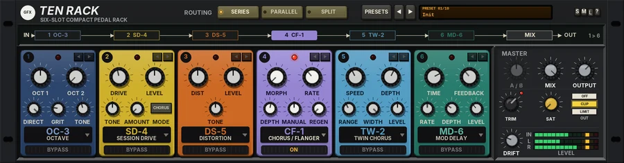
Overview
Ten Rack is a black 2U rack holding six compact pedals in the spirit of the mid-80s Japanese compact pedal series. The sound of each one is designed from scratch. There are six pedal types, and any slot can hold any of them - you can even use the same pedal twice, since every slot has its own memory and settings.
The six pedals are a bucket-brigade style chorus that morphs into a flanger (CF-1), a deep three-dimensional twin chorus (TW-2), an analogue-style octave divider (OC-3), a mid-hump overdrive with a built-in chorus or voice filter (SD-4), a high-gain distortion (DS-5) and a modulated delay (MD-6). Each has its own colour, and its knobs change to match the pedal in the slot.
The ROUTING keys choose how the six slots are wired: one long chain, all six side by side, or two chains of three. A path display above the pedals draws the signal flow, and changing a pedal or the routing crossfades smoothly, so there are no clicks. MASTER sets the dry / rack blend and the output level, and DRIFT lets the delay clocks and LFOs of every pedal wander like real analogue circuits.
Reach for it for
- Classic 80s clean chorus and echo on guitar and keys
- Drive, distortion and octave fuzz sounds built pedal by pedal
- Jet flanging and warped, pitch-bending echoes
- Lush, wide parallel pads from several modulation pedals at once
- Two complete rigs side by side, blended with one knob
- Thickening a bass or synth with the octave and drive
Controls
The header
- SERIES / PARALLEL / SPLIT
- The ROUTING. See Routing below. SERIES by default.
- PRESETS
- Opens the full preset list.
- ◄ / ►
- Step to the previous or next preset (wrapping round).
- Preset display
- Shows the preset number and name. Click it for the preset list too.
- S / M / L
- Panel size: small, medium or large. The panel also scales to fit the plugin window.
- ?
- Opens a pop-up with the design credit, the GFX website address and the address of this manual. Click anywhere to close it.
Signal path
The strip above the pedals shows how the slots are wired, from IN through the six slots to the MIX node and OUT. Each slot is drawn as a box with its number and pedal name, filled in its pedal's colour when it is on and as an outline when it is bypassed. The corner reads 1 > 6 (SERIES), 1 | 6 (PARALLEL) or A | B (SPLIT).
Routing
- SERIES
- One chain: 1 > 2 > 3 > 4 > 5 > 6, like a pedalboard. A bypassed slot passes the signal straight on.
- PARALLEL
- Every slot is fed from the input, and the pedals that are on are averaged at the output. With nothing on, the dry signal passes through. Good for layering several modulation pedals without them feeding each other.
- SPLIT
- Two chains side by side: slots 1 - 3 make chain A and slots 4 - 6 chain B, each in series. A / B in MASTER blends the two. Each pedal shows an A or B next to its slot number.
A pedal slot
All six slots work the same way. The knobs change with the pedal in the slot (see The six pedals below).
- Slot number
- 1 to 6, in a black circle at the top left. In SPLIT it is followed by A or B.
- LED
- Lit red while the pedal is on. Click it to switch the pedal on or off, like the footswitch.
- ◄ / ►
- Move the pedal one slot left or right. It swaps places with its neighbour, taking its knob settings and on / off state with it.
- Knobs
- Drag up or down (Shift for fine moves), or use the mouse wheel; double-click to reset to the pedal's default. While you touch a knob, its label shows the value.
- Name plate
- The pedal's name (CF-1 to MD-6) and what it is. Click it to choose a different pedal from the list; the new pedal starts at its own default settings. Drag it onto another slot to swap the two slots.
- Footswitch
- Switches the pedal on (ON) or off (BYPASS). A bypassed pedal dims a little. Switching crossfades over about 12 ms, and a pedal starts with empty delay lines each time it is switched on.
MASTER
- A / B
- SPLIT only (dimmed otherwise). Blends chain A and chain B, from A 100 (only A) through A = B (an equal mix, the default) to B 100 (only B).
- MIX
- The balance between the dry input and the rack, 0 - 100% (100% by default).
- OUTPUT
- Output level, -24 to +12 dB (0 dB by default).
- TRIM
- Input level before the rack, -24 to +12 dB.
- GUARD
- Click the TRIM knob (without turning it) to switch GUARD on or off; the small light at the knob's upper right shows it is on and glows brighter while it works. On by default. Gently eases very hot sources down towards about -18 dBFS average and catches fast peaks above -6 dBFS, so loud sources never overdrive the pedals. It never boosts quiet sources.
- SAT
- Band saturation on the way out: only the lows and highs are saturated (the mids stay clean), with a soft curve that loosens as the level rises. 0% by default.
- OFF / CLIP / LIMIT
- The final stage: nothing, a soft clipper at -0.3 dBFS (no latency, the default), or a lookahead limiter that holds the peaks at -0.3 dBFS (3 ms latency, compensated by REAPER). While the output clips, the CLIP key flashes red.
- DRIFT
- 0 - 100% (25% by default). See Drift below.
- IN / L / R meters
- The input level and the left and right output levels.
Drift
DRIFT makes the clocks and LFOs of every slot wander slowly and independently, as on real analogue pedals. At 100% the LFO rates move by up to 25% either way and the bucket-brigade clocks (the delay times and the tone of the delay lines) by up to 3%, so two choruses never quite line up. At 0% everything is rock steady.
The six pedals
CF-1 CHORUS / FLANGER (lilac)
A bucket-brigade style delay swept by a rounded triangle LFO, with the dark, slightly soft top of the old delay chips. MORPH glides between a lush stereo chorus and a metallic flanger.
- MORPH
- 0 - 100% (0% by default). Fully left is a wide stereo chorus (3 - 12 ms delay, the two sides sweeping in opposite directions); fully right a flanger (0.4 - 4 ms delay, a sweep of up to almost two octaves, with full REGEN). In between, it blends smoothly from one to the other.
- RATE
- The LFO speed, 0.1 - 10 Hz (35% = 0.5 Hz by default).
- DEPTH
- How far the LFO sweeps, 0 - 100% (55% by default).
- MANUAL
- Where the delay sits, shown in ms: 3 - 12 ms for the chorus, 0.4 - 4 ms for the flanger (50% by default). For the flanger this sets the pitch of the jet; for the chorus, how thick it sounds.
- REGEN
- Feedback, 0 - 100% (0% by default). It reaches up to 92% feedback at full MORPH for the ringing, whistling flange, but only about a third of that in chorus mode. The wet level trims down as REGEN rises to keep the level even.
TW-2 TWIN CHORUS (light blue)
Two delay lines per side, swept by two overlapping LFOs. The right side runs in antiphase, with a little cross-cancelling between the sides, for a deep, three-dimensional spread.
- SPEED
- The first LFO's speed, 0.08 - 4.8 Hz (40% = about 0.4 Hz by default).
- DEPTH
- How far the two lines sweep, 0 - 100% (60% by default).
- RANGE
- The second LFO's speed as a multiple of the first, x 1 to x 3.5 (x 2 by default). Higher settings give a busier, more animated shimmer.
- WIDTH
- The stereo spread, 0 - 100% (100% by default). At 0 both sides move together; at 100 they move in opposite directions.
- LEVEL
- The chorus level, 0 - 100% (50% by default). The dry signal dips a little as you turn it up.
OC-3 OCTAVE (dark blue)
An analogue-style octave divider. It cleans up the input, follows the pitch you play, and divides it down by one and two octaves. It works on the centre of the stereo image and puts the sub voices in the middle. Play single notes for the cleanest tracking (it follows roughly 35 Hz to 1.4 kHz).
- OCT 1
- The level of the voice one octave down, 0 - 100% (50% by default).
- OCT 2
- The level of the voice two octaves down, a square wave that follows your playing level, 0 - 100% (0% by default).
- DIRECT
- The level of your dry signal, 0 - 100% (100% by default).
- GRIT
- 0 - 100% (20% by default). Low settings give a smooth, round sub; turning it up swaps in a square wave at your playing level plus some rectifier grit, for a buzzier, fuzzier octave.
- TONE
- A low-pass on the sub voices, 150 Hz - 4 kHz (45% = about 650 Hz by default). Lower for a deep, soft sub; higher for more bite.
A gate stops the divider chattering on silence.
SD-4 SESSION DRIVE (yellow)
A soft-clipping overdrive with the classic mid-hump: only the mids above about 720 Hz are clipped, while the clean signal rides along underneath, so the lows stay tight and the notes stay clear. It has two built-in extras, picked with MODE.
- DRIVE
- The gain into the clipper, 0 - 100% (45% by default), up to about 42 dB. The top end is rounded off more as the drive goes up, and the output is partly level-compensated.
- LEVEL
- The output level, -21 to +15 dB (50% = -3 dB by default).
- TONE
- A low-pass, 600 Hz - 12 kHz (50% = about 2.7 kHz by default).
- AMOUNT
- How much of the MODE extra is added, 0 - 100% (0% by default, so the extra is off).
- CHORUS / VOICE (MODE)
- CHORUS (the default) adds a short stereo mini-chorus to the drive. VOICE adds a resonant mid-voice filter at 850 Hz, for a vocal, singing lead.
DS-5 DISTORTION (orange)
A treble-boosted booster into a high-gain stage with warm, lopsided hard clipping, followed by the vintage blend tone stack: a low-pass and a high-pass mixed by TONE, with a mid scoop at noon.
- DIST
- The amount of distortion, 0 - 100% (50% by default).
- LEVEL
- The output level, -26 to +10 dB (50% = -8 dB by default).
- TONE
- 0 - 100% (50% by default). Left is dark and thick, right is bright and cutting; in the middle the mids are scooped.
MD-6 MOD DELAY (green)
A delay with a modulated delay time. With a slow RATE and small DEPTH the repeats are gently chorused and pitch-warped; with more they are flanged and seasick. The feedback loop is darkened and saturates softly, and changing TIME glides like a tape machine, bending the pitch of the repeats.
- TIME
- The delay time, 20 ms - 1 s (73% = about 350 ms by default).
- FEEDBACK
- How many repeats, 0 - 95% feedback (35% by default). The repeats get darker and softer each time round.
- RATE
- The modulation speed, 0.05 - 8 Hz (50% = about 0.6 Hz by default).
- DEPTH
- The modulation depth, 0 - 9 ms (30% = about 0.8 ms by default). The two sides are modulated a quarter-cycle apart for a wide image.
- LEVEL
- The echo level, 0 - 100% (35% by default). The dry signal always stays at full level.
Presets
Every preset starts from Init and then changes a few pedals. Presets set the routing, A / B, MIX, DRIFT and all six slots; OUTPUT and the IN / OUT section are left as they are.
- Init
- The classic order in series - OC-3, SD-4, DS-5, CF-1, TW-2, MD-6 - every pedal at its defaults, with only the CF-1 chorus on.
- 80s Clean Chorus
- A slow, deep CF-1 chorus into a short MD-6 slapback of about 200 ms, with a little more drift.
- Crunch + Twin Chorus
- SD-4 crunch into a wide TW-2 twin chorus and a quiet MD-6 echo.
- Octave Fuzz
- OC-3 with both octaves and plenty of GRIT into a hot DS-5 distortion.
- Session Lead
- SD-4 driven harder in VOICE mode for a singing mid-range, into a 375 ms MD-6 echo.
- Shimmer Pad (parallel)
- PARALLEL routing: a deep CF-1 chorus, a lush TW-2 and a long, modulated MD-6 side by side, with extra drift.
- Dual Rig Split
- SPLIT routing. Chain A: SD-4 with its mini-chorus, CF-1 chorus and a short echo. Chain B: DS-5, TW-2 and a longer echo.
- Warped Echo
- CF-1 a little past halfway to a flanger, into an MD-6 with deep modulation and plenty of feedback, with drift at 60%.
- Jet Flanger
- DS-5 distortion into the CF-1 at full flanger, with a slow sweep and high REGEN.
- Sub Bass Synth
- OC-3 with both octaves, high GRIT and a dark TONE, into a light SD-4 drive and a gentle chorus: a synth-like bass.
Tips
- Drive pedals before modulation and delay is the classic order; try a chorus or the octave before a drive for a wilder sound.
- OC-3 tracks best on clean single notes, so put it first in the chain, before any drive or chorus.
- For a doubling effect in SPLIT, put the same pedal in both chains with slightly different settings and set A / B to A = B.
- In PARALLEL the pedals are averaged, so each one sounds a little quieter than on its own; a bypassed pedal drops out of the average.
- Turn MD-6 TIME slowly while it is repeating for tape-style pitch bends.
- Set DRIFT to 0 for repeatable sweeps; a little more than the default makes two choruses in the rack sound less locked together.
File: gfx-ten-rack.jsfx
TS-7
A 1U analogue tape simulator and compressor: input transformer, high-frequency tape tamer and three compressor modes.
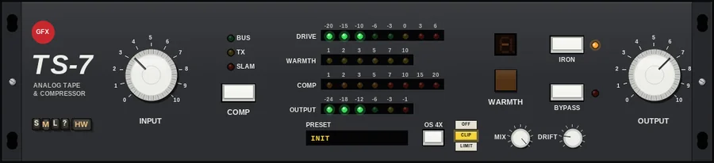
Overview
TS-7 is a rack unit in the spirit of the classic multi-stage tape and transformer boxes. The signal runs through three stages in turn: IRON, an input transformer that thickens and saturates; WARMTH, which tames the top end the way tape compresses its own high frequencies; and COMP, a compressor with three characters.
As on the hardware, the thresholds are fixed: INPUT decides how hard you hit everything, from a little warmth to a full slam. The compressor's make-up gain is automatic, and OUTPUT sets the final level.
Everything non-linear runs oversampled (2x or 4x) to keep the distortion clean of aliasing. The small latency this adds is reported to REAPER, so your tracks stay in time.
Reach for it for
- Gluing a drum or mix bus with tape-style warmth
- Slamming drums for energy and pump (SLAM)
- Thickening bass with transformer saturation
- Taming harsh cymbals and vocals without an EQ (WARMTH)
- Parallel smash compression with MIX
Controls
Main panel
- INPUT
- The level into the unit, -12 to +24 dB, in 0.5 dB steps. Because the thresholds are fixed, this is the main control: more INPUT means more iron saturation, more warmth and more compression.
- COMP
- The white key steps through the compressor modes; the lights show the one in use (all dark = off). TX: gentle 2:1 levelling, slow, into a saturating output transformer. BUS: smooth 3:1 programme compression that lets the transients through. SLAM: a feedback compressor with ultra-fast attack and release that slams transients and pumps.
- DRIVE meter
- The level after INPUT, from -20 to +6 dBFS. Green is comfortable, yellow at 0, red above.
- WARMTH meter
- How much top end WARMTH is taking, 1 - 10 dB.
- COMP meter
- The compressor's gain reduction, 1 - 20 dB.
- OUTPUT meter
- The final output level, -24 to -1 dBFS.
- WARMTH
- The orange key steps the high-frequency tape tamer through OFF and 1 - 6; the display shows the setting. A side-chain watches the top (above about 3.5 kHz) and, when transients push past the threshold, pulls the top down fast and lets it back slowly. Each step lowers the threshold by 4 dB, so it tames more.
- IRON
- The input transformer, on by default (the amber light). The low band (below about 120 Hz) saturates first, then the whole signal meets a gentle asymmetric soft clip whose even harmonics grow with level. Off = a clean input stage.
- BYPASS
- Passes the dry signal through (the red light), delayed to match the oversampling so nothing jumps in time. The switch fades over a few milliseconds.
- OUTPUT
- The final level, -24 to +12 dB, in 0.5 dB steps.
Drag a knob up or down (Shift for fine), use the mouse wheel, or double-click to reset it.
The bottom strip
- PRESET
- The ◄ / ► keys step through the eight presets; click the display for the list. A preset sets INPUT, OUTPUT, WARMTH, COMP, IRON and MIX, and switches BYPASS off.
- OS 2X / OS 4X
- The oversampling: the key toggles between 2x and 4x (the default). 4x is cleaner on hard settings and uses a little more CPU and latency.
- OFF / CLIP / LIMIT
- The final stage: nothing, a soft clipper at -0.3 dBFS (no latency), or a lookahead limiter holding the peaks at -0.3 dBFS (3 ms latency, compensated by REAPER). CLIP is on by default and flashes red when it clips.
- MIX
- Parallel compression, 0 - 100%: blends the uncompressed signal (after IRON and WARMTH) under the compressed one. Only works with a COMP mode on.
- DRIFT
- The iron's power supply is not quite steady: its drive and asymmetry wander slowly and unevenly, 0 - 100% (20% by default). The level stays put; only how hard the transformer saturates moves. Very subtle.
Panel keys
- S / M / L
- Panel size: small, medium or large. The panel also scales to fit the plugin window.
- ?
- Opens a pop-up with the design credit, the GFX website address and the address of this manual. Click anywhere to close it.
- HW
- Switches between the black anodised rack panel and a soft, light-grey flat panel with the same layout.
Presets
- Init
- Unity INPUT and OUTPUT, IRON on, WARMTH and COMP off.
- Tape Glue Bus
- +3 dB in, WARMTH 2, BUS compression.
- Drum Slam
- +6 dB in, WARMTH 3, SLAM, output pulled down 4 dB.
- Vocal Tx
- +4 dB in, WARMTH 2, TX levelling.
- Warm Master
- +2 dB in, WARMTH 1, BUS compression at 60% mix.
- Bass Iron
- +8 dB into the iron with gentle TX compression, no WARMTH.
- Parallel Smash
- +8 dB in, WARMTH 2, SLAM blended in at 35%.
- Lo-Fi Tape
- +12 dB in, WARMTH 6 and SLAM: heavily squashed and dark.
Tips
- Set INPUT by watching the DRIVE meter: around 0 is a healthy hit; pushing into the red brings out the iron and the compressor.
- Turn OUTPUT down as you turn INPUT up to keep the level matched, then compare with BYPASS.
- WARMTH is a quick fix for bright cymbals or sibilant vocals: step it up until the WARMTH meter flickers a few dB on the harsh moments.
- SLAM on a drum room or bus with MIX at 30 - 50% adds energy without losing the attack.
File: gfx-ts7.jsfx
Compressor
One compressor, four voicings: punchy VCA, smooth bus glue, transparent ride and optical.

Overview
Compressor is a single compressor with four characters, chosen with the VOICING buttons. VCA is a punchy compressor that measures loudness (RMS), with a ratio that goes past infinity into negative ratios and a touch of even harmonics under heavy reduction. BUS is a stereo-linked glue compressor that reads the peaks and stays smooth and clean. RIDE is a transparent 'easy ride' leveller with a wide knee and timing that adapts to the music. OPTO behaves like an optical cell: a soft attack and a two-stage release that lets go quickly at first, then slowly.
With AUTO on, attack and release follow the programme, and the release lengthens when the compressor keeps working, so sustained passages don't pump. The SIDE-CHAIN section either stops the lows from driving the compressor (SC HPF) or compresses only the lows (SPLIT), and MIX blends in the dry signal for parallel compression. The transfer curve shows exactly what the compressor is doing to the level as you play.
Reach for it for
- Vocals that need levelling (RIDE, OPTO)
- Drums and drum buses (VCA)
- Gluing a mix or group bus (BUS)
- Tightening only the low end of a bass or mix (SPLIT)
- Parallel crush and pumping effects with negative ratios (VCA, MIX)
Controls
The graph section
- SIGNAL
- Lights green when audio is arriving.
- INPUT
- The input level (average) in dB.
- Transfer curve
- The input-to-output curve from -60 to 0 dB, including the knee. The small black triangle under it marks the THRESHOLD. The red square rides on the curve with the live level, and the red arrow at the right shows the output level after MAKEUP.
- Gain reduction meter
- 24 lights lit from the right, showing how many dB the compressor is taking off (0 to -24).
COMPRESSOR
- RATIO
- How strongly the compressor works once the level is over the threshold. 1:1 does nothing; 2:1 and 4:1 are moderate; INF:1 is limiting. In the VCA voicing the ratio goes on past INF into negative ratios (down to -1:1): the louder the input, the quieter the output, for pumping and backwards effects. The other voicings stop at INF:1.
- KNEE
- The soft knee, 0 to 18 dB (6 dB by default). 0 is a hard knee; larger values ease the ratio in gradually around the threshold. RIDE always uses at least 10 dB and OPTO at least 12 dB.
- MAKEUP
- Make-up gain, 0 to +24 dB, to bring the level back up after compression.
- THRESHOLD
- The level where the compressor starts working, -50 to 0 dB (-18 dB by default). Turn it down for more compression.
- MIX
- Parallel compression: blends the dry signal back in. 100% is fully compressed; lower settings keep the dry transients under the compressed sound.
Timing and voicing
- ATTACK
- How fast the compressor reacts, 0.1 to 100 ms (10 ms by default). The display reads AUTO when AUTO is on, and OPTO in the OPTO voicing, where the knob has no effect.
- RELEASE
- How fast it recovers, 20 to 2000 ms (150 ms by default). Reads AUTO or OPTO in the same way.
- AUTO
- On by default. Attack and release follow the programme instead of the knobs: the release gets longer the more the compressor keeps working, so sustained passages don't pump. Always lit in the OPTO voicing, which has its own fixed timing.
- VCA / BUS / RIDE / OPTO
- The voicing. VCA: punchy, measures loudness (RMS), allows negative ratios and adds a touch of even harmonics under heavy reduction. BUS: stereo-linked, reads the peaks, smooth and low colour. RIDE: transparent leveller with a wide knee and adaptive timing. OPTO: optical cell with a soft attack and a two-stage release (quick, then slow).
- LINK
- On by default: both sides get the same gain, so the stereo image stays still. Off: each side is compressed on its own. Always lit in the BUS voicing, which is always linked.
SIDE-CHAIN
- SC HPF
- The compressor ignores the lows below the frequency when deciding how much to compress (a 12 dB per octave high-pass on what it listens to). The whole signal is still compressed. Use it so the bass doesn't make everything pump. This is the default.
- SPLIT
- Only the lows below the frequency are compressed; everything above passes untouched. The split is a 24 dB per octave crossover that sums back flat when nothing is being compressed. Use it to tighten the low end of a bass or a mix on its own.
- Frequency
- The side-chain frequency, from OFF (fully left, 20 Hz) to 2 kHz (80 Hz by default). The labels beside it remind you what the mode does: DETECTOR HIGH-PASS or LOWS ONLY COMPRESSED.
IN / OUT
- TRIM
- Input level before anything else, from -24 to +12 dB.
- GUARD
- Click the TRIM knob (without moving it) to switch the guard; its light sits at the knob's upper right and is lit while it is on. On by default. Gently eases very hot sources down towards about -18 dBFS average and catches fast peaks above -6 dBFS, so loud sources never overdrive the plugin. It never boosts quiet sources. The light glows brighter while it is catching peaks.
- SAT
- Band saturation on the way out: only the lows and highs are saturated (the mids stay clean), with a soft curve that loosens as the level rises.
- OFF / CLIP / LIMIT
- The final stage: nothing, a soft clipper (no latency), or a lookahead limiter that holds the peaks at -0.3 dBFS (3 ms latency, compensated by REAPER). CLIP is on by default; its key flashes red while it is clipping.
Drift
A slow random wander: the threshold and the timing breathe slightly, like an analogue unit.
- DRIFT
- How much drift, 0 to 100%. 50% (the default) is the standard amount, 100% is twice that, 0 switches it off. More drift also makes the wander a little faster.
Output
- Meter
- Output level, left and right.
- LEVEL
- Output level, -24 to +12 dB.
The preset row and colour strip
- PRESETS
- Opens the list of factory presets (a click on the display does the same). Choosing one sets the compressor for that job; drift, output level and the IN / OUT section are left as they are. The last entry resets everything to the defaults.
- ◄ / ►
- Step to the previous or next preset.
- Colour swatch
- Changes the faceplate colour: GREEN, BLUE or one of the GFX themes.
- S / M / L
- Panel size: small, medium or large. The panel also scales to fit the plugin window.
- ?
- Next to the S / M / L size keys. Opens a pop-up with the design credit, the GFX website address and the address of this manual. Click anywhere to close it.
- HW / FLAT
- Switches between the hardware-style panel and the flat look.
Presets
- Vocal Ride
- RIDE at 3:1 with a wide knee and AUTO timing, for even, natural vocals.
- Drum Smash
- VCA at about 6:1, fast 3 ms attack and 80 ms release, a tight 2 dB knee: punchy, aggressive drums.
- Bass Glue
- VCA at 4:1 with AUTO timing; SPLIT at 120 Hz so only the lows are compressed.
- Bus Glue
- BUS at 2:1 with a 30 ms attack and 300 ms release: classic gentle bus glue.
- Negative Pump
- VCA past INF at -2:1 for rhythmic pumping.
- Gentle Level
- RIDE at 2:1 with a very wide 15 dB knee and AUTO timing: barely-there levelling.
- Parallel Crush
- VCA crushing hard (about 10:1, 1 ms attack, hard knee), blended in at 40%.
- Mastering Touch
- BUS at a gentle 1.5:1 with AUTO timing, just 1 dB of make-up.
- Opto Vocal
- OPTO at 4:1: soft, smooth vocal levelling.
- Opto Lows Only
- OPTO at 5:1 with SPLIT at 160 Hz: smooth control of the low end only.
- Reset all to defaults
- Every control back to its starting value.
Tips
- Watch the transfer curve: if the red square sits far up the flat part of the curve, you are compressing more than you probably need.
- If the low end makes the whole mix duck, use SC HPF at 80-120 Hz.
- SPLIT is a quick way to steady a boomy bass or kick without dulling the top.
- Negative ratios sound best on sustained material and with MIX below 100%.
- Try the same settings in each voicing: VCA for punch, BUS for glue, RIDE and OPTO for smooth, transparent levelling.
File: gfx-compressor.jsfx
Compressor Q
One compressor with four voicings, plus a four-band EQ that can go before or after it.

Overview
Compressor Q is a single compressor that can take on four characters. VCA is a punchy loudness-sensing (RMS) compressor whose ratio goes past infinity into negative ratios. BUS is a smooth, peak-sensing glue compressor that always works on both sides together. RIDE is a transparent leveller with a wide knee. OPTO behaves like an optical cell: a soft attack and a release that lets go quickly at first, then slowly.
The SIDE-CHAIN section either stops the lows from driving the compressor (SC HPF) or compresses only the lows (SPLIT). MIX blends in the dry signal for parallel compression.
Below the compressor sits a four-band EQ with low and high cut filters. EQ FIRST puts it before the compressor, EQ AFTER after it; the unit the signal meets first is shown on top.
Reach for it for
- Vocals that need levelling and tone in one place (RIDE or OPTO)
- Drum smashing and parallel compression (VCA with MIX)
- Gentle glue on a mix or group bus (BUS)
- Controlling only the low end of a bass or a mix (SPLIT)
- Pumping and reverse-dynamics effects (VCA with negative ratios)
Controls
Drag a knob up or down to turn it (hold Shift for fine moves), use the mouse wheel, or double-click to reset it. The value shows under the knob.
The preset row
- PRESETS
- Opens the list of factory presets (clicking the display does the same). Choosing one sets the compressor and side-chain controls; DRIFT, LEVEL, the EQ and the IN / OUT controls are left as they are. The last entry, Reset all to defaults, resets the compressor, DRIFT, LEVEL and IN / OUT.
- Left / right arrows
- Step to the previous or next preset.
- Display
- Shows the preset number and name.
The graph
- SIGNAL
- Lights when there is signal at the input.
- INPUT
- The input level in dB.
- Transfer curve
- Shows how input level (along the bottom, -60 to 0 dB) becomes output level for the current threshold, ratio and knee. The small triangle under the graph marks the threshold; the red square rides on the curve with the live level, and the arrow on the right shows the output level after MAKEUP.
- Gain reduction meter
- Lights from the right, 0 to -24 dB.
- Colour swatch
- Picks the faceplate colour: GREEN, BLUE or one of the GFX themes.
- S / M / L
- Panel size: small, medium or large. The panel also scales to fit the plugin window.
- ?
- Opens a pop-up with the design credit, the GFX website address and the address of this manual. Click anywhere to close it.
- HW / FLAT
- Switches between the hardware-style faceplate and the flat look.
COMPRESSOR
- THRESHOLD
- The level where compression starts, -50 to 0 dB.
- RATIO
- How strongly the signal is compressed once it is over the threshold: from 1:1 up to INF:1 (limiting). In VCA only, the ratio carries on past INF into negative ratios, down to -1:1: the louder the input, the quieter the output - for pumping and swelling effects. The other voicings stop at INF:1.
- KNEE
- How gradually the compression eases in around the threshold, 0 - 18 dB (6 dB by default). RIDE always uses at least 10 dB and OPTO at least 12 dB.
- MAKEUP
- Gain after compression, 0 to +24 dB.
- MIX
- Parallel compression: 100% is fully compressed, lower settings blend the dry signal back in.
Timing and voicing
- ATTACK
- How fast the compressor reacts, 0.1 - 100 ms. Shows AUTO when AUTO is on and OPTO in the OPTO voicing.
- RELEASE
- How fast it lets go, 20 - 2000 ms. Shows AUTO or OPTO in the same way.
- AUTO
- Programme-dependent timing (on by default): the attack is set by the voicing and the release lengthens the longer the compressor keeps working, so sustained passages do not pump. Always on in OPTO.
- VCA
- The punchy loudness-sensing (RMS) compressor. It adds a touch of even harmonics under heavy reduction, and is the only voicing with negative ratios.
- BUS
- Peak-sensing, smooth and low in colour, for glue on groups and mixes. Always linked.
- RIDE
- A transparent 'easy ride' leveller with a wide knee and adaptive timing.
- OPTO
- An optical cell: a soft attack and a two-stage release that lets go quickly, then slowly. ATTACK and RELEASE are not used.
- LINK
- On (default): both sides get the same gain, so the stereo image stays still. Off: each side is compressed on its own. Always on in BUS.
SIDE-CHAIN
- SC HPF
- The compressor ignores the lows below the frequency (a 12 dB/oct high-pass on what it listens to), but the whole signal is compressed. Use it so the bass does not make everything pump. The label reads DETECTOR HIGH-PASS.
- SPLIT
- Only the lows below the frequency are compressed; everything above passes untouched. The split is a 24 dB/oct crossover that sums back flat when nothing is being compressed. The label reads LOWS ONLY COMPRESSED.
- Frequency knob
- Where the high-pass or split sits, 20 - 2000 Hz (80 Hz by default). Fully left is OFF.
IN / OUT
- TRIM
- Input level before anything else, from -24 to +12 dB. Double-click to reset it.
- GUARD (click TRIM)
- A single click on the TRIM knob switches GUARD on or off; the small light beside the knob shows it (dark = off, red = on, bright = working). GUARD is on by default. It gently eases very hot sources down towards about -18 dBFS average and catches fast peaks above -6 dBFS, so loud sources never overdrive the plugin. It never boosts quiet sources.
- SAT
- Band saturation on the way out, 0 - 100%: only the lows and highs are saturated (the mids stay clean), with a soft curve that loosens as the level rises.
- OFF / CLIP / LIMIT
- The final stage: nothing, a soft clipper that holds the peaks at -0.3 dBFS (no latency), or a lookahead limiter that holds them at -0.3 dBFS (3 ms latency, compensated by REAPER). The CLIP key flashes red while the clipper is working.
The right-hand column
- DRIFT
- A slow random wander, 0 - 100% (50% is the standard amount, 100% twice that, 0% none). The threshold breathes very slightly, the attack and release times move a little, and the EQ bands' frequencies and gains wander very slightly. The wander also gets a little faster as you turn it up.
- Meter
- Output level, left and right.
- LEVEL
- The output level, -24 to +12 dB.
EQ
Four bands in a row, each with a coloured gain knob and its FREQ knob beside it, between a low cut and a high cut. The bell bands get slightly narrower as you boost or cut further.
- LO CUT
- A 12 dB/oct high-pass filter, 20 - 1000 Hz. Fully left is OFF.
- Gain knobs
- Every band's gain runs from -16 to +16 dB. Below -12 dB the cut gets much steeper, reaching -40 dB at -16 - a deep notch on a bell band.
- LOW / FREQ
- Gain -16 to +16 dB, frequency 20 - 500 Hz.
- LO MID / FREQ
- A bell: gain -16 to +16 dB, frequency 80 Hz - 2 kHz.
- HI MID / FREQ
- A bell: gain -16 to +16 dB, frequency 400 Hz - 8 kHz.
- HIGH / FREQ
- Gain -16 to +16 dB, frequency 1.5 - 20 kHz.
- HI CUT
- A 12 dB/oct low-pass filter, 2 - 20 kHz. Fully right is OFF.
- SHELF: LOW / HIGH
- Turn the LOW and HIGH bands into shelves (lit, the default) or bells (off).
- EQ FIRST / EQ AFTER
- Puts the EQ before the compressor (it changes what the compressor hears and reacts to) or after it (it shapes the compressed sound). The panel swaps the two units so the first one is on top. The key's light shows while it is held.
Presets
- Vocal Ride
- RIDE at 3:1 with auto timing, a 12 dB knee, 3 dB make-up and a 100 Hz SC HPF.
- Drum Smash
- VCA at about 6:1, a 3 ms attack and 80 ms release, a near-hard knee and 6 dB make-up.
- Bass Glue
- VCA at 4:1 with auto timing, compressing only the lows below 120 Hz (SPLIT).
- Bus Glue
- BUS at 2:1, 30 ms attack, 300 ms release, 2 dB make-up and a 90 Hz SC HPF.
- Negative Pump
- VCA past INF at -2:1, for pumping and reverse-dynamics effects.
- Gentle Level
- RIDE at 2:1 with a very wide 15 dB knee and a slow auto release.
- Parallel Crush
- VCA at 10:1 with a hard knee and very fast timing, 10 dB make-up, blended in at 40%.
- Mastering Touch
- BUS at 1.5:1 with auto timing and a 9 dB knee, just 1 dB of make-up.
- Opto Vocal
- OPTO at 4:1 with a 12 dB knee, 4 dB make-up and an 80 Hz SC HPF.
- Opto Lows Only
- OPTO at 5:1 compressing only the lows below 160 Hz (SPLIT).
- Reset all to defaults
- The compressor, side-chain, DRIFT, LEVEL and IN / OUT back to their starting values. The EQ is left as it is.
Tips
- Watch the red square on the transfer curve: it shows exactly how far over the threshold the music sits.
- EQ FIRST with a LO CUT or a low cut on LOW makes the compressor react less to the bass; EQ AFTER keeps the compression the same and only changes the tone.
- For parallel compression, set heavy compression first, then bring MIX down until the transients come back.
- SPLIT on a mix bus at 100 - 150 Hz steadies the low end without touching the vocal or the cymbals.
File: gfx-compressor-q.jsfx
Console
Gate, compressor, limiter and output transformer from the centre section of an 80s British broadcast console.
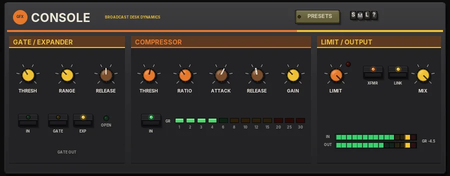
Overview
Console recreates the dynamics section of an 80s British broadcast desk, in the spirit of the classic desk VCA compressor and its companion compressor / gate module. It is fast, clean and transparent: it holds the level without dulling the transients, and the console's output transformer adds a little weight.
The signal runs through four parts in order: the gate / expander, the compressor, a fast peak limiter and the output transformer. MIX blends the dry signal back in for parallel compression.
Reach for it for
- Tight, controlled drums - with the gate cleaning up spill
- Spoken voice and presenters that need to stay steady and present
- Bass DI and acoustic instruments that want even level without losing attack
- Parallel squash on a drum or mix bus
- A touch of transformer weight on its own (Transformer Only)
Controls
Gate / Expander
- THRESH
- The level below which the gate or expander starts turning the signal down, -80 to 0 dB. Fully left is OFF.
- RANGE
- How far it turns the signal down, 0 - 60 dB. Small settings just lower the background; 40 dB or more shuts it right off.
- RELEASE
- How fast it closes once the signal falls below the threshold, 20 - 2000 ms. It opens very fast (in about half a millisecond), so the attack of a hit is kept.
- IN
- Switches the gate / expander in. Off by default.
- GATE
- Shuts by the full RANGE as soon as the signal falls below the threshold. Tight and obvious - for drums and spill.
- EXP
- A gentle 1:2 expander: it only takes down what falls below the threshold, and the further below, the more it takes down (up to RANGE). Smoother and more natural - for noise, room and breaths. This is the default.
- OPEN
- Lights while the gate is letting the signal through.
- GATE readout
- How far the gate is turning the signal down right now, in dB (GATE OUT when the section is off).
Compressor
A fast VCA compressor with a 3 dB soft knee and a quick RMS detector. Its detector hears the gated signal, so a closed gate does not make it work.
- THRESH
- The level where the compressor starts working, -40 to 0 dB. Turn it down for more compression.
- RATIO
- How strongly it compresses once over the threshold, 1:1 to INF:1 (at the top of the knob: limiting).
- ATTACK
- How fast it clamps down, 0.1 - 30 ms. Short settings catch the transients; longer ones let them through for more punch.
- RELEASE
- How fast it lets go, 30 - 3000 ms.
- GAIN
- Make-up gain, -10 to +20 dB. Only applies while the compressor is in.
- IN
- Switches the compressor in or out.
- GR meter
- The row of 12 lights shows the gain reduction of the compressor and limiter together, from 1 to 30 dB.
Limit / Output
- LIMIT
- A fast peak limiter after the compressor, -20 to 0 dB: peaks above this level are held at it. Fully right is OFF. The red light beside the knob shows it limiting.
- XFMR
- The console's output transformer. On (default): the lows thicken and saturate gently as the level rises, and the extreme top softens. Off: a straight wire.
- LINK
- On (default): both sides share one gain in the gate, compressor and limiter, so the stereo image stays still. Off: the two sides work as two mono channels.
- MIX
- Parallel compression: blends the dry signal back in. 100% (WET 100) is fully processed; lower settings keep the dry transients under the processed sound.
- IN / OUT meters
- Input and output level.
- GR readout
- The total gain reduction of the compressor and limiter, in dB.
The header
- PRESETS
- Opens the list of factory presets; the ◄ / ► keys step through them and the display shows the one in use. Choosing one sets the gate, compressor, limiter, XFMR, LINK and MIX. The last entry resets everything to the defaults.
- S / M / L
- Panel size: small, medium or large. The panel also scales to fit the plugin window.
- ?
- Opens a pop-up with the design credit, the GFX website address and the address of this manual. Click anywhere to close it.
Input guard
Console has no input or output fold-out: its own transformer and limiter do that job. An input guard runs in front of everything and is on by default: it gently eases very hot sources down towards about -18 dBFS average and catches fast peaks above -6 dBFS, so loud sources never overdrive the plugin. It never boosts quiet sources. It has no key on the panel; it appears as Input guard in REAPER's parameter list.
Presets
- Desk Glue
- Gentle 2.5:1 compression with a little make-up gain; gate off.
- Presenter Voice
- A soft expander under a firm 4:1 compressor with fast attack and the limiter at -2 dB - steady, upfront speech.
- Tight Drums (gated)
- A hard gate with 40 dB range and a fast 5:1 compressor, limiter at -1 dB.
- Kick / Snare Gate
- A deep, fast gate (60 dB range, 80 ms release), 4:1 compression and LINK off for two independent channels.
- Parallel Squash
- Heavy 8:1 compression with very fast timing and the limiter at -3 dB, blended in at 45%.
- Transmitter Limit
- INF:1 with the fastest attack and release - a broadcast-style brickwall at -14 dB, limiter at -1 dB.
- Acoustic Clean-up
- A gentle expander with a slow release under 3:1 compression with a 10 ms attack.
- Bass DI
- 4:1 compression with an 8 ms attack to keep the pluck; gate off.
- Transformer Only
- Gate and compressor out: just the output transformer's colour.
- Gentle Programme Bus
- A light expander and slow, gentle 2:1 compression with the limiter at -1 dB.
- Reset all to defaults
- Every control back to its starting value.
Tips
- Set the gate first with the compressor out, then bring the compressor in: the compressor listens after the gate, so the two settings work together.
- If the gate chatters on decaying notes, try EXP instead of GATE, or lengthen the RELEASE.
- For more punch, raise the compressor's ATTACK to 10 - 30 ms so the front of each hit gets through.
- Use LIMIT as a safety net a few dB below your peaks after a heavy compressor setting.
- On a stereo bus keep LINK on; switch it off only for dual-mono sources such as two separate drum mics.
File: gfx-console.jsfx
Console Q
Broadcast-desk dynamics - gate / expander, compressor, limiter and transformer - with a four-band channel EQ.

Overview
Console Q is the centre-section dynamics of an 80s British broadcast console, in the spirit of the classic desk VCA compressor and its companion compressor / gate module. It is fast, clean and transparent, with the console's output transformer for a little weight. The signal goes gate / expander, then compressor, then limiter, then transformer.
Below the dynamics sits a four-band console channel EQ: high- and low-pass filters, LF and HF bands (shelf or bell), and two fully parametric mid bands, with two voicings, BROWN and BLACK.
ORDER puts the EQ after the dynamics or in front of them. The unit the signal meets first is shown on top.
Reach for it for
- Vocals and voice-over that need to sit steady and clear
- Tight, gated drums (kick, snare, toms)
- Cleaning up noise and spill between phrases (EXP)
- A fast, transparent bus compressor with a touch of transformer weight
- Channel EQ and dynamics in one place, in either order
Controls
Gate / Expander
- THRESH
- The level below which the gate or expander works, -80 to 0 dB. Fully left = OFF.
- RANGE
- How far it closes, 0 - 60 dB. Small settings just lower the noise between phrases; 60 dB is fully shut.
- RELEASE
- How quickly it closes once the signal falls below the threshold, 20 - 2000 ms. It opens in about half a millisecond.
- IN
- Switches the gate / expander in or out (out by default).
- GATE / EXP
- GATE: shuts by the full RANGE as soon as the level drops below the threshold. EXP (default): a gentle 1:2 expander that only takes down what falls below - the further below, the quieter, up to RANGE.
- OPEN
- Lights while the gate is letting the signal through.
- GATE readout
- How many dB the gate is taking off, or GATE OUT when it is switched out.
Compressor
- THRESH
- Where the compressor starts working, -40 to 0 dB. It has a 3 dB soft knee and a quick RMS detector, so it holds the level without dulling the transients.
- RATIO
- 1:1 to INF:1 (fully right).
- ATTACK
- 0.1 - 30 ms.
- RELEASE
- 30 - 3000 ms.
- GAIN
- Make-up gain, -10 to +20 dB.
- IN
- Switches the compressor in or out (in by default). GAIN only applies while it is in.
- GR meter
- The row of 12 lights shows the gain reduction of the compressor and limiter together, from 1 to 30 dB.
Limit / Output
- LIMIT
- A fast peak limiter after the compressor, -20 to 0 dB: the level the peaks are held at. Fully right = OFF. The red light beside it shows it limiting.
- XFMR
- The output transformer, on by default: the lows thicken and saturate gently as the level rises, and the extreme top softens. Off = straight wire.
- LINK
- On (default): both sides share one gain for the gate, compressor and limiter, so the stereo image stays put. Off: two independent mono channels.
- MIX
- Parallel compression, 0 - 100% wet: blends the dry signal back in. The dry signal is taken after the EQ when the EQ comes first.
- IN / OUT meters
- LED ladders for the input and output level; click one to clear the peak hold.
- GR readout
- The total gain reduction in dB.
EQ
The four-band channel EQ strip.
- IN
- Switches the four EQ bands in or out (in by default). The HPF and LPF keep working either way.
- BROWN / BLACK
- The voicing. BROWN: broad, gentle curves whose width stays the same at any gain. BLACK (default): the bandwidth narrows as you boost or cut further, for a more focused sound, and the shelves get a small opposite dip just inside their corner.
- HPF
- High-pass filter, 18 dB/oct, 20 - 400 Hz. Fully left = OFF.
- LPF
- Low-pass filter, 12 dB/oct, 3 - 22 kHz. Fully right = OFF.
- LF / FREQ
- Low band: -15 to +15 dB at 30 - 450 Hz.
- BELL (LF)
- Off: a low shelf. On: a bell curve at FREQ.
- LMF / FREQ / Q
- Low-mid band: -15 to +15 dB, 200 Hz - 2.5 kHz, Q 0.4 - 3 (higher is narrower).
- HMF / FREQ / Q
- High-mid band: -15 to +15 dB, 600 Hz - 7 kHz, Q 0.4 - 3.
- HF / FREQ
- High band: -15 to +15 dB at 1.5 - 16 kHz.
- BELL (HF)
- Off: a high shelf. On: a bell curve at FREQ.
The header
- ORDER
- DYNAMICS > EQ (default) or EQ > DYNAMICS: click to swap. The panel redraws with the unit the signal meets first on top.
- PRESETS
- Opens the list of factory presets; the ◄ / ► keys step through them and the display shows the one in use (click it for the list too). Choosing one sets the gate, compressor, LIMIT, XFMR, LINK and MIX; the EQ is left as it is. The last entry resets the dynamics to their defaults.
- S / M / L
- Panel size: small, medium or large. The panel also scales to fit the plugin window.
- ?
- Opens a pop-up with the design credit, the GFX website address and the address of this manual. Click anywhere to close it.
Input guard
There is no input or output fold-out on Console Q: its own character does that job. An input guard runs in front of everything and is on by default: it gently eases very hot sources down towards about -18 dBFS average and catches fast peaks above -6 dBFS, so loud sources never overdrive the plugin. It never boosts quiet sources. It has no key on the panel; it appears as Input guard in REAPER's parameter list.
In REAPER's parameter list only
- EQ: Line amp drive
- Drives the EQ's line amplifier into gentle, slightly asymmetric saturation, 0 - 100% (0 by default).
- EQ: Output
- The EQ's output level, -12 to +12 dB.
Presets
- Desk Glue
- Gentle 2.5:1 compression with linked sides for a bus; gate out.
- Presenter Voice
- Expander for the room noise, 4:1 compression with 6 dB of make-up and a limit at -2 dB.
- Tight Drums (gated)
- Gate closing by 40 dB, fast 5:1 compression, a limit at -1 dB.
- Kick / Snare Gate
- A hard, fast gate closing fully, fast 4:1 compression, sides unlinked.
- Parallel Squash
- Heavy 8:1 compression with a fast attack, blended in at 45%.
- Transmitter Limit
- INF:1 with the fastest attack at -14 dB, then a limit at -1 dB.
- Acoustic Clean-up
- A gentle expander under 3:1 compression with slower timing.
- Bass DI
- Steady 4:1 compression with an 8 ms attack.
- Transformer Only
- Compressor and gate out: just the output transformer.
- Gentle Programme Bus
- A light expander and slow 2:1 compression, with a limit at -1 dB.
- Reset all to defaults
- The dynamics and the input guard back to their starting values; the EQ is left as it is.
Tips
- EXP is far more forgiving than GATE on vocals and acoustic instruments: set RANGE to 10 - 15 dB to lower the noise without chopping the tails.
- EQ > DYNAMICS lets an HPF stop the compressor reacting to rumble; DYNAMICS > EQ keeps your EQ boosts from changing how hard it compresses.
- Switch LINK off on drum overheads or a wide stereo source if you want each side to breathe on its own.
- Try BLACK for surgical mid cuts and BROWN for broad, musical tone shaping.
File: gfx-console-q.jsfx
De-Ess
A split-band or wideband de-esser that turns sibilance down only when it gets too loud.
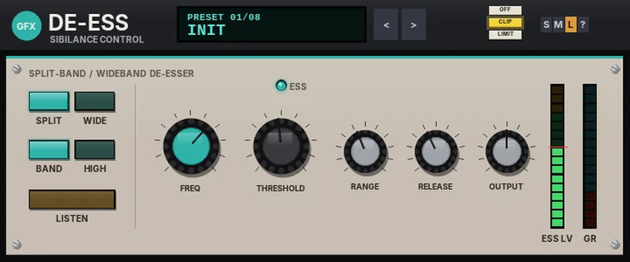
Overview
De-Ess listens only to the esses - a band around FREQ, or everything above it - and when that band goes over the threshold, it turns the sibilance down, by no more than RANGE. It reacts very fast (about 0.3 ms), so even short, sharp esses are caught.
In SPLIT mode only the esses band is turned down and the rest of the voice is untouched, which is the most transparent way to work. In WIDE mode the whole signal ducks on each ess, like the classic hardware boxes. One detector serves both channels, so the stereo image never shifts.
Reach for it for
- Sibilant lead and backing vocals
- Spoken word, voice-over and podcasts
- Fret squeak and harsh pick noise on acoustic guitar
- Splashy hi-hats and cymbals in a drum overhead (HIGH shape)
- Taming a bright vocal after heavy compression or EQ
Controls
Mode and shape
- SPLIT
- Only the esses band is turned down; the rest of the voice is untouched. Transparent - the default.
- WIDE
- The whole signal ducks on each ess, like the classic hardware boxes. Can sound more natural on some voices, but is easier to hear working.
- BAND
- The detector listens to a band around FREQ, and in SPLIT mode a dip around FREQ is what turns down. Best for a voice whose esses sit in one place.
- HIGH
- The detector listens to everything above FREQ, and in SPLIT mode a high shelf dips everything above FREQ. Best for broad, airy sibilance and cymbals.
- LISTEN
- Hear what the detector hears - just the esses band. Use it to tune FREQ onto the esses, then switch it off.
Knobs
Each knob's value shows while you hover over it or drag it; while dragging, the display in the top strip also shows the control's name and value.
- FREQ
- Where the esses are, 2 - 12 kHz (starts at 6.5 kHz). Lower for male voices, higher for female voices and cymbals.
- THRESHOLD
- The level of the esses band where De-Ess starts working, -50 to 0 dB. Turn it down for more de-essing. Above the threshold it works at about 5:1, with a soft 6 dB knee.
- RANGE
- The most it will ever turn the esses down, 0 - 24 dB. Keeps it from lisping on loud esses.
- RELEASE
- How quickly the esses band comes back after each ess, 20 - 300 ms.
- OUTPUT
- Output level, -12 to +12 dB.
Lamp and meters
- ESS
- The teal lamp lights while De-Ess is turning the esses down (by more than half a dB).
- ESS LV
- The level of the esses band (bottom -60 dB, top 0 dB). The red line marks THRESHOLD: when the lights pass it, De-Ess is working.
- GR
- How much the esses are being turned down, lit from the top, up to 24 dB.
The top strip
- Preset display
- Shows the preset number and name. Click it to open the preset list.
- < and >
- Step to the previous or next preset.
- OFF / CLIP / LIMIT
- The final stage: nothing, a soft clipper at -0.3 dBFS (no latency), or a lookahead limiter that holds the peaks at -0.3 dBFS (3 ms latency, compensated by REAPER). CLIP is on by default; its key flashes red while it is clipping.
- S / M / L
- Panel size: small, medium or large. A new De-Ess opens at L. The panel also scales to fit the plugin window.
- ?
- Opens a pop-up with the design credit, the GFX website address and the address of this manual. Click anywhere to close it.
De-Ess has no input stage: there is no TRIM, GUARD or SAT.
Presets
A preset sets the mode, shape, FREQ, THRESHOLD, RANGE and RELEASE, and switches LISTEN off. OUTPUT and the OUT stage are left as they are.
- Init
- The starting point: SPLIT, BAND at 6.5 kHz, -26 dB threshold, 10 dB range, 60 ms release.
- Female Vocal
- SPLIT, BAND at 7.5 kHz with a quicker 50 ms release.
- Male Vocal
- SPLIT, BAND at 5.5 kHz, slightly gentler, 70 ms release.
- Gentle Air
- SPLIT, HIGH above 9 kHz with only 6 dB of range - softens the top without dulling it.
- Hard Esses
- WIDE, BAND at 6.5 kHz with a low threshold, 16 dB of range and a fast release, for very sharp sibilance.
- Acoustic Guitar
- SPLIT, BAND at 4.5 kHz, 6 dB range and a slow release, for string and pick noise.
- Hats and Cymbals
- SPLIT, HIGH above 10 kHz, 8 dB range.
- Podcast Voice
- SPLIT, BAND at 6 kHz with a low threshold and 12 dB of range for steady spoken word.
Tips
- Switch LISTEN on and sweep FREQ until the esses sound loudest and harshest, then switch LISTEN off and set THRESHOLD.
- Watch the ESS LV meter: set THRESHOLD so only the esses cross the red line, not the rest of the words.
- If the voice starts to lisp, lower RANGE rather than raising THRESHOLD.
- Put De-Ess after compression and bright EQ, which both tend to bring the esses up.
- Use SPLIT for transparency; try WIDE when SPLIT makes the esses sound dull or hollow.
File: gfx-de-ess.jsfx
Duplex
A two-channel compressor, de-esser and peak limiter for stereo, dual-mono or mid-side work.
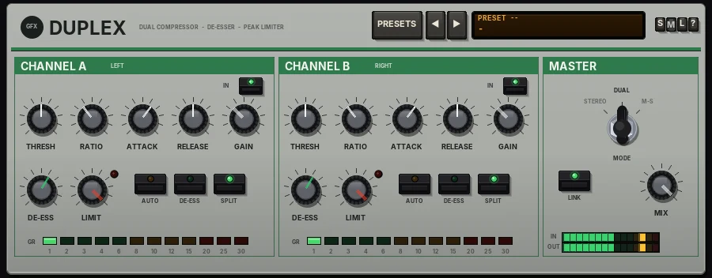
Overview
Duplex is a dual-channel dynamics processor in the spirit of the classic 80s British two-channel units. Each channel is a clean VCA compressor with a gentle 6 dB soft knee, a frequency-conscious de-esser and a separate fast peak limiter.
The two channels can work three ways. In STEREO, channel A runs both sides together. In DUAL, A handles the left side and B the right. In M-S, A handles the mid (the centre of the image) and B the side (the edges), so you can compress the middle and the width separately.
The detector measures the average level over a few milliseconds rather than single peaks. AUTO timing follows the music: the attack speeds up the further the signal goes over, and the release lets go quickly after short peaks and slowly after long passages of compression.
Reach for it for
- Vocals: compression and de-essing in one place
- Gentle glue on a stereo bus
- Taming sibilance with SPLIT de-essing
- Compressing the centre and the sides of a mix separately (M-S)
- Dual-mono work on two unrelated sources
- Parallel drum compression
Controls
CHANNEL A and CHANNEL B
The two channels have the same controls. The label beside each name shows its job in the current MODE: BOTH SIDES, LEFT or RIGHT, MID or SIDE. In STEREO mode channel B rests and its panel says so.
- IN
- Switches the channel in or out. With it out, the audio passes straight through that channel.
- THRESH
- The level where compression starts, -40 to 0 dB (-20 dB by default).
- RATIO
- How strongly the channel compresses, 1:1 to INF:1 (3:1 by default). Fully right is INF:1 - limiting.
- ATTACK
- 0.1 to 50 ms (5 ms by default). Reads AUTO when AUTO is on.
- RELEASE
- 20 ms to 2 s (200 ms by default). Reads AUTO when AUTO is on.
- GAIN
- Make-up gain, -10 to +20 dB.
- DE-ESS (knob)
- The de-ess frequency, 2 to 12 kHz (6 kHz by default).
- LIMIT
- A separate fast peak limiter after the compressor, -24 to 0 dB: instant attack, 50 ms release. Fully right (0 dB) is OFF. The red light beside it shows it working.
- AUTO
- Program-dependent timing, replacing ATTACK and RELEASE: the further over the threshold, the faster the attack; the release is quick after short peaks and slows down after long passages of compression.
- DE-ESS (button)
- The compressor listens only above the DE-ESS frequency, so it reacts to sibilance rather than to the whole voice.
- SPLIT
- On by default; used with DE-ESS. The gain reduction is applied only above the de-ess band (the split sits at three-quarters of the DE-ESS frequency, so the whole ess band is caught): the esses come down and the body of the voice is untouched. Off: the whole signal is turned down, as on the original units.
- GR
- The row of 12 lights under each channel shows its gain reduction (compressor and limiter together), from 1 to 30 dB.
MASTER
- MODE
- STEREO: channel A runs both sides, with one shared detector. DUAL: A = left, B = right. M-S: A = mid, B = side.
- LINK
- Always lit in STEREO. In DUAL and M-S it is a switch (on by default): the two detectors share the louder level, so the image stays put, and the two channels' controls are ganged - turning one moves the other by the same amount, and any offset you set while unlinked is kept.
- MIX
- Parallel compression, 0 to 100% (shown as WET): blends the dry signal back in. 100% is fully processed.
- IN / OUT meters
- Input and output level. Click them to reset the peak hold.
The header
- PRESETS
- Opens the list of factory presets (or click the preset display). The ◄ / ► keys step through them. Choosing one sets both channels and the MASTER section. The last entry resets everything to the defaults.
- S / M / L
- Panel size: small, medium or large. The panel also scales to fit the plugin window.
- ?
- Opens a pop-up with the design credit, the GFX website address and the address of this manual. Click anywhere to close it.
Duplex has no input or output fold-out. An input guard is on by default, gently easing very hot sources down towards about -18 dBFS average and catching fast peaks above -6 dBFS; it can be switched off from REAPER's parameter list (Input guard).
Presets
- Gentle Stereo Bus
- STEREO, 2:1 at -24 dB with AUTO timing and 3 dB of gain.
- Vocal Compressor
- STEREO, 3:1 at -28 dB, 5 ms attack, 180 ms release, the limiter at -3 dB.
- De-esser (split)
- STEREO, a fast 6:1 de-esser at 6.5 kHz with SPLIT, so only the esses come down.
- Broadcast Voice
- STEREO, 4:1 with wideband de-essing at 5 kHz and the limiter at -2 dB.
- Dual Mono Pair
- DUAL, unlinked, the same 3:1 AUTO settings on each side.
- M-S Glue
- M-S, unlinked: gentle 2.5:1 on the mid, firmer 4:1 on the sides to hold them in.
- M-S Widen + Tame Sides
- M-S, unlinked: gentle AUTO compression on the mid, a 7 kHz split de-esser on the sides with 3 dB of gain.
- Brickwall Safety
- STEREO, INF:1 at -12 dB with a 0.3 ms attack and the limiter at -1 dB.
- Parallel Drums
- STEREO, 10:1 at -36 dB with 12 dB of gain, blended in at 40% mix.
- Bass Leveller
- STEREO, 4:1 with AUTO timing, 4 dB of gain and the limiter at -2 dB.
- Reset all to defaults
- Every control back to its starting value.
Tips
- For de-essing, switch DE-ESS on, sweep the DE-ESS knob until the GR lights react mostly to the esses, then set THRESH so they come down by a few dB.
- Leave SPLIT on for vocals: only the top end is turned down, so the voice doesn't dip on every 's'.
- In M-S, a little extra GAIN on channel B (side) widens the mix; compressing B harder than A holds the edges in.
- With LINK on in DUAL or M-S, set one channel and the other follows; switch LINK off to give the two channels different settings, then switch it back on to move them together.
File: gfx-duplex.jsfx
Duplex Q
A two-channel compressor, de-esser and peak limiter with a tilt EQ and filters.
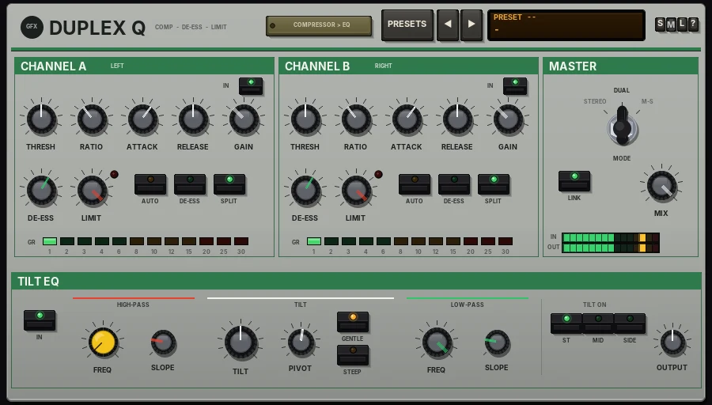
Overview
Duplex Q is a dual-channel dynamics processor in the spirit of the classic 80s British two-channel units, with a tilt EQ and high- and low-pass filters added underneath. Each channel is a clean VCA compressor with a gentle 6 dB knee, a frequency-conscious de-esser and a separate fast peak limiter.
The two channels can run a stereo signal together, work as two independent mono channels (left and right), or work in mid-side, so you can compress the centre of a mix and its edges separately. LINK keeps the stereo image steady and gangs the two channels' controls.
ORDER puts the EQ after the compressors or in front of them. The two units swap places on screen, so the top one is always the one the signal meets first.
Reach for it for
- Vocal compression and de-essing in one place
- Stereo bus glue, or separate control of mid and sides
- Two different mono sources on one plug-in (DUAL)
- A peak safety limiter after the compression
- Quick tonal balancing with TILT and the filters
Controls
CHANNEL A and CHANNEL B
The two channels have the same controls. The label beside each name shows what the channel is working on: BOTH SIDES, LEFT / RIGHT or MID / SIDE. In STEREO mode Channel A runs both sides and Channel B rests (its panel says so).
- IN
- Switches the channel in or out.
- THRESH
- The level where compression starts, from -40 to 0 dB (-20 dB by default). The detector measures the average (RMS) level over about 3 ms.
- RATIO
- From 1:1 up to INF:1 (fully right), 3:1 by default.
- ATTACK
- From 0.1 to 50 ms (5 ms by default). Shows AUTO when AUTO is on.
- RELEASE
- From 20 to 2000 ms (200 ms by default). Shows AUTO when AUTO is on.
- GAIN
- Make-up gain, from -10 to +20 dB.
- DE-ESS (knob, green pointer)
- The de-ess frequency, from 2 to 12 kHz (6 kHz by default).
- LIMIT (red pointer)
- A separate fast peak limiter after the compressor, from OFF (fully right, 0 dB) down to -24 dB: the level the peaks are held at. It reacts instantly and recovers in about 50 ms. The red light beside it shows it working.
- AUTO
- Program-dependent timing: the attack gets faster the further the signal goes over the threshold, and the release lets go quickly after short peaks and slowly (up to about a second) after long passages of compression.
- DE-ESS (key)
- The compressor listens only to what lies above the DE-ESS frequency, so it reacts to sibilance.
- SPLIT
- With DE-ESS on: the gain reduction is applied only above the de-ess frequency (the split sits at three-quarters of it, so the whole ess band is caught), and the body of the voice is untouched. Off: the whole signal is turned down, as on the original units. On by default.
- GR
- Twelve lights under each channel showing its gain reduction, from 1 to 30 dB, including the limiter.
MASTER
- MODE
- STEREO: Channel A runs both sides (Channel B rests). DUAL: A = left, B = right. M-S: A = mid, B = side. Click a name, click the knob to step, or use the mouse wheel.
- LINK
- In DUAL and M-S, the two channels' detectors share the louder level so the image stays put, and their controls are ganged: turning one moves the other by the same amount, and any offset you set while unlinked is kept. Switches copy across. In STEREO it is always lit, as one detector already runs both sides.
- MIX
- Parallel compression, shown as WET 0 - 100: blends the dry signal back in. 100 is fully compressed.
- IN / OUT meters
- Input and output level, with a floating peak hold. Click a meter to clear the hold.
TILT EQ
- IN
- Switches the filters and the tilt in or out.
- HIGH-PASS FREQ
- From OFF (fully left, 10 Hz) up to 1 kHz.
- HIGH-PASS SLOPE
- 6, 12, 18, 24, 36 or 48 dB per octave (12 dB by default).
- TILT
- Tilts the whole spectrum around the pivot, from -6 to +6 dB at each end: positive brightens (more top, less bottom), negative darkens.
- PIVOT
- The frequency the tilt turns around, from 100 Hz to 5 kHz (800 Hz by default).
- GENTLE / STEEP
- The shape of the tilt. GENTLE: a broad first-order slope across the whole range. STEEP: a firmer shelf that changes more quickly around the pivot.
- LOW-PASS FREQ
- From 1 kHz up to OFF (fully right, 22 kHz).
- LOW-PASS SLOPE
- 6, 12, 18, 24, 36 or 48 dB per octave (12 dB by default).
- TILT ON: ST / MID / SIDE
- Where the tilt works: the whole stereo signal, the mid (centre) only, or the side only. The filters always work on both sides.
- OUTPUT
- The EQ unit's output level, from -12 to +12 dB.
The header
- ORDER
- One key: COMPRESSOR > EQ (the default) or EQ > COMPRESSOR. The units swap places on screen. Its amber light shows while you hold it.
- PRESETS
- Opens the list of factory presets (a click on the display does the same); the ◄ / ► keys step through them. Choosing one sets the two channels and the MASTER section; the EQ is left as it is. The last entry resets both channels and the MASTER section to their defaults.
- S / M / L
- Panel size: small, medium or large. The panel also scales to fit the plugin window.
- ?
- Opens a pop-up with the design credit, the GFX website address and this manual's address. Click anywhere to close it.
Knob values appear while you touch a knob. A built-in input guard eases very hot sources down before the compressors, so loud sources never overdrive the plugin; it never boosts quiet ones.
Presets
- Gentle Stereo Bus
- 2:1 at -24 dB with AUTO timing and +3 dB of gain, linked.
- Vocal Compressor
- 3:1 at -28 dB, 5 ms attack, 180 ms release, the limiter at -3 dB.
- De-esser (split)
- 6:1 de-essing above 6.5 kHz with a fast attack, SPLIT on.
- Broadcast Voice
- 4:1 at -26 dB with wideband de-essing at 5 kHz and the limiter at -2 dB.
- Dual Mono Pair
- DUAL mode, unlinked: two independent 3:1 channels with AUTO timing.
- M-S Glue
- M-S mode, unlinked: the mid gently at 2.5:1, the sides held harder at 4:1.
- M-S Widen + Tame Sides
- M-S: light AUTO compression on the mid, the sides lifted 3 dB with de-essing at 7 kHz.
- Brickwall Safety
- INF:1 at -12 dB with a 0.3 ms attack and the limiter at -1 dB.
- Parallel Drums
- 10:1 at -36 dB with +12 dB of gain, blended in at 40%.
- Bass Leveller
- 4:1 at -24 dB with AUTO timing and the limiter at -2 dB.
- Reset all to defaults
- Both channels and the MASTER section back to their starting values; the EQ is left as it is.
Tips
- For a vocal, compress on Channel A, then switch on DE-ESS with SPLIT and set the frequency where the esses are loudest - start around 5 - 7 kHz.
- In M-S, compress the side channel a little harder than the mid to steady a wide mix, or lift its GAIN to widen it.
- Use the LIMIT knob as a safety net: set it a few dB under your loudest peaks and watch for the red light.
- Put the EQ first (EQ > COMPRESSOR) when you use the high-pass to stop the low end driving the compressor; put it last for final tonal shaping.
File: gfx-duplex-q.jsfx
Gate
An analogue-modelled gate, expander and ducker with a filtered key input, lookahead and MIDI triggering.

Overview
Gate is three tools in one rack unit. As a GATE it shuts the signal down by a set amount whenever it falls below the threshold - for tightening drums and cleaning up noise between phrases. As an EXPANDER it turns quiet passages down gradually, at a ratio, which is gentler and more natural. Flip either one to DUCK and the curve turns upside down: the signal is pulled down whenever the key is loud, for ducking music under a voice or a bass under a kick.
The gain moves like an analogue VCA: opening is fast and then settles, and the release is a natural exponential fade. HOLD keeps the gate open for a moment after the level drops, and HYSTERESIS makes it close a few dB lower than it opens, so decaying notes don't make it chatter.
What the gate listens to (the key) can be the input itself or a separate signal on channels 3/4, and it can be filtered with a high-pass, a low-pass and a focus bell, so the gate only responds to the part of the sound you want. Held MIDI notes can also open the gate, for rhythmic chopping in time with a MIDI part.
Reach for it for
- Tightening kick, snare and toms, and cutting spill between hits
- Removing hiss, hum and amp noise between phrases
- Gentle downward expansion on vocals, dialogue and room mics
- Ducking music or a bass under a voice or kick (DUCK with EXT key)
- 80s gated reverb and rhythmic MIDI-triggered chopping
Controls
Presets and size (top left)
- Display
- Shows the preset number and name. While you move a control it shows that control's name and value for a moment. Click it for the preset list.
- PRESETS
- Opens the list of factory presets.
- ◄ / ►
- Step to the previous or next preset (wrapping round).
- SIZE S / M / L
- Panel size: small, medium or large. The panel also scales to fit the plugin window.
- ?
- Opens a pop-up with the design credit, the GFX website address and the address of this manual. Click anywhere to close it.
Displays
- Level history
- A scrolling picture of the last few seconds, from 0 to -80 dB. The dark fill is the input level, the green OUT line the output, the amber GAIN line the gain the gate is applying. The red line is the threshold; the dashed red line under it is where the gate closes (THRESHOLD minus HYSTERESIS). A blue KEY line appears when the key differs from the input (EXT key, key filters or a non-linked stereo mode). The green bar along the bottom marks when the gate was OPEN (or DUCKED).
- Transfer curve
- The input-to-output curve. The bright branch is the opening curve, the dim one the closing curve (the gap between them is the hysteresis). The amber dot rides on it with the live level. With the EXT key, it shows the gain against the key level instead.
- METERS
- IN (left and right), GR (gain reduction of each side, or mid and side in M/S) and OUT (left and right).
- GATE lights
- Two green lights show when each detector is open (L+R in LINK mode, L and R in DUAL, M and S in M/S). MIDI lights while a MIDI note holds the gate, LSTN while LISTEN is on.
Mode buttons
- MODEL: GATE / EXP
- GATE: when the key is above the threshold the gate is fully open; below it, the signal drops by RANGE. EXP: a downward expander - below the threshold the gain falls at RATIO (at 1:2, 1 dB under the threshold gives 2 dB less output), limited to RANGE.
- FUNCTION: NORM / DUCK
- NORM: classic gating or expansion. DUCK: the same curve flipped - when the key goes above the threshold, the signal is pulled DOWN by RANGE.
- KNEE: HARD / SOFT
- HARD: a clean switch at the threshold. SOFT: on the GATE, the gate part-opens over the 12 dB below the threshold; on the EXP, the ratio eases in over 10 dB. Softer and less obvious.
- STEREO: LINK / DUAL / M/S
- LINK: one detector (the louder channel) drives both sides, so the image stays put. DUAL: independent left and right gates. M/S: independent mid and side gates (the key is split into mid and side too).
- Latency readout
- Shows ZERO LATENCY, or the lookahead time in ms when LOOKAHEAD is in use.
DYNAMICS
- THRESHOLD
- The level where the gate opens, -80 to 0 dB (-40 dB by default).
- RANGE
- How far the signal is turned down when the gate is shut (or ducked), 0 to 80 dB (60 dB by default). Small amounts (10 - 20 dB) keep some of the sound and are more natural.
- RATIO
- The expansion ratio, 1:1 to 1:10 (1:2 by default). Used only in EXP; in GATE mode the knob is greyed and reads GATE.
- ATTACK
- How fast the gate opens (or the duck pulls down), 0.01 to 100 ms; the time is roughly to 95% of the way.
- HOLD
- How long the gate stays open after the key drops below the close threshold, 0 to 2000 ms (50 ms by default).
- RELEASE
- How fast the gate closes (or the duck recovers), 5 to 4000 ms (150 ms by default), as a natural exponential fade.
- HYSTERESIS
- The gate opens at THRESHOLD and closes at THRESHOLD minus this amount, 0 to 20 dB (4 dB by default). Stops chatter on decaying notes.
- LOOKAHEAD
- 0 to 10 ms. The audio is delayed so the gate can open just before a hit arrives, keeping the transient intact. 0 reads ZERO and adds no latency; any other value is reported to REAPER, which compensates for it.
KEY
- INT / EXT
- INT: the gate listens to its own input. EXT: it listens to the key input on channels 3/4 (see below).
- MIDI
- When on, held MIDI notes force the gate open (or the duck down). Channel 1 works on both sides, channel 2 on the left (or mid), channel 3 on the right (or side). MIDI is passed through to the next plugin.
- LISTEN
- Plays the filtered key instead of the output, so you can hear what the gate is listening to while you set the filters.
- HPF (yellow cap)
- A high-pass filter on the key only, 20 Hz (OFF) to 5 kHz. Raise it so low spill (e.g. kick in a snare mic) doesn't open the gate.
- LPF
- A low-pass filter on the key only, 100 Hz to 20 kHz (fully right = OFF). Lower it so cymbals and hats don't open a kick or tom gate.
- FOCUS
- The centre of a bell filter on the key, 100 Hz to 10 kHz. Greyed while F.GAIN is at 0.
- F.GAIN
- Boost or cut of the focus bell, -12 to +12 dB. Boost to make the gate more sensitive to the instrument's main frequency.
- LINK
- In DUAL and M/S: how far each detector is pulled towards the louder side, 0 to 100%. 100% behaves like linked; 0% is fully independent. In LINK mode it is greyed and reads FULL.
MASTER
- MIX
- Blends the dry signal back in, 0 to 100%. 100% is the full effect; lower settings make the gate's cut shallower.
- OUTPUT
- Output level, -24 to +12 dB.
Knobs: drag up or down (Shift for fine moves); double-click or Ctrl-click to reset a knob to its default. Values show while you hover or drag.
Presets
A preset sets the dynamics, the mode buttons, the key section, MIX and OUTPUT, and switches LISTEN off.
- Init
- Every control back to its default.
- Kick Tight
- Fast gate with 2 ms lookahead; the key is filtered to 30 - 400 Hz with a boost at 80 Hz.
- Snare Crack
- Very fast gate, 40 dB range and 1.5 ms lookahead; key focused on 2 kHz.
- Tom Cleanup
- Soft-knee gate with a longer hold and release for ringing toms; key focused around 120 Hz.
- Hi-Hat Clean
- Short, fast gate with the key high-passed at 4 kHz.
- Vocal Breath
- Soft 1:2 expander that takes 12 dB off breaths and room noise.
- Guitar Noise
- Soft-knee gate at -55 dB to remove amp hiss between phrases.
- Bass DI
- 1:3 expander for a DI bass, with a 200 ms release.
- Gentle Expander
- A light 1:1.5 soft expander with up to 15 dB of reduction.
- Room Mic Tame
- Soft 1:2.5 expander to pull room mics down between hits.
- Dialogue Clean
- Soft expander for speech, key focused on the voice around 2.5 kHz.
- Kick Duck (Ext Key)
- Ducks the signal by 9 dB from a kick on the key input (low-passed at 200 Hz).
- Voice-Over Duck (Ext Key)
- A slow 1:4 expander-ducker that lowers music by up to 12 dB under a voice on the key input.
- Gated Reverb 80s
- Hard gate with a 250 ms hold and a fast 40 ms release: the classic chopped reverb tail.
- MIDI Chop
- Threshold at 0 dB and MIDI on: only held MIDI notes open the gate.
- Lookahead Drum
- Very fast gate with 5 ms lookahead so the transients stay whole.
Using the key input (EXT)
- On the track with Gate, open ROUTE and set the track to 4 channels.
- On the track you want to key from (e.g. the kick or the voice), add a send to Gate's track and set its destination to channels 3/4.
- Click EXT. Use LISTEN to check you can hear the key, set the key filters, then switch LISTEN off.
- Set THRESHOLD so the key crosses it; with DUCK, adjust RANGE for how far the signal dips.
Using MIDI triggering
- Put Gate on the audio track you want to chop, and make sure it receives MIDI: either a MIDI item on the same track before Gate, or a MIDI send from another track.
- Click MIDI in the KEY section. Notes on channel 1 open both sides; channels 2 and 3 open left and right (mid and side in M/S) separately.
- Turn THRESHOLD to 0 dB if you want only the MIDI notes to open the gate, not the audio itself.
Tips
- Set HYSTERESIS to a few dB before reaching for a longer HOLD: it stops chatter without keeping the gate open too long.
- For natural results on vocals and rooms, use EXP with a soft knee and 10 - 20 dB of RANGE rather than a full gate.
- Use the key filters with LISTEN: when you can hear only the drum you want in the key, the gate will only open for that drum.
- A few ms of LOOKAHEAD keeps the attack of fast drums intact even with a slow ATTACK setting.
File: gfx-gate.jsfx
Headsmoother
A tape saturator and an optical compressor as two stacked units, in either order.
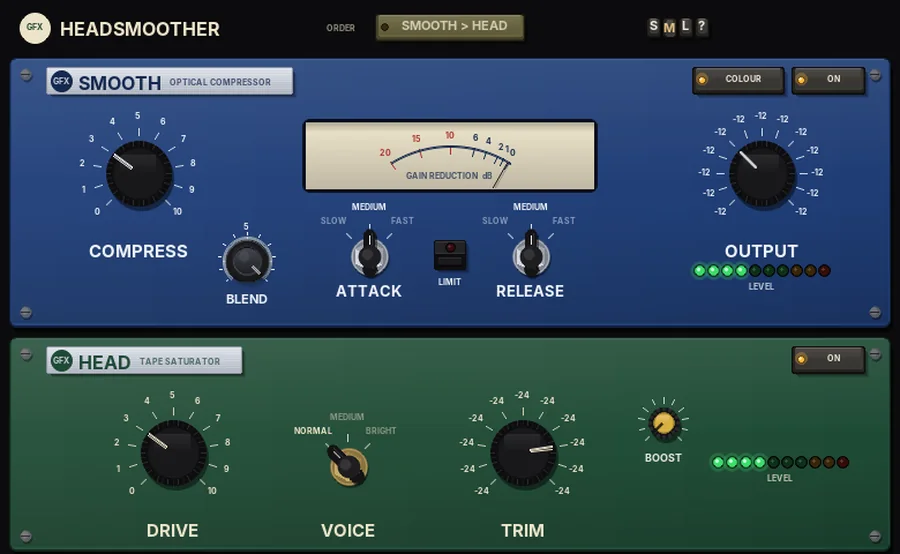
Overview
Headsmoother puts two units in one plug-in. HEAD is a tape saturator, the same as the Head plug-in. SMOOTH is an optical-style compressor with a valve-style colour stage. Each can be switched out on its own, and one key swaps their order.
The units swap places on screen when you change the order, so the top unit is always the one the signal meets first. Compress then saturate (SMOOTH > HEAD) for a controlled signal that gets tape colour on the way out; saturate then compress (HEAD > SMOOTH) to let the compressor level out what the tape adds.
SMOOTH behaves like an optical compressor: it listens to the average level (with the deep bass filtered out of what it hears), lets go quickly after short peaks and more slowly after long passages of compression. Like a real machine, the tape bias and top-end loss and the colour stage's drive wander slowly and independently on each side.
Reach for it for
- A one-stop vocal or bass channel: smooth levelling plus tape warmth
- Gentle, musical bus compression with colour
- Parallel optical compression with BLEND
- Hard levelling and peak control with LIMIT
Controls
The header
- ORDER
- One key that swaps the units. Its legend shows the order: SMOOTH > HEAD (the default: compress, then saturate) or HEAD > SMOOTH. Its amber light shows while you hold it down.
- S / M / L
- Panel size: small, medium or large. The panel also scales to fit the plugin window.
- ?
- Opens a pop-up with the design credit, the GFX website address and the address of this manual. Click anywhere to close it.
HEAD - tape saturator (green unit)
- ON
- Switches the unit in or out. The change fades over about 30 ms, so there is no click. The unit dims when it is out.
- DRIVE
- How hard the signal hits the tape curve, from 0 to 10 (3 by default) - up to +22 dB into the curve. The level is matched, so DRIVE changes the character, not the loudness. As it goes up, more of the low end (below about 250 Hz) skips the curve and rejoins clean, and the head bump around 70 Hz softens, so heavy settings stay tidy.
- VOICE
- NORMAL: flat, with tape's gentle top-end loss. MEDIUM: a broad lift around 1.4 kHz going into the curve, for body. BRIGHT: a high shelf going into the curve, so the top end saturates first. Click a name, click the knob to step, or use the mouse wheel.
- TRIM
- The tape unit's clean output level, from -24 to +6 dB.
- BOOST
- Extra colour, 0 to 100%. It makes the tape curve more lopsided (more even harmonics, a warmer tone) and brings in band saturation on the way out, where only the lows and highs are saturated and the mids stay clean. It only works while HEAD is on.
- LEVEL
- Ten lights showing the tape unit's output peak, from -30 dBFS up to 0.
SMOOTH - optical compressor (blue unit)
- ON
- Switches the unit in or out, with the same 30 ms fade. The unit dims when it is out.
- COLOUR
- Switches the valve-style colour stage after the gain cell: a soft, slightly lopsided saturation. Off gives clean compression. On by default.
- COMPRESS
- How much compression, from 0 to 10 (3 by default). It lowers the threshold from 0 down to -30 dB, so turning it up compresses more. The ratio is 3:1 with a wide, soft 12 dB knee.
- BLEND
- Parallel compression: 100% (the default) is fully compressed; lower settings blend the dry signal back underneath.
- GAIN REDUCTION meter
- A needle showing the gain reduction, from 0 to 20 dB.
- ATTACK
- SLOW (25 ms), MEDIUM (8 ms, the default) or FAST (1.5 ms).
- LIMIT
- Turns the compressor into a limiter: the ratio goes to 20:1, the knee narrows to 2 dB and the attack is twice as fast. Its red light shows when it is on.
- RELEASE
- SLOW (900 ms), MEDIUM (350 ms, the default) or FAST (90 ms). The first part of the recovery is quicker; after a long stretch of heavy compression the tail lets go more slowly, as on an optical cell.
- OUTPUT
- Make-up gain for the compressor, from -12 to +24 dB.
- LEVEL
- Ten lights showing the compressor unit's output peak, from -30 dBFS up to 0.
Double-click a large knob to return it to its default; hold Shift while dragging for fine moves. After both units the signal passes through a soft clipper set at -0.3 dBFS, so sudden peaks are caught.
Tips
- On vocals, start with SMOOTH > HEAD: COMPRESS around 3 - 5, MEDIUM attack and release, then add DRIVE to taste. Bring the level back with OUTPUT.
- For bass, try HEAD > SMOOTH: the tape adds harmonics that help it speak on small speakers, and the compressor evens out what the tape brings up.
- SLOW attack lets the front of each note through for punch; FAST catches it for a flatter, more controlled sound.
- For parallel compression, push COMPRESS hard and bring BLEND down to 30 - 50%.
File: gfx-headsmoother.jsfx
MK3
A broadcast channel strip: transformer input, stepped three-band EQ and a fast VCA compressor.
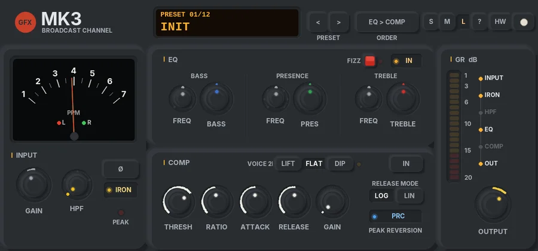
Overview
MK3 is a channel strip in the spirit of the 1970s British local-radio broadcast desks, with a VCA compressor in the spirit of the classic broadcast gain-riding units. The signal runs: input GAIN, phase, input transformer (IRON), high-pass filter, then the EQ and compressor in either order, the output transformer and OUTPUT.
The transformers colour the low end first: the band below about 180 Hz runs into core saturation, so pushing GAIN thickens the bottom before anything else. The EQ has stepped frequencies, like the desk modules, plus FIZZ, a broadcast-style exciter that holds a steady layer of air under the programme.
The compressor is peak-sensing with a fast attack, a small fixed knee and ratios up to infinity. Its release follows the music: spiky material releases faster, dense material slower. Two extras borrowed from broadcast practice - peak reversion correction and the VOICE 2k bell - keep heavy compression from sounding thin or dull.
Reach for it for
- Speech and presenter voice: levelled, clear and forward
- Phone-in and telephone-style tidying
- Drum bus and snare grab with a fast VCA
- Steady bass and broadcast-style piano or acoustic guitar
- Transformer warmth on anything (IRON and GAIN)
Controls
PPM
- PPM
- A stereo peak programme meter on the output, black face with marks 1 to 7: red needle left, green needle right. 4 is -18 dBFS (alignment) and 6 is -10 dBFS; the marks are 4 dB apart (6 dB between 1 and 2). The needles rise quickly and fall back 24 dB in 2.8 seconds.
INPUT
- GAIN
- Input gain, -20 to +30 dB. It drives the transformers too, so with IRON in, more GAIN means a thicker, more saturated bottom end.
- HPF
- A stepped 12 dB per octave high-pass filter: OFF, 40, 63, 100 or 160 Hz. Clears rumble and proximity boom before the EQ and compressor.
- Ø
- Inverts the polarity of the signal.
- IRON
- Switches the input and output transformers in or out (in by default). The input transformer saturates the lows first; the output one is lighter.
- PEAK
- Lights when the signal after GAIN and the input transformer peaks above -3 dBFS.
EQ
Three bands with stepped frequencies. Each band has a small grey FREQ knob and a larger gain knob.
- BASS FREQ / BASS
- A low shelf at 50, 100 or 200 Hz, -15 to +15 dB.
- PRESENCE FREQ / PRES
- A bell at 700 Hz, 1, 1.4, 2, 2.8, 4 or 5.6 kHz, -12 to +12 dB.
- TREBLE FREQ / TREBLE
- A high shelf at 5, 8 or 12 kHz, -15 to +15 dB.
- FIZZ
- The broadcast 'cut-through' top. An exciter makes new harmonics from everything above 3 kHz, shapes them round 8 kHz and holds them at a steady level about 26 dB under the programme, so the air stays constant and a voice cuts through. It runs in parallel (only the new harmonics are added) and works only when the EQ is IN. The LED shows when it is on.
- IN
- Switches the EQ in or out (in by default).
COMP
- THRESH
- The level where compression starts, -40 to 0 dB (-12 dB by default).
- RATIO
- 1:1 to 20:1; fully right reads INF:1, which is limiting.
- ATTACK
- 0.1 to 50 ms (2 ms by default).
- RELEASE
- 20 ms to 3 s (250 ms by default). The release is programme dependent: the compressor watches how spiky the material is and releases faster on spiky material and slower on dense material (from 0.4 to 2.5 times the set value).
- GAIN
- The compressor's make-up gain, 0 to 24 dB.
- VOICE 2k: LIFT / FLAT / DIP
- A wide bell at 2 kHz (about two octaves) in front of the compressor's detector, whose depth follows the gain reduction: 0.25 dB for every dB of reduction, up to 4 dB. LIFT raises the voice band as it compresses, so a hard-working compressor doesn't dull the voice; DIP sinks it; FLAT (default) leaves it alone. The lamp brightens as the bell comes in.
- RELEASE MODE: LOG / LIN
- LOG (default): an exponential recovery, fast at first and then easing in. LIN: a steady recovery of 10 dB per release time.
- PRC (PEAK REVERSION)
- Peak reversion correction, on by default. Under heavy gain reduction it adds back the low end that compression tends to lose, with a gentle shelf around 150 Hz of up to +4 dB that follows the gain reduction.
- IN
- Switches the compressor in or out (out by default).
Gain reduction, signal flow and output
- GR dB
- A column of 20 lights showing the compressor's gain reduction, 1 to 20 dB (amber, red from 16 dB).
- Signal flow
- INPUT, IRON, HPF, EQ, COMP and OUT listed in the order the signal takes; a stage's lamp is lit while it is in use. EQ and COMP swap places with ORDER.
- OUTPUT
- Output level, -24 to +12 dB.
- OUT: OFF / CLIP / LIMIT
- The final stage: nothing, a soft clipper at -0.3 dBFS (no latency, the default), or a lookahead brickwall limiter at -0.3 dBFS (3 ms latency, compensated by REAPER). CLIP flashes red while it is clipping.
The header
- Preset display
- Shows PRESET nn/12 and the preset's name. Click it for the full list. While you move a control, it shows that control's name and value for a moment.
- < / >
- Step to the previous or next preset.
- ORDER
- Swaps the EQ and the compressor: EQ > COMP (default) or COMP > EQ. The two units change places on the panel to match.
- S / M / L
- Panel size: small, medium or large.
- ?
- Opens a pop-up with the design credit, the GFX website address and the address of this manual. Click anywhere to close it.
- HW
- Switches between the hardware-style desk panel and the soft flat panel.
- Colour key
- The key with the round dot switches the panel between charcoal and cream.
Presets
- Init
- Every channel control back to its starting value, compressor out.
- Presenter Voice
- +6 dB gain, HPF 63 Hz, a 2.8 kHz presence lift and a little top; 4:1 compression with a 1 ms attack.
- Warm Voice-Over
- A touch of 50 Hz weight, 1.4 kHz dipped and 12 kHz air; gentle 3:1 compression.
- Interview Guest
- HPF 100 Hz, less low end, a 2 kHz lift; firmer 6:1 compression with a fast attack.
- Phone-In Tidy
- HPF 160 Hz, bass and top cut, 1.4 kHz pushed; heavy 8:1 compression with linear release, PRC off.
- Drum Bus Grab
- Low and high shelves up, 4:1 with a 5 ms attack and fast linear release.
- Snare Smack
- 200 Hz body and 4 kHz crack; 6:1 with an 8 ms attack to let the hit through, fast linear release.
- Bass Even
- HPF 40 Hz, 1 kHz dipped; 5:1 compression placed before the EQ (COMP > EQ).
- Acoustic Guitar
- Transformers out, low end trimmed and 12 kHz sparkle; gentle 2.5:1 compression.
- Piano Broadcast
- HPF 40 Hz, a little 12 kHz air; light 2:1 compression with a slow release.
- Brick Limit
- Transformers and EQ out; the compressor at INF:1 with a 0.1 ms attack as a limiter, PRC off.
- Iron Warmth
- +10 dB into the transformers for low-end thickness, compressor out, OUTPUT at -8 dB to compensate.
Tips
- The presets set the whole channel, including OUTPUT, but leave the OUT stage (OFF / CLIP / LIMIT) as it is.
- For broadcast-style speech, try VOICE 2k on LIFT with PRC on: the voice stays bright and full even when the compressor works hard.
- Put the compressor first (COMP > EQ) when you want the EQ's boosts to stay out of the compressor's way, as in Bass Even.
- Turn FIZZ on for a voice that has to cut through background music or noise; it adds a steady air rather than more level.
- Watch the PPM: keeping the needles around 4 to 6 puts the output around -18 to -10 dBFS.
File: gfx-mk3.jsfx
Quad11
A four-band bus compressor with an EQ and a saturator in every band.

Overview
Quad11 splits the signal into four bands - LOW, LO-MID, HI-MID and HIGH - and gives each its own bell EQ, compressor and saturator. The crossovers are steep (24 dB per octave) and the bands sum back flat, so with nothing switched on Quad11 is transparent. A master EQ sits on the whole bus ahead of the split.
Each band's compressor can also work the other way: turn THRESH above zero and it expands, lifting the peaks for extra punch. The level is made up automatically, so a band keeps its loudness while its peaks are held down or lifted. MIX blends the processed bus with the dry one for parallel compression, and the dry signal is kept exactly in time with the bands, so the blend is clean.
Reach for it for
- Mix bus and master glue, band by band
- Drum bus punch and parallel smash
- Taming harshness and esses on vocals without dulling the rest
- Tightening a bass without squashing its top
- Lifting transients (expansion) or adding tape-style warmth per band
Controls
Display
- Response curve
- The combined frequency response of the master EQ and the four band EQs, from 20 Hz to 20 kHz, -15 to +15 dB.
- Crossover lines
- The three splits between the bands. Drag a line to move it. The lowest can go down to 30 Hz, the highest up to 16 kHz, and the splits stay at least a quarter of their frequency apart.
- Band dots
- One dot per band in its colour: drag it to set the bell's frequency and gain; use the mouse wheel on it to change its width. Hovering shows the frequency, gain and Q.
- Gain reduction
- Each band's area is tinted, and its gain reduction (or expansion) hangs from the top.
MASTER EQ
Filters and shelves on the whole bus, ahead of the split.
- HPF
- A high-pass filter from OFF (fully left) up to 500 Hz.
- LO FREQ / LO SHELF
- A low shelf: its corner from 30 to 500 Hz and its gain, -12 to +12 dB.
- LPF
- A low-pass filter from 2 kHz up to OFF (fully right).
- HI FREQ / HI SHELF
- A high shelf: its corner from 2 to 16 kHz and its gain, -12 to +12 dB.
The four bands: LOW, LO-MID, HI-MID, HIGH
Each strip has the same controls, and shows the band's frequency range at the top right.
- SOLO
- Listen to this band on its own. Several bands can be soloed at once; while any band is soloed, MIX is ignored so you hear only the soloed bands, and SOLO ON shows in MASTER.
- BYP
- Lets the band through unprocessed (no EQ, compression or saturation).
- Gain-reduction bar
- Shows how much the band is being turned down (GR, up to 24 dB across the bar) or lifted (EXP, up to 6 dB).
EQ (per band)
- FREQ
- The bell's centre, 20 Hz to 20 kHz.
- WIDTH
- The bell's width (Q), 0.3 to 6. Higher is narrower.
- GAIN
- -12 to +12 dB.
COMPRESSOR (per band)
- THRESH
- From -48 to +48 dB; 0 is OFF. Turned left (COMP), it is the threshold in dBFS above which the band is compressed. Turned right (EXP), it lifts the peaks above minus that level (for example +18 lifts what goes over -18 dBFS), by up to 6 dB, for punch. Stereo-linked, with a 6 dB soft knee.
- RATIO
- How hard the compression or expansion works, 1:1 to 20:1.
- ATTACK FAST / SLOW
- How quickly the band reacts. The times suit each band: FAST is 10, 6, 3 and 1 ms from LOW to HIGH; SLOW is 40, 30, 20 and 10 ms.
- RELEASE FAST / SLOW
- How quickly the band recovers. FAST is 150, 120, 90 and 60 ms from LOW to HIGH; SLOW is 600, 450, 350 and 250 ms.
The make-up gain is automatic: it follows three quarters of the band's average gain change, slowly (over about 1.5 seconds), so the band keeps its loudness while the peaks are still held down or lifted.
SATURATION (per band)
- TAPE / TUBE / CLIP
- Click the key to step through the three types; its light is on while DRIVE is above zero. TAPE: a lopsided soft curve with even and odd harmonics. TUBE: one side gives way first - warmer, mostly even harmonics. CLIP: a hard knee, odd harmonics.
- DRIVE
- How hard the band is driven, 0 - 100% (up to +30 dB into the curve). It is level matched, so it changes the colour rather than the volume. While any band is driven the saturation runs at twice the sample rate to keep it clean.
- PRE / POST
- Where the saturation sits in the band (the light is on for PRE). PRE: saturation, then EQ, then the compressor - the compressor tames what the saturation adds. POST (default): EQ, compressor, then saturation - the compressor steadies the level going into the saturation.
INPUT
- TRIM
- Input level before anything else, from -24 to +12 dB. A single click on the knob (without dragging) switches GUARD on or off; its LED at the knob's upper right is dark when GUARD is off, red when it is on, and glows brighter while it is catching peaks.
- GUARD
- Off by default in this plugin. Gently eases very hot sources down towards about -18 dBFS average and catches fast peaks above -6 dBFS, so loud sources never overdrive the plugin. It never boosts quiet sources.
- IN meter
- The input level after TRIM and GUARD, with a floating peak. Click a meter to clear the peak.
MASTER
- MIX
- Parallel compression: blends the processed bus with the dry one, 0 - 100%. 100% is fully processed.
- OUTPUT
- Output level, -24 to +12 dB.
- SAT
- Band saturation on the way out, 0 - 100%: only the lows and highs are saturated (the mids stay clean), with a soft curve that loosens as the level rises.
- OFF / CLIP / LIMIT
- The final stage: nothing, a soft clipper (no latency), or a lookahead limiter that holds the peaks at -0.3 dBFS (3 ms latency, compensated by REAPER). The CLIP key flashes red while the clipper is working.
- OUT meter
- Output level, with a floating peak.
The header
- PRESETS, arrows and display
- PRESETS (or a click on the display) opens the list of factory presets; the ◄ / ► keys step through them. A preset sets the crossovers, the master EQ, all four bands and MIX; TRIM, GUARD, OUTPUT, SAT and the OUT stage are left as they are. The last entry resets everything to the defaults.
- S / M / L
- Panel size: small, medium or large. The panel also scales to fit the plugin window.
- ?
- Opens a pop-up with the design credit, the GFX website address and the address of this manual. Click anywhere to close it.
Presets
- Gentle Glue
- All four bands at -14 dB, 1.5:1, slow attack and release: light, even bus glue.
- Mix Bus Punch
- HPF at 25 Hz; 2:1 to 3:1 on every band with slow attack and fast release, and a little tape drive on the low band.
- Drum Bus Smash (parallel)
- Heavy, fast compression (-30 dB, 6:1) on every band, tape and clip saturation, a touch of low and high shelf, blended in at 45%.
- Transient Lift (expand)
- All bands expanding (THRESH above zero) with fast attack and release, to lift the hits.
- Vocal Control
- Bands split at 200 Hz, 2 kHz and 7 kHz, HPF at 80 Hz; firmer, faster compression on the upper bands to tame harshness and esses.
- Bass Tighten
- Bands split at 80 Hz, 250 Hz and 2 kHz; the two low bands compressed hard with tube drive before the EQ, a little low-mid cut, the top band left alone.
- De-Mud & Air
- A 3 dB cut at 350 Hz in the low-mid band, a lift at 12 kHz and an air shelf, with gentle compression throughout.
- Tape Warmth
- No compression: tape saturation on every band, more on the lows than the highs.
- Master Gentle
- Very light, slow compression (1.3:1 to 1.5:1) with a little tape drive on the low band.
- Parallel Crush
- Every band crushed (-36 dB, 10:1, fast) and clipped, blended in at 35%.
- Reset all to defaults
- Every control back to its starting value.
Tips
- Solo a band while you set its crossover lines, so you hear exactly what it holds.
- Start with THRESH just below where the band's GR bar starts moving, then raise RATIO until it sits.
- For a parallel bus, crush the bands hard and bring MIX down to 30 - 50% - the dry signal stays perfectly in time with them.
- Use PRE saturation when you want the compressor to smooth out the drive, POST when you want the drive to sit on a steady level.
- Expansion (THRESH above zero) on the low and hi-mid bands brings back the snap of over-compressed drums.
File: gfx-quad11.jsfx
RND
A clean VCA compressor and a levelling amplifier in one half-rack box.

Overview
RND is a half-rack compressor with two characters, in the spirit of the classic half-rack compressor pair. The MODE keys switch between them, and the panel changes colour to match: off-white for COMP, mustard for LEVEL.
COMP is a clean, transparent VCA compressor with true RMS detection. Its GENTLE switch puts three compressors in series in the side-chain - fast, medium and slow - each doing a third of the ratio, for smoother results on dense material without pumping.
LEVEL is a levelling amplifier: a softer onset, a two-stage optical-style release (a quick first part, then a slow tail that lengthens the longer it has been compressing), and gentle saturation and a little top-end softening that grow with the gain reduction. It runs at twice the sample rate to keep the saturation clean.
In both modes THRESHOLD is in dBu, where 0 dBu = -18 dBFS, and both channels are linked to the louder side so the stereo image stays put.
Reach for it for
- Transparent vocal and acoustic compression (COMP)
- Smooth, invisible levelling on dense mixes and buses (GENTLE)
- Warm, gently coloured levelling on vocals and bass (LEVEL)
- Parallel compression with MIX
Controls
Main knobs
- THRESHOLD
- The level where compression starts, from -40 to +20 dBu (0 dBu = -18 dBFS). Turn it down for more compression. The knee is soft.
- RATIO
- How strongly the level is reduced above the threshold, from 1:1 to 25:1 (3:1 by default).
- ATTACK
- How fast the compressor reacts, from 0.2 to 200 ms (10 ms by default). In LEVEL the onset is softened further.
- RELEASE
- How fast it lets go, from 0.05 to 5 s (0.3 s by default). In LEVEL this sets the two-stage release, or the linear release rate when LOG RELEASE is off.
- GAIN
- Make-up gain for the compressed signal, from 0 to +15 dB.
- MIX
- Parallel compression: blends the dry signal back in. 100% is fully compressed. In LEVEL the dry signal goes through the same oversampling filters as the saturated one, so the two stay in phase and there is no comb filtering at partial settings.
- GR
- Ten lights across the top showing the gain reduction, from 1 to 20 dB.
MODE
- COMP
- The clean VCA compressor.
- LEVEL
- The levelling amplifier, with its softer onset, optical-style release and saturation.
- GENTLE (COMP only)
- Three compressors in series in the side-chain, at staggered thresholds and speeds, each doing a third of the ratio; their reductions are added together. Smoother on dense material, with less pumping.
- LOG RELEASE (LEVEL only)
- On (the default): the release is exponential and two-stage - the first 40% of the reduction lets go quickly, then a slow tail that lengthens with how long it has been compressing. Off: a linear release, a steady number of dB per second.
Drift
One dial, 0 to 100% (50% by default), for a slow random wander like a real analogue box. 50% is the standard amount, 100% twice that, 0 none; higher settings also wander a little faster. What it moves depends on the mode.
- DRIFT in COMP
- The attack and release times wander slowly.
- DRIFT in LEVEL
- The saturation (its drive and asymmetry, separately on each side) and the "glue" - the knee width and how long the release remembers past compression - wander slowly.
IN / OUT
- TRIM
- Input level before anything else, from -24 to +12 dB.
- GUARD
- Click the TRIM knob once to switch it; the small red light at the knob's upper right shows it is on, and glows brighter while it is working. On by default. It gently eases very hot sources down towards about -18 dBFS average and catches fast peaks above -6 dBFS, so loud sources never overdrive the plugin. It never boosts quiet sources. (A double-click still resets TRIM.)
- SAT
- Band saturation on the way out: only the lows and highs are saturated (the mids stay clean), with a soft curve that loosens as the level rises.
- OFF / CLIP / LIMIT
- The final stage: nothing, a soft clipper at -0.3 dBFS (no latency, the default), or a lookahead limiter holding the peaks at -0.3 dBFS (3 ms latency, compensated by REAPER). The CLIP key flashes red while the clipper is working.
The header
- S / M / L
- Panel size: small, medium or large. The panel also scales to fit the plugin window.
- ?
- Opens a pop-up with the design credit, the GFX website address and the address of this manual. Click anywhere to close it.
Tips
- For transparent vocal control, use COMP with a ratio around 2:1 - 4:1 and a medium attack, and lower THRESHOLD until the GR lights show 3 - 6 dB on the loud phrases.
- Switch on GENTLE for buses and full mixes: it lets you compress more before the pumping becomes audible.
- LEVEL's saturation grows with the gain reduction, so the harder you compress, the warmer and softer it gets - drive it for colour, back it off for clean levelling.
- THRESHOLD is in dBu: 0 dBu sits at -18 dBFS, the usual average level of a well-recorded track, so 0 is a sensible starting point.
File: gfx-rnd.jsfx
Smooth
A smooth, clean optical-style compressor with one main knob.

Overview
Smooth is a clean compressor in the spirit of the classic one-knob software compressors. Turn COMPRESS up for more compression and set OUTPUT to taste: that is most of the job.
Its timing is optical-style: the release lets go quickly at first, then more slowly, and the longer the compression has been held, the slower it recovers. The detector ignores the deep lows, so the bass doesn't make it pump, and the gain is applied evenly across the spectrum, so the top end - the air - stays intact. A gentle valve-style colour stage follows the compressor.
Reach for it for
- Smoothing vocals without dulling them
- Gentle levelling on bass, acoustic guitar and keys
- Easy glue on a mix or group bus
- Hard, fast limiting of peaks (LIMIT)
- Parallel compression with BLEND
Controls
Main panel
- COMPRESS
- The main knob, 0 - 10 (3 by default). It lowers the threshold from 0 to -30 dB: turn it up for more compression.
- BLEND
- Dry / compressed mix, 0 - 100%, for parallel compression. 100% is fully compressed.
- Gain reduction meter
- The needle shows how much the compressor is turning the level down, 0 - 20 dB.
- ATTACK
- SLOW (25 ms), MEDIUM (8 ms, default) or FAST (1.5 ms). Click a label to pick it, or click the knob to step through. With LIMIT on, the attack is twice as fast.
- LIMIT
- Off: a soft, wide-knee 3:1 curve - transparent. On: a hard 20:1 curve with a faster attack, for catching peaks.
- RELEASE
- SLOW, MEDIUM (default) or FAST: the overall recovery speed. The first part of the reduction always lets go quickly; the rest takes longer, and longer still after heavy, sustained compression.
- OUTPUT
- Make-up gain, -12 to +24 dB.
- LEVEL
- The output level on ten lights, from -30 dBFS (green) to 0 dBFS (red).
Drift, input and output
- DRIFT
- The colour stage's drive and asymmetry wander slowly, independently on each side, 0 - 100% (50% is the standard amount, 100% twice that, 0% none). The wander also speeds up a little as you turn it up. Subtle: it moves the warmth, not the level.
- IN TRIM
- Input level before anything else, from -24 to +12 dB.
- GUARD
- Click the IN TRIM knob to switch it; its LED sits at the knob's upper right. On by default. Gently eases very hot sources down towards about -18 dBFS average and catches fast peaks above -6 dBFS, so loud sources never overdrive the plugin. It never boosts quiet sources. The LED glows brighter while it is working.
- SAT
- Band saturation on the way out: only the lows and highs are saturated (the mids stay clean), with a soft curve that loosens as the level rises.
- OFF / CLIP / LIMIT
- The final stage: nothing, a soft clipper at -0.3 dBFS (no latency), or a lookahead limiter (3 ms latency, compensated by REAPER). CLIP is on by default and flashes red when it clips.
Panel keys
- S / M / L
- Panel size: small, medium or large. The panel also scales to fit the plugin window.
- ?
- Opens a pop-up with the design credit, the GFX website address and the address of this manual. Click anywhere to close it.
In REAPER's parameter list only
- Drift amount / Drift speed
- The standard drift that DRIFT scales: how far the colour stage wanders (25% by default) and how fast (0.02 - 2 Hz, 0.25 Hz by default).
- Bias / Sat low band / Sat high band / Ceiling
- The rest of the output stage: the saturation's even-harmonic bias, where its low and high bands start (40 - 400 Hz and 2 - 16 kHz) and the clip ceiling or limiter threshold.
Tips
- Turn COMPRESS up until the meter shows 3 - 6 dB on the loud parts, then bring OUTPUT up to match the bypassed level.
- SLOW attack lets the front of each note through for a punchier, more natural sound; FAST holds everything steadier.
- For parallel compression, set COMPRESS high with LIMIT on and pull BLEND down to 30 - 50%.
- Because the detector ignores the deep lows, Smooth works well on full mixes without the bass making everything duck.
File: gfx-smooth.jsfx
Squish
A stompbox compressor with two characters - a squishy, gritty sustainer and a clean studio compressor - and a big BLEND knob for parallel compression.
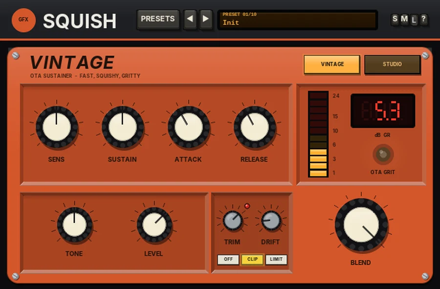
Overview
Squish is a pedal compressor with two modes, designed from scratch in the spirit of the classic orange and red guitar sustainer pedals and the modern boutique studio-style pedal compressors. Both modes share the same four controls - SENS, SUSTAIN, ATTACK and RELEASE - and the mode sets the character behind them. The pedal turns orange-red for VINTAGE and steel blue for STUDIO.
VINTAGE is the sustainer: strong ratios, an aggressive squish and a release that stretches out on long, heavy compression, so it holds notes without pumping. Hit it hard and it adds a little lopsided grit, while quiet playing stays clean. STUDIO is a clean, transparent compressor with gentler ratios and a steadier release.
BLEND, the big knob, mixes the dry signal back under the compressed one, so you can keep your pick attack while the notes sustain. Make-up gain is automatic, and there is no latency (with OFF or CLIP on the output), so it is safe for live guitar monitoring.
Reach for it for
- Country and funk guitar with that squashed, clucky attack
- Long, singing lead sustain
- Even, punchy bass
- Parallel compression that keeps the transients
- Smoothing strummed acoustic guitar
- Gentle glue on a vocal
Controls
The header
- PRESETS, ◄ ► and the display
- PRESETS (or a click on the display) opens the list of factory presets; ◄ and ► step through them, and the display shows the one in use. A new instance opens on Init.
- S / M / L
- Panel size: small, medium or large. The panel also scales to fit the plugin window. A new instance opens in Large.
- ?
- Opens a pop-up with the design credit, the GFX website address and the address of this manual. Click anywhere to close it.
Mode
- VINTAGE / STUDIO
- The character (VINTAGE by default). The name and description printed on the pedal follow it. VINTAGE: ratios from about 2:1 to 20:1, a firm knee, a release that stretches on heavy compression, and grit when hit hard. STUDIO: ratios from about 1.5:1 to 8:1, a softer knee, a release that lengthens only a touch, and no grit. Switching is smooth.
The compressor
The same four controls in both modes.
- SENS
- How early it grabs, 0 to 100% (50% by default). It sets the threshold from about -10 dBFS (0%) down to -40 dBFS (100%); the knob shows both. In VINTAGE it also sets how hard the input drives the grit.
- SUSTAIN
- How much it squashes, 0 to 100% (50% by default). It sets the ratio - about 2:1 to 20:1 in VINTAGE, 1.5:1 to 8:1 in STUDIO - and the knee tightens as it goes up. The knob shows the ratio.
- ATTACK
- How fast it clamps down, 0.5 - 50 ms (3 ms by default). Slower settings let more of the pick attack through before it squashes.
- RELEASE
- How fast it lets go, 30 - 1500 ms (140 ms by default). In VINTAGE it stretches up to three times longer on long, heavy compression; in STUDIO only a little.
Gain reduction
- Meter
- A 12-segment ladder of the gain reduction, 1 to 24 dB: amber up to 8 dB, red beyond.
- dB GR readout
- The gain reduction in dB.
- OTA GRIT / CLEAN VCA
- In VINTAGE (OTA GRIT) the lamp glows as the input drives the compressor into grit. In STUDIO it reads CLEAN VCA and stays dark.
TONE and LEVEL
- TONE
- A tilt at 3 kHz, -100 to +100% (FLAT by default): left darkens (DARK), right adds sparkle (SPARK), up to 9 dB either way. It comes after BLEND, so it shapes the whole sound.
- LEVEL
- Output level, -24 to +12 dB (0 dB by default). Make-up gain is already automatic (about 70% of the reduction at a typical level), so use this to match the bypassed loudness.
IN / OUT
- TRIM
- Input level before anything else, -24 to +12 dB. Raising it works like raising SENS, but also drives the grit harder.
- GUARD
- Click the TRIM knob (without turning it) to switch GUARD on or off; the small light at the knob's upper right shows it is on and glows brighter while it works. On by default. Gently eases very hot sources down towards about -18 dBFS average and catches fast peaks above -6 dBFS. It never boosts quiet sources.
- DRIFT
- 0 to 100% (15% by default). See Drift below.
- OFF / CLIP / LIMIT
- The final stage: nothing, a soft clipper at -0.3 dBFS (no latency), or a lookahead limiter (3 ms latency, compensated by REAPER). CLIP is on by default and flashes red while it clips. For live monitoring use OFF or CLIP.
BLEND
- BLEND
- The big knob: dry / compressed balance, 0 to 100% wet (100% by default). Lower settings bring the uncompressed signal back underneath - parallel compression - so the transients return while the sustain stays. The two stay perfectly in phase, even with the grit.
In REAPER's parameter list only
- On / bypass
- Bypass / On (On by default). Bypass crossfades over 10 ms to the raw input, before TRIM; the output stage stays in. There is no key for it on the panel; use REAPER's own bypass, or automate this parameter.
Drift
DRIFT gives the pedal an uneven supply: the threshold wanders very slightly (up to about 1.5 dB either way at 100%), and so does the bias that sets how lopsided the grit is. At 0% it stays exactly where you set it.
Knobs: drag up or down (Shift for fine moves); double-click to reset a knob to its default. The mouse wheel works too.
Presets
Presets set the mode, the four compressor controls, BLEND, TONE, LEVEL and DRIFT, and switch the plug-in on (out of bypass). TRIM, GUARD and the output stage are left as they are.
- Init
- VINTAGE with every control at its default: a medium squish at 100% wet.
- Country Chicken Pickin'
- VINTAGE, quite heavy, a little dry blended in and a bright tone, for clucky, snappy picking.
- Funk Squish
- VINTAGE, very heavy and fully wet with a touch of sparkle, LEVEL down 1 dB.
- Clean Sustain
- STUDIO, moderate, with a slower attack and a long 420 ms release; 80% wet.
- Parallel Punch
- STUDIO, hard and fast, blended 50 / 50 with the dry signal: punchy parallel compression.
- Bass Even-Out
- STUDIO, moderate, with a slow 15 ms attack, a 300 ms release and a slightly darker tone, for bass.
- Acoustic Strum
- STUDIO, light, with a 20 ms attack to keep the strum and a brighter tone; 70% wet.
- Lead Sustain
- VINTAGE, very sensitive and very heavy, for long, singing notes.
- Vocal Glue
- STUDIO, gentle, with a 350 ms release and a touch of air: light levelling for a vocal.
- Slide Sustain
- VINTAGE, heavy with a slightly darker tone and a little more drift, 75% wet.
Tips
- Set SENS first, until the meter shows a few dB of reduction on your normal playing, then shape it with SUSTAIN.
- For more pick attack, lengthen ATTACK or lower BLEND. BLEND keeps the attack natural; ATTACK makes it snappier.
- Watch the OTA GRIT lamp in VINTAGE: if you want it clean, lower SENS or TRIM until the lamp barely glows.
- Compression brings up noise as well as sustain. A little DARK on TONE helps with a noisy guitar.
- Compare with REAPER's bypass and set LEVEL so the loudness matches before you judge it.
File: gfx-squish.jsfx
Tandem
Two RMS soft-knee compressors in series on one panel.
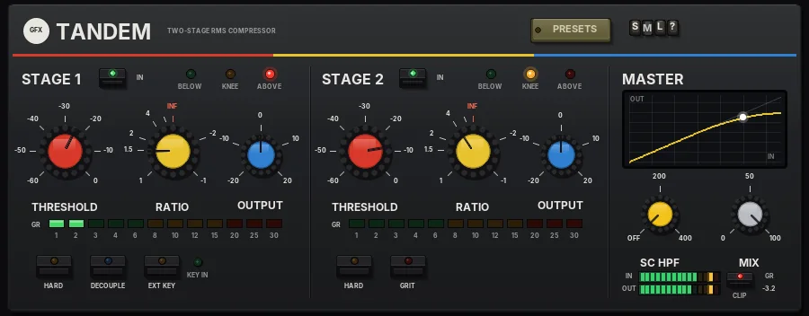
Overview
Tandem puts two classic RMS / VCA compressors one after the other. Each stage does a little of the work, which is the old studio trick for heavy compression that still sounds open: the first stage levels the performance gently, the second catches what gets through.
Both stages measure loudness (RMS) rather than peaks, so they react the way your ears do. There are no attack and release knobs - the timing follows the music, as on the original hardware: the further the signal goes over the threshold, the faster the stage reacts, and it recovers at a steady pace.
Reach for it for
- Vocals that need to sit still in a mix
- Drum and mix buses
- Bass guitar
- Ducking a music bed under a voice (EXT KEY)
- Creative pumping and reverse-dynamics effects (negative ratios)
Controls
Stage 1 and Stage 2
The two stages have the same main controls. The signal goes through Stage 1, then Stage 2.
- IN
- Switches the stage in or out. With a stage out, the audio passes straight through it.
- THRESHOLD (red cap)
- The level where the stage starts working, from -60 to 0 dB. Turn it down (left) for more compression. Because the detector measures loudness, the threshold relates to the average level rather than the peaks.
- RATIO (yellow cap)
- How strongly the stage compresses once the level is over the threshold. 1:1 does nothing; 2:1 and 4:1 are moderate; INF:1 (marked in red) is limiting - nothing gets louder. Past INF the ratio becomes negative (-2:1, -1:1): the louder the input, the quieter the output. That reverses the dynamics, for pumping and swelling effects.
- OUTPUT (blue cap)
- The stage's make-up gain, from -20 to +20 dB. Use it to bring the level back up after compression.
- BELOW / KNEE / ABOVE
- Three lights showing where the level sits: green below the threshold, amber in the soft knee, red above it.
- GR meter
- The row of 12 lights under the knobs shows the gain reduction of that stage, from 1 to 30 dB.
- HARD
- Off (default): a soft knee - the ratio eases in gradually over 10 dB around the threshold, which is smoother and more transparent. On: the full ratio starts right at the threshold, for a firmer, more obvious effect.
Stage 1 only
- DECOUPLE
- Off: both sides of the stereo signal get exactly the same gain, so the stereo image stays still. On: each side mostly follows its own level (80% its own, 20% shared), like unlinking a bus compressor. The sound becomes wider and livelier, but the image can move a little.
- EXT KEY
- Stage 1 listens to the key input (plug-in pins 3 and 4) instead of the audio it is compressing. Use it for ducking: route a voice or kick to pins 3/4 and the music dips whenever it plays. Stage 2 always listens to Stage 1's output.
- KEY IN
- Lights when a signal arrives on the key input - a quick check that your routing works.
Stage 2 only
- GRIT
- Drives Stage 2's VCA into gentle 2nd and 3rd harmonic distortion. The harder Stage 2 works, the grittier it gets, so it adds attitude on the loud parts and stays clean on the quiet ones.
Master
- Transfer curve
- Shows the input-to-output curve of both stages together. The white dot rides on it with the live level, so you can see exactly where the music sits.
- SC HPF
- A high-pass filter on what both stages listen to (fully left = off, up to 400 Hz). Raise it so the bass doesn't make the whole mix pump; the bass itself isn't filtered.
- MIX
- Parallel compression: blends the dry signal back in. 100% is fully compressed; lower settings keep the transients of the dry signal under the compressed sound.
- IN / OUT meters, TOTAL GR
- Input and output level, and the combined gain reduction of both stages.
The header
- PRESETS
- Opens the list of factory presets. Choosing one sets the plugin's controls for that job; the input and output stages are left as they are. The last entry resets everything to the defaults.
- S / M / L
- Panel size: small, medium or large. The panel also scales to fit the plugin window.
- ?
- Opens a pop-up with the design credit, the GFX website address and the address of this manual. Click anywhere to close it.
- OUTPUT
- Folds the input and output stages out below the panel (and back in). The light shows when they are open.
Input and output stages (OUTPUT fold-out)
- TRIM
- Input level before anything else, from -24 to +12 dB.
- GUARD
- On by default. Gently eases very hot sources down towards about -18 dBFS average and catches fast peaks above -6 dBFS, so loud sources never overdrive the plugin. It never boosts quiet sources. The tag shows how much it is working.
- SAT
- Band saturation on the way out: only the lows and highs are saturated (the mids stay clean), with a soft curve that loosens as the level rises.
- BIAS
- Shapes the saturation: more bias adds more even (2nd) harmonics, for a warmer, rounder colour.
- LO BAND / HI BAND
- Where the low and high saturation bands start (40 - 400 Hz and 2 - 16 kHz).
- CEILING / THRESH
- With CLIP: the level the peaks are softly clipped at. With LIMIT: the threshold of a brickwall limiter that holds the peaks at -0.3 dBFS - pulling it down limits harder and makes the output louder.
- OFF / CLIP / LIMIT
- The final stage: nothing, a soft clipper (no latency), or a lookahead limiter (3 ms latency, compensated by REAPER).
Presets
- Gentle Glue
- Light two-stage smoothing for a mix or group bus.
- Vocal Leveller
- Stage 1 evens the performance, Stage 2 catches the peaks; a little SC HPF.
- Vocal Upfront
- Heavier vocal control with a hard knee and GRIT on Stage 2.
- Drum Bus Stack
- Stage 1 decoupled for a lively image, GRIT on Stage 2, 70% mix.
- Parallel Crush
- Stage 2 limiting hard with GRIT, blended in at 35%.
- Bass Even
- Steady bass level with a little GRIT.
- Acoustic Guitar
- Gentle, with Stage 1 decoupled for width.
- Peak Catcher
- Light levelling, then a hard-knee limit at -6 dB.
- Negative Pump
- Stage 2 past INF for rhythmic pumping, 60% mix.
- Reverse Swell
- Stage 2 at -1:1: loud hits dip and the tails swell up; 50% mix.
- Ducker (ext key)
- Stage 1 ducks from the key input - route the voice or kick to pins 3/4.
- Reset all to defaults
- Every control back to its starting value.
Using the key input (EXT KEY)
- On the track with Tandem, open ROUTE and set the track to 4 channels.
- On the track you want to duck from (e.g. the voice), add a send to Tandem's track and set its destination to channels 3/4.
- Switch EXT KEY on. KEY IN lights when the key signal arrives; lower Stage 1's THRESHOLD until the music dips by the amount you want.
Tips
- Start with Stage 2's ratio at INF and its threshold just under your peaks: it becomes a safety limiter after Stage 1's gentle levelling.
- If the low end makes the whole mix duck, raise SC HPF to 80-120 Hz.
- Negative ratios sound best on sustained material (pads, rooms, reverb returns) and with MIX below 100%.
- Use the transfer curve: if the white dot sits far up the flat part of the curve, you're compressing more than you probably need.
File: gfx-tandem.jsfx
Tandem Q
Tandem's two RMS soft-knee compressors in series, with a passive-style program EQ on the same panel.
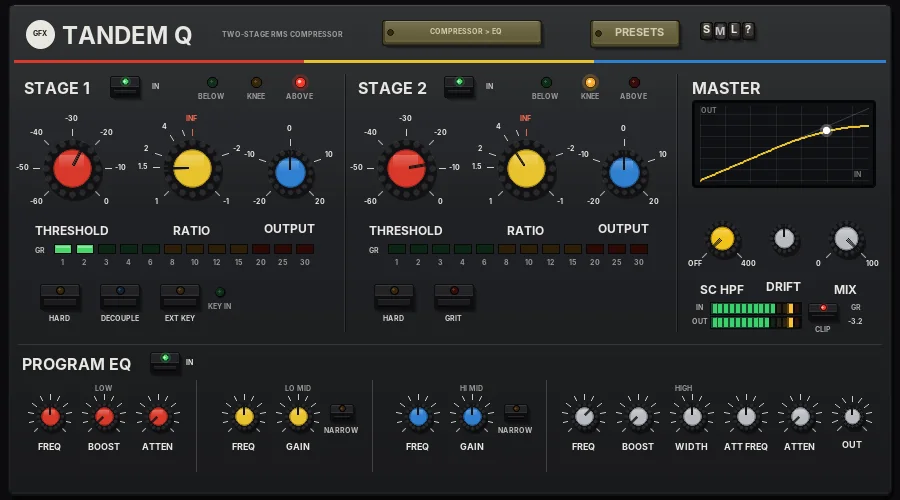
Overview
Tandem Q is Tandem with a program EQ added below it. The top unit is two classic RMS / VCA compressors one after the other: each stage does a little of the work, which is the old studio trick for heavy compression that still sounds open. The bottom strip is a passive-style program EQ with LOW, LO MID, HI MID and HIGH sections, running through transformer stages.
Both compressor stages measure loudness (RMS) rather than peaks, so they react the way your ears do. There are no attack and release knobs - the timing follows the music: the further the signal goes over the threshold, the faster the stage reacts (about 15 ms for 10 dB over, 5 ms for 30 dB), and it recovers at a steady 120 dB per second.
ORDER chooses whether the EQ comes before or after the compressors. The unit the signal meets first is shown on top.
Reach for it for
- Vocals that need levelling and tone-shaping in one place
- Drum and mix buses that want glue plus a broad EQ lift
- Bass guitar: even level, then low-end weight from the LOW section
- Ducking a music bed under a voice (EXT KEY)
- Creative pumping and reverse-dynamics effects (negative ratios)
Controls
Stage 1 and Stage 2
The two stages have the same main controls. The signal goes through Stage 1, then Stage 2.
- IN
- Switches the stage in or out. With a stage out, the audio passes straight through it.
- THRESHOLD (red cap)
- The level where the stage starts working, from -60 to 0 dB. Turn it down (left) for more compression. Because the detector measures loudness, the threshold relates to the average level rather than the peaks.
- RATIO (yellow cap)
- How strongly the stage compresses once the level is over the threshold. 1:1 does nothing; 2:1 and 4:1 are moderate; INF:1 (marked in red) is limiting - nothing gets louder. Past INF the ratio becomes negative (-2:1, -1:1): the louder the input, the quieter the output. That reverses the dynamics, for pumping and swelling effects.
- OUTPUT (blue cap)
- The stage's make-up gain, from -20 to +20 dB. Use it to bring the level back up after compression.
- BELOW / KNEE / ABOVE
- Three lights showing where the level sits: green below the threshold, amber in the soft knee, red above it.
- GR meter
- The row of 12 lights under the knobs shows the gain reduction of that stage, from 1 to 30 dB.
- HARD
- Off (default): a soft knee - the ratio eases in gradually over 10 dB around the threshold, which is smoother and more transparent. On: the full ratio starts right at the threshold, for a firmer, more obvious effect.
Stage 1 only
- DECOUPLE
- Off: both sides of the stereo signal get exactly the same gain, so the stereo image stays still. On: each side mostly follows its own level (80% its own, 20% shared), like unlinking a bus compressor. The sound becomes wider and livelier, but the image can move a little.
- EXT KEY
- Stage 1 listens to the key input (plug-in pins 3 and 4) instead of the audio it is compressing. Use it for ducking: route a voice or kick to pins 3/4 and the music dips whenever it plays. Stage 2 always listens to Stage 1's output.
- KEY IN
- Lights when a signal arrives on the key input - a quick check that your routing works.
Stage 2 only
- GRIT
- Drives Stage 2's VCA into gentle 2nd and 3rd harmonic distortion. The harder Stage 2 works, the grittier it gets, so it adds attitude on the loud parts and stays clean on the quiet ones.
Master
- Transfer curve
- Shows the input-to-output curve of both stages together. The white dot rides on it with the live level, so you can see exactly where the music sits.
- SC HPF
- A high-pass filter on what both stages listen to (fully left = off, up to 400 Hz). Raise it so the bass doesn't make the whole mix pump; the bass itself isn't filtered.
- DRIFT
- A slow random wander in the program EQ, like old components warming up, 0 - 100% (50% is the standard amount, 100% twice that, 0% none). It nudges each side's EQ frequencies and gains independently and very slightly, so the EQ breathes a little. It does not move the compressors.
- MIX
- Parallel compression: blends the dry signal back in. 100% is fully compressed; lower settings keep the transients of the dry signal under the compressed sound.
- IN / OUT meters, GR
- Input and output level, and the combined gain reduction of both stages in dB.
- CLIP
- On by default. Soft-clips the output at -0.3 dBFS, with no latency. The CLIP label turns red while it is clipping. Off: no clipping.
Program EQ
The strip below the compressors. Each frequency knob clicks through fixed steps, as on passive hardware.
- IN
- Switches the EQ curves in or out. The change glides rather than jumps.
- LOW: FREQ
- The low shelf frequency: 20, 30, 60, 100 or 150 Hz.
- LOW: BOOST
- Lifts the lows, 0 - 10. The boost is a resonant shelf with a little bump just above the frequency.
- LOW: ATTEN
- Cuts the lows, 0 - 10, with a very broad, gentle shelf. Using BOOST and ATTEN together is the old passive-EQ trick: the deepest lows still lift while a dip forms just above them, tightening the low mids.
- LO MID: FREQ
- 150, 220, 330, 470, 680 Hz, 1 kHz or 1.5 kHz.
- LO MID: GAIN
- Boost or cut, -12 to +12 dB. The band gets narrower as you turn it further from 0.
- LO MID: NARROW
- Off: a wide, musical bell. On: a narrower bell for more focused changes.
- HI MID: FREQ
- 1, 1.5, 2.2, 3.3, 4.7, 6.8 or 10 kHz.
- HI MID: GAIN / NARROW
- As LO MID: -12 to +12 dB, and NARROW for a tighter bell.
- HIGH: FREQ
- The centre of the high boost: 3, 4, 5, 8, 10, 12 or 16 kHz.
- HIGH: BOOST
- Lifts the highs around that frequency, 0 - 10.
- HIGH: WIDTH
- The width of the high boost, 0 - 10: low settings are sharp and focused, high settings broad and airy. Starts at 5.
- HIGH: ATT FREQ
- Where the high cut starts: 5, 10 or 20 kHz.
- HIGH: ATTEN
- Cuts the highs above ATT FREQ with a gentle shelf, 0 - 10. Combine with BOOST to lift presence while softening the very top.
- OUT
- The EQ's output level, -12 to +12 dB.
The header
- ORDER
- COMPRESSOR > EQ or EQ > COMPRESSOR: click to swap. The panel redraws with the unit the signal meets first on top.
- PRESETS
- Opens the list of factory presets; the ◄ / ► keys step through them and the display shows the one in use. Choosing one sets the two compressor stages, SC HPF and MIX; the EQ and DRIFT are left as they are. The last entry resets the compressor, DRIFT and CLIP to their defaults.
- S / M / L
- Panel size: small, medium or large. The panel also scales to fit the plugin window.
- ?
- Opens a pop-up with the design credit, the GFX website address and the address of this manual. Click anywhere to close it.
Input guard
There is no input or output fold-out on Tandem Q. An input guard runs in front of everything and is on by default: it gently eases very hot sources down towards about -18 dBFS average and catches fast peaks above -6 dBFS, so loud sources never overdrive the plugin. It never boosts quiet sources. It has no key on the panel; it appears as Input guard in REAPER's parameter list.
Presets
- Gentle Glue
- Light two-stage smoothing for a mix or group bus.
- Vocal Leveller
- Stage 1 evens the performance, Stage 2 catches the peaks; a little SC HPF.
- Vocal Upfront
- Heavier vocal control with a hard knee and GRIT on Stage 2.
- Drum Bus Stack
- Stage 1 decoupled for a lively image, GRIT on Stage 2, 70% mix.
- Parallel Crush
- Stage 2 limiting hard with GRIT, blended in at 35%.
- Bass Even
- Steady bass level with a little GRIT.
- Acoustic Guitar
- Gentle, with Stage 1 decoupled for width.
- Peak Catcher
- Light levelling, then a hard-knee limit at -6 dB.
- Negative Pump
- Stage 2 past INF for rhythmic pumping, 60% mix.
- Reverse Swell
- Stage 1 out, Stage 2 at -1:1: loud hits dip and the tails swell up; 50% mix.
- Ducker (ext key)
- Stage 1 ducks from the key input - route the voice or kick to pins 3/4.
- Reset all to defaults
- The compressor controls, DRIFT and CLIP back to their starting values (the EQ is left as it is).
Using the key input (EXT KEY)
- On the track with Tandem Q, open ROUTE and set the track to 4 channels.
- On the track you want to duck from (e.g. the voice), add a send to Tandem Q's track and set its destination to channels 3/4.
- Switch EXT KEY on. KEY IN lights when the key signal arrives; lower Stage 1's THRESHOLD until the music dips by the amount you want.
Tips
- EQ > COMPRESSOR lets the compressor react to your EQ: boosting the lows makes it work harder on the bass. COMPRESSOR > EQ keeps the EQ's tone moves out of the compressor's way.
- Start with Stage 2's ratio at INF and its threshold just under your peaks: it becomes a safety limiter after Stage 1's gentle levelling.
- If the low end makes the whole mix duck, raise SC HPF to 80-120 Hz.
- On a vocal, try a little HIGH BOOST at 10 or 12 kHz with WIDTH up for air, and a touch of LO MID cut at 220 or 330 Hz to clear mud.
File: gfx-tandem-q.jsfx
Thrust
A stereo VCA bus compressor with stepped controls, a THRUST side-chain filter and new or old detection.
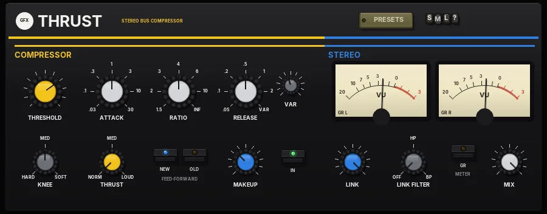
Overview
Thrust is a stereo VCA bus compressor in the spirit of the famous American bus compressor with the stepped controls and the THRUST switch. It is made for gluing mixes, drum buses and groups.
THRUST shapes what the compressor listens to: at LOUD the lows count much less and the highs more, so the bass no longer drives the compression and mixes stay big and punchy. TYPE chooses between NEW (feed-forward: precise and firm) and OLD (feedback: the detector hears its own output, so it is softer and more forgiving and the ratio eases off on big peaks - the vintage feel).
LINK sets how much the two sides share one gain, from independent to fully linked, and LINK FILTER decides what part of the spectrum is shared. MIX blends in the dry signal for parallel compression.
Reach for it for
- Mix-bus glue
- Punchy drum and percussion buses
- Parallel 'smash' compression (MIX)
- Keeping a bass-heavy mix from pumping (THRUST)
- Vintage, forgiving bus compression (OLD)
Controls
The header
- PRESETS
- Opens the list of factory presets (a click on the preset display does the same). A preset sets the COMPRESSOR and STEREO controls; the last entry resets everything to the defaults.
- ◄ / ►
- Step to the previous or next preset. The display shows the number and name of the preset in use.
- S / M / L
- Panel size: small, medium or large. The panel also scales to fit the plugin window.
- ?
- Opens a pop-up with the design credit, the GFX website address and the address of this manual. Click anywhere to close it.
COMPRESSOR
- THRESHOLD (yellow cap)
- Where it starts working, -40 to 0 dB (-12 dB by default). Turn it down for more compression.
- ATTACK
- Stepped: .03, .1, .3, 1, 3, 10 or 30 ms (1 ms by default). Short times catch the transients; longer ones let the punch through.
- RATIO
- Stepped: 1.5, 2, 3, 4, 6, 10 or INF : 1 (4:1 by default). INF is limiting.
- RELEASE
- Stepped: .05, .1, .2, .5, 1 or 2 s, or VAR (set by the VAR knob). 0.5 s by default.
- VAR
- The release time used when RELEASE is on VAR, 0.05 - 3 s. Its cap turns yellow when it is in use.
- KNEE
- HARD, MED (6 dB) or SOFT (12 dB). Softer knees ease the compression in around the threshold.
- THRUST (yellow cap)
- What the detector hears. NORM: flat. MED: the lows count less (about 6 dB down) and the highs a little more. LOUD: the lows count much less (about 12 dB down) and the highs more. The audio itself is not filtered.
- NEW / OLD
- The detector type. NEW: feed-forward - it hears the input; precise and firm. OLD: feedback - it hears its own output; softer and more forgiving, and the ratio eases off on big peaks. The words under the keys show FEED-FORWARD or FEEDBACK.
- MAKEUP (blue cap)
- Make-up gain, -10 to +20 dB.
- IN
- Switches the compressor in or out (in by default; the light shows when it is in). Out, the audio passes straight through.
STEREO
- VU meters
- Two needle meters, left and right, showing gain reduction (GR L / GR R) or output level (OUT L / OUT R).
- LINK (blue cap)
- How much the two sides share one gain, from IND (each side on its own) to 100 (both sides get the same gain, so the image stays still). 100 by default.
- LINK FILTER
- What part of the spectrum is shared by the link. OFF: everything. HP: the lows are left out of the link. BP: only the mids are shared.
- METER
- Switches the VU meters between GR and OUT.
- MIX
- Parallel compression: the WET amount, 0 - 100. 100 is fully compressed; lower settings blend the dry signal back in.
Thrust has no output-stage fold-out. Its input guard is on in the background: very hot sources are gently eased down towards about -18 dBFS average and fast peaks above -6 dBFS are caught before the compressor; quiet sources are never boosted.
Presets
- Mix Bus Glue
- 2:1, 3 ms attack, 1 s release, soft knee, MED thrust, HP link filter, 2 dB makeup.
- Big Mix (loud thrust)
- 4:1 with LOUD thrust and HP link filter, for a big mix that keeps its low end.
- Drum Bus Punch
- 6:1, 1 ms attack, 0.2 s release, hard knee, MED thrust, 80% link, 6 dB makeup.
- Drum Smash (parallel)
- 10:1 with the fastest attack and LOUD thrust, heavily compressed and blended in at 40%.
- Vintage Feedback
- 3:1 OLD detection, 3 ms attack, VAR release, soft knee.
- Vocal Bus
- 4:1, 0.3 ms attack, medium knee, 4 dB makeup.
- Wide Stereo (independent)
- 2:1 OLD detection with the sides unlinked, for a wider, livelier image.
- Bus Limiter
- INF:1, 0.1 ms attack, fast release, hard knee: a bus limiter.
- Bass Control
- 4:1, 10 ms attack, medium knee, 5 dB makeup, to even out the low end.
- Room Pump
- 6:1 OLD detection with LOUD thrust, BP link filter at 50% link, 60% mix: a pumping room or parallel sound.
- Reset all to defaults
- Every control back to its starting value.
Tips
- For mix-bus glue, start with RATIO 2, ATTACK 10 or 30 ms, RELEASE on .2 or VAR, and aim for 1 - 3 dB on the GR meters.
- If the kick or bass makes the whole mix pump, move THRUST to MED or LOUD.
- OLD is more forgiving on dense mixes; NEW is tighter and better for controlling peaks.
- Lower LINK, or use LINK FILTER HP, if the stereo image feels squashed into the middle.
- For parallel compression, set a heavy setting first (RATIO 10, fast attack), then bring MIX down until the dry punch comes back.
File: gfx-thrust.jsfx
Transient
A level-independent transient shaper: more or less attack, more or less sustain.

Overview
Transient shapes the front and the tail of every hit. Turn ATTACK up to sharpen the start of each note, down to soften it; turn SUSTAIN up to bring out the ring and room after each hit, down to dry it up and tighten the tail.
There is no threshold. Transient compares fast and slow envelopes of the signal, so it works the same on quiet and loud hits. One detector serves both channels, so the stereo image never shifts.
Reach for it for
- Snappier snares and punchier kicks
- Removing room and ring from drums, or bringing more of it up
- Softening harsh picking on guitar or bass
- Tightening bass notes
- Adding snap to a drum bus with MIX
Controls
Shaper
- ATTACK (green cap)
- -100% to +100%. Plus sharpens the front of every hit, minus softens it - pushing drums back or taming picking. Up to about 12 dB either way on the attack.
- SUSTAIN (red cap)
- -100% to +100%. Plus brings up the ring and room after each hit, minus dries it up and tightens the tail. Up to about 14 dB either way. Very quiet tails (below about -54 dBFS) are left alone, so the noise floor doesn't pump up.
- SPEED
- How long the attack window is, 5 - 60 ms: short for clicks and sticks, long for a fatter front.
- LENGTH
- How long the sustain stage holds on after each hit, 50 - 1000 ms.
- FOCUS (yellow cap)
- A high-pass filter on what the shaper listens to, 20 - 500 Hz (fully left = OFF), so kick or bass rumble does not trigger it. The audio itself isn't filtered.
- MIX
- Blends in the dry signal, 0 - 100%.
- OUTPUT
- Output level, -12 to +12 dB.
Drag a knob up or down (Shift for fine), use the mouse wheel, or double-click to reset it. While you turn a knob, the display shows its name and value.
Meters
- ATK
- What the attack stage is doing, up or down, +/- 12 dB about the centre line.
- SUS
- What the sustain stage is doing, +/- 12 dB about the centre line.
- OUT
- The output level, from -30 dBFS (green, amber, then red near the top).
The top strip
- Preset display
- Shows the preset number and name. Click it for the preset list.
- < and >
- Step to the previous or next preset. A preset sets ATTACK, SUSTAIN, SPEED, LENGTH, FOCUS and MIX; OUTPUT and the output stage are left as they are.
- OFF / CLIP / LIMIT
- The final stage: nothing, a soft clipper at -0.3 dBFS (no latency), or a lookahead limiter holding the peaks at -0.3 dBFS (3 ms latency, compensated by REAPER). CLIP is on by default and flashes red when it clips.
- S / M / L
- Panel size: small, medium or large (it opens at L). The panel also scales to fit the plugin window.
- ?
- Opens a pop-up with the design credit, the GFX website address and the address of this manual. Click anywhere to close it.
Presets
- Init
- Everything neutral: no change to the sound.
- Snappy Snare
- Strong attack with a short window, a slightly drier tail, FOCUS at 120 Hz.
- Punchy Kick
- More attack with a fatter 25 ms front and a tighter tail.
- Room Killer
- Sustain pulled well down to dry up room and ring.
- Big Room
- Attack softened a touch and sustain well up with a long 600 ms hold.
- Soft Pick
- Attack pulled down with a short window, FOCUS at 150 Hz, to tame picking.
- Tight Bass
- More attack and a shorter, tighter tail.
- Drum Bus Snap
- Moderate attack lift and a slightly drier tail, blended in at 60%.
Tips
- Watch the ATK and SUS bars: they show exactly how much each stage is adding or taking away on every hit.
- Boosting ATTACK raises the peaks. Use LIMIT or CLIP, or bring OUTPUT down, if the track starts to clip.
- On a full drum bus, raise FOCUS to 80 - 120 Hz so the kick doesn't dominate what the shaper reacts to.
- Negative SUSTAIN on a close-miked tom or snare is a quick alternative to a gate, with no chatter.
File: gfx-transient.jsfx
Twin Comp
Two classic compressors in one rack - a VCA and an Expressor - in either order.
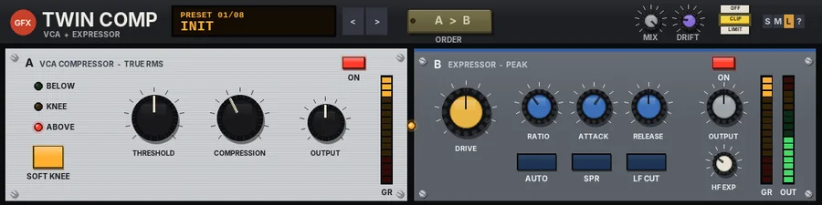
Overview
Twin Comp puts two very different compressors side by side. Unit A is a VCA compressor in the spirit of the classic late-70s RMS boxes: it measures loudness rather than peaks, has a soft knee, and its timing follows the music. Its COMPRESSION knob runs from 1:1 through INF:1 and on into negative ratios.
Unit B is an Expressor in the spirit of the classic 80s expander-compressors: peak-sensing with a smooth knee, with DRIVE, RATIO, ATTACK and RELEASE, an AUTO timing mode, HF EXP to keep the top open under heavy compression, SPR to firm up the low end and LF CUT to stop the bass from pumping it.
ORDER sets which unit comes first, and the two units swap places on the panel to match. MIX blends in the dry signal for parallel compression.
Reach for it for
- Drum buses that want punch and control (A into B)
- Vocals that need firm, open-sounding compression (B with HF EXP)
- Bass that needs a tight, steady bottom (SPR)
- Gentle glue on a mix (both units lightly)
- Pumping and reverse-dynamics effects (A past INF)
Controls
Drag a knob up or down to turn it (hold Shift for fine moves), or double-click to reset it. The value shows while the mouse is over a knob, and the display shows the control you are changing.
The top strip
- Display
- Shows the preset number and name, or for a moment the control you have just changed. Click it for the preset list.
- < and >
- Step to the previous or next preset.
- ORDER
- Click to swap the order: A > B or B > A. The two units change places on the panel so the first one is on the left. The key's light shows while it is held.
- MIX
- Parallel compression, 0 - 100%: 100% is fully compressed, lower settings blend the dry signal back in.
- DRIFT
- An uneven supply under both VCAs, 0 - 100% (20% by default): each unit's gain wobbles very slightly (up to +/-0.15 dB at 100%) and unit A's colour moves with it. It stays level-neutral.
- OFF / CLIP / LIMIT
- The final stage: nothing, a soft clipper that holds the peaks at -0.3 dBFS (no latency), or a lookahead limiter that holds them at -0.3 dBFS (3 ms latency, compensated by REAPER). The CLIP key flashes red while the clipper is working.
- S / M / L
- Panel size: small, medium or large. The panel also scales to fit the plugin window.
- ?
- Opens a pop-up with the design credit, the GFX website address and the address of this manual. Click anywhere to close it.
A - VCA COMPRESSOR (true RMS)
- ON
- Switches unit A in or out. The red light beside it is lit while the unit is in.
- BELOW / KNEE / ABOVE
- Three lights showing where the level sits against the threshold: green below it, amber in the soft knee, red above it.
- THRESHOLD
- The level where compression starts, -40 to 0 dB. Because the unit measures loudness, it relates to the average level rather than the peaks.
- COMPRESSION
- The ratio. From fully left (1:1) it rises to INF:1 at 80% of its travel; past that it becomes negative, down to -2:1 at the end: the louder the input, the quieter the output. The value is shown as a ratio.
- OUTPUT
- Unit A's make-up gain, -20 to +20 dB.
- SOFT KNEE
- On (default): the ratio eases in over 10 dB around the threshold. Off: a hard knee, firmer and more obvious.
- GR
- The column of lights shows unit A's gain reduction, 0 to 20 dB.
There are no attack or release controls on unit A: the further the signal goes over the threshold, the faster it reacts (about 15 ms for 10 dB over, 5 ms for 20 dB), and it recovers at a steady 120 dB per second. It adds a whisper of 2nd harmonic that grows with the gain reduction.
B - EXPRESSOR (peak)
- ON
- Switches unit B in or out. The red light beside it is lit while the unit is in.
- DRIVE
- How hard the signal is pushed into the compressor, 0 to +40 dB. More drive means more compression (it sets the threshold from 0 down to -40 dB).
- RATIO
- 1:1 to 20:1.
- ATTACK
- 0.1 - 50 ms. Reads AUTO when AUTO is on.
- RELEASE
- 30 ms - 3 s. Reads AUTO when AUTO is on.
- OUTPUT
- Unit B's make-up gain, -20 to +20 dB.
- AUTO
- Automatic, smooth optical-style timing: a quick attack and a two-stage release that follows the programme. ATTACK and RELEASE are not used.
- SPR
- Rotates the phase of the low end against the top (two all-pass stages at 180 Hz) for a tighter, firmer bottom.
- LF CUT
- A 150 Hz high-pass on what the compressor listens to only, so bass peaks no longer pump it. The bass itself is not filtered.
- HF EXP
- 0 - 100%: lifts the top end (above about 3.5 kHz) in proportion to the gain reduction, up to +6 dB, so heavy compression stays open and bright.
- GR
- The column of lights shows unit B's gain reduction, 0 to 20 dB.
- OUT
- The output level of the whole plug-in, -30 dBFS to 0.
A light between the two units glows when both are on.
Presets
A preset sets the order, both units, which units are on, and MIX. DRIFT and the OFF / CLIP / LIMIT keys are left as they are.
- Init
- Both units on, A > B, at their starting values.
- Drum Bus
- Unit A only at 4:1 with a soft knee and 4 dB of make-up.
- Vocal Expressor
- Unit B only, 4:1 with AUTO timing, LF CUT and HF EXP, 5 dB of make-up.
- Bass Tight
- A > B: A with a hard knee, then B with SPR for a firm bottom.
- Mix Glue
- B > A: gentle 2:1 Expressor with AUTO, SPR and LF CUT, then light VCA compression.
- Parallel Smash
- A > B, both working hard (A with a hard knee, B at 8:1 with fast timing), blended in at 40%.
- Acoustic Natural
- Unit B only, 2.5:1 with AUTO timing, LF CUT and a little HF EXP.
- Negative Pump
- Unit A only, past INF for pumping and reverse-dynamics effects.
Tips
- A > B lets the VCA level the performance and the Expressor catch the peaks; B > A lets the Expressor shape the tone first and the VCA glue it.
- On a vocal, raise HF EXP as you add DRIVE on unit B, so the voice stays clear as it gets more compressed.
- Watch the BELOW / KNEE / ABOVE lights: for gentle levelling, the amber KNEE light should be on most of the time.
- Negative ratios sound best on sustained material and with MIX below 100%.
File: gfx-twin-comp.jsfx
VB30
An aggressive diode-bridge programme limiter with capacitor memory, freeze and a gate.

Overview
VB30 is a characterful, aggressive limiter in the spirit of early broadcast modules and high-ratio industrial limiters. It is made for room mics, shouty vocals and parallel drum buses - the places where you want to hear the compression.
The signal runs gate, then limiter, then make-up gain, then MIX. The limiter has a fast, peak-sensing detector and a diode-bridge style gain cell that thickens as it works harder. Its release has a "capacitor memory": short peaks snap straight back, while sustained squashing clamps down and lets go slowly with a long, musical suck-back.
FREEZE stops the noise floor and the room from pumping up in the gaps: when the audio drops into a pause, the gain reduction is held where it is until the music returns. A gate or gentle expander sits in front of the limiter for tidying up spill.
Reach for it for
- Smashed room and ambience mics
- Parallel drum crush (with MIX)
- Shouty, in-your-face vocals
- Gritty snares and bass with the diode-bridge COLOUR
- Big pumping and suck-back effects
Controls
LIMITER (upper row) - DYNAMICS
- THRESHOLD (orange plate)
- The level where limiting starts, from -40 to 0 dB (-18 dB by default). Turn it down for more squash.
- RATIO
- From 1.5:1 up to LIMIT (fully right), 4:1 by default. The knee is soft.
- ATTACK
- Very fast, FET-style: from 50 microseconds to 20 ms (0.8 ms by default). Slower settings let more of each hit's front edge through.
- RELEASE
- From 30 to 1500 ms (200 ms by default). With MEMORY above zero this is the centre of a release that stretches and shrinks with the music.
LIMITER - CHARACTER
- MEMORY
- The capacitor memory, 0 to 100% (50% by default). The release follows how much gain reduction there has been over the last half second or so: after short peaks it recovers as fast as a quarter of RELEASE, after sustained squashing as slowly as six times RELEASE. 0 gives a plain, fixed release.
- COLOUR
- The diode-bridge gain cell, 0 to 100% (40% by default): a soft, slightly lopsided saturation that thickens as the gain reduction deepens. Its level is compensated, so it adds character rather than volume. 0 is clean.
- GAIN
- Make-up gain after the limiter, from -6 to +24 dB.
LIMITER - keys and meter
- IN
- Switches the limiter in or out. The POWER light in the header shows it.
- LINK
- On (the default): both sides share one gain, for the limiter and the gate, so the stereo image stays put. Off: each side works on its own.
- MEMORY CHARGE
- Twelve lights showing how much the memory is stretching the release right now, from SNAP (quick recovery) to SUCK (long, slow let-go).
GATE (lower row) - GATE / FREEZE
- FREEZE THR (orange plate)
- The level below which FREEZE holds the gain reduction, from -70 to -25 dB (-50 dB by default). A fast detector watches the input; there is 3 dB of hysteresis, so it does not chatter at the threshold.
- GATE THR (orange plate)
- The gate's threshold, from -80 to -20 dB (-60 dB by default).
- RANGE
- How far the gate turns the signal down, from 0 to 60 dB (15 dB by default).
- RELEASE
- How fast the gate closes, from 20 to 2000 ms (250 ms by default). It opens in about half a millisecond.
GATE - SIDECHAIN / MIX
- SC HPF
- A high-pass filter on what the limiter listens to, from OFF (fully left) up to 300 Hz. Raise it so the bass doesn't make everything pump; the bass itself isn't filtered.
- MIX
- Parallel blend with the dry signal, shown as WET 0 - 100. 100 is fully limited; lower settings tuck the crushed sound under the dry one.
GATE - keys and lamps
- GATE / EXP
- GATE: below the threshold the signal drops by the full RANGE. EXP (the default): a gentle 1:2 expander - the further below the threshold, the more it is turned down, up to RANGE.
- OPEN
- Lights while the gate is open.
- FREEZE
- Switches the freeze on or off (on by default). When the signal falls below FREEZE THR - a pause, the gap between hits - the limiter's release stops and the gain reduction stays where it is, so the noise floor and the room do not swell up in the gaps.
- GATE IN
- Switches the gate in or out (out by default). The readout underneath shows how much the gate is turning down, or GATE OUT.
- HOLD
- Lights while the freeze is holding the gain reduction.
Meters
- GAIN RED.
- Two glowing bars, L and R, showing the limiter's gain reduction from 0 to 30 dB, with the current figure underneath.
- OUTPUT
- Two LED columns, L and R, showing the output level from -36 to +3 dBFS.
The header
- PRESETS
- Opens the list of factory presets (a click on the display does the same); the ◄ / ► keys step through them. Choosing one sets the limiter and gate controls for that job. The last entry resets everything to the defaults.
- S / M / L
- Panel size: small, medium or large. The panel also scales to fit the plugin window.
- ?
- Opens a pop-up with the design credit, the GFX website address and the address of this manual. Click anywhere to close it.
Presets
- Room Mic Smash
- Limiting at -24 dB with a 0.2 ms attack, strong memory and colour, freeze on, SC HPF at 90 Hz.
- Parallel Drum Crush
- 12:1 at -28 dB with heavy memory and +12 dB of make-up, blended in at 40%.
- Shouty Vocal
- 6:1 at -20 dB with moderate colour; the gate in as an expander to tidy the gaps.
- Big Suck-back
- 8:1 with MEMORY at 100% and a 300 ms release for long, pumping let-go; freeze off.
- Brick Wall Peaks
- Limiting at -14 dB with the fastest attack and an 80 ms release: peak control with light colour.
- Bass Grab
- 3:1 at -16 dB with a slower 4 ms attack and SC HPF at 60 Hz.
- Snare Grit (gated)
- 10:1 with COLOUR at 85%, a hard gate (30 dB range) in front, SC HPF at 150 Hz, LINK off.
- Gentle Glue Pump
- 4:1 at -18 dB with a 400 ms release and light colour.
- Destroy (blend in)
- Limiting at -40 dB, full colour, +18 dB of make-up, blended in at 30%.
- Colour Only
- 1.5:1 with a slow attack and release and no memory - mostly the diode-bridge colour, little compression.
- Reset all to defaults
- Every control back to its starting value.
Tips
- For a room mic, keep FREEZE on and set FREEZE THR just above the room's noise between hits: the HOLD lamp should light in the gaps, not during the drums.
- Turn MEMORY up for the classic long suck-back on sustained material, or down to 0 when you want the release to stay predictable.
- On a parallel bus, crush hard with a low THRESHOLD and plenty of GAIN, then bring MIX down until the drums thicken without losing their attack.
- If kick or bass makes the whole signal duck, raise SC HPF to 90 - 150 Hz.
File: gfx-vb30.jsfx
Wingspan
A dynamic mid/side width processor that opens the stereo image (or pulls it in) when the music gets loud.

Overview
Wingspan splits the stereo signal into Mid (what is common to both sides - the centre) and Side (the difference - the width). It then turns the Side up or down as the level rises above a threshold, so the image can open out when a chorus lifts, or pull in towards the centre when things get loud and busy.
A detector listens to the Mid, the Side or a blend of the two. When it passes THRESHOLD, the Side moves by AMOUNT: positive amounts widen, negative amounts narrow. The movement is smoothed in decibels and rounded off, so the image glides rather than pumps or clicks. A static BASE WIDTH, a LOW MONO filter that keeps the bass in the centre, and a parallel MIX complete the chain.
The Mid is never touched, so the mono sum stays exactly as it was: Wingspan is mono-safe by design. It has no drift - like the other mastering tools it is deliberately steady - and no latency unless the output stage is set to LIMIT.
Reach for it for
- Choruses that open out wider than the verses
- Reining in spiky, over-wide moments on a master or bus
- A little extra width on a master with the bass kept mono
- Rooms and ambience that bloom with each drum hit
- Keeping a loud lead vocal focused by narrowing the sides around it
- Locking the low end to mono for vinyl, clubs and mono playback
Controls
The header
- PRESETS
- Opens the preset list.
- ◄ / ►
- Step to the previous or next preset (wrapping round).
- Preset display
- Shows the preset number and name. Click it for the preset list too.
- S / M / L
- Panel size: small, medium or large. The panel also scales to fit the plugin window. A new instance opens in L.
- ?
- Opens a pop-up with the design credit, the GFX website address and the address of this manual. Click anywhere to close it.
DYNAMICS
The sidechain that decides how much the Side moves. Each knob shows its value under its name while you hover over it or turn it.
- THRESHOLD
- The level the detector must pass before the image starts to move, -60 to 0 dB (-20 dB by default). The change starts gently over a 6 dB soft knee.
- AMOUNT
- How hard the Side is moved above the threshold, -100 to +100% (+30% by default), with a centre detent at OFF. Towards WIDEN the image opens; towards NARROW it closes. At 100% the Side moves by 0.5 dB for every dB over the threshold, up to +12 dB wider or -18 dB narrower.
- ATTACK
- How quickly the image moves once over the threshold, 0.5 to 100 ms (15 ms by default).
- RELEASE
- How quickly it settles back afterwards, 20 ms to 2 s (300 ms by default).
- DETECT
- What the detector listens to, from MID (the centre - vocals, kick, bass) through a blend (M 70 / S 30 and so on) to SIDE (the width itself). MID by default.
- PEAK / RMS (DETECTOR)
- PEAK reacts to every instant peak; RMS (the default) averages the level over 8 ms, for smoother, more musical movement.
- LEVEL vs THRESHOLD
- A 24-segment ladder showing the detector level from -60 to 0 dB, with a line at the THRESHOLD. Segments above the threshold light amber.
- MOVING
- A lamp that lights while the Side is being moved by more than a quarter of a dB.
STEREO FIELD
Displays only, all showing the output.
- VECTORSCOPE
- The output plotted with Mid upwards and Side across, auto-scaled to the level. A mono signal is a vertical line; the wider the image, the more it spreads sideways. The amber "wings" show the current width angle: straight up is mono.
- SIDE GAIN 4 s
- The last four seconds of side gain, +12 to -18 dB, newest on the right. Amber above the 0 line is wider, cream below it narrower.
- CORRELATION
- -1 to +1. Near +1 is close to mono, around 0 is wide; it turns red below 0, where the sides are working against each other and the mono sum loses level.
- SIDE GAIN readout
- The side gain right now, in dB.
- IMAGE WIDTH readout
- The resulting width: BASE WIDTH with the current side gain added, as a percentage (100% = as it came in).
- Gain-change bar
- The same side gain as a bar from -18 (NARROWER) to +12 (WIDER), with 0 in the middle.
WIDTH & OUTPUT
- BASE WIDTH
- A static width, 0 to 200% (100% by default, with a detent there). 0% is mono, 100% leaves the image as it is, 200% doubles the Side.
- PRE / POST (WIDTH STAGE)
- Where BASE WIDTH sits. PRE: before the detector, so a detector listening to the Side hears the widened image. POST (the default): after the dynamic stage, so the detector hears the original image. With DETECT on MID it makes no difference.
- LOW MONO OFF / 80 / 120 / 200
- Keeps the bass mono below 80, 120 or 200 Hz by filtering it out of the Side with a steep 24 dB per octave filter (OFF by default). Switching it fades in and out without a click.
- MIX
- Parallel blend with the untouched input, 0 to 100% (100% by default).
- OUTPUT
- Output level, -12 to +12 dB (0 dB by default).
- OFF / CLIP / LIMIT (OUT STAGE)
- The final stage: nothing, a soft clipper that holds the peaks at -0.3 dBFS (no latency), or a lookahead limiter that holds them at -0.3 dBFS (3 ms latency, compensated by REAPER). OFF by default; the CLIP key flashes red while it is clipping.
- IN / OUT meters
- Left and right peak meters for the input and the output, -48 to +3 dB; segments above 0 dB light red.
Knobs: drag up or down (Shift for fine moves) or use the mouse wheel; double-click or Ctrl-click to reset a knob to its default.
Presets
Presets set everything in the DYNAMICS and WIDTH sections and MIX. Init also resets OUTPUT and the output stage; the others leave them as they are.
- Init
- The defaults: -20 dB threshold, +30% widening, listening to the Mid in RMS, no low mono.
- Wide Choruses
- +60% from the Mid with a slow 600 ms release, slightly wider base, low mono at 120 Hz: the image opens as the song lifts.
- Tame Wide Peaks
- -50% listening to the Side in PEAK with a fast attack: spiky bursts of width are reined in.
- Gentle Master Width
- +25%, a 30% Side blend in the detector, slow and smooth, base 110% with low mono at 80 Hz.
- Mono-Safe Lows
- A light +15% with base 115%, and the bass locked mono below 120 Hz.
- Drum Room Bloom
- +70% in PEAK with a 2 ms attack and MIX at 70%: each hit blooms the room, in parallel.
- Pad Spread
- Low threshold, slow attack and 1.5 s release, base 130% in PRE, low mono at 200 Hz: the swell spreads further.
- Narrow Loud Bits
- -60% above -14 dB: loud passages pull towards the centre.
- Vocal Centre Lock
- -35%, fast: a loud centre (usually the vocal) narrows the sides around it.
- Wide When Quiet
- Base 125% with -40% above -24 dB: wide verses that steady up when the track gets big.
Tips
- Start with Init and watch LEVEL vs THRESHOLD: set THRESHOLD so only the loud sections light amber.
- Use DETECT on MID to follow the song's energy (vocals, kick, bass); use SIDE to react to the width itself, for example to tame it.
- Keep an eye on CORRELATION: if it heads below 0, back off AMOUNT or BASE WIDTH.
- On a master, turn LOW MONO to 80 or 120 Hz whenever you widen, so the bass stays solid in mono and on vinyl.
- Because the Mid is untouched, a mono fold-down sounds the same whatever Wingspan is doing - only the width changes.
File: gfx-wingspan.jsfx
Baxendale
A simple two-knob hi-fi tone control for single tracks.
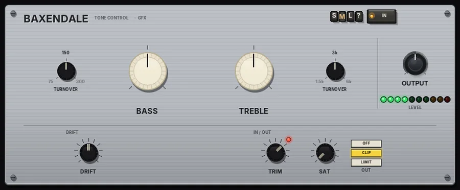
Overview
Baxendale is a bass and treble tone control in the spirit of the classic hi-fi tone circuit. Its curves are broad 6 dB per octave shelves that keep rising gently towards the extremes rather than flattening off, so a little goes a long way and the middle of the spectrum is left alone.
Each control has a TURNOVER switch that sets where it is half-way to its full effect. With the bass at 75 Hz and the treble at 6 kHz it only touches the very ends; at 300 Hz and 1.5 kHz it reshapes much more of the sound.
A slow drift makes the turnover points and gains wander very slightly, left and right independently, like real components warming up.
Reach for it for
- Quick, musical bass and treble shaping on a single track
- Adding weight or air without touching the mids
- Gentle broad tilts on vocals, keys and acoustic instruments
- Taming boomy or harsh recordings with a broad cut
Controls
Tone
- BASS
- Boosts or cuts the low end, -12 to +12 dB in 0.5 dB steps (hold Shift for free movement). The curve is a broad shelf, so the lowest notes move most.
- TURNOVER (bass)
- Where the bass control is half-way to its full effect: 75, 150 or 300 Hz. Click a label to pick it, or click / drag / scroll the switch. 75 Hz for just the bottom; 300 Hz to reshape the whole low end.
- TREBLE
- Boosts or cuts the top end, -12 to +12 dB in 0.5 dB steps (Shift for free movement).
- TURNOVER (treble)
- Where the treble control is half-way to its full effect: 1.5k, 3k or 6k. 6k adds or removes air; 1.5k brightens or darkens much more of the sound.
- IN
- Switches the tone controls in or out (in by default). When out, the tone section is dimmed and the audio passes flat; OUTPUT still works.
Output
- OUTPUT
- Output level, -12 to +12 dB. Use it to match the level after a boost or cut.
- LEVEL
- A row of ten LEDs showing the output peak level, from -30 dB up to just under 0 dBFS (green, then amber, then red).
Drift
The bass and treble turnover points and gains wander very slightly and slowly, separately on the left and right sides.
- DRIFT
- How much drift, 0 to 100% (50% by default). 50% is the standard amount, 100% is twice that and 0 switches it off. The wander also speeds up a little as you turn it up.
IN / OUT
- TRIM
- Input level before anything else, from -24 to +12 dB. A single click on the knob (without dragging) switches GUARD on or off; its LED sits at the knob's upper right.
- GUARD
- On by default. Gently eases very hot sources down towards about -18 dBFS average and catches fast peaks above -6 dBFS, so loud sources never overdrive the plugin. It never boosts quiet sources. The LED is red while it stands by and glows brighter while it is working.
- SAT
- Band saturation on the way out: only the lows and highs are saturated (the mids stay clean), with a soft curve that loosens as the level rises.
- OFF / CLIP / LIMIT
- The final stage: nothing, a soft clipper at -0.3 dBFS (no latency), or a lookahead limiter holding the peaks at -0.3 dBFS (3 ms latency, compensated by REAPER). The CLIP key flashes red while the clipper is working.
The header
- S / M / L
- Panel size: small, medium or large.
- ?
- Opens a pop-up with the design credit, the GFX website address and the address of this manual. Click anywhere to close it.
Tips
- Start with small moves: because the shelves keep rising towards the extremes, 2 or 3 dB is often all a track needs.
- For air without harshness, set the treble TURNOVER to 6k and add a few dB; for a darker, warmer tone, cut with it at 1.5k.
- Cutting BASS with TURNOVER at 300 Hz is a quick way to thin out a muddy guitar or piano in a busy mix.
- Switch IN on and off at matched levels (use OUTPUT) to judge whether the change really helps.
File: gfx-baxendale.jsfx
Bern EQ
A three-band broadcast channel equaliser with transformer-coupled input and output stages.
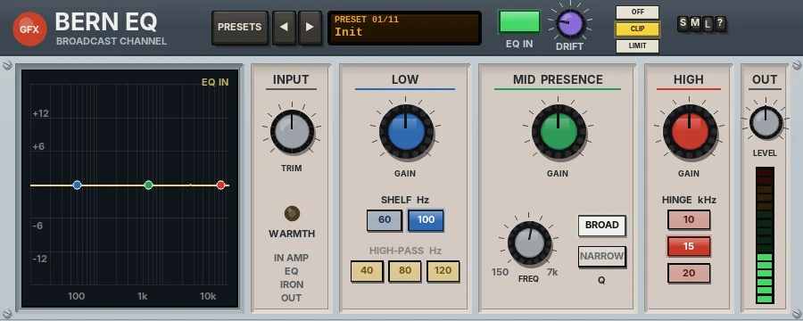
Overview
Bern EQ is the channel equaliser in the spirit of the classic Swiss broadcast consoles, and the companion of the Bern 16 summing mixer. It is musical, very open and very clean: a LOW section that is either a gentle shelf or a high-pass filter, a sweepable MID presence bell, and a smooth HIGH shelf for air.
The EQ sits between two amplifiers, as on the desk. The input amplifier has about 14 dB of headroom above 0 dBFS, so it is transparent at normal levels; push it with INPUT and a little even-harmonic warmth comes in, then a soft, round limit. The output amplifier feeds a transformer whose core thickens the lows first when it is driven.
The bands are carefully matched to their analogue curves, so the bell and the high shelf keep their true shape right up to the top of the audio range. Every control glides, so sweeping and switching never click.
Reach for it for
- Clean, broad tone shaping of vocals, guitars, piano and buses
- Adding glassy air with the high shelf without harshness
- Clearing rumble with the high-pass before anything else
- Presence and focus with the MID bell
- A touch of console warmth by driving the input
- Matching channels with Bern 16 for a whole-desk sound
Controls
The header
- PRESETS
- Opens the preset list.
- ◄ / ►
- Step to the previous or next preset (wrapping round).
- Preset display
- Shows the preset number and name. Click it for the preset list too.
- EQ IN
- Switches the three bands in or out (in by default). The amplifiers, the transformer and the OUT level stay in either way, as on the desk, so you hear the EQ alone when you compare.
- DRIFT
- How much the supply voltage wanders, 0 to 100% (20% by default). Its value shows beside it while you turn it. See Drift below.
- OFF / CLIP / LIMIT
- The final stage: nothing, a soft clipper that holds the peaks at -0.3 dBFS (no latency), or a lookahead limiter that holds them at -0.3 dBFS (3 ms latency, compensated by REAPER). CLIP is on by default; its key flashes red while it is clipping.
- S / M / L
- Panel size: small, medium or large. The panel also scales to fit the plugin window. A new instance opens in L.
- ?
- Opens a pop-up with the design credit, the GFX website address and the address of this manual. Click anywhere to close it.
Response window
Shows the EQ curve from 20 Hz to 20 kHz, plus and minus 18 dB. Each band is drawn faintly in its own colour (LOW blue, or yellow for the high-pass, MID green, HIGH red) with the total curve as the bright line, and a dot marks each band's frequency. The window reads EQ OUT and the curve goes flat when EQ IN is off.
INPUT
- TRIM
- Level into the input amplifier, -18 to +18 dB (0 dB by default). Turn it up to drive the amplifier for warmth.
- WARMTH lamp
- Glows amber as the input amplifier works harder. Off means it is clean.
- Signal flow
- IN AMP, EQ, IRON, OUT: the order the signal takes. EQ dims while EQ IN is off.
LOW
The LOW section is either a shelf or a high-pass filter. Pressing a SHELF key picks the shelf; pressing a HIGH-PASS key picks the filter. Switching between them crossfades without a click.
- GAIN
- Boost or cut for the low shelf, -15 to +15 dB (0 dB by default). It does nothing in high-pass mode, and its cap fades to show that.
- SHELF 60 / 100
- A gentle low shelf at 60 or 100 Hz (100 Hz by default; the shelf is the default mode).
- HIGH-PASS 40 / 80 / 120
- A clean 12 dB per octave high-pass at 40, 80 or 120 Hz, in place of the shelf.
MID PRESENCE
- GAIN
- Boost or cut, -15 to +15 dB (0 dB by default).
- FREQ
- The centre of the bell, 150 Hz to 7 kHz (1.2 kHz by default).
- BROAD / NARROW (Q)
- The width of the bell. BROAD (the default) is a musical, moderately wide curve; NARROW is about two and a half times tighter, for more focused work.
HIGH
- GAIN
- Boost or cut, -15 to +15 dB (0 dB by default).
- HINGE 10 / 15 / 20 kHz
- Where the high shelf is half-way to its full gain (15 kHz by default). The slope is gentle, with no bump, so a boost reaches well down into the upper mids: 10 kHz is the most obvious, 20 kHz the most airy.
OUT
- LEVEL
- Output level after the output amplifier and transformer, -18 to +18 dB (0 dB by default).
- Meter
- A 16-segment output meter, about -30 to 0 dBFS: green, amber near the top and red at the top two segments.
Drift
DRIFT lets the supply voltage wander slowly and smoothly, as on a real console. As it moves, the band gains ease by up to 2.5% and the band frequencies by up to 0.6% (at 100%), and the amplifiers' headroom rises and falls by up to 2 dB, so a hot signal softens a little more when the rail sags. At 0% the EQ stays exactly where you set it.
Knobs: drag up or down (Shift for fine moves) or use the mouse wheel; double-click to reset a knob to its default.
Presets
Presets set INPUT, the three bands and the OUT level, and switch EQ IN on. Init also resets DRIFT and the output stage; the others leave them as they are.
- Init
- The defaults: everything flat, 100 Hz shelf, 1.2 kHz BROAD bell, 15 kHz hinge.
- Vocal Air
- High-pass at 80 Hz, +1.5 dB at 3.2 kHz and +5 dB of air at 15 kHz; OUT -1 dB.
- Broadcast Voice
- INPUT +3 dB for a little warmth, high-pass at 120 Hz, +3 dB at 2.5 kHz, +2 dB at 10 kHz; OUT -4 dB.
- Kick Weight
- +6 dB at 60 Hz, -3.5 dB of box at 320 Hz, a little top at 10 kHz.
- Guitar Presence
- High-pass at 80 Hz, +3.5 dB at 2.2 kHz, +1.5 dB at 10 kHz.
- Bass Clean-Up
- High-pass at 40 Hz, -3 dB at 250 Hz and -2 dB at 10 kHz to tidy the top.
- Mix Bus Sheen
- +1 dB at 60 Hz, a hair less at 3 kHz and +3 dB of air at 20 kHz.
- Telephone
- INPUT +6 dB, high-pass at 120 Hz, a big NARROW +10 dB at 1.5 kHz and -15 dB at 10 kHz; OUT -8 dB.
- De-Mud
- -5 dB at 300 Hz with a slight low trim and +1.5 dB at 15 kHz.
- Piano Open
- A little less low end, -2 dB at 600 Hz and +3 dB at 15 kHz.
- Warm Drive
- INPUT +4 dB into the amplifier, +2.5 dB at 60 Hz, +1 dB at 1.8 kHz, +2 dB at 20 kHz; OUT -4 dB to match.
Tips
- For a vocal, start with HIGH-PASS 80 and add HIGH gain at 15 kHz before reaching for the MID bell.
- The high shelf is very gentle, so you can boost more than you would expect before it gets harsh.
- To hear the amplifiers, turn TRIM up until the WARMTH lamp glows, then bring LEVEL down by the same amount.
- Use EQ IN to compare: the amplifiers stay in circuit, so you hear only what the bands are doing.
- Set DRIFT to 0 for a static, repeatable EQ; leave a little in for a less clinical, hardware-like feel.
File: gfx-bern-eq.jsfx
Board EQ
A four-band channel EQ in the spirit of the classic British large-format console strips.

Overview
Board EQ is a console channel EQ: a high-pass and low-pass filter, a low and high band that can be shelves or bells, and two fully parametric mid bands. It ends in the channel's line amp, which can be driven into gentle saturation.
Two voicings recreate the two well-known generations of console EQ card. BROWN is the earlier, gentler card, with broad bells and soft shelves. BLACK is the later card: the bells tighten as you boost or cut further, and the shelves have a little dip or bump just inside the corner, for a more focused, punchy sound.
The display on the right shows the response of the whole EQ, with a coloured dot for each band.
Reach for it for
- Everyday channel EQ on vocals, drums, bass and guitars
- Punchy, focused boosts with the BLACK voicing
- Broad, musical tone shaping with the BROWN voicing
- Cleaning up the ends with the HPF and LPF
- A touch of line-amp warmth (DRIVE)
Controls
FILTERS
- HPF
- A high-pass filter, 18 dB per octave, from OFF (fully left) up to 400 Hz. Removes rumble and low-end mud.
- LPF
- A low-pass filter, 12 dB per octave, from 3 kHz up to OFF (fully right). Tames hiss and harsh top.
LF
- GAIN
- -15 to +15 dB.
- FREQ
- 30 to 450 Hz (100 Hz by default).
- BELL
- Off (default): a low shelf. On: a bell centred on FREQ.
LMF
- GAIN
- -15 to +15 dB.
- FREQ
- 200 Hz to 2.5 kHz (600 Hz by default).
- Q
- The bandwidth, 0.4 to 3 (1 by default). Higher is narrower. In BLACK the bell also narrows as you boost or cut more.
HMF
- GAIN
- -15 to +15 dB.
- FREQ
- 600 Hz to 7 kHz (2.5 kHz by default).
- Q
- The bandwidth, 0.4 to 3 (1 by default).
HF
- GAIN
- -15 to +15 dB.
- FREQ
- 1.5 to 16 kHz (8 kHz by default).
- BELL
- Off (default): a high shelf. On: a bell centred on FREQ.
LINE AMP
- DRIVE
- Pushes the channel's line amp into gentle saturation, 0 to 100%. It is level matched, so it adds colour rather than volume.
- OUTPUT
- Output level, -12 to +12 dB.
- EQ IN
- Switches the four EQ bands in or out (in by default). The HPF and LPF stay in.
- BROWN / BLACK
- The voicing (BLACK by default). BROWN: broad bells and soft shelves. BLACK: bells that tighten as you boost or cut (proportional Q), and shelves with a small opposite dip just inside the corner.
Display
- Response curve
- The frequency response of the filters, the EQ and OUTPUT together, from 20 Hz to 20 kHz and -18 to +18 dB. While the EQ is in, a dot in each band's cap colour shows its frequency and gain.
The header
- PRESETS
- Opens the list of factory presets; the arrows step through them and the display shows the one in use (click it for the list too). A preset sets all the EQ and line-amp controls (and puts the EQ in, OUTPUT at 0 dB). The last entry resets everything to the defaults.
- S / M / L
- Panel size: small, medium or large.
- ?
- Opens a pop-up with the design credit, the GFX website address and the address of this manual. Click anywhere to close it.
Board EQ has no input or output stage on its panel: there is no TRIM, SAT or OUT stage, as the line amp does that job. An input guard runs in the background (on by default), gently easing very hot sources down so they never overdrive the line amp.
Presets
- Vocal Presence
- HPF 90 Hz, a little 200 Hz and 350 Hz cut, a 3.5 kHz lift and a 12 kHz shelf; BLACK.
- Kick Punch
- A 60 Hz bell boost, a deep cut at 380 Hz and a 3 kHz click; BLACK with a little drive.
- Snare Crack
- HPF 80 Hz, body at 200 Hz, a 5 kHz crack and a 10 kHz shelf; BLACK with drive.
- Bass Weight
- LPF 9 kHz, a low shelf boost at 80 Hz, 250 Hz cut, 1.2 kHz definition; BROWN with drive.
- Acoustic Sparkle
- HPF 70 Hz, a little low and low-mid cut, broad 4 kHz and a 12 kHz shelf boost; BROWN.
- Mix Bus Air
- Gentle low shelf, a slight 3 kHz dip and a 14 kHz air shelf; BROWN with a little drive.
- Telephone
- HPF 400 Hz and LPF 3.5 kHz with a 1.5 kHz boost and heavy line-amp drive.
- De-mud
- HPF 60 Hz and a 5 dB cut at 300 Hz; BLACK.
- Brown Warmth
- LPF 16 kHz, low shelf boost, broad mids and a soft top; BROWN with 40% drive.
- De-harsh
- HPF 100 Hz, a narrow 4 dB cut at 6.5 kHz and a 15 kHz air shelf; BLACK.
- Reset all to defaults
- Every control back to its starting value.
Tips
- Try the same settings in BROWN and BLACK: BROWN for gentle, broad shaping, BLACK when a boost needs to be focused and punchy.
- In BLACK, big cuts get narrow on their own, so you can cut a resonance hard without hollowing out the sound around it.
- Use EQ IN to compare with and without the bands; the filters stay in, so the comparison is fair.
- A little DRIVE (10 - 25%) adds density without obvious distortion.
File: gfx-board-q.jsfx
Contour
A drawn-envelope filter: four hand-drawn curves move cutoff, resonance, volume and pan in time with the music.

Overview
Contour is a filter driven by curves you draw. Four curves run at once - CUTOFF, RESONANCE, VOLUME and PAN - each looping over a length you set, from a 1/32 note to 32 bars. Draw a pluck, a sweep, a stutter or a rhythmic gate, and Contour plays it back in time with the project, or restarts it on every MIDI note.
The filter itself is a 4x oversampled state-variable design with low-pass, high-pass, band-pass and notch modes. A diode-style soft clipper sits inside its feedback loop, so DRIVE adds analogue-style grit and resonance stays musical when pushed.
Each curve has its own amount knob, so you can switch any of them on or off without losing the drawing, and DEPTH scales all four together.
Reach for it for
- Rhythmic filter sweeps and plucks on pads, synths and loops
- Tempo-synced volume gating and ducking shapes (draw the dips)
- Auto-panning with any shape you like, not just a sine
- Triggered filter envelopes from MIDI notes (MIDI mode, one-shot)
- Wide, moving stereo filtering with STEREO offset
Controls
Curve tabs and the editor
The four tabs - CUTOFF, RESONANCE, VOLUME and PAN - pick which curve you are editing. The light on each tab shows that curve is in use (its amount knob is not at 0). The curve being edited is drawn filled in its colour; the other three show faintly behind it. The grid divides one cycle into 16 steps, with every fourth line brighter. The white line is the playhead; a fainter second line shows the right channel's place when STEREO is up. Top right, the current RATE, trigger mode and LOOP / ONE-SHOT are shown.
- Click
- Adds a point (up to 32 per curve). Keep the mouse down to drag it straight into place.
- Drag a point
- Moves it. The first and last points stay at the edges of the cycle; you can only move them up and down.
- Double-click a point
- Removes it (not the first or last).
- Drag a line
- Bends the line between two points into a curve. Dragging up lifts the middle of the line, whichever way it slopes.
- Double-click a line
- Straightens it again.
- Right-click
- A menu: Reset this curve (back to its starting shape), Flat (top), Flat (middle), Flat (bottom), Copy curve and Paste curve. Use copy and paste to move a shape from one tab to another.
The starting shapes: CUTOFF is a pluck (falls quickly from the top to the bottom), RESONANCE and VOLUME are flat, and PAN moves from centre to the right, across to the left and back to centre. The curves are saved with the project.
Filter
- MODE
- LP 6, LP 12, LP 18, LP 24 (low-pass, 6 to 24 dB per octave), HP 12 (high-pass), BP 12 (band-pass) or NOTCH. Starts on LP 12.
- CUTOFF
- The filter's base frequency, 20 Hz to 20 kHz. The cutoff curve moves the filter up (or down) from here.
- RESO
- Resonance, 0 - 100%. Higher settings add a whistling peak at the cutoff.
- DRIVE
- Pushes the input harder into the filter, 0 to +24 dB, so the soft clipper inside the filter adds grit. The level is compensated, so it changes the character more than the loudness.
Curve amounts
Each amount knob sits under a stripe in its curve's colour. At 0 that curve does nothing.
- CUTOFF
- How far the cutoff curve moves the filter, -8 to +8 octaves (starts at +4). The bottom of the curve is the CUTOFF knob's setting and the top is CUTOFF plus this amount. Negative amounts turn the curve upside down.
- RESO
- How far the resonance curve moves the resonance, -100 to +100%, added to the RESO knob.
- VOLUME
- How far the volume curve can turn the level down, 0 - 100%. The top of the curve is full level; the bottom is the level minus this amount. Draw dips to duck or gate.
- PAN
- How far the pan curve moves the sound, 0 - 100%. The middle of the curve is centre; the top pans to the right and the bottom to the left, fully at 100%.
- DEPTH
- Scales all four amounts at once, 0 - 100%, without changing the drawings. Good for automating the whole effect in and out.
- STEREO
- Moves the right channel's place in the curves later, up to half a cycle (0 - 50%). The cutoff, resonance and volume then move differently on each side, for wide, moving filtering. (PAN follows the left channel's place.)
Timing
- RATE
- The length of one cycle of the curves: 1/32, 1/16, 1/8, 1/4, 1/2, 1 BAR, 2, 4, 8, 16 or 32 BARS. Starts at 1 BAR.
- SYNC
- The curves follow the project's timeline, so they line up with the bars wherever you start playback. When the project is stopped, they keep running at the project tempo.
- MIDI
- Every MIDI note-on restarts the curves from the beginning. Put Contour on a track that receives MIDI (or send MIDI to it) and each note triggers the shape, like a filter envelope. MIDI passes through unchanged.
- FREE
- The curves run at the project tempo, without following the timeline - even when the project is stopped.
- LOOP / ONE-SHOT
- LOOP repeats the curves. ONE-SHOT (with MIDI) plays them once per note and then holds the end of the curve until the next note.
- TRIGGER
- Restarts the curves by hand. In SYNC mode while playing, it moves where the cycle starts to the current position.
- MIDI NOTE IN
- Lights when a MIDI note arrives.
IN / OUT
- TRIM
- Input level before anything else, from -24 to +12 dB.
- GUARD
- Click the TRIM knob (without moving it) to switch the guard; its light sits at the knob's upper right. Off by default on Contour. When on, it gently eases very hot sources down towards about -18 dBFS average and catches fast peaks above -6 dBFS, so loud sources never overdrive the filter. It never boosts quiet sources. The light glows brighter while it is catching peaks.
- MIX
- Dry / filtered balance, 0 - 100%. The VOLUME and PAN curves act on the mixed signal.
- OUTPUT
- Output level, -24 to +12 dB.
- SAT
- Band saturation on the way out: only the lows and highs are saturated (the mids stay clean), with a soft curve that loosens as the level rises.
- OFF / CLIP / LIMIT
- The final stage: nothing, a soft clipper (no latency), or a lookahead limiter that holds the peaks at -0.3 dBFS (3 ms latency, compensated by REAPER). CLIP is on by default; its key flashes red while it is clipping.
- IN / OUT meters
- Input and output level.
The header
- PRESETS, arrows and display
- PRESETS (or a click on the display) opens the list of factory presets; the ◄ / ► keys step through them. The display shows the preset number and name. See Presets below.
- S / M / L
- Panel size: small, medium or large. The panel also scales to fit the plugin window.
- ?
- Opens a pop-up with the design credit, the GFX website address and the address of this manual. Click anywhere to close it.
Presets
A preset sets the filter, the timing, the curve amounts, DEPTH and MIX, and redraws all four curves: loading one replaces the curves you have drawn. Every preset uses SYNC and LOOP. TRIM, GUARD, OUTPUT and the output stage are left as they are. A new instance opens on Init.
- Init
- The defaults: LP 12 at 400 Hz, the pluck curve on the cutoff over one bar.
- Acid Pluck 1/16
- LP 24 low down with high resonance and some drive, the pluck curve on every 1/16.
- Trance Gate 1/16
- The filter wide open; the volume curve is on for the first half of each 1/16 and off for the second.
- Sidechain Pump 1/4
- The filter wide open; the volume ducks at the start of each beat and swells back over the first half of it.
- 4-Bar Sweep
- LP 24 with some resonance and drive: the cutoff opens and closes over four bars, a little offset in stereo.
- Stereo Wah 1/4
- BP 12 with high resonance, sweeping up and down on each beat, the right side offset by half a cycle.
- HP Riser 8 Bars
- HP 12 rising from 40 Hz over eight bars, for a build.
- Ping-Pong Pan 1/8
- The filter wide open; the pan curve jumps left then right on each 1/8.
Using MIDI triggering
- Put Contour on the audio track you want to shape (for example a pad or a synth).
- Give that track MIDI: draw a MIDI item on it, or send MIDI to it from another track (in the send, set the MIDI to go to the track).
- Choose MIDI in the TIMING section, and ONE-SHOT if you want the shape to play once per note.
- Play: MIDI NOTE IN lights and the curves restart on every note-on. Set RATE to the length you want the shape to take.
Tips
- For a classic synth pluck, use the default CUTOFF curve, MODE LP 24, a low CUTOFF and RATE 1/8 or 1/16.
- For a sidechain-style pump without a key input, draw a dip at the start of the VOLUME curve, set VOLUME to 60 - 100% and RATE to 1/4.
- Bend the lines rather than adding lots of points: a single bent line gives a smooth exponential sweep.
- Draw the shape once, then use DEPTH to bring it in gradually through a song.
- Small STEREO settings (5 - 15%) widen the filter movement without making it sound like two separate effects.
File: gfx-contour.jsfx
Equaliser
A musical four-band parametric with overlapping bands, notches, shelves, low and high cuts, and mid / side.

Overview
Equaliser is a four-band parametric in the spirit of the classic 70s broadcast parametrics. The four bands - LF, LMF, HMF and HF - have overlapping ranges, so two bands can be stacked on the same area. The width is 'proportional': small boosts and cuts are gentle and broad, and the band gets narrower as you push the gain further. The last part of each GAIN knob's cut dives into a deep notch, down to -40 dB, for removing hum or a single ringing frequency.
LF and HF switch between a bell and a shelf. Separate low-cut and high-cut filters, each with a choice of four slopes, sit in front of the bands. In M / S mode each band can work on both, the mid only or the sides only. You can also work straight on the curve: drag a band's dot to set its frequency and gain.
Reach for it for
- Broad, musical tone shaping on vocals, instruments and buses
- Notching out hum or a single ringing frequency
- Cleaning up the lows and highs with the LOW CUT and HIGH CUT filters
- Mid / side work: tightening the low end of the sides, adding air to the width
- Lo-fi telephone and radio sounds
Controls
The bands: LF, LMF, HMF, HF
Each band has its own colour (brown, blue, green and red), used for its knob caps, its dot and its shaded curve on the display.
- FREQ
- The band's frequency. LF: 20 - 500 Hz (100 Hz by default). LMF: 80 Hz - 2 kHz (400 Hz). HMF: 400 Hz - 8 kHz (2.5 kHz). HF: 1.5 - 20 kHz (8 kHz). The ranges overlap, so bands can be stacked.
- GAIN
- Boost or cut, -12 to +16 dB in the normal range. Past -12 dB the knob dives into a notch: the last quarter of the cut goes down to -40 dB (shown as NOTCH).
- WIDTH
- The band's width in octaves, 0.05 to 4 (1 by default). Small values are narrow; large values are broad. Bells get narrower anyway as the gain is pushed. On a shelf, WIDTH sets how gentle the slope is.
- SHELF (LF and HF only)
- Switches the band between a bell and a shelf. Both start as shelves.
- ST / MID / SIDE
- Shown in M / S mode only. What the band works on: ST both, MID the centre (what is common to both sides), SIDE the sides (the difference).
FILTERS
- LOW CUT
- A high-pass filter, from OFF (fully left, 20 Hz) up to 1 kHz.
- HIGH CUT
- A low-pass filter, from 2 kHz up to OFF (fully right, 20 kHz).
- 12 / 24 / 36 / 48
- The slope of each filter in dB per octave, next to its knob. 12 is gentle; 48 is very steep. The filters have no bump at the corner.
The display
The curve covers 20 Hz to 20 kHz and plus or minus 18 dB. Each band that is boosting or cutting is shaded in its own colour, with the total curve drawn on top. In M / S mode, when any band works on the mid or side only, a second purple curve shows the side and the labels MID and SIDE appear.
- Band dots
- Drag a band's dot to set its frequency (left and right) and gain (up and down). Shelves show a square dot.
- Mouse wheel on a dot
- Changes the band's WIDTH.
- STEREO / M / S
- Under the curve. STEREO works on left and right; M / S lets each band work on the mid or the sides.
IN / OUT
- TRIM
- Input level before anything else, from -24 to +12 dB.
- GUARD
- Click the TRIM knob (without moving it) to switch the guard; its light sits at the knob's upper right and is lit while it is on. Off by default. Gently eases very hot sources down towards about -18 dBFS average and catches fast peaks above -6 dBFS, so loud sources never overdrive the plugin. It never boosts quiet sources. The light glows brighter while it is catching peaks.
- SAT
- Band saturation on the way out: only the lows and highs are saturated (the mids stay clean), with a soft curve that loosens as the level rises.
- OFF / CLIP / LIMIT (OUT)
- The final stage: nothing, a soft clipper (no latency), or a lookahead limiter that holds the peaks at -0.3 dBFS (3 ms latency, compensated by REAPER). CLIP is on by default; its key flashes red while it is clipping.
Drift
A slow random wander, like an unsteady power supply: the band frequencies and gains move together. Bands set flat stay flat.
- DRIFT
- How much drift, 0 to 100%. 50% (the default) is the standard amount, 100% is twice that, 0 switches it off. More drift also makes the wander a little faster.
Output
- Meter
- Output level, left and right.
- LEVEL
- Output level, -24 to +12 dB.
The preset row and colour strip
- PRESETS
- Opens the list of factory presets (a click on the display does the same). Choosing one sets the bands, filters and STEREO / M / S; drift, output level and the IN / OUT section are left as they are. The last entry resets everything to the defaults.
- ◄ / ►
- Step to the previous or next preset.
- Colour swatch
- Changes the faceplate colour: GREEN, BLUE or one of the GFX themes.
- S / M / L
- Panel size: small, medium or large. The panel also scales to fit the plugin window.
- ?
- Next to the S / M / L size keys. Opens a pop-up with the design credit, the GFX website address and the address of this manual. Click anywhere to close it.
- HW / FLAT
- Switches between the hardware-style panel and the flat look.
Presets
- Vocal Presence
- Low cut at 80 Hz, a little less low end and mud, +3 dB at 3 kHz and a +3 dB air shelf at 10 kHz.
- Kick Weight
- +4 dB bell at 60 Hz, -4 dB at 350 Hz, +3 dB click at 3.5 kHz; low cut at 30 Hz.
- Bass Clarity
- A little low shelf, -3 dB at 250 Hz, +2 dB at 800 Hz for definition, a slightly softer top.
- Acoustic Sparkle
- Lows and boxiness trimmed, +2 dB at 5 kHz and a +4 dB shelf at 12 kHz; low cut at 70 Hz.
- Mix Air
- A broad +3 dB shelf at 15 kHz, low cut at 25 Hz.
- Mud Cut
- -4 dB at 300 Hz, low cut at 50 Hz.
- Telephone
- Low cut at 400 Hz and high cut at 3.5 kHz (24 dB per octave) with +6 dB at 1.5 kHz.
- De-Harsh
- A narrow -4 dB cut at 3.2 kHz and -3 dB at 7 kHz.
- Hum Notch 50 Hz
- Deep, narrow notches at 50 Hz and 100 Hz.
- M/S Wide Air
- M / S mode, all on the sides: a -12 dB low shelf at 120 Hz, a little less mud and a +4 dB air shelf at 10 kHz.
- M/S Centre Focus
- M / S mode: a -10 dB low shelf at 150 Hz on the sides and +2 dB presence at 2 kHz on the mid.
- Reset all to defaults
- Every control back to its starting value.
Tips
- Because the width is proportional, small moves stay broad and musical - you rarely need to touch WIDTH for gentle tone shaping.
- To find a ringing frequency, boost a narrow band, sweep it until the ring jumps out, then turn GAIN right down into the notch.
- Stack two bands on the same area (the ranges overlap) for a bigger or more complex boost or cut.
- In M / S mode, try a low shelf cut on SIDE to keep the low end centred and solid.
File: gfx-equaliser.jsfx
Graphic EQ
A 31-band third-octave graphic equaliser with a real-time analyser behind the faders.
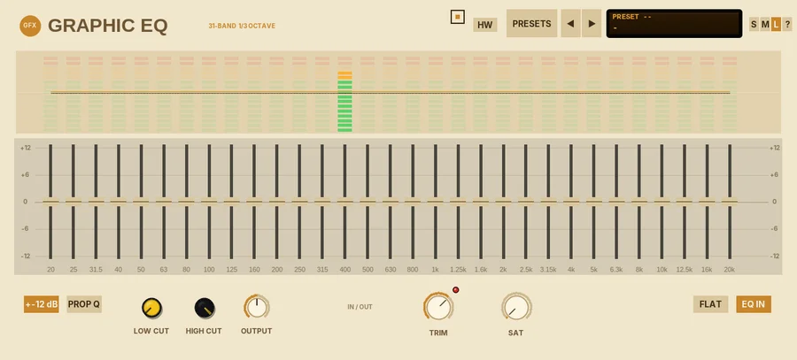
Overview
Graphic EQ is a 31-band, third-octave graphic equaliser in the spirit of the classic studio and live-sound rack graphics. There is one fader for every ISO third-octave band from 20 Hz to 20 kHz, so you can see the shape of your EQ at a glance and draw it with the mouse.
The bands are matched: on a real graphic, neighbouring bands overlap and add up, so the curve you hear is not quite the curve of the faders. Here the overlap is corrected, so the response follows the faders. The yellow line in the display shows the real response, over a live analyser of the output in each band.
Two Q modes cover both sides of the job: proportional Q for smooth tone shaping, constant Q for precise notching. A high-pass and low-pass filter round off the ends.
Reach for it for
- Broad tone shaping you can see at a glance
- Notching out feedback and ringing frequencies (CONST Q)
- Shaping a whole mix, a bus or a PA-style curve
- Quick 'smile', loudness and telephone curves
- Spotting where the energy sits with the analyser
Controls
The display
Behind the faders, a column of 16 LEDs per band shows the output level in that band (-72 to 0 dB), green, amber and red. The yellow line is the EQ's actual response, including the cut filters and the output level. It goes flat when EQ IN is off.
The faders
- Faders
- One per third-octave band, 20 Hz to 20 kHz, labelled with its ISO frequency. Drag a fader cap to move it (Shift for fine moves). Double-click a cap to centre it. The cap lights in the accent colour when its band is not at 0. The value shows above the band under the pointer.
- Drawing a curve
- Click or drag anywhere in the fader area away from a cap to draw a curve across the bands - the faders follow the mouse.
- Mouse wheel
- Nudges the band under the pointer (Shift for fine steps).
- Scale
- The figures at both ends of the fader area show the fader travel in dB; they change with RANGE.
Controls (bottom row)
- +-6 dB / +-12 dB (RANGE)
- The fader travel: +-6 dB (fine) or +-12 dB (the default). Switching it rescales the whole curve.
- PROP Q / CONST Q
- PROP (proportional, the default): the bands are broad for small moves and tighten as you push them further, which is smooth for tone shaping. CONST (constant): every band keeps its third-octave width at any setting, which is precise for notching.
- LOW CUT (yellow cap)
- An 18 dB per octave high-pass filter, 20 to 250 Hz. Fully left is OFF.
- HIGH CUT
- A 12 dB per octave low-pass filter, 3 to 22 kHz. Fully right is OFF.
- OUTPUT
- The level after the EQ, -12 to +12 dB.
- FLAT
- Centres every fader at once.
- EQ IN
- Switches the EQ and its cut filters in or out. OUTPUT and the IN / OUT section stay in.
IN / OUT
- TRIM
- Input level before anything else, -24 to +12 dB.
- GUARD
- On by default. A single click on the TRIM knob switches it; its LED sits at the knob's upper right (dark when off, red when on, brighter while it is catching). It gently eases very hot sources down towards about -18 dBFS average and catches fast peaks above -6 dBFS, so loud sources never overdrive the plugin. It never boosts quiet sources.
- SAT
- Band saturation on the way out, 0 to 100%: only the lows and highs are saturated (the mids stay clean), with a soft curve that loosens as the level rises.
- OFF / CLIP / LIMIT
- The final stage: nothing, a soft clipper at -0.3 dBFS (no latency), or a lookahead limiter that holds the peaks at -0.3 dBFS (3 ms latency, compensated by REAPER). While the output clips, the CLIP key flashes red.
The header
- PRESETS
- Opens the list of factory presets. You can also click the preset display. The last entry resets everything to the defaults.
- ◄ / ►
- Step to the previous or next preset (wrapping round).
- Theme picker
- Changes the panel's colour theme.
- HW
- Switches between the hardware-style panel and the flat look.
- S / M / L
- Panel size: small, medium or large. The panel also scales to fit the plugin window.
- ?
- Opens a pop-up with the design credit, the GFX website address and the address of this manual. Click anywhere to close it.
Presets
Presets draw a curve on the faders and set RANGE to +-12 dB, Q, the cut filters, OUTPUT to 0 dB and EQ IN on. The IN / OUT section is left as it is, except Reset.
- Smile
- Lifted lows (around 90 Hz) and highs (around 9 kHz) with a slight dip at 500 Hz.
- Vocal Presence
- A lift around 3.5 kHz, a little less at 250 Hz and a touch of top above 12 kHz.
- De-mud
- A cut of about 5 dB around 300 Hz, and a little at 150 Hz.
- Air
- A gentle high shelf from around 10 kHz.
- Telephone
- Everything below 300 Hz and above 3.5 kHz pulled right down, a lift at 1.3 kHz, and LOW CUT at 250 Hz.
- Bass Boost
- A low shelf of about 7 dB below 80 Hz, with a slight dip at 250 Hz.
- Hi-Fi Loudness
- Strong lifts at both ends (around 60 Hz and 12 kHz), like a hi-fi loudness switch.
- Mid Scoop
- A broad dip of about 4 dB centred on 800 Hz.
- Warm & Smooth
- A little low-end warmth, a dip around 2.8 kHz and a slightly softer top.
- Live Feedback Notches
- CONST Q with narrow cuts around 250 Hz, 2.5 kHz and 4 kHz, typical feedback areas on stage.
- Reset all to defaults
- Every control back to its starting value, including the IN / OUT section.
Tips
- Switch to +-6 dB RANGE for fine mastering moves: the full fader travel then covers only 6 dB.
- To find a ringing frequency, switch to CONST Q, push one fader right up and sweep along the bands until it rings, then pull that fader down.
- Draw broad curves with a single drag across the fader area, then fine-tune single bands with the mouse wheel.
- Use EQ IN to compare, and set OUTPUT so the level matches before you judge.
File: gfx-graphic-eq.jsfx
Skye
A four-band broadcast parametric equaliser with wide, overlapping band ranges, shelving end bands and high-pass and low-pass filters.
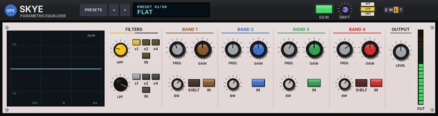
Overview
Skye is a four-band fully parametric equaliser in the spirit of the classic broadcast rack EQs. Each band has its own frequency, bandwidth and gain, and the ranges overlap widely, so any band can reach almost anywhere: band 1 covers 20 - 800 Hz, band 2 80 Hz - 3 kHz, band 3 300 Hz - 10 kHz and band 4 1 - 20 kHz. BAND 1 and BAND 4 can also be switched to low and high shelves, and a high-pass and a low-pass filter, each with a choice of three slopes, bracket the four bands.
Bandwidth is set in octaves, from a deep, narrow notch (0.1 octave) to a broad tilt (4 octaves), with up to 16 dB of boost or cut per band. A response window on the left draws each band in its own colour with the total curve over the top.
Behind the EQ sits a model of the unit's op-amp headroom: it is transparent until a very hot signal nears the rail, and then softens it a little. The DRIFT dial lets the supply voltage wander, as on real hardware.
Reach for it for
- Broad tone shaping of vocals, instruments and buses
- Notching out hum and single resonances with a narrow bandwidth
- Gentle mastering curves (wide bandwidths, small gains)
- Telephone and radio-voice effects
- Shaping kick and bass with overlapping low bands
- Clearing rumble and taming hiss with the HPF and LPF
Controls
The header
- PRESETS
- Opens the full preset list.
- < / >
- Step to the previous or next preset (wrapping round).
- Preset display
- Shows the preset number and name. Click it for the preset list too. While you move a control, it shows that control's name and value for a moment.
- EQ IN
- Switches the whole equaliser, filters included, in or out. The output level and the output stage stay in either way.
- DRIFT
- How much the virtual supply voltage wanders, 0 to 100% (20% by default). See Drift below.
- OFF / CLIP / LIMIT
- The final stage: nothing, a soft clipper at -0.3 dBFS (no latency), or a lookahead limiter that holds the peaks at -0.3 dBFS (3 ms latency, compensated by REAPER). While the output clips, the CLIP key flashes red.
- S / M / L
- Panel size: small, medium or large. The panel also scales to fit the plugin window.
- ?
- Opens a pop-up with the design credit, the GFX website address and the address of this manual. Click anywhere to close it.
Response window
Shows the EQ curve from 20 Hz to 20 kHz, plus and minus 18 dB. Each band that is in is drawn faintly in its own colour (brown, blue, green, red), and the HPF and LPF in yellow and grey, with the total curve as the bright line. The window reads EQ OUT and the curve goes flat when EQ IN is off.
FILTERS
A high-pass filter (HPF, yellow cap) before the four bands and a low-pass filter (LPF, black cap) after them. Both are out by default.
- HPF
- The high-pass corner, 10 Hz - 1 kHz (30 Hz by default).
- LPF
- The low-pass corner, 1 - 22 kHz (18 kHz by default).
- x1 / x2 / x4
- The slope of each filter: x1 = 12 dB per octave, x2 = 24 dB per octave, x4 = 48 dB per octave. Each is a clean Butterworth filter with no bump at the corner.
- IN
- Switches that filter in or out.
BAND 1 to BAND 4
The four bands have the same controls; only the frequency range differs. The bands work in series, band 1 first.
- FREQ
- The centre of the band. BAND 1: 20 - 800 Hz (100 Hz by default). BAND 2: 80 Hz - 3 kHz (500 Hz). BAND 3: 300 Hz - 10 kHz (2.5 kHz). BAND 4: 1 - 20 kHz (8 kHz).
- GAIN (coloured cap)
- Boost or cut, -16 to +16 dB; 0 dB by default.
- BW
- The bandwidth in octaves, 0.1 to 4 (1 by default). Small values make a narrow, deep notch or a sharp peak; large values a broad, gentle tilt.
- SHELF
- BAND 1 and BAND 4 only. Turns the band into a low shelf (BAND 1) or a high shelf (BAND 4) at FREQ. In SHELF mode BW sets the slope of the shelf: lower values give a steeper shelf with a slight bump, higher values a gentler one. BW 1 gives a classic shelf.
- IN
- Switches the band in or out.
OUTPUT
- LEVEL
- Output level after the EQ, -12 to +12 dB.
- OUT meter
- A 20-segment output level meter.
Drift
DRIFT lets the supply voltage wander slowly and smoothly, as on a real rack unit. As it moves, the band gains ease by up to 2.5% and the band centres by up to 0.6% (at 100%), and the op-amp headroom rises and falls by up to 2.5 dB, so a hot signal softens a little more when the rail sags. At 0% the EQ stays exactly where you set it.
Knobs: drag up or down (Shift for fine moves); double-click or Ctrl-click to reset a knob to its default.
Presets
Presets set the four bands and the output level, switch every band in as a bell, and switch both filters out. EQ IN, DRIFT and the output stage are left as they are.
- Flat
- All four bands at 0 dB in their default positions, output 0 dB.
- Vocal Presence
- A little cut at 120 Hz and 350 Hz, +3 dB at 3.2 kHz and +2 dB of air at 10 kHz.
- Kick and Bass
- +4 dB at 60 Hz, -4 dB at 300 Hz and a broad +3 dB at 2.8 kHz for the click.
- Air Lift
- A gentle lift at 5 kHz and +4 dB around 14 kHz, both broad.
- Telephone
- Deep, broad cuts at 200 Hz and 6 kHz with a boost at 1.2 and 2.4 kHz: a narrow phone-line voice.
- Hum Notch 50 Hz
- Very narrow cuts at 50 Hz (-16 dB) and 100 Hz (-12 dB) to remove mains hum.
- Mastering Smile
- Broad, small moves: +2 dB at 50 Hz and 12 kHz, a slight dip in the mids.
- Broadcast Voice
- Low end trimmed at 90 Hz, a touch of warmth at 250 Hz, presence at 2.5 kHz and a little less at 7 kHz.
Tips
- To clean up a vocal, put the HPF in at x2 around 80 - 100 Hz before reaching for any of the bands.
- For hum, use BW 0.1 and sweep FREQ slowly with a big cut until the hum disappears, then back the gain off as far as you can.
- Because the ranges overlap, you can stack two bands on the same area - for example two narrow cuts on neighbouring resonances.
- Use EQ IN to compare: the output level stays in circuit, so set LEVEL to match the loudness before judging.
- Set DRIFT to 0 for a static, repeatable EQ; leave a little in for a less clinical, hardware-like feel.
File: gfx-skye.jsfx
Surgical EQ
Six precise parametric bands on a large curve with a live spectrum, mid / side per band and dynamic bells.

Overview
Surgical EQ is a clean, precise equaliser for detailed work: finding and taming resonances, carving space, and shaping the mid and side of a stereo signal separately. Six bands sit on a large curve display over a live spectrum of the output, and you can work directly on the curve by dragging the band dots.
Each band can be a bell, a shelf, a notch or a steep 24 dB per octave cut, and can work on the stereo pair, the mid only or the side only. Bells can also be dynamic: they only move when the band gets loud, so a harsh resonance is cut only when it rings. A high-pass and low-pass filter with selectable slopes sit ahead of the bands.
Reach for it for
- Notching out ringing resonances, hum or a single harsh frequency
- Taming harshness or boom only when it happens (dynamic bells)
- Mid / side work: cleaning the low end of the sides, lifting the centre
- Steep clean-up filtering with the HPF / LPF at up to 48 dB per octave
- Finding problem frequencies with SOLO and the analyser
Controls
The display
The curve covers 20 Hz to 20 kHz and plus or minus 24 dB. Each active band is drawn faintly in its own colour, with the total curve on top. When a band is dynamic, a second total curve in the accent colour shows where the EQ is right now. Behind it, the filled spectrum shows the output after the EQ.
- Band dots
- Each active band has a numbered dot in its colour (round for bells and notches, square for shelves and cuts). Drag a dot to move the band: left and right for frequency, up and down for gain. Hold Shift for fine moves. The dot shows M or S under it when the band works on the mid or side.
- Mouse wheel on a dot
- Changes the band's Q.
- Double-click a dot
- Switches that band off.
- Double-click empty space
- Switches on the first band that is off, as a bell at that frequency and gain.
Band
This section shows the selected band. Clicking or dragging a dot also selects its band.
- 1 - 6
- The six coloured keys pick the band to edit.
- Type
- Click to choose: OFF, BELL, LOW SHELF, HIGH SHELF, NOTCH, LOW CUT or HIGH CUT. The cuts are 24 dB per octave with no bump at the corner. All six bands start as bells at 0 dB, at 80 Hz, 250 Hz, 800 Hz, 2.5 kHz, 6 kHz and 12 kHz.
- SOLO
- Hear only the region the selected band works on: a band-pass at its frequency and Q, on its target (stereo, mid or side). Use it to hunt for a resonance, then switch it off. While a band is soloed, the FLAT ALL key in the header becomes SOLO OFF.
- FREQ
- The band's frequency, 20 Hz to 20 kHz.
- GAIN
- Boost or cut, -24 to +24 dB. Bells and shelves only - notches and cuts have no gain.
- Q
- The band's width, 0.1 to 30. Low values are broad and gentle; high values are very narrow, for single resonances. On shelves it sets the shape of the corner (0.3 at least). The cuts have a fixed 24 dB per octave slope instead.
- ST / M / S (TARGET)
- What the band works on: ST the stereo pair, M the mid (what is common to both sides), S the side (the difference).
Dynamics
For bells only (the section shows BELLS ONLY for other types). A dynamic bell listens to its own band: when the level there goes over THRESH, the band moves away from its GAIN setting by up to RANGE. The further over the threshold, the further it moves - half of RANGE at 6 dB over.
- DYN
- Makes the selected bell dynamic.
- THRESH
- The level in the band where it starts to move, -60 to 0 dB.
- RANGE
- How far the band can move, -24 to +24 dB. Negative cuts a resonance only when it rings; positive lifts the band only when it gets busy.
- ATTACK
- How fast dynamic bands react, 0.5 - 100 ms. Shared by all bands.
- RELEASE
- How fast they recover, 10 - 1000 ms. Shared by all bands.
Filters
The high-pass and low-pass come before the six bands. Both are Butterworth filters, with no bump at the corner.
- HPF
- High-pass filter, 20 Hz (OFF - out of circuit) to 1 kHz.
- LPF
- Low-pass filter, 1 kHz to 20 kHz (OFF at the top).
- SLOPE
- Click to step through x1, x2, x3 and x4: 12, 24, 36 or 48 dB per octave. Both start at x2 (24 dB). The key lights while its filter is in.
IN / OUT
- TRIM
- Input level before anything else, from -24 to +12 dB.
- GUARD
- Click the TRIM knob (without moving it) to switch the guard; its light sits at the knob's upper right and is lit while it is on. On by default. Gently eases very hot sources down towards about -18 dBFS average and catches fast peaks above -6 dBFS, so loud sources never overdrive the plugin. It never boosts quiet sources. The light glows brighter while it is catching peaks.
- SAT
- Band saturation on the way out: only the lows and highs are saturated (the mids stay clean), with a soft curve that loosens as the level rises.
- OFF / CLIP / LIMIT
- The final stage: nothing, a soft clipper (no latency), or a lookahead limiter that holds the peaks at -0.3 dBFS (3 ms latency, compensated by REAPER). CLIP is on by default; its key flashes red while it is clipping.
Master
- OUTPUT
- Output level, -24 to +12 dB.
- OUT meters
- Output level, left and right.
The header
- Theme picker
- Changes the panel's colour theme.
- S / M / L
- Panel size: small, medium or large. The panel also scales to fit the plugin window.
- ?
- Next to the S / M / L size keys. Opens a pop-up with the design credit, the GFX website address and the address of this manual. Click anywhere to close it.
- HW
- Switches between the hardware-style panel and the flat look.
- ANALYSER
- Shows or hides the spectrum behind the curve.
- FLAT ALL
- Sets the gain of all six bands to 0 dB (types, frequencies and Q are kept). While a band is soloed this key reads SOLO OFF and ends the solo instead.
Tips
- To find a resonance: boost a narrow bell (Q 8 or more) by 10 dB or so, sweep it until the problem jumps out, then turn the gain down into a cut.
- For a resonance that only rings on some notes, use a dynamic bell with GAIN at 0 and a negative RANGE, and set THRESH so it only moves on the loud notes.
- Cleaning up a stereo mix: a LOW CUT on S at 100 - 150 Hz keeps the low end centred without touching the bass in the middle.
- SOLO with a narrow Q is a quick way to hear exactly what you are about to cut.
- Double-click a dot to switch a band off and compare the sound with and without it.
File: gfx-surgical-eq.jsfx
Tilt EQ
A one-knob tilt equaliser with high- and low-pass filters and mid / side tilt.

Overview
Tilt EQ is in the spirit of the classic one-knob hi-fi and mastering tilt controls. One knob seesaws the whole spectrum around a pivot point: turn it right and the top rises as the bottom falls (brighter), turn it left for darker. It is the quickest way to change the overall balance of a track or a mix without thinking about bands.
High- and low-pass filters with selectable slopes clean up the extremes, and the tilt can work on the whole stereo signal, on the middle only or on the sides only. A response window shows the combined curve.
Reach for it for
- Quick brightness or warmth changes on a mix bus or master
- Matching the tonal balance of different takes or stems
- Brightening the centre or darkening the sides (MID / SIDE)
- Steep high- and low-pass clean-up
- Telephone and band-limited effects
Controls
Response window
Shows the combined curve of the filters, the tilt and OUTPUT from 20 Hz to 20 kHz, on a +/- 8 dB scale. The small triangle at the bottom marks the PIVOT.
High-pass
- FREQ
- The high-pass cutoff, 10 - 1000 Hz. Fully left = OFF.
- Slope
- The knob beside it: 6, 12 (default), 18, 24, 36 or 48 dB/oct. All slopes are Butterworth (maximally flat).
Tilt
- TILT
- The big knob. Right is BRIGHTER, left is DARKER; the word under it shows which, or FLAT at the centre. The value is the lift or cut at each end, up to 6 dB (12 dB end to end); hover over the knob to read it.
- PIVOT
- The balance point, 100 Hz - 5 kHz (800 Hz by default). Frequencies here stay where they are; the tilt rises on one side and falls on the other.
- GENTLE / STEEP
- GENTLE (default): a long, even 6 dB/oct slope across the whole range. STEEP: turns over more quickly around the pivot and leaves the far ends flatter.
Low-pass
- FREQ
- The low-pass cutoff, 1 - 22 kHz. Fully right = OFF.
- Slope
- The knob beside it: 6, 12 (default), 18, 24, 36 or 48 dB/oct, Butterworth.
Bottom row
- STEREO / MID / SIDE
- Where the tilt works: on both sides (STEREO, default), on the middle only or on the sides only - for example darken the sides and brighten the centre. The filters always work on both sides.
- TRIM
- Input level before anything else, from -24 to +12 dB.
- GUARD
- Click the TRIM knob to switch it; its LED sits at the knob's upper right. On by default. Gently eases very hot sources down towards about -18 dBFS average and catches fast peaks above -6 dBFS, so loud sources never overdrive the plugin. It never boosts quiet sources. The LED glows brighter while it is working.
- SAT
- Band saturation on the way out: only the lows and highs are saturated (the mids stay clean), with a soft curve that loosens as the level rises.
- OFF / CLIP / LIMIT
- The final stage: nothing, a soft clipper at -0.3 dBFS (no latency), or a lookahead limiter (3 ms latency, compensated by REAPER). CLIP is on by default and flashes red when it clips.
- OUTPUT
- Output level, -12 to +12 dB.
- EQ IN
- Switches the filters and tilt in or out (in by default). OUTPUT and the IN / OUT stages keep working.
The header
- HORIZON / CLASSIC
- Switches between the two looks: HORIZON (sky and sea, gold) and CLASSIC (cream and red). The sound is the same.
- PRESETS
- Opens the list of factory presets; the ◄ / ► keys step through them and the display shows the one in use (click it for the list too). Choosing one sets the tilt, filters, STEREO / MID / SIDE, OUTPUT and EQ IN; the input and output stages are left as they are. The last entry resets everything to the defaults.
- S / M / L
- Panel size: small, medium or large. The panel also scales to fit the plugin window.
- ?
- Opens a pop-up with the design credit, the GFX website address and the address of this manual. Click anywhere to close it.
In REAPER's parameter list only
- Bias / Sat low band / Sat high band / Ceiling
- The rest of the output stage: the saturation's even-harmonic bias, where its low and high bands start (40 - 400 Hz and 2 - 16 kHz) and the clip ceiling or limiter threshold.
Presets
- Mix Bus Lift
- 1.5 dB brighter around 1 kHz, with a gentle 24 dB/oct high-pass at 25 Hz.
- Warm It Up
- 1.5 dB darker around 800 Hz, with a soft roll-off above 18 kHz.
- Vocal Forward
- 3 dB brighter with the STEEP shape at 1.5 kHz, and an 18 dB/oct high-pass at 80 Hz.
- Dark & Thick
- 3 dB darker at 600 Hz, a high-pass at 30 Hz and a low-pass at 9 kHz.
- Bright Sides
- 2 dB brighter on the sides only, pivoting at 700 Hz.
- Tame the Sides
- 2 dB darker on the sides only, STEEP at 2 kHz.
- Telephone Band
- No tilt; a band from 300 Hz to 3 kHz with 24 dB/oct filters.
- Thin Out (steep HPF)
- 2.5 dB brighter at 400 Hz with a 48 dB/oct high-pass at 120 Hz.
- Vintage Mid Roll-off
- 1 dB darker on the middle only, with a 24 dB/oct high-pass at 20 Hz and an 18 dB/oct low-pass at 14 kHz.
- Clean Up (filters only)
- No tilt; 36 dB/oct filters at 30 Hz and 20 kHz.
- Reset all to defaults
- Every control back to its starting value, including the input and output stages.
Tips
- Small moves go a long way: 1 - 2 dB of tilt is often enough on a full mix.
- Move the PIVOT to where the music's important energy sits; that part stays put while the balance shifts around it.
- Use EQ IN to compare, and adjust OUTPUT so the louder version doesn't fool your ears.
- SIDE with a darker tilt keeps wide cymbals and reverbs from getting harsh, without dulling the vocal in the centre.
File: gfx-tilt-eq.jsfx
TransEQ
A hybrid program equaliser: passive-style curves at the ends, versatile bells in the middle, and transformer iron on the way in and out.
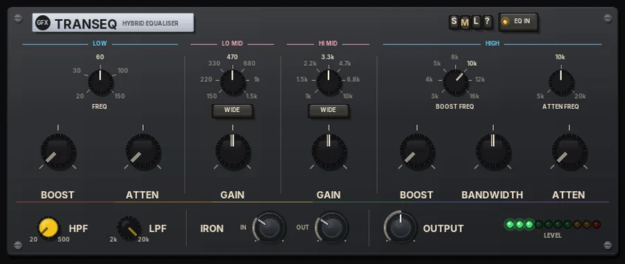
Overview
TransEQ combines the broad, musical curves of a classic passive program equaliser at the low and high ends with two more flexible bell bands in the middle. The signal passes through an input transformer, the EQ and an output transformer.
The low band has the famous trick of the passive designs: BOOST and ATTEN are separate and can be used together. The boost is a slightly resonant shelf and the cut a much broader one, so using both lifts the lowest lows while carving a dip above them. The high band has a boost bell with its own BANDWIDTH and a separate cut shelf.
The IRON transformers saturate on magnetic flux, so the low end thickens first with mostly low-order harmonics while the mids and highs stay clean; below saturation they are transparent. A very slight drift is built in: the band frequencies and gains wander a little, like components warming up. The name is a tribute to the trans community, hence the blue and pink accents.
Reach for it for
- Broad, musical tone shaping on a mix bus or master
- The classic 'boost and cut' low end on kick, bass and full mixes
- Air and presence on vocals and acoustic instruments
- Adding transformer weight and density to the lows
- Quick clean-up with the HPF and LPF
Controls
Big knobs: drag up and down (Shift for fine control) or use the mouse wheel; double-click to reset. The value shows while you hover. Stepped selectors: click a printed value to pick it, or click, drag or scroll on the knob to step through.
The header
- S / M / L
- Panel size: small, medium or large. The panel also scales to fit the plugin window.
- ?
- Opens a pop-up with the design credit, the GFX website address and the address of this manual. Click anywhere to close it.
- EQ IN
- Switches the EQ curves in and out (in by default; the light shows when it is in). The transformers stay in circuit either way, so you can compare the EQ alone. While it is out the EQ section is dimmed.
LOW
- FREQ
- The low band's frequency: 20, 30, 60, 100 or 150 Hz.
- BOOST
- A slightly resonant low shelf, 0 to 10 (up to about +14 dB).
- ATTEN
- A much broader, gentler low cut, 0 to 10 (up to about -13 dB). Used together with BOOST it lifts the lowest lows with a dip above them - at 60 Hz with both full, about +7 dB at 30 Hz and -6 dB at 100 Hz.
LO MID and HI MID
- Frequency selector
- LO MID: 150, 220, 330, 470, 680 Hz, 1 kHz or 1.5 kHz. HI MID: 1, 1.5, 2.2, 3.3, 4.7, 6.8 or 10 kHz.
- WIDE / NARROW
- The base width of the bell. Click to switch.
- GAIN
- Boost or cut, -12 to +12 dB. The bell narrows as the gain goes up (proportional Q), so small moves are broad and gentle, big ones more focused.
HIGH
- BOOST FREQ
- The high boost's frequency: 3, 4, 5, 8, 10, 12 or 16 kHz.
- ATTEN FREQ
- Where the high cut starts: 5, 10 or 20 kHz.
- BOOST
- A high bell, 0 to 10 (up to about +16 dB).
- BANDWIDTH
- The width of the high boost, 0 (sharp) to 10 (broad). 5 by default.
- ATTEN
- A high shelf cut, 0 to 10 (up to about -16 dB).
Bottom row
- HPF (yellow cap)
- A 12 dB / octave high-pass, 20 - 500 Hz. Fully left is OFF (out of circuit).
- LPF (black cap)
- A 12 dB / octave low-pass, 2 - 20 kHz. Fully right is OFF.
- IRON IN
- How hard the input transformer is driven, 0 to 10 (3 by default). Higher settings thicken the lows with mostly low-order harmonics; the mids and highs stay clean.
- IRON OUT
- The same for the output transformer, after the EQ and OUTPUT. Boosting the lows into it saturates it more.
- OUTPUT
- Output level, -12 to +12 dB, set before the output transformer - so it also changes how hard IRON OUT works.
- LEVEL
- LED meter of the output level.
Two stages work in the background with no controls on the panel: an input guard that gently eases very hot sources down towards about -18 dBFS average and catches fast peaks above -6 dBFS (it never boosts quiet sources), and a soft clipper that holds the output peaks at -0.3 dBFS.
Tips
- For the classic low end, set FREQ to 30 or 60 Hz and turn BOOST and ATTEN up together: the lows get bigger and tighter at the same time.
- For air without harshness, use HIGH BOOST at 10 - 16 kHz with a broad BANDWIDTH, and a touch of ATTEN at 20 kHz if it gets fizzy.
- Use EQ IN to compare: the transformers stay in, so you only hear what the EQ curves are doing.
- Turn IRON IN and IRON OUT to 0 for a clean EQ; raise them on bass, kick and mix bus for weight.
- Because OUTPUT sits before the output transformer, raising it pushes IRON OUT harder - lower IRON OUT if you only want more level.
File: gfx-transeq.jsfx
ADPMod
A harmonic ring modulator with five carrier waves, tape-style drive and a tone filter.
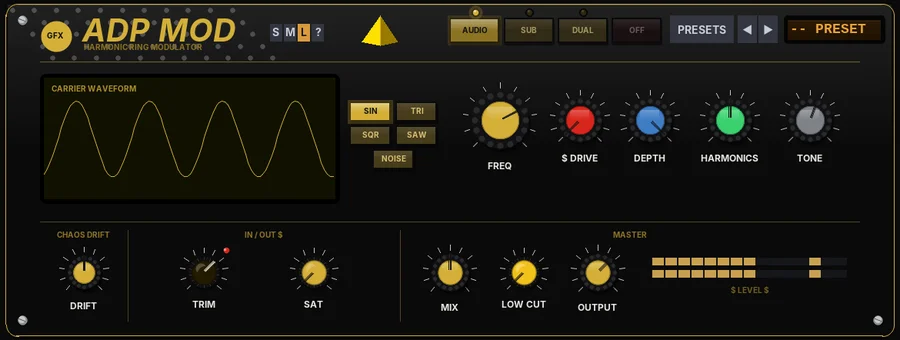
Overview
ADPMod is a ring modulator: it multiplies your signal by a carrier wave. At audio-rate carrier frequencies this turns notes into clangorous, bell-like and metallic tones that no longer follow the original pitch; at very low carrier frequencies it becomes a pulsing, tremolo-like effect. The carrier can be a sine, triangle, square, saw or noise, and HARMONICS adds the carrier's octave on top for a richer, more complex result.
After the modulation, the effected (wet) signal goes through a tape-style DRIVE stage and a TONE low-pass filter before it is blended with the dry signal. A slow random 'chaos drift' moves the carrier frequency, the character of the drive and the tone filter, so the effect never sits completely still. A low cut on the blend keeps the bass clean if you want it to.
Reach for it for
- Metallic, bell-like and robotic vocals
- Clangorous textures from synths, guitars and drums
- Slow, pulsing tremolo with low carrier frequencies
- Wide, shimmering stereo modulation (DUAL)
- Adding grit and movement to sound design
Controls
Modes (header)
- AUDIO
- One carrier for both sides, so the result stays mono-compatible. The default.
- SUB
- The same ring modulator. Use it with low FREQ settings, where the carrier is below the audible range and the effect becomes a pulse or tremolo.
- DUAL
- The right side's carrier runs very slightly detuned (0.5%) from the left, so the two sides drift against each other for a wider stereo image.
- OFF
- The ring modulator is switched off: the audio passes through the input and output stages only.
The carrier
- CARRIER WAVEFORM display
- Shows the carrier wave, moving with it.
- SIN / TRI / SQR / SAW / NOISE
- The carrier wave. SIN gives the purest ring-mod tones; TRI is a little brighter; SQR and SAW are harsh and buzzy, with many more side tones; NOISE turns the signal into a gritty, broken texture.
- FREQ
- The carrier frequency, 0.5 Hz to 2 kHz (220 Hz by default). Low settings give a pulse or tremolo; audio-rate settings give metallic, bell-like tones.
- DRIVE
- A tape-style saturation stage on the modulated (wet) signal, 0 to 10 (0 by default). It warms the sound at low settings and adds thickness and grit as you turn it up.
- DEPTH
- How much the carrier modulates the signal, 0 to 100% (100% by default). 100% is full ring modulation; lower settings keep more of the unmodulated signal in the wet sound.
- HARMONICS
- Adds the carrier's octave (twice its frequency) to the carrier, 0 to 100% (50% by default), for a denser, more complex set of tones.
- TONE
- A low-pass filter on the wet signal, 20 Hz to 18 kHz (1 kHz by default). Turn it down to tame harsh side tones; turn it up for a brighter, more metallic effect.
Drift
CHAOS DRIFT: a slow random wander of the carrier frequency, the character of the drive and the TONE filter.
- DRIFT
- How much drift, 0 to 100%. 50% (the default) is the standard amount, 100% is twice that, 0 switches it off. More drift also makes the wander a little faster.
IN / OUT
- TRIM
- Input level before anything else, from -24 to +12 dB.
- GUARD
- Click the TRIM knob (without moving it) to switch the guard; its light sits at the knob's upper right and is lit while it is on. On by default. Gently eases very hot sources down towards about -18 dBFS average and catches fast peaks above -6 dBFS, so loud sources never overdrive the plugin. It never boosts quiet sources. The light glows brighter while it is catching peaks.
- SAT
- Band saturation on the way out: only the lows and highs are saturated (the mids stay clean), with a soft curve that loosens as the level rises.
- OFF / CLIP / LIMIT (OUT)
- The final stage: nothing, a soft clipper (no latency), or a lookahead limiter that holds the peaks at -0.3 dBFS (3 ms latency, compensated by REAPER). CLIP is on by default; its key flashes red while it is clipping.
Master
- MIX
- Dry / wet balance, 0 to 100% (50% by default).
- LOW CUT
- Keeps the lows dry: below this frequency the effect is not blended in, so the bass stays clean and solid. From off (fully left, 20 Hz) to 500 Hz.
- OUTPUT
- Output level, -24 to +12 dB.
- LEVEL meters
- Output level, left and right.
The header
- PRESETS
- Opens the list of factory presets (a click on the display does the same). Choosing one sets the mode, carrier, drive, depth, harmonics, tone and mix; drift, LOW CUT, output and the IN / OUT section are left as they are.
- ◄ / ►
- Step to the previous or next preset.
- S / M / L
- Panel size: small, medium or large. The panel also scales to fit the plugin window.
- ?
- Next to the S / M / L size keys. Opens a pop-up with the design credit, the GFX website address and the address of this manual. Click anywhere to close it.
Presets
- Vocal Ring (Classic)
- AUDIO mode, 440 Hz sine, light drive, 30% harmonics, tone at 2.5 kHz, 70% mix.
- Sub Tremolo
- SUB mode, 6.5 Hz triangle at 80% depth with some drive: a throbbing tremolo, 50% mix.
- Metallic Chaos
- DUAL mode, 180 Hz square, heavy drive and 85% harmonics, bright tone, 85% mix.
- Subtle Saturation Mod
- AUDIO mode, 220 Hz sine at 50% depth, no harmonics, open tone, 40% mix.
Tips
- For tuned, musical results, set FREQ to a note that fits the key of the song (for example 220 Hz or 440 Hz for A).
- Sweep FREQ slowly with automation for dramatic, sci-fi movement.
- On a bass or a full mix, raise LOW CUT to 150-300 Hz so the low end stays dry and solid.
- If the effect is too harsh, lower TONE or HARMONICS before turning down MIX.
File: gfx-adpmod.jsfx
Autopan
An LFO auto-panner and tremolo, free or locked to the tempo.

Overview
Autopan moves your sound with an LFO. In PAN mode it sweeps the sound across the stereo field; in TREM mode both sides move together, so the level pulses up and down - a tremolo.
The LFO can run freely in Hz or lock to the project tempo, in four shapes from a smooth sine to stepped random. A gentle drift can make the rate, depth and centre wander slowly, so the movement never feels mechanical.
Reach for it for
- Slow, wide movement on pads, keys and guitars
- Tempo-synced ping-pong panning
- Classic amp-style tremolo
- Choppy, rhythmic gating effects (square wave)
- Random, wandering stereo motion
Controls
Mode (header)
- PAN
- Moves the sound from side to side across the stereo field.
- TREM
- Tremolo: both sides move together, so the level rises and falls. At 100% DEPTH the sound dips to silence at the bottom of each cycle.
Display
- Pan field / TREM GAIN
- In PAN mode, a line from L to R with the range the sweep covers and a dot where the sound is now. In TREM mode, a bar showing the current gain.
- LFO scope
- The LFO shape with a marker riding on it. With RND, a running trace of the random movement.
- INPUT
- A VU meter of the input level (0 VU = -18 dBFS average).
Autopan
- SINE / TRI / SQR / RND
- The LFO shape. Sine and triangle give smooth sweeps; square jumps between two positions; random moves to a new place each cycle.
- MONO / STEREO
- PAN mode only. MONO sums the input to mono and pans it with an equal-power law (unity in the centre) - a true pan. STEREO works as a balance control and keeps the stereo image: the sweep fades the opposite side down.
- FREE / SYNC / FLOW
- How the rate is set: FREE in Hz, SYNC locked to the project tempo and timeline, FLOW tempo-synced but running continuously through loops.
- RATE
- The LFO speed: 0.05 - 20 Hz in FREE, or a note value from 4 bars to 1/32 (with dotted and triplet values) in SYNC and FLOW.
- SMOOTH
- Rounds off the square wave's corners and turns the random shape from stepped jumps into glides, 0 - 100%.
- PHASE
- Shifts the LFO within its cycle, 0 - 360 degrees. In SYNC, use it to move the sweep against the beat.
- DEPTH
- How far the sweep travels (PAN) or how deep the level dips (TREM), 0 - 100%.
- CENTRE
- PAN mode: where the sweep is centred, from -100% (left) to +100% (right).
Drift
A slow random wander that keeps the movement from sounding mechanical.
- DRIFT
- One dial, 0 - 100%. It makes the LFO rate and the depth wander slowly, and in some presets the pan centre too (in SYNC the rate stays locked on average and the timing wobbles instead). 50% is the standard amount, 100% twice that, 0 none; the wander also gets a little faster as you turn it up.
IN / OUT
- TRIM
- Input level before anything else, from -24 to +12 dB. A single click on the knob (without dragging) switches GUARD on or off; its LED at the knob's upper right is dark when GUARD is off, red when it is on, and glows brighter while it is catching peaks.
- GUARD
- On by default. Gently eases very hot sources down towards about -18 dBFS average and catches fast peaks above -6 dBFS, so loud sources never overdrive the plugin. It never boosts quiet sources.
- SAT
- Band saturation on the way out, 0 - 100%: only the lows and highs are saturated (the mids stay clean), with a soft curve that loosens as the level rises.
- OFF / CLIP / LIMIT
- The final stage: nothing, a soft clipper (no latency), or a lookahead limiter that holds the peaks at -0.3 dBFS (3 ms latency, compensated by REAPER). The CLIP key flashes red while the clipper is working.
Master
- MIX
- Dry / effect balance, 0 - 100%. Lower settings make the movement subtler.
- OUTPUT
- Output level, -24 to +12 dB.
- OUT meters
- Output level, left and right, with a floating peak. Click a meter to clear the peak.
The header
- PRESETS, arrows and display
- PRESETS (or a click on the display) opens the list of factory presets; the ◄ / ► keys step through them. The display shows the preset number and name.
- Theme picker
- Changes the panel's colour theme.
- S / M / L
- Panel size: small, medium or large. The panel also scales to fit the plugin window.
- ?
- Opens a pop-up with the design credit, the GFX website address and the address of this manual. Click anywhere to close it.
- HW
- Switches between the hardware-style panel and the flat look.
The presets set the mode, shape, smoothing, rate and the depth, centre and drift amounts; phase, the MONO / STEREO input, mix, output and the IN / OUT strip are left as they are. The last entry in the list resets everything to the defaults.
Presets
- Init
- The default settings: a free-running sine pan at 0.12 Hz, 30% depth, with a little drift. A new instance opens on it.
- Gentle Sway
- Sine pan over one bar at 50% depth, with a little drift.
- Classic Auto-Pan
- Full-width sine pan on quarter notes.
- Hard Ping-Pong
- Square wave, full depth, on eighth notes: the sound jumps hard left and right.
- Wandering
- Smooth random pan over two bars with plenty of drift.
- Slow Swirl
- Free-running sine pan at 0.8 Hz, with the rate drifting.
- Amp Trem
- Sine tremolo at 5 Hz, 60% depth.
- Choppy Trem
- Square tremolo on 1/16 notes at full depth - a rhythmic chop.
- Warble Trem
- Triangle tremolo on eighth-note triplets, 50% depth, with rate and depth drift.
- Reset all to defaults
- Every control back to its starting value.
Tips
- Keep a stereo source's image intact with STEREO; use MONO when you want the whole sound to travel from speaker to speaker.
- Raise SMOOTH on a square-wave pan to soften the clicks of the jumps.
- In SYNC, PHASE lets you make the sound arrive left or right exactly on the downbeat.
- For tremolo that sits in a mix, try DEPTH around 30 - 60% rather than full.
File: gfx-autopan.jsfx
Chopper
A tempo-synced stutter and gate sequencer for vocal chops, beat-repeats and trance gating.

Overview
Chopper records your audio all the time and plays it back through a pattern of up to 16 steps, locked to the project tempo. Each step either lets the live sound through, repeats the slice that has just played, plays that slice backwards, or mutes it. That covers stutter-house vocal chops, beat-repeat rolls and the classic trance gate in one panel.
Every step can also be ratcheted (the slice restarts 2, 3 or 4 times inside the step), pitched up, and filtered. A short FADE window at every edge of every slice means nothing clicks.
HOLD (or a key on your MIDI keyboard) locks whatever is playing now and repeats it at the current division - the 'stutter' button of a DJ effect. Chopper follows the transport; when it is stopped the pattern runs on at the project tempo.
Reach for it for
- Stutter-house and pop vocal chops
- Beat-repeat rolls and fills into the next bar
- Trance-style rhythmic gating of pads and chords
- Reverse swells on the off-beats
- Live stutter performance from a MIDI keyboard
Controls
Left panel
- Display
- Shows the preset number and name. While you touch a control it shows that control and its value for a moment; while HOLD is down it shows HOLD (or MIDI HOLD) and the division. Click it to open the preset list.
- PRESETS
- Also opens the preset list.
- ◄ / ►
- Step to the previous or next preset.
- SIZE: S / M / L
- Panel size: small, medium or large. The panel also shrinks to fit the plugin window.
- ?
- Opens a pop-up with the design credit, a short guide to the pattern and the GFX website address. Click anywhere to close it.
- LIME / MAGENTA
- Switches the faceplate between acid lime (black print, magenta lights) and hot magenta (white print, cyan lights).
- MIDI OCTAVE
- Click to choose the octave that triggers HOLD from MIDI: C1, C2, C3, C4 or C5 (middle C = C4). The display shows the range of keys, e.g. C3 - G#3.
- MIDI light
- Lights while a trigger key is held.
PATTERN
- DIVISION
- The length of each step: 1/2, 1/3, 1/4, 1/6, 1/8, 1/12, 1/16, 1/24 or 1/32 of a bar. 1/3, 1/6, 1/12 and 1/24 are triplets.
- STEP numbers
- Click a step number to set the pattern length (1 to 16 steps). Steps past the length are dimmed. The playing step is lit and outlined.
- MODE
- What the step does. Dark: THRU, the live sound. Lit: REPEAT, the slice that has just played is looped. Lit with ◄: REVERSE, the slice played backwards. Black with ×: MUTE.
- RATCHET
- x1 to x4: the slice is shortened and restarted 2, 3 or 4 times inside the step, for rolls.
- PITCH
- Off, UP (raised by the SHIFT knob, shown as +5 etc.) or +12 (an octave up). The slice plays faster to raise its pitch.
- FILTER
- Off, LP (low-pass, set by the LP knob) or HP (high-pass, set by the HP knob). The change is smoothed so it never zips.
Click a cell to step it forward, right-click to step it back. RATCHET, PITCH and FILTER work on repeated and reversed steps; FILTER also works on live (THRU) steps.
- HOLD
- Momentary: while you hold the mouse down on it, the slice playing now (one division long) is locked and repeated at the current division, with the pitch and filter of the moment. Let go and the pattern carries on.
- FREEZE
- Keeps the first slice it catches: every REPEAT and REVERSE step then replays that same slice instead of catching a new one. Switching it on catches a fresh slice; a silent slice is never kept.
PITCH & TIME
- SHIFT
- How far UP steps are raised, 0 to +12 semitones (+5 by default).
- DRIFT
- See Drift below.
- SWING
- 0 - 50%. Makes the first step of each pair longer and the second shorter, for a shuffled feel.
FILTER & FADE
- LP (blue cap)
- The cutoff of the low-pass used by LP steps, 100 Hz - 20 kHz (1.2 kHz by default).
- HP (yellow cap)
- The cutoff of the high-pass used by HP steps, 20 Hz - 8 kHz (600 Hz by default).
- FADE
- The fade at the start and end of every slice, 1 - 10 ms (3 ms by default). Shorter is snappier; longer is smoother if you hear clicks on bass-heavy material.
Drift
- DRIFT
- Only the repeated and reversed slices are affected: they wander slowly in pitch (up to a quarter of a semitone at 100%), and each new slice gets its own small offset, like tape. The live sound and the timing are never touched. 0 - 100%, 25% by default.
MASTER
- INPUT
- The level into Chopper, -24 to +24 dB.
- MIX
- Dry / chopped balance. 100% (the default) is the chopped signal only; lower settings blend the untouched input back in.
- OUTPUT
- Output level, -24 to +12 dB.
Knobs: drag up and down (Shift for fine control) or use the mouse wheel; double-click or Ctrl-click to reset. The value shows while you hover.
Presets
A preset sets every control, including the pattern, INPUT, MIX and OUTPUT; only MIDI OCTAVE is left as it is.
- Init
- All 16 steps live (THRU) at 1/16: a blank pattern to start from.
- Lavern Gate
- Chopped 1/16 repeats with gaps, and a ratchet roll into the next bar.
- Breathless 16ths
- Every 1/16 step repeats, the off-beats lifted a fifth (SHIFT +7), ending on a roll up an octave.
- Triplet Flutter
- 12 steps of 1/24 triplets over two beats: repeats with gaps, a few lifted, a roll at the end.
- Underwater Build
- Low-passed repeats that roll faster and faster and rise in pitch at the end.
- Reverse Swell
- 1/8 steps over one bar: live and backwards in turn, then three reversed steps to finish, the last one doubled.
- Half-Time Freeze
- FREEZE on: one caught slice replayed quarter by quarter, the last one doubled and lifted.
- 24th Roll
- 12 steps of 1/24: live for half the pattern, then repeats that roll faster and rise, high-passed at the end.
- Trance Pulse
- The classic gate on the live sound, with a little swing and two high-passed steps.
- Sidechain Pump
- The first 1/16 of each beat muted and the next one high-passed, for a ducking pump.
- Offbeat Gate
- The straight 1/16 on-off gate: every other step muted.
- Dotted Gate
- One live step, then two muted, in a 3 + 3 + 3 + 3 + 4 pattern across the bar.
- Pitch-Up Chops
- Live and repeated steps in pairs, the repeats lifted a fifth (SHIFT +7), ending in faster rolls up an octave.
- Triplet Stutter
- 12 steps of 1/12 over one bar: live, repeated and backwards on each beat, with a rising roll at the end.
- Snare Roll Build
- 1/8 repeats over two bars that roll faster and faster, rising and high-passed in the second bar.
- Rewind Bar
- 1/8 steps over one bar: live for the first half, then backwards and low-passed, the last step doubled and lifted.
- Filter Ladder
- A gate with a muted step in each beat; the live steps are low-passed for the first beat, high-passed for the second, then wide open.
- IDM Glitch
- 1/32 steps scattered between live, repeats, backwards and mutes, with rolls, pitch jumps, filters and more DRIFT (60%).
- Half-Time Chops
- 1/4 steps over two bars with a little swing: repeats drag the groove to half time, the last step doubled, lifted and high-passed.
Triggering HOLD from MIDI
One octave of keys holds the slice at each division, rising: C 1/2, C# 1/3, D 1/4, D# 1/6, E 1/8, F 1/12, F# 1/16, G 1/24, G# 1/32. Holding a key locks the slice and repeats it at that key's division; let go and the pattern carries on (if another trigger key is still held, it takes over). All MIDI passes through Chopper unchanged.
- Put Chopper on the track with the audio you want to chop.
- Get MIDI to that track: add a MIDI item on the same track, or arm the track with your MIDI keyboard as its input, or send MIDI to it from another track.
- Click MIDI OCTAVE until it shows the octave you want to play in (the display shows the range of keys).
- Hold the keys in that octave while the music plays; the MIDI light and the display show MIDI HOLD and the division.
Tips
- For a beat-repeat fill, leave most of the bar on THRU and set only the last few steps to REPEAT with rising RATCHET.
- Use MIX below 100% for a subtler stutter that keeps the original phrase underneath.
- For a trance gate on a pad, use THRU and MUTE steps only at 1/16, with a little SWING.
- If repeats click on bass or kick-heavy material, raise FADE to 5 - 8 ms.
- Turn DRIFT to 0% when the repeats must stay exactly in tune with the track.
File: gfx-chopper.jsfx
Chorus
A bucket-brigade stereo chorus in the spirit of the classic 80s poly-synth choruses, with modes I, II and I+II.
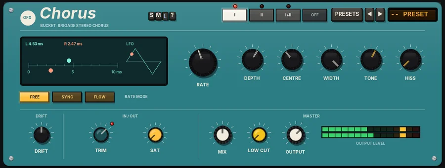
Overview
Chorus mixes your signal with two short delayed copies, one per side, whose delay times are swept by a slow triangle LFO. The right side sweeps in the opposite direction to the left, so the image spreads wide while the mono sum stays solid - the sound of the built-in chorus on the classic 80s poly-synths.
The delay lines behave like bucket-brigade chips: the signal is filtered before and after the delay, gently compressed and saturated, and can carry a little hiss. TONE sets how dark the repeats are.
Three mode keys recall the classic settings: I is slow and gentle, II faster and deeper, and I+II adds a second, faster sweep running the other way for a richer, wider sound without the throb of a single fast sweep. From there every knob can be adjusted.
Reach for it for
- Width and shimmer on synth pads and strings
- Clean guitars that need movement
- Thickening a mono source into stereo
- Vintage, slightly dark chorus with hiss for character
- Tempo-synced swirls on loops
Controls
Modes (header)
- I
- Slow and gentle: 0.513 Hz, 1.85 ms depth around a 3.5 ms centre.
- II
- Faster and deeper: 0.863 Hz with the same depth and centre.
- I+II
- Both at once: the I sweep (set by the knobs) plus a second tap swept about 1.68 times faster, a little longer and swinging the other way. Richer and wider.
- OFF
- The chorus is bypassed; the IN / OUT stage and OUTPUT stay active.
Pressing I, II or I+II sets RATE, DEPTH and CENTRE to the classic values for that mode and the rate mode to FREE. The red LEDs above the keys show which sweeps are running.
Display
- Delay window
- The two dots show the live delay time of the left (cyan) and right (orange) taps on a 0 - 10 ms scale, with the times in ms above. CHORUS OFF is shown when the chorus is bypassed.
- LFO
- The triangle sweep with a dot riding on it.
Chorus
- FREE / SYNC / FLOW (RATE MODE)
- How the sweep speed is set: FREE in Hz, SYNC locked to the project tempo and timeline, FLOW tempo-synced but running continuously through loops. In I+II the second sweep runs freely at its scaled speed when synced.
- RATE
- The sweep speed, 0.05 to 12 Hz in FREE, or a note value from 4 bars to 1/32 (dotted and triplet included) when synced.
- DEPTH
- How far the delay time swings either side of the centre, 0 to 3 ms. More depth gives more pitch wobble.
- CENTRE
- The delay time the sweep moves around, 1 to 8 ms. Short settings are tighter; longer ones sound bigger and more doubled.
- WIDTH
- 0 to 100%. At 100% the right side sweeps in antiphase to the left for the classic wide image; at 0% both sides sweep together (a mono-style chorus).
- TONE
- The bucket-brigade filtering on the delayed signal, 0 to 100%: low settings roll the repeats off around 3 kHz for a dark, vintage sound; high settings open them up towards 16 kHz.
- HISS
- Adds the faint noise of the delay chips into the chorus path, 0 to 100%. Off by default.
Drift
A slow random wander of the chorus rate, its depth and its tone, like ageing components.
- DRIFT
- 0 to 100%. 50% gives the plugin's standard drift (the amounts the presets set), 100% doubles it, 0 turns it off. The wander also speeds up as you turn it up.
IN / OUT
- TRIM
- Input level before anything else, from -24 to +12 dB.
- GUARD
- On by default. Click the TRIM knob (without dragging) to switch it; the small LED at the knob's upper right shows it is on and glows brighter while it works. It gently eases very hot sources down towards about -18 dBFS average and catches fast peaks above -6 dBFS, so loud sources never overdrive the plugin. It never boosts quiet sources.
- SAT
- Band saturation on the way out, 0 to 100%: only the lows and highs are saturated (the mids stay clean), with a soft curve that loosens as the level rises.
- OFF / CLIP / LIMIT (OUT)
- The final stage: nothing, a soft clipper (no latency) that holds the peaks at -0.3 dBFS, or a lookahead limiter (3 ms latency, compensated by REAPER) that holds them at -0.3 dBFS. The CLIP key flashes red while the clipper is working.
Master
- MIX
- Dry / chorus balance, 0 to 100%; 50% (the default) is the classic even blend.
- LOW CUT
- A 12 dB/oct high-pass on the chorused signal only, from off (fully left, 20 Hz) up to 500 Hz. The bass stays dry, clean and centred at full level.
- OUTPUT
- Output level, -24 to +12 dB.
- OUTPUT LEVEL meters
- Output level, left and right. Click to reset the peak hold.
The header
- PRESETS
- Opens the list of factory presets; the arrows beside it step through them, and the display shows the one in use (click it for the list too). The last entry resets everything to the defaults.
- S / M / L
- Panel size: small, medium or large. The panel also scales to fit the plugin window.
- ?
- Opens a pop-up with the design credit, the GFX website address and the address of this manual. Click anywhere to close it.
Presets
The presets set the mode, rate, depth, centre, width, tone, hiss, mix and drift amounts; the DRIFT dial, LOW CUT, OUTPUT and the IN / OUT stage are left alone.
- Classic I
- Mode I at its classic settings.
- Classic II
- Mode II at its classic settings.
- Classic I+II
- Both sweeps together at the classic settings.
- Lush Wide
- Deeper (2.5 ms) and longer (5 ms centre) sweep at 0.6 Hz, a little more mix and drift.
- Subtle Thicken
- Slow 0.3 Hz, shallow 0.8 ms sweep, 70% width and 30% mix for gentle thickening.
- Vintage Hiss
- Mode II with a darker tone and audible chip hiss.
- Synced Swirl
- Mode II locked to half-note sweeps of the project tempo, a little deeper and longer.
- Dark Bucket
- Slow sweep with the tone filter well down, a touch of hiss and more tone drift.
- Reset all to defaults
- Every control back to its starting value.
Tips
- On bass or kick-heavy material, raise LOW CUT to 150 - 250 Hz so the low end stays solid and mono.
- I+II is the one to try when II sounds too seasick: it is just as wide, but the throb is smoother.
- For a mono-compatible effect, pull WIDTH down a little; at 100% the antiphase sweep is at its widest.
- Lower TONE and add a little HISS for the lo-fi sound of an old synth's chorus.
File: gfx-chorus.jsfx
Dynatron
A bubble-and-jet modulator: flange, phase or a resonant filter, swept by an LFO, by hand or by your playing.

Overview
Dynatron is three modulation effects sharing one set of controls. FLANGE is a wide-sweep studio flanger with regeneration for the jet sound. PHASE is a six-stage phaser. FILTER is a resonant auto-wah / envelope filter with low-pass, band-pass and high-pass outputs.
What moves the sweep is up to you. LFO gives the usual automatic sweep. HOLD freezes it so you can place it by hand with CENTRE. ENV is the old two-tape-machine trick: your playing drives the sweep, so the harder you play, the further it goes.
A slow drift can make the rate, depth and centre wander, like a hand on the tape or an old clock.
Reach for it for
- Jet flanging and bubbling phase on guitars, synths and drum loops
- Touch-sensitive envelope filter and auto-wah on bass, funk guitar and keys
- Static comb or filter colour placed by hand (HOLD)
- Tempo-synced phasing
- Hollow, nasal tones with negative feedback
Controls
Mode, sweep source and filter type
- FLANGE
- A wide-sweep flanger. The delay sits between about 0.15 and 14 ms (set by CENTRE) and sweeps up to two octaves of delay either side. The loop is softened above about 9 kHz.
- PHASE
- A six-stage all-pass phaser, centred between 100 Hz and 2.4 kHz and sweeping up to three octaves either side.
- FILTER
- A resonant state-variable filter, centred between 150 Hz and 4 kHz and sweeping up to about three octaves either side. With RESONANCE up it squelches and nears self-oscillation.
- LFO / HOLD / ENV
- The sweep source. LFO: the usual automatic sweep. HOLD: the sweep stops and CENTRE places it by hand. ENV: your playing drives the sweep - louder notes push it further (fast attack, about 180 ms to settle back).
- LP / BP / HP
- FILTER mode only: low-pass, band-pass or high-pass. The keys are dimmed in the other modes.
- DELAY / CUTOFF display
- The live delay time (FLANGE, in ms) or the cutoff of the sweep (PHASE and FILTER, in Hz).
Sweep
These knobs work in all three modes.
- CENTRE
- Where the sweep sits at rest, 0 - 100%. In FLANGE, low settings give short delays and high, metallic combs; high settings lower, more chorus-like tones. In PHASE and FILTER it sets the centre frequency.
- DEPTH
- How far the sweep travels either side of CENTRE, 0 - 100%.
- FEEDBACK / RESONANCE
- FLANGE and PHASE: feedback, from -95% to +95%. Positive is thick, ringing and jet-like; negative is hollow and nasal. The level is compensated so strong settings don't jump out. In FILTER the knob becomes RESONANCE (the Q, shown as 0 - 95% either way round): turn it up for a sharper, squelchier peak.
- SPREAD
- Offsets the right side's LFO from the left, 0 - 180 degrees, for stereo width. It only applies with the LFO as the source.
- SENS
- ENV only: how hard you have to play to push the sweep. Higher settings react to quieter playing. It is greyed out with the other sources.
LFO
- SIN / TRI / SQR / RND
- The LFO shape: sine, triangle, square or random.
- FREE / SYNC / FLOW
- How the LFO rate is set: FREE in Hz, SYNC locked to the project tempo and timeline, FLOW tempo-synced but running continuously through loops.
- RATE
- The LFO speed: 0.02 - 10 Hz in FREE, or a note value from 4 bars to 1/32 (with dotted and triplet values) in SYNC. In FREE it reads 'stopped' while the sweep source is HOLD.
Master
- MIX
- Dry / effect balance, 0 - 100% (50% by default). Around 50% gives the deepest flange and phase notches; for the filter, higher settings put more of the filtered sound up front.
- DRIFT
- A slow random wander of the LFO rate, the depth and the centre, 0 - 100%. 50% is the standard amount, 100% twice that, 0 none; the wander also gets a little faster as you turn it up.
- HPF
- A high-pass filter on the effect only, from off (fully left) up to 500 Hz. Raise it to keep the low end clean and solid while the sweep happens higher up.
- OUTPUT
- Output level, -24 to +12 dB.
- OUT meters
- Output level, left and right, with a floating peak. Click a meter to clear the peak.
IN / OUT
- TRIM
- Input level before anything else, from -24 to +12 dB. A single click on the knob (without dragging) switches GUARD on or off; its LED at the knob's upper right is dark when GUARD is off, red when it is on, and glows brighter while it is catching peaks.
- GUARD
- On by default. Gently eases very hot sources down towards about -18 dBFS average and catches fast peaks above -6 dBFS, so loud sources never overdrive the plugin. It never boosts quiet sources.
- SAT
- Band saturation on the way out, 0 - 100%: only the lows and highs are saturated (the mids stay clean), with a soft curve that loosens as the level rises.
- OFF / CLIP / LIMIT
- The final stage: nothing, a soft clipper (no latency), or a lookahead limiter that holds the peaks at -0.3 dBFS (3 ms latency, compensated by REAPER). The CLIP key flashes red while the clipper is working.
The header
- PRESETS, arrows and display
- PRESETS (or a click on the display) opens the list of factory presets; the ◄ / ► keys step through them. The display shows the preset number and name. A preset sets the mode, LFO, sweep and MIX controls; DRIFT, HPF, OUTPUT and the IN / OUT strip are left as they are. The last entry in the list resets everything to the defaults.
- S / M / L
- Panel size: small, medium or large. The panel also scales to fit the plugin window.
- ?
- Opens a pop-up with the design credit, the GFX website address and the address of this manual. Click anywhere to close it.
Presets
- Classic Bubble Flange
- The default: FLANGE with a slow triangle sweep and moderate feedback.
- Dyna Flange
- FLANGE with a very slow, deep triangle sweep, strong feedback and 90 degrees of SPREAD.
- Smooth Phase Sweep
- PHASE with a gentle sine sweep and light feedback.
- Square Throb Phase
- PHASE with a slow triangle sweep, strong feedback and 120 degrees of SPREAD - a throbbing, wide phase.
- Vocal Auto-Wah
- FILTER (band-pass) with a slow sine sweep, low centre and 70% mix.
- Random Bubble Filter
- FILTER (band-pass) with a random LFO, full depth and high resonance - bubbling, unpredictable steps.
- Stepped Jump Flange
- FLANGE with a random LFO at 1.2 Hz and light feedback.
- Synced Wide Phase
- PHASE locked to quarter notes with the sides 180 degrees apart.
- Envelope Squelch
- FILTER (band-pass) driven by your playing (ENV), low centre, deep sweep and high resonance.
- Hollow Negative Flange
- FLANGE with a very slow sine sweep and negative feedback for a hollow, nasal tone.
- Reset all to defaults
- Every control back to its starting value.
Tips
- For the classic touch-sensitive swoosh, pick ENV and set SENS so only your harder notes push the sweep all the way.
- In HOLD, automate CENTRE for sweeps you control exactly, in time with the music.
- If the low end gets thin or wobbly, raise HPF so only the upper part of the sound is swept.
- Negative FEEDBACK in FLANGE gives a hollow tone that sits well on busy mixes; positive gives the jet.
File: gfx-dynatron.jsfx
E-Delay
Four European studio and broadcast delays of the 1980s: pristine repeats, ducking, multi-tap and pitch loops.

Overview
E-Delay brings together four digital delays in the spirit of the European studio and broadcast units of the 1980s: clean, precise repeats, careful spatial design and transformer-coupled inputs. The MODEL keys pick the algorithm.
CRYSTAL is an ultra-clean dual delay with feedback filters and a cross-feed for ping-pong; when you change the time it crossfades to the new one, so the pitch never bends. DYNAMIC is the same line with a ducker: the repeats dip while you play and bloom back when you stop. MULTI-TAP spreads up to eight taps across the time, alternating sides, each gently chorused. TIME STRETCH runs the feedback through a pitch shifter and a soft limiter, for endless rising or falling repeats that never run away.
Left and right times are set separately in milliseconds or synced to the project tempo. The DUCK section works on every model, and VINTAGE runs the line through the converters of the era.
Reach for it for
- Clean slapback and tempo-synced echoes on vocals and guitars
- Ping-pong delays with the cross-feed
- Vocal echoes that stay out of the way while the singer sings (DUCK)
- Rhythmic multi-tap patterns and chorus-like taps
- Shimmering, rising or falling pitch-shifted repeats (TIME STRETCH)
Controls
Working the displays
Every parameter has its own display. Drag up or down on a display (Shift for fine moves), use the mouse wheel over it, or press the - / + keys underneath (hold for repeat). Double-click a display to reset it to its default. The last display you touched is outlined. Displays that do nothing on the current model are dimmed.
DELAY PROCESSOR
- INPUT / ECHO meters
- VU meters showing the input level and the level of the echoes (0 VU = -18 dBFS).
- CRYSTAL
- The ultra-clean dual delay: feedback filters, cross-feed for ping-pong, and a crossfade when the time changes, so the pitch never bends.
- DYNAMIC
- The same line with the ducker working. Choosing it sets DUCK DEPTH to 60% if it was at 0.
- MULTI-TAP
- Up to 8 taps (TAPS) spread evenly across the longer of TIME L and TIME R, alternating left and right, each quieter than the last and gently chorused by MOD DEPTH and MOD RATE. The feedback comes from the end of the line.
- TIME STRETCH
- The repeats pass through a pitch shifter (PITCH, -12 to +12 semitones per repeat) and a soft limiter inside the loop, so they can rise or fall forever without running away.
- SYNC
- Locks TIME L and TIME R to the project tempo; the displays then show note values (1/1 down to 1/32, with dotted D and triplet T values) and the header shows the tempo.
- VINTAGE
- Runs the delay line through 16-bit converters at the era's clock rate: 48 kHz on CRYSTAL, 32 kHz on DYNAMIC and MULTI-TAP, 40 kHz on TIME STRETCH.
- PRESETS
- Opens the list of factory presets.
- ◄ / ►
- Step to the previous or next preset (wrapping round).
- Preset display
- Shows the last preset recalled (P1 - P10, or P--) and whether the times are FREE or SYNC.
TIME
- TIME L / TIME R
- The left and right delay times, 1 to 2700 ms (375 and 500 ms by default), or note values when SYNC is on (1/8D and 1/4 by default).
FEEDBACK
- FEEDBACK
- How much of the echo goes back into the line, 0 to 99% (35% by default). More gives more repeats.
- CROSS-FEED
- How much of each side's feedback crosses to the other side, 0 to 100%. Turn it up for ping-pong echoes.
- LO CUT
- A high-pass filter on the repeats, 20 to 1000 Hz (80 Hz by default). Each repeat gets thinner.
- HI CUT
- A low-pass filter on the repeats, 1 to 20 kHz (9 kHz by default). Each repeat gets darker.
DUCK
- DEPTH
- How far the echoes are pulled down while you play, 0 to 100% (up to about 18 dB). Works on every model.
- RECOVERY
- How long the echoes take to bloom back when you stop, 20 to 2000 ms (400 ms by default).
MODULATION
- MOD DEPTH
- How far each tap's time is swept, 0 to 10 ms. MULTI-TAP only.
- MOD RATE
- The speed of that sweep, 0.05 to 10 Hz. MULTI-TAP only.
- PITCH
- The pitch shift applied to each repeat, -12 to +12 semitones. TIME STRETCH only.
- TAPS
- The number of taps, 1 to 8 (6 by default). MULTI-TAP only.
CHARACTER
- DRIVE
- The input transformer, 0 to 100% (15% by default). The lows saturate first, for warmth and weight before the delay.
- WIDTH
- The stereo width of the echoes, 0 to 150%. 0 is mono; above 100 is wider than normal.
- DRIFT
- How much the delay clock wanders, 0 to 100% (50% by default). See Drift below.
- MIX
- The dry / echo balance, 0 to 100% (30% by default).
Drift
The delay clock is not quite steady: the left and right times each wander slowly and independently by a fraction of a millisecond, which keeps the repeats from sounding sterile. At 50% you get the standard amount; 100% doubles it and makes it wander a little faster; 0% switches it off.
IN / OUT
- TRIM
- Input level before anything else, -24 to +12 dB.
- LEVEL
- The output level, -24 to +12 dB.
- GUARD
- Off by default. When on, it gently eases very hot sources down towards about -18 dBFS average and catches fast peaks above -6 dBFS, so loud sources never overdrive the plugin. It never boosts quiet sources. GUARD CATCHING shows while it is working.
- SAT
- Band saturation on the way out, 0 to 100%: only the lows and highs are saturated (the mids stay clean), with a soft curve that loosens as the level rises.
- OFF / CLIP / LIMIT
- The final stage: nothing, a soft clipper at -0.3 dBFS (no latency), or a lookahead limiter that holds the peaks at -0.3 dBFS (3 ms latency, compensated by REAPER). The OUT caption turns into a red CLIP while the clipper is working.
The header
- S / M / L
- Panel size: small, medium or large. The panel also scales to fit the plugin window.
- ?
- Opens a pop-up with the design credit, the GFX website address and the address of this manual. Click anywhere to close it.
Presets
Presets set the model, times, sync, feedback section, modulation, duck, taps and mix. Drive, vintage, width, drift and the IN / OUT section are left as they are, except Reset.
- Slapback
- CRYSTAL: 95 / 110 ms, one quiet repeat.
- Quarter Note Echo
- CRYSTAL synced to quarter notes, 35% feedback.
- Ping-Pong Eighths
- CRYSTAL synced to 1/8 and 1/4 with 70% cross-feed for ping-pong.
- Dynamic Vocal Echo
- DYNAMIC: dotted eighth and quarter, ducked by 70% while the vocal sings.
- Wide Stereo Doubler
- CRYSTAL: 17 / 29 ms with no feedback, for width.
- Rhythm Taps
- MULTI-TAP: six taps spread across a quarter note (synced), lightly modulated.
- Tap Chorus
- MULTI-TAP: four taps across 120 ms with 3 ms of modulation, for a chorus-like spread.
- Shimmer Up
- TIME STRETCH: each repeat an octave up, 70% feedback, a little duck.
- Falling Echoes
- TIME STRETCH: each repeat 5 semitones down.
- Endless Wash
- TIME STRETCH: 97% feedback with no pitch shift: near-endless repeats.
- Reset all to defaults
- Every control back to its starting value, including the IN / OUT section.
Tips
- For vocals, try DUCK DEPTH at 50 - 70%: the echoes stay out of the way of the words and fill the gaps.
- Lower HI CUT and raise LO CUT for repeats that sit behind the mix rather than on top of it.
- In TIME STRETCH, +12 or +7 semitones with high feedback makes a shimmer; keep MIX low and HI CUT down to tame it.
- On a send, set MIX to 100% and use LEVEL to set the return level.
File: gfx-e-delay.jsfx
E-Verb
Four European broadcast reverbs of the 1980s in one, each with its own faceplate.

Overview
E-Verb recreates four styles of European broadcast reverb from the 80s, built for acoustic precision rather than lushness: there is no chorusing in the tail, and the input runs through a transformer. The MODEL keys change both the algorithm and the faceplate.
ROOM SIM works out the early reflections from the shape and size of a real room, then feeds an unmodulated network that holds up in mono. BROADCAST is a compact, warm plate and hall. DIALOGUE is a dense, quick-recovering reverb tuned for speech. NON-LIN is a gated / reverse processor.
Every parameter sits on its own seven-segment display, with the reverb time set in seconds and adjusted separately at the low and high end, and the room size given in cubic metres.
Reach for it for
- Natural rooms for voices, acoustic instruments and drums
- Speech and voice-over that needs space without blur
- Warm plates and halls with a vintage converter sound
- Gated and reverse effects on drums
- Mono-compatible reverb
Controls
Using the displays
Every parameter has its own display. Click a display to hand it to the data wheel (its frame lights up); drag the display up or down (hold Shift for fine steps), use the mouse wheel over it, or press its - and + keys (hold them to repeat). Double-click a display to return it to its default.
Meters
- IN / REV
- Two LED columns in 3 dB steps: the input level and the reverb's output level.
MODEL
- ROOM SIM
- A room simulator: the reflections are worked out from the room's shape (first and second order, with a slight difference between the ears), then an 8-line network with no modulation at all - true room modes that hold up in mono.
- BROADCAST
- The compact broadcast plate / hall: damped parallel combs into allpasses, a warm loop and a heavier input transformer.
- DIALOGUE
- A dense allpass tank tuned for speech: high diffusion, fast recovery, no flutter.
- NON-LIN
- A long tapped line with a shaped envelope instead of a natural decay. TIME sets the length of the shape (up to about 1.25 s, stretched further by SIZE).
- SHAPE (RM / GT / RV)
- NON-LIN only. RM: a falling, room-like envelope. GT: gate - flat, then cut off. RV: reverse - the sound rises, then stops.
- VINTAGE
- Runs the reverb through the converters of the era, with the clock rate and bit depth of each model (14-bit on BROADCAST, 16-bit on the others; 31.25 to 40 kHz).
1st REFLECTION
- DELAY
- When the early reflections start, 0 to 120 ms.
- LEVEL
- The level of the early reflections, -30 to +6 dB; fully down reads OFF.
REVERB
- DELAY
- The pre-delay before the reverb tail, 0 to 250 ms.
- LEVEL
- The level of the tail, -30 to +6 dB; fully down reads OFF.
REVERB TIME
- HIGH END
- A multiplier for the decay time of the highs, 0.1 to 1.5 x. Below 1 the top dies away faster, like real air absorption.
- TIME
- The decay time at mid frequencies, 0.1 to 20 seconds.
- LOW END
- A multiplier for the decay time of the lows (below about 250 Hz), 0.5 to 2.5 x.
ROOM
- SIZE
- The room volume, 10 to 12000 cubic metres. It sets the spacing of the reflections and the size of the reverb network (and the length of the NON-LIN shape).
REFLECTIONS
- DENSITY
- How many early reflections are used, 0 to 100%. Low settings give a few distinct reflections; high settings a dense cluster.
- DIFFUSION
- How much the input is smeared before it enters the reverb, 0 to 100%. More diffusion gives a smoother, less grainy onset.
FILTER
- LO CUT
- A high-pass on the reverb, 20 to 1000 Hz.
- HI CUT
- A low-pass on the reverb, 1 to 20 kHz (shown in kHz).
CHARACTER
- DRIVE
- The input transformer, 0 to 100%: the lows saturate first, for weight and warmth. BROADCAST's transformer is heavier.
- WIDTH
- The stereo width of the reverb, 0 to 150%. 0 is mono; above 100 is wider than natural.
- DRIFT
- 0 to 100%. A slow wander of the air absorption (the high-end damping) - never the delay lengths, so there is no pitch movement. On NON-LIN the tap levels also shift slightly. The wander speeds up as DRIFT goes up.
OUTPUT
- MIX
- Dry / reverb balance, 0 to 100% (30% by default).
PARAMETERS
- Data wheel
- Changes whichever display was clicked last (named under SELECTED). Drag it (Shift for fine steps) or use the mouse wheel.
- Program display
- Shows the preset in use (P1 to P10), or P-- when none is loaded.
- LIST
- Opens the list of all presets by name. The last entry resets everything to the defaults.
- ◄ / ►
- Step to the previous or next preset.
- 1 - 9, 0
- Memory keys: recall presets 1 to 9, and 0 for preset 10.
IN / OUT
- TRIM
- Input level before anything else, -24 to +12 dB.
- GUARD
- Off by default. Gently eases very hot sources down towards about -18 dBFS average and catches fast peaks above -6 dBFS. It never boosts quiet sources.
- SAT
- Band saturation on the way out, 0 to 100%: only the lows and highs are saturated (the mids stay clean), with a soft curve that loosens as the level rises.
- LEVEL
- Output level, -24 to +12 dB.
- OFF / CLIP / LIMIT
- The final stage: nothing, a soft clipper (no latency) that holds the peaks at -0.3 dBFS, or a lookahead limiter (3 ms latency, compensated by REAPER) that holds them at -0.3 dBFS. CLIPPING shows under the keys while the clipper is working.
The header
- Model name
- The line beside the name changes with the model: DIGITAL ROOM SIMULATOR, DIGITAL BROADCAST REVERBERATOR, CONSOLE REVERBERATION UNIT or DIGITAL REVERBERATOR / PROCESSOR.
- S / M / L
- Panel size: small, medium or large. The panel also scales to fit the plugin window.
- ?
- Opens a pop-up with the design credit, the GFX website address and the address of this manual. Click anywhere to close it.
Presets
The presets set the model and every reverb parameter including WIDTH and MIX; DRIFT, LEVEL and the IN / OUT section are left alone.
- Vocal Air
- ROOM SIM, a 600 m3 room with 1.4 s decay and a slightly wide image, for vocals.
- Concert Room
- ROOM SIM, a large 4000 m3 room, 2.2 s with longer lows and darker highs, 30 ms pre-delay.
- Drum Room
- ROOM SIM, a small 180 m3 room, 0.8 s, close dense reflections and more drive.
- Broadcast Plate
- BROADCAST, 1.8 s with fast-dying highs, high diffusion and quiet early reflections.
- Warm Hall (vintage)
- BROADCAST, a 3 s hall with longer lows, darker top and VINTAGE on.
- Voice-Over Booth
- DIALOGUE, a tiny 60 m3 space at 0.5 s with a 200 Hz low cut, narrower image.
- Narration Space
- DIALOGUE, a 400 m3 room at 1.2 s for narration.
- Gated Snare
- NON-LIN with the GATE shape, no early reflections, wide.
- Reverse Swell
- NON-LIN with the REVERSE shape, a long 3.5 s setting and 20 ms pre-delay.
- Tight Ambience
- ROOM SIM, a 120 m3 room at 0.4 s with the tail turned down - ambience rather than reverb.
- Reset all to defaults
- Every control back to its starting value (from LIST).
Tips
- For a natural room, start in ROOM SIM, set SIZE to the space you imagine, then adjust TIME; it holds up well when the mix is checked in mono.
- Pull HIGH END below 1 to make a long reverb sound darker and further away without touching HI CUT.
- On speech, DIALOGUE with a short TIME and LO CUT around 150 - 200 Hz adds space without smearing the words.
- For the 80s gated drum sound, use NON-LIN with GT and set TIME to choose how long the gate stays open.
File: gfx-e-verb.jsfx
Echo 34
An analogue bucket-brigade delay: warm, darkening repeats with drive in the loop.
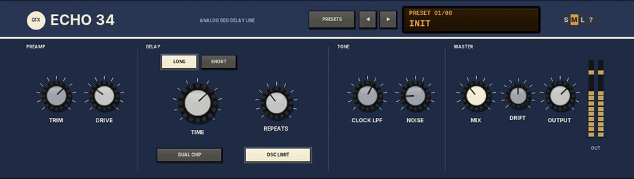
Overview
Echo 34 is a bucket-brigade (BBD) delay in the spirit of the budget analogue echo units of the late 70s and 80s. The input goes through a driven op-amp preamp, then into the delay line; every repeat passes back through the same drive and through the chip's clock filter, so the echoes get darker and grittier as they fade.
Two chips are on board: LONG gives delays from 50 to 550 ms, SHORT from 50 to 110 ms for slapback and doubling. As on a real bucket-brigade unit, turning TIME glides the delay rather than jumping, so the repeats bend in pitch while you turn it. Push REPEATS past 100% and the unit runs away into self-oscillation.
Reach for it for
- Warm, dark analogue echoes on guitars, vocals and synths
- Slapback on vocals and guitars (SHORT)
- Stereo doubling (DUAL CHIP)
- Dub-style runaway feedback and pitch bends
- Lo-fi, noisy repeats
Controls
PREAMP
- TRIM
- Input level, -24 to +12 dB.
- DRIVE
- The preamp's drive, 0 to 100% (30% by default). It saturates the input unevenly (the two halves of the wave clip differently, adding even harmonics) and also sits in the feedback loop, so each repeat is driven again.
DELAY
- LONG / SHORT
- The chip. LONG: 50 to 550 ms. SHORT: 50 to 110 ms, for slapback and doubling; TIME stays within that range.
- TIME
- The delay time. Changes glide smoothly, so the repeats bend in pitch as you turn it.
- REPEATS
- Feedback, 0 to 110% (40% by default). Above 100% the repeats grow instead of fading - self-oscillation.
- DUAL CHIP
- Runs the right side about 3% longer than the left, so the two sides' repeats fall slightly apart: a wider, doubled stereo echo.
- OSC LIMIT
- On by default. Holds the feedback in check so self-oscillation stays at a usable level instead of running away without limit.
TONE
- CLOCK LPF
- The low-pass filter on the repeats, 1 to 8 kHz (3.5 kHz by default). Because it is inside the loop, every repeat is darker than the one before. Lower it for murky, distant echoes; raise it for brighter ones.
- NOISE
- The chip's clock noise added to the repeats, 0 to 100% (15% by default).
MASTER
- MIX
- The dry / echo balance, 0 to 100% (35% by default). Up to 50% the dry signal stays at full level and the echo comes up; from 50% the dry fades out, leaving only the echo at 100%.
- DRIFT
- See Drift below.
- OUTPUT
- The output level, -24 to +12 dB.
- OUT meters
- Output level, left and right. Click them to reset the peak hold.
The header
- PRESETS
- Opens the list of factory presets (or click the preset display). Choosing one sets everything except TRIM and OUTPUT.
- ◄ / ►
- Step through the presets.
- Preset display
- Shows the preset number and name. Click it for the list.
- S / M / L
- Panel size: small, medium or large. The panel also scales to fit the plugin window.
- ?
- Opens a pop-up with the design credit, the GFX website address and the address of this manual. Click anywhere to close it.
Echo 34 has no input guard and no output stage: the levels are set with TRIM and OUTPUT only.
Drift
DRIFT (0 - 100%, 50% by default) brings the unsteadiness of a real analogue unit: the chip's clock wanders, so the delay time breathes a little, and the clock filter - the tone of the repeats - slowly opens and closes. 50% is the standard amount, 100% twice that, 0 steady; the wander also speeds up as you turn it up.
Presets
- Init
- The default settings: LONG, 250 ms, 40% repeats.
- Slapback
- SHORT, 95 ms, a single faint repeat, bright.
- Dark Repeats
- LONG, 380 ms, 60% repeats through a dark 1.8 kHz filter.
- Dual Chip Doubler
- SHORT, 60 ms, DUAL CHIP on: a wide doubled sound.
- Ambient Wash
- LONG, 520 ms, 78% repeats with DUAL CHIP and more drift.
- Self-Oscillation
- LONG, 300 ms, 105% repeats and more drive: the echoes build up on their own.
- Lo-Fi Short
- SHORT, 80 ms, heavy drive, a dark filter and lots of noise.
- Clean Long
- LONG, 450 ms, little drive, a bright 7 kHz filter and very little noise.
Tips
- For dub throws, set REPEATS around 90-105% and turn TIME by hand: the repeats swoop in pitch as the delay glides.
- If the echoes get too dark too fast, raise CLOCK LPF rather than REPEATS.
- On a send, set MIX to 100% so only the echo comes back.
- Use the SHORT chip with DUAL CHIP for a quick stereo double on a mono vocal or guitar.
File: gfx-echo-34.jsfx
Echofish
An envelope and step filter with a tape, bucket-brigade or digital echo below it.
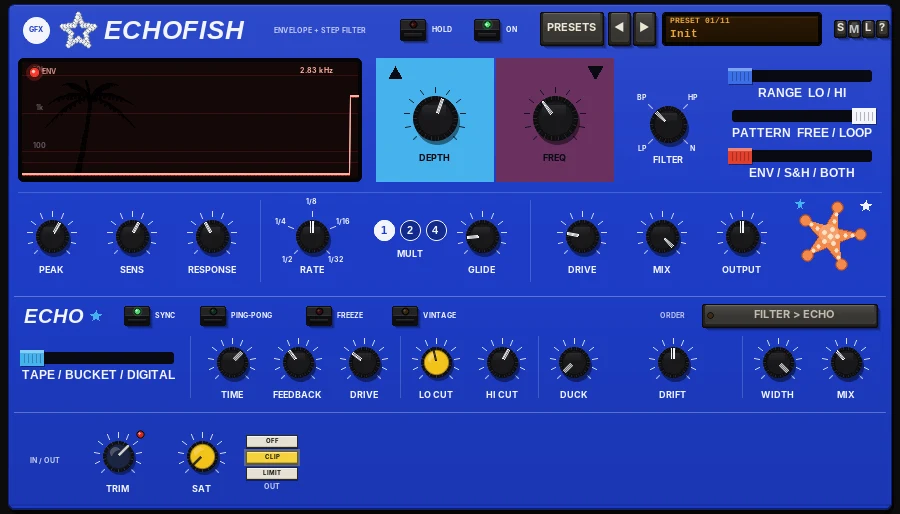
Overview
Echofish is two effects on one panel. The top is an automatic filter in the spirit of the classic 70s envelope-filter pedals and the modern sample-and-hold filter machines: a resonant two-pole filter that is swept by your playing (the classic auto-wah quack) or stepped in time with the project.
The bottom strip is an echo with three characters - warm, saturating TAPE, darker BUCKET (bucket-brigade) and clean DIGITAL - with sync, ping-pong, freeze, ducking and a vintage EQ on the repeats.
ORDER sets which comes first: FILTER > ECHO, so the echoes repeat the filtered sound, or ECHO > FILTER, so the filter moves over the echoes too.
Reach for it for
- Funky envelope-filter guitar, clav and bass
- Rhythmic sample-and-hold filter steps locked to the song
- Dub-style echoes that wobble and saturate (TAPE, high FEEDBACK)
- Filtered synth blips and gurgles with a ping-pong echo
- Vocal or lead delays that duck out of the way while the part plays (DUCK)
Controls
The header
- HOLD
- Freezes the filter where it is. The cutoff stops moving until you switch HOLD off.
- ON
- Switches the filter in or out. With it out, the dry signal passes through the filter section; the echo keeps working.
- PRESETS
- Opens the list of factory presets; the ◄ / ► keys step through them and the display shows the one in use (click it for the list too). Choosing one sets the filter controls; the echo and the input / output strip are left as they are. The last entry resets the filter and the IN / OUT strip to their defaults.
- S / M / L
- Panel size: small, medium or large. The panel also scales to fit the plugin window.
- ?
- Opens a pop-up with the design credit, the GFX website address and the address of this manual. Click anywhere to close it.
Display
- Cutoff trace
- The filter's cutoff over the last few moments, on a 25 Hz - 18 kHz scale, with its current value at the top right. In S&H modes a faint line marks each new step.
- ENV
- Lights when the envelope follower picks up your playing.
Sweep
- Up / down arrows
- The sweep direction. Click the up arrow (blue block, left) for UP: the filter opens upwards from FREQ. Click the down arrow (red block, right) for DOWN: it sweeps down from FREQ. The block in use is lit.
- DEPTH
- How far the sweep goes, 0 - 6 octaves.
- FREQ
- Where the sweep starts, 60 Hz - 3 kHz.
- FILTER
- The filter type: LP (low-pass), BP (band-pass, the classic wah), HP (high-pass) or N (notch).
- RANGE LO / HI
- HI moves the whole sweep up an octave.
- PATTERN FREE / LOOP
- For the S&H modes. FREE: a new random step every time. LOOP: a one-bar random pattern that repeats, so it grooves with the song.
- ENV / S&H / BOTH
- What moves the filter. ENV: the envelope follower - the harder you play, the further it sweeps. S&H: random steps in time with the project. BOTH: the steps, scaled by how hard you play.
The knob row
- PEAK
- The filter's resonance, 0.5 - 15. Higher is more vocal and whistling.
- SENS
- How strongly the envelope follows your playing. Raise it for quiet sources, lower it if the filter sits fully open.
- RESPONSE
- How fast the envelope follows: from fast and snappy (about 1 ms attack, 30 ms release) to slow and vocal (about 20 ms attack, 800 ms release).
- RATE
- The step length for S&H: 1/2, 1/4, 1/8, 1/16 or 1/32 of a note.
- MULT
- Multiplies the step rate by 1, 2 or 4: x2 gives twice as many steps per RATE.
- GLIDE
- Smooths the jump between steps, 0 - 100%. Higher settings slide from one step to the next.
- DRIVE
- Pushes the filter for a fatter, grittier sound, 0 - 100%.
- MIX
- Dry / filtered balance, 0 - 100%.
- OUTPUT
- The filter's output level, -12 to +12 dB.
The steps follow the project's position while it plays, and keep running at the project tempo when it is stopped (120 BPM if there is no tempo).
Echo
- SYNC
- On (default): TIME is a note value at the project tempo. Off: TIME is in milliseconds.
- PING-PONG
- The input enters on the left and the echoes bounce from side to side.
- FREEZE
- Holds the echoes exactly as they are and lets no new sound in: an endless loop. Switch it off to let it fade.
- VINTAGE
- Click to step through off, VINTAGE -3, -6 and -9. On, the echoes you hear get the classic studio send EQ: a high-pass at 140 Hz, a low-pass at 5 kHz and a 3, 6 or 9 dB cut at 500 Hz. The tone inside the feedback loop is still set by LO CUT and HI CUT.
- ORDER
- FILTER > ECHO or ECHO > FILTER: click to swap.
- TAPE / BUCKET / DIGITAL
- The echo's character. TAPE: soft saturation and a gently rolled-off top; changing TIME bends the pitch slowly, like a tape machine. BUCKET: darker, with a firmer clip and a slight chorus on the tails. DIGITAL: clean, with only a safety limit on the feedback.
- TIME
- The echo time: 20 - 2000 ms, or with SYNC from 4 bars down to 1/32, including dotted (D) and triplet (T) values. 1/8 D by default.
- FEEDBACK
- How much each echo feeds the next, 0 - 110%. Above 100% the echoes build up and run away (TAPE and BUCKET saturate to keep it in check).
- DRIVE
- How hard the feedback loop saturates in TAPE and BUCKET, 0 - 100%. DIGITAL stays clean.
- LO CUT / HI CUT
- Filters inside the feedback loop, so each repeat gets thinner and darker: LO CUT 20 - 1000 Hz, HI CUT 1 - 20 kHz.
- DUCK
- Lowers the echoes while the input is playing, 0 - 100%, so they fill the gaps rather than the part.
- DRIFT
- The tape's wow and flutter, 0 - 100% (50% is the standard amount, 100% twice that, 0% none). It wobbles the echo time, and the wander speeds up a little as you turn it up.
- WIDTH
- The stereo width of the echoes, 0 - 100%. Without PING-PONG, the right echo is also very slightly longer at full width.
- MIX
- Dry / echo balance, 0 - 100%. The dry signal stays at full level up to 50%, then fades; at 100% you hear only the echoes.
IN / OUT
- TRIM
- Input level before anything else, from -24 to +12 dB.
- GUARD
- Click the TRIM knob to switch it; its LED sits at the knob's upper right. On by default. Gently eases very hot sources down towards about -18 dBFS average and catches fast peaks above -6 dBFS, so loud sources never overdrive the plugin. It never boosts quiet sources. The LED glows brighter while it is working.
- SAT
- Band saturation on the way out: only the lows and highs are saturated (the mids stay clean), with a soft curve that loosens as the level rises.
- OFF / CLIP / LIMIT
- The final stage: nothing, a soft clipper at -0.3 dBFS (no latency), or a lookahead limiter (3 ms latency, compensated by REAPER). CLIP is on by default and flashes red when it clips.
In REAPER's parameter list only
- EQ: Wow / EQ: Flutter
- The standard amounts of wow and flutter that DRIFT scales (20% and 15% by default).
- EQ: Drift speed
- How fast the wow wanders, 0.05 - 2 Hz.
- EQ: Output
- The echo section's output level, -24 to +12 dB.
- Bias / Sat low band / Sat high band / Ceiling
- The rest of the output stage: the saturation's even-harmonic bias, where its low and high bands start (40 - 400 Hz and 2 - 16 kHz) and the clip ceiling or limiter threshold.
Presets
- Init
- The default filter settings: an upward band-pass envelope wah from 250 Hz. A new instance opens on it.
- Funk Up
- The classic up-sweeping envelope wah: band-pass from 250 Hz, a little drive.
- Bass Quack (down)
- Low-pass sweeping down from 900 Hz, for bass.
- Ship Steps
- A looping one-bar pattern of 1/16 steps through a resonant band-pass.
- Random Gurgle
- Random, never-repeating steps (1/8 x2) with a lot of glide through a resonant low-pass.
- Envelope Steps
- A looping 1/16 pattern, scaled by how hard you play.
- Notch Sweep
- An envelope-driven notch with a slower response.
- Slow Talker
- A very resonant band-pass with a slow, vocal response.
- Clav Wah
- Fast, bright band-pass wah in the HI range with extra drive.
- Synth Blips
- Very resonant 1/32 steps in the HI range, no glide.
- Lowpass Bloom
- A gentle low-pass opening five octaves up from 120 Hz with a slow response.
- Reset all to defaults
- The filter and the IN / OUT strip back to their starting values; the echo is left as it is.
Tips
- If the envelope filter barely moves, raise SENS; if it sits wide open, lower it or turn TRIM down.
- S&H with PATTERN on LOOP gives a riff that repeats every bar; a little GLIDE makes the steps sound less mechanical.
- For dub throws, use TAPE with FEEDBACK around 85 - 100% and automate MIX; FREEZE holds the last phrase while you play over it.
- ECHO > FILTER lets each echo get swept as well, which sounds great with S&H on sustained parts.
- DUCK at 30 - 50% keeps a busy echo out of the way of a vocal or lead.
File: gfx-echofish.jsfx
Echomax
A multi-mode delay line: tape, bucket-brigade, clean digital and a driven kit-built echo in one box.
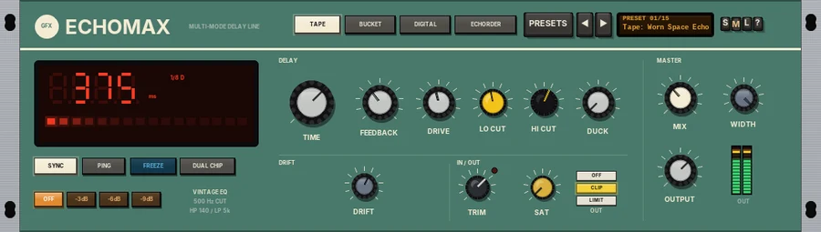
Overview
Echomax is four echoes in one. Each type has its own sound in the feedback loop, so the repeats change character as they circulate: TAPE saturates warmly and darkens, BUCKET is very dark and gritty with a slow clock wobble, DIGITAL stays clean, and ECHORDER drives an op-amp hard into a dark bucket-brigade filter with a little background hiss.
The delay time can be set in milliseconds or locked to the project tempo. When you change it, the repeats glide to the new time rather than jumping - slowly on TAPE (for the classic pitch swoop), quickly on DIGITAL.
Around the echo sit ping-pong, freeze, ducking, a vintage 500 Hz cut on the echoes, drift for wow and flutter, and the IN / OUT strip with trim, saturation and a clipper or limiter.
Reach for it for
- Slapback and tape echo on vocals and guitars
- Dub echoes that build into self-oscillation
- Clean, ducked vocal delays that stay out of the way
- Ping-pong echoes across the stereo field
- Freezing a phrase into a loop
Controls
Echo types (header)
- TAPE
- Warm tape saturation and a high-frequency roll-off (about 5.5 kHz) on every pass. Time changes glide slowly, so turning TIME gives the tape pitch swoop.
- BUCKET
- A bucket-brigade echo: a steep, dark roll-off (about 2.8 kHz), gritty clipping in the loop and a slow clock wobble on the delay.
- DIGITAL
- Clean and uncoloured: DRIVE has no effect (the knob reads clean), and only very hot repeats are softly limited.
- ECHORDER
- A driven kit-built echo: an overdriven op-amp with lopsided saturation, a dark bucket-brigade filter (about 3.2 kHz), a slow clock drift and background hiss that rises with DRIVE. DUAL CHIP works only in this mode.
Readout
- Time display
- The delay time in ms (also when synced), with the sync division or FREE beside it, and FROZEN, RUNAWAY (feedback above 100%) or PING-PONG when they apply.
- Repeat ladder
- Sixteen lights showing how the repeats die away at the current feedback. With ping-pong on, the repeats alternate between two rows.
Switches
- SYNC
- Locks TIME to the project tempo (on by default).
- PING
- Ping-pong: the input is summed to mono and the repeats bounce between left and right.
- FREEZE
- Stops recording new input and keeps what is in the delay circulating without loss - an endless loop you can play over.
- DUAL CHIP
- ECHORDER only: the right side runs off its own slightly mistuned clock, so with WIDTH up it drifts and beats against the left instead of sitting at a fixed offset.
- VINTAGE EQ (OFF / -3dB / -6dB / -9dB)
- The classic studio trick on the echoes only: a cut at 500 Hz of the chosen depth, with a high-pass at 140 Hz and a low-pass at 5 kHz. OFF bypasses it.
Delay
Hover over a knob to see its value.
- TIME
- The delay time, 20 to 2000 ms, or with SYNC a note value from 4 bars to 1/32 (dotted and triplet included).
- FEEDBACK
- How much of each repeat is fed back, 0 to 110%. Past 100% the echo grows on its own (RUNAWAY) - the loop's saturation keeps it from exploding.
- DRIVE
- How hard the repeats are pushed into the type's saturation, 0 to 100%. Not used in DIGITAL.
- LO CUT
- A high-pass inside the feedback loop, 20 to 1000 Hz: each repeat gets thinner than the last.
- HI CUT
- A low-pass inside the feedback loop, 1 to 20 kHz: each repeat gets darker than the last.
- DUCK
- Turns the echoes down while you play, 0 to 100%, and lets them come back up in the gaps (fast to dip, about a quarter of a second to recover).
Drift
Tape-style wow (a slow random wander of the delay time) and flutter (a fast wobble around 6.5 Hz). The amounts of wow and flutter come with the presets.
- DRIFT
- 0 to 100%. 50% gives the standard amount of wow and flutter, 100% doubles it, 0 turns it off. The wander also speeds up as you turn it up.
IN / OUT
- TRIM
- Input level before anything else, from -24 to +12 dB.
- GUARD
- Off by default. Click the TRIM knob (without dragging) to switch it; the small LED at the knob's upper right shows it is on and glows brighter while it works. It gently eases very hot sources down towards about -18 dBFS average and catches fast peaks above -6 dBFS. It never boosts quiet sources.
- SAT
- Band saturation on the way out, 0 to 100%: only the lows and highs are saturated (the mids stay clean), with a soft curve that loosens as the level rises.
- OFF / CLIP / LIMIT (OUT)
- The final stage: nothing, a soft clipper (no latency) that holds the peaks at -0.3 dBFS, or a lookahead limiter (3 ms latency, compensated by REAPER) that holds them at -0.3 dBFS. The CLIP key flashes red while the clipper is working.
Master
- MIX
- Dry / echo balance, 0 to 100% (35% by default). At 50% both are at full level; below that the echoes fade, above it the dry signal fades.
- WIDTH
- The stereo spread of the echoes, 0 to 100%. At 0% the echoes are mono; turning it up keeps the difference between the sides and makes the right side's delay a touch longer than the left.
- OUTPUT
- Output level, -24 to +12 dB.
- OUT meters
- Output level, left and right. Click to reset the peak hold.
The header
- PRESETS
- Opens the list of factory presets; the arrows beside it step through them, and the display shows the one in use (click it for the list too). The last entry resets everything to the defaults.
- S / M / L
- Panel size: small, medium or large. The panel also scales to fit the plugin window.
- ?
- Opens a pop-up with the design credit, the GFX website address and the address of this manual. Click anywhere to close it.
Presets
The presets set the echo type, time, feedback, drive, filters, duck, ping-pong, wow, flutter, mix and drift, and switch FREEZE off; the Echorder dub presets also set DUAL CHIP. WIDTH, OUTPUT, VINTAGE EQ and the IN / OUT strip are left alone.
- Tape: Worn Tape Echo
- Dotted-eighth tape echo with heavy wow and plenty of drift.
- Tape: Slapback Saturation
- A 110 ms tape slap with saturation.
- Tape: Dub Siren Oscillation
- Quarter-note tape echo at 85% feedback, dark and wobbly, on the edge of oscillation.
- Bucket: Memory Lane Ping-Pong
- Eighth-note bucket-brigade echoes bouncing left and right, lightly ducked.
- Bucket: Dark Analog Crunch
- 180 ms dark, driven bucket echoes with strong feedback.
- Echorder: EC-444 Drive
- 280 ms driven Echorder repeats at 70% feedback.
- Echorder: Slap & Crunch
- An 85 ms slap pushed to near-full drive.
- Digital: Clean Ducked Vocal
- Clean quarter-note echo, ducked by 50%, no wow or flutter.
- Digital: Crystal Stereo Triplet
- Clean eighth-note-triplet ping-pong, open to 18 kHz.
- Tape: Ambient Flutter Wash
- A 1.2 s tape echo with 75% feedback, ducking and lots of wow - an ambient wash.
- Echorder: Self-Oscillating Synth
- Dotted-eighth Echorder at 102% feedback: it keeps building on its own.
- Echorder: Deep Dub Echo
- 380 ms dark dub echo, single chip.
- Echorder: Modern Dub Wash
- 300 ms with more wow, DUAL CHIP on for a drifting stereo image.
- Echorder: Chaos Dub Grit
- 220 ms, 85% feedback, very dark and gritty, single chip.
- Echorder: Heavyweight Dub Bass
- 450 ms dark dub echo with wow, DUAL CHIP on.
- Reset Defaults
- Every control back to its starting value.
Tips
- On TAPE, sweep TIME during a repeat for the classic pitch-bending dub swoop.
- For a vocal echo that never clutters the words, try DIGITAL with DUCK at 40 - 60%.
- Push FEEDBACK past 100% and ride HI CUT or FREEZE for dub build-ups; pull it back before it gets too loud.
- VINTAGE EQ at -6 dB takes the boxiness out of the repeats so they sit behind the dry sound.
File: gfx-echomax.jsfx
Flanger
Three flangers in one: bucket-brigade pedal, wide-sweep rack and true through-zero.

Overview
Flanger mixes your signal with a copy of itself delayed by a few milliseconds, and sweeps that delay. The two combine into a comb of peaks and notches that moves up and down the spectrum - the swooshing, jet-plane sound.
Three characters are built in. PEDAL is the classic bucket-brigade stompbox: a darker loop with a little grit, made for strong regeneration. RACK is the clean, wide-sweep studio unit, going from metallic flange down to slow, chorus-like movement. THRU-0 recreates the original tape trick, where the swept copy passes right through the dry signal for a deep cancellation at the crossing point.
Besides the usual LFO, the sweep can be frozen so you can place the comb by hand (MATRIX), or driven by how hard you play (ENVELOPE).
Reach for it for
- Jet-plane sweeps on guitars, synths and drum loops
- Through-zero tape flanging on a whole mix or a bus
- Hollow, nasal tones with negative regen
- Static comb-filter colour with MATRIX
- Touch-sensitive swooshes with ENVELOPE
- Wide stereo motion with SPREAD
Controls
Modes (header)
- PEDAL
- The bucket-brigade pedal. The delay sweeps from about 0.3 to 6 ms, and the loop is darker with the delay chips' faint hiss. High REGEN gives the classic jet sound.
- RACK
- The wide-sweep studio rack: clean, sweeping from 0.15 to 14 ms. Short settings are metallic; long ones become a slow, chorus-like sweep.
- THRU-0
- Through-zero flanging, as done with two tape machines. The dry signal is delayed too, and the swept copy passes through it, giving the deep cancellation as it crosses. Best with MIX at 50%.
Flanger
- SINE / TRI / SQR / RND
- The LFO shape. Triangle is the classic even flanger sweep; sine lingers at the ends; square jumps between two settings; random wanders.
- SWEEP
- Click to choose what moves the sweep. LFO: the usual automatic sweep. MATRIX: the sweep stops and MANUAL places the comb by hand (the 'filter matrix' trick). ENVELOPE: your playing drives the sweep - louder notes push it further.
- FREE / SYNC / FLOW
- How the LFO rate is set: FREE in Hz, SYNC locked to the project tempo and timeline, FLOW tempo-synced but running continuously through loops. Not used in MATRIX or ENVELOPE.
- RATE / SENS
- The LFO speed (0.02 - 10 Hz, or a note value when synced). In ENVELOPE mode this knob becomes SENS: how far your playing pushes the sweep.
- MANUAL
- Where the sweep sits - the delay time at its centre. Low settings give high, metallic combs; high settings lower, more chorus-like tones.
- WIDTH
- How far the sweep travels either side of MANUAL. Zero gives a static comb (not used in MATRIX).
- REGEN
- Feedback, from -95% to +95%. Positive gives the ringing, metallic jet; negative gives a hollow, nasal tone. The level is compensated so strong settings don't jump out.
- SPREAD
- Offsets the right side's sweep from the left, from 0 to 180 degrees. 0 is a classic mono flange; 90 - 180 gives wide stereo motion.
- Display
- The live comb filter (frequency response) and the current delay time; MATRIX or ENVELOPE is shown when active.
Drift
A slow random wander, like a hand on the tape reel or an old clock.
- RATE
- How much the LFO rate wanders.
- WIDTH
- How much the sweep width wanders.
- MANUAL
- How much the centre of the sweep wanders.
- DRIFT SPEED
- How fast the drift moves (0.02 - 2 Hz).
Master
- MIX
- Dry / flanged balance. 50% gives the deepest notches; lower is subtler; 100% is the delayed signal only (a pitch-wobbling vibrato when sweeping).
- OUTPUT
- Output level, -24 to +12 dB.
- OUTPUT button
- Folds the input and output stages out below the panel.
- OUT meters
- Output level, left and right.
The header
- PRESETS
- The factory presets. They set the flanger controls; drift speed, output and the input / output stages are left alone. The last entry resets everything.
- Theme picker
- Changes the panel's colour theme.
- S / M / L
- Panel size: small, medium or large.
- HW
- Switches between the hardware-style panel and the flat look.
Input and output stages (OUTPUT fold-out)
- TRIM
- Input level before anything else, from -24 to +12 dB.
- GUARD
- On by default. Gently eases very hot sources down towards about -18 dBFS average and catches fast peaks above -6 dBFS, so loud sources never overdrive the plugin. It never boosts quiet sources. The tag shows how much it is working.
- SAT
- Band saturation on the way out: only the lows and highs are saturated (the mids stay clean), with a soft curve that loosens as the level rises.
- BIAS
- Shapes the saturation: more bias adds more even (2nd) harmonics, for a warmer, rounder colour.
- LO BAND / HI BAND
- Where the low and high saturation bands start (40 - 400 Hz and 2 - 16 kHz).
- CEILING / THRESH
- With CLIP: the level the peaks are softly clipped at. With LIMIT: the threshold of a brickwall limiter that holds the peaks at -0.3 dBFS - pulling it down limits harder and makes the output louder.
- OFF / CLIP / LIMIT
- The final stage: nothing, a soft clipper (no latency), or a lookahead limiter (3 ms latency, compensated by REAPER).
The ? key
- ?
- Next to the S / M / L size keys. Opens a pop-up with the design credit, the GFX website address and the address of this manual. Click anywhere to close it.
Presets
- Classic Pedal
- The everyday bucket-brigade flanger: triangle sweep, moderate regen.
- Jet Plane
- Slow, wide sweep with strong regen - the jet.
- Negative Hollow
- Negative regen for a hollow, nasal sweep.
- Stereo Pedal
- The pedal with the right side offset by 90 degrees.
- Rack Wide Sweep
- The rack's long sweep, slow and wide in stereo.
- Rack Chorus-Flange
- Long delays, gentle width and faster rate: between chorus and flanger.
- Thru-Zero Tape
- Slow through-zero sweep without regen, like two tape machines.
- Thru-Zero Jet
- Through-zero with regen for a more intense crossing.
- Filter Matrix
- The sweep stopped: set the comb by hand with MANUAL.
- Envelope Swoosh
- Your playing drives the sweep; strong regen.
- Synced 1/2 Bar
- Rack flanger locked to half-bar sweeps of the project tempo.
- Reset all to defaults
- Every control back to its starting value.
Tips
- For the classic through-zero effect on a mix bus, use THRU-0 with REGEN at 0, a slow sine sweep and MIX at 50%.
- In MATRIX mode, automate MANUAL for sweeps you control exactly, in time with the music.
- ENVELOPE works well on drums and funky guitar: each hit swooshes, then the comb settles back.
- If the flange sounds too thin or harsh, try negative REGEN or the RACK mode at a higher MANUAL setting.
File: gfx-flanger.jsfx
Haas Doubler
Short-delay stereo widening and doubling, with detune and drift.

Overview
Haas Doubler widens a sound with short delays. A copy delayed by a few milliseconds and placed on the other side is heard as the same sound, but wider - the Haas effect. Add a little drift and detune and it becomes a convincing double-tracked part.
Three layouts are built in. L/R is the classic: the dry signal on one side, the delayed copy on the other. LCR keeps the dry signal in the centre with delayed copies hard left and right. SPREAD uses the delayed copies only, left and right. In LCR and SPREAD the right copy's delay is the left one's times a multiplier (x2 to x6), so the two sides never line up.
DRIFT makes the delay time, the pan position and the level of each copy wander slowly and independently, like a second take. DETUNE pitch-shifts each side by a few cents for the classic detuned-doubler width.
Reach for it for
- Widening mono vocals, guitars and synths
- Fake double-tracking on lead vocals
- A wet-only widener on an FX send (DRY off)
- Detuned stereo width on pads and leads
- Wobbly, tape-style double tracking
Controls
Modes (header)
- L/R
- The classic Haas: dry signal on one side, the delayed copy on the other.
- LCR
- Dry signal in the centre, delayed copies hard left and right (the right copy at DELAY times the multiplier).
- SPREAD
- Delayed copies only, left and right (the right at DELAY times the multiplier). No dry signal in the centre.
Display
- Stereo stage
- Shows where each copy sits between L and R, its delay time and (by the size of the dot) its level, moving as it drifts. DRY marks the dry signal in the centre in LCR, or on its side in L/R.
- INPUT
- A VU meter of the input level (0 VU = -18 dBFS average).
Doubler
- DELAY
- The delay time of the copy, 1 - 40 ms, in 1 ms steps (hold Shift for fine adjustment). Short times give width; longer ones start to sound like a separate double.
- x2 - x6
- LCR and SPREAD only: the right copy's delay is DELAY times this number.
- SWAP SIDES
- Swaps the left and right copies (in L/R: which side gets the dry signal).
- MONO / STEREO
- MONO sums the input to mono before doubling; STEREO doubles each side from its own channel.
- LEVEL
- The level of the delayed copies, -24 to +6 dB.
- LOW SPLIT
- A high-pass filter (12 dB/oct) on the delayed copies only, 20 - 1000 Hz. Raising it keeps the low end centred and solid while the width happens higher up.
- WIDTH
- Overall stereo width, 0 - 100%. Lower it to narrow the effect.
- DRY
- The dry signal on or off. Off gives the delayed copies only, for use on an FX send.
- MONO CHK
- Collapses the output to mono, so you can check how the doubled sound holds up on a mono system.
Drift
A slow random wander, independent for each copy, like a second take.
- DRIFT
- One dial, 0 - 100%. It makes each copy's delay time, pan position (wandering inward from its side) and level drift slowly. 50% is the standard amount, 100% twice that, 0 none; the wander also gets a little faster as you turn it up.
IN / OUT
- TRIM
- Input level before anything else, from -24 to +12 dB. A single click on the knob (without dragging) switches GUARD on or off; its LED at the knob's upper right is dark when GUARD is off, red when it is on, and glows brighter while it is catching peaks.
- GUARD
- On by default. Gently eases very hot sources down towards about -18 dBFS average and catches fast peaks above -6 dBFS, so loud sources never overdrive the plugin. It never boosts quiet sources.
- SAT
- Band saturation on the way out, 0 - 100%: only the lows and highs are saturated (the mids stay clean), with a soft curve that loosens as the level rises.
- OFF / CLIP / LIMIT
- The final stage: nothing, a soft clipper (no latency), or a lookahead limiter that holds the peaks at -0.3 dBFS (3 ms latency, compensated by REAPER). The CLIP key flashes red while the clipper is working.
Detune
- LEFT / RIGHT
- Pitch-shifts the left and right copies by -50 to +50 cents. Small opposite settings (for example -8 and +8) give the classic detuned-doubler width. Detune follows the side a copy sits on; in L/R the dry side takes its side's detune too.
Master
- OUTPUT
- Output level, -24 to +12 dB.
- OUT meters
- Output level, left and right, with a floating peak. Click a meter to clear the peak.
The header
- PRESETS, arrows and display
- PRESETS (or a click on the display) opens the list of factory presets; the ◄ / ► keys step through them. The display shows the preset number and name.
- Theme picker
- Changes the panel's colour theme.
- S / M / L
- Panel size: small, medium or large. The panel also scales to fit the plugin window.
- ?
- Opens a pop-up with the design credit, the GFX website address and the address of this manual. Click anywhere to close it.
- HW
- Switches between the hardware-style panel and the flat look.
The presets set the mode, delay, multiplier, level, low split, width and the drift settings; DRY, SWAP SIDES, the input mode, MONO CHK, detune, output and the IN / OUT strip are left as they are. The last entry in the list resets everything to the defaults.
Presets
- Short
- LCR with 6 ms copies, 3 dB down, and a light drift - tight width.
- Med
- LCR with 12 ms copies at full level and a moderate drift.
- Long
- LCR with 20 ms copies, 4 dB down, low split at 200 Hz and a little more drift - closer to a separate double.
- Classic Haas
- L/R with an 18 ms copy and no drift - the textbook Haas widener.
- Wide Spread
- SPREAD with 12 ms copies, low split at 100 Hz, gentle drift.
- Super Wobble
- SPREAD with x3 copies and heavy, fast drift of time, pan and level - deliberately seasick.
- Vintage ADT
- L/R with a 22 ms copy, plenty of time drift and a little level drift at 70% width - tape-style automatic double tracking.
- Mono Safe
- LCR with x3 copies, 6 dB down, low split at 300 Hz and 70% width, so it stays solid in mono.
- Reset all to defaults
- Every control back to its starting value.
Tips
- Use MONO CHK while you set DELAY: some delay times cancel badly in mono. Mono Safe is a good starting point when that matters.
- On an FX send, switch DRY off and blend the doubler in with the send level.
- Raise LOW SPLIT on bass-heavy sources so the low end stays in the middle.
- A few cents of opposite DETUNE plus a little DRIFT is often more convincing than a longer delay.
File: gfx-haas-doubler.jsfx
Ivans Echo
A small solid-state echo box: one bucket-brigade line, narrow and hissy, from slapback to runaway.

Overview
Ivans Echo is in the spirit of the budget mini echo boxes of the early 80s: four knobs on a small metal box, with one bucket-brigade (BBD) chip inside. The input goes through a simple op-amp preamp, then a compander squeezes it into the chip and expands it again on the way out, so quiet passages breathe and the hiss sinks between notes. The echo path is narrow (about 4 kHz at the shortest delays, falling to about 2.6 kHz at the longest, because the chip's clock slows down) and it is mono, as on the original; the dry signal stays in stereo.
Short settings give a hard, metallic, obviously electronic sound; longer ones give a single slapback or dark, deep repeats. Turn REPEAT past about 2 o'clock and the echoes run away. As on a real BBD unit, turning DELAY TIME glides the delay rather than jumping, so the repeats bend in pitch while you turn it.
Reach for it for
- Rockabilly and rock'n'roll slapback
- Quick doubling (ADT) on vocals and guitars
- Metallic, boxy short echoes
- Lo-fi dub repeats and runaway feedback
- A cheap, characterful echo on a mic'd vocal
Controls
INPUT
- INST / MIC
- The two input sockets. INST is flat. MIC adds 12 dB of preamp gain, cuts the lows below about 150 Hz and brings up the hiss.
- VOLUME
- Input level into the preamp, -24 to +18 dB. Set it so the PEAK light only flickers; push it further and the preamp clips, roughly and a little unevenly.
- PEAK
- Lights as the preamp starts to clip.
- MOMENTARY
- Echo on or off (on by default). Off stops new signal reaching the echo, and the repeats already in it die away naturally.
ECHO
- BALANCE
- Dry to echo, 0 to 100% (35% by default). Up to 50% the dry signal stays at full level and the echo comes up; from 50% the dry fades out, leaving only the echo at 100%.
- REPEAT
- Feedback, 0 to 110% (35% by default): from a single echo to many. Past about 85% (2 o'clock) the repeats build up instead of fading; the loop clips like the original's op-amp, so it stays bounded.
- REPEAT light
- Shows the level in the feedback loop: it glows when the repeats are strong.
- DELAY TIME
- 20 to 400 ms (180 ms by default). The longer the delay, the darker and grittier the echo. Changes glide, so the repeats bend in pitch as you turn it. With SYNC on, the knob is overridden and its readout shows the synced time.
- SYNC
- Click for a list: FREE, or a note value locked to the project tempo (1/32, 1/16T, 1/16, 1/8T, 1/16D, 1/8, 1/4T, 1/8D). The time stays within 20 to 400 ms, so slow tempos may reach the limit.
MASTER
- DRIFT
- See Drift below.
- OUTPUT
- The output level, -24 to +12 dB.
- OUT meters
- Output level, left and right. Click them to reset the peak hold.
The header
- PRESETS
- Opens the list of factory presets (or click the preset display). Choosing one sets everything except MOMENTARY and OUTPUT.
- ◄ / ►
- Step through the presets.
- Preset display
- Shows the preset number and name. Click it for the list.
- S / M / L
- Panel size: small, medium or large. The panel also scales to fit the plugin window.
- ?
- Opens a pop-up with the design credit, the GFX website address and the address of this manual. Click anywhere to close it.
Ivans Echo has no input guard and no output stage: the levels are set with VOLUME and OUTPUT only.
Drift
DRIFT (0 - 100%, 50% by default) works on two things. The chip's clock wanders, so the delay time breathes a little. And the supply voltage wanders and sags: the preamp's headroom and gain move slowly, and loud passages pull the supply down so the preamp squashes a little more. 50% is the standard amount, 100% twice that, 0 steady; the wander also speeds up as you turn it up.
Presets
- Init
- The default settings: INST, 180 ms, 35% repeat.
- Slapback
- 110 ms, a single repeat, the input pushed a little.
- ADT Double
- 28 ms, no repeats, more drift: a quick double.
- Metallic Room
- 24 ms with heavy repeats: the hard, metallic short-echo sound.
- Dub Repeats
- 375 ms, 68% repeat: dark, long repeats.
- Runaway
- 260 ms, 98% repeat, a hot input and lots of drift: the echoes build up on their own.
- Mic Booth
- MIC input, 140 ms, a few repeats.
- Lo-Fi Haze
- 320 ms, a clipped input and maximum drift.
Tips
- For dub throws, tap MOMENTARY off and on to catch single words, and ride DELAY TIME by hand for pitch swoops.
- On a send, set BALANCE to 100% so only the echo comes back.
- If the repeats get muddy, shorten the delay: the echo opens up as the clock speeds up.
- Use MIC for a rougher, hissier character, even on line-level sources (turn VOLUME down to suit).
File: gfx-ivans-echo.jsfx
J-Delay
Four 1980s Japanese digital delays: chorus-delay, pitch-shift, compact and sampling.
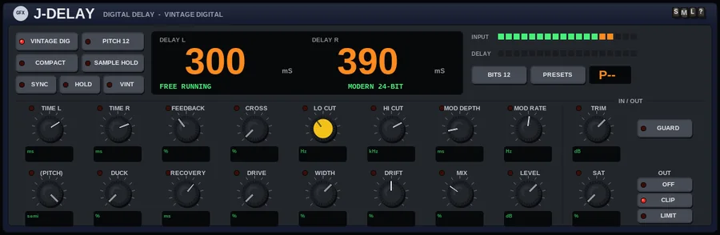
Overview
J-Delay brings together four characters of the early Japanese digital delays of the 1980s - the 12- and 14-bit converters, modulated loops, pitch shifting in the feedback and sample loops. The four program keys change the algorithm.
VINTAGE DIGITAL is the flagship rack delay, with a dual-phase LFO (sine on the left, cosine on the right) for a wide chorus-delay. PITCH 12 is a 12-bit-style, 32 kHz unit with a pitch shifter in the loop, so every repeat moves by the PITCH interval. COMPACT is the small unit: a darker loop (held under 8 kHz) and a compander that breathes, with its faint hiss. SAMPLE HOLD locks the last stretch of audio into a loop for stutters and phrase sampling.
In every program, changing the delay time glides the pitch as on the hardware, and the clock is never quite steady. The VINT key switches on the vintage converters - a lower sample clock and fewer bits - for the gritty, aliased sound of the originals.
Reach for it for
- Wide 80s chorus-delay on guitars, synths and vocals
- Cascading octave and fifth repeats (PITCH 12)
- Dark, breathing slapback and vocal echoes (COMPACT)
- Stutters and live phrase loops (SAMPLE HOLD)
- Lo-fi, bit-reduced repeats
Controls
Programs and status keys
- VINTAGE DIG
- The rack chorus-delay. The LFO runs sine on the left and cosine on the right, so MOD DEPTH spreads the repeats wide.
- PITCH 12
- Every repeat is pitch-shifted by PITCH semitones, so with feedback the echoes climb or fall. This program always uses the vintage converters, at 32 kHz and the BITS setting (12 by default).
- COMPACT
- The compact unit: the loop is held under 8 kHz (HI CUT can go no higher), and a 2:1 compander squeezes the signal into the loop and expands it coming out, so the repeats breathe, with a faint hiss.
- SAMPLE HOLD
- The sampling delay. With HOLD on, the last TIME L of audio plays round and round; nothing new is recorded.
- SYNC
- Locks TIME L and TIME R to the project tempo as note values: 1/1 to 1/32, with dotted (D) and triplet (T) values.
- HOLD
- Freezes the loop in SAMPLE HOLD. Switching it on from another program selects SAMPLE HOLD. The display shows HOLD in red while it is held.
- VINT
- The vintage clock: the delay line runs at the old hardware's sample rate with nearest-sample reads, and the converters use BITS bits. Off is the clean MODERN path. Always lit in PITCH 12.
Display, meters and presets
- DELAY L / DELAY R
- The delay times in milliseconds, in orange. The green line underneath shows FREE RUNNING, or the SYNC note values and tempo, and the converter setting (VINTAGE with its bits, or MODERN 24-BIT).
- INPUT / DELAY
- Level meters for the input and for the delayed signal.
- BITS
- Steps the vintage converters through 10, 12, 14 and 16 bits (12 by default). Fewer bits give more grit and noise. Used when VINT is on (and always in PITCH 12).
- PRESETS
- Opens the list of factory presets. The ◄ / ► keys beside it step through the ten presets, and the display beside them shows the number of the one in use. The last entry resets everything to the defaults.
The knobs
Each knob has a green readout underneath that shows its value while you touch it, and a red light that is lit whenever the knob is away from its default. Double-click a knob to reset it; hold Shift while dragging for fine moves.
- TIME L / TIME R
- The left and right delay times, 1 to 2700 ms (300 and 390 ms by default), or a note value with SYNC on. Changing the time glides the pitch, as on the hardware.
- FEEDBACK
- How much of the delay is fed back for more repeats, 0 to 99% (35% by default).
- CROSS
- Cross-feed, 0 to 100%: sends the feedback to the opposite side, so the repeats ping-pong.
- LO CUT
- Thins the repeats below this frequency, 20 to 1000 Hz (80 Hz by default). Each repeat gets thinner.
- HI CUT
- Darkens the repeats above this frequency, 1 to 20 kHz (9 kHz by default). Each repeat gets darker.
- MOD DEPTH
- How far the LFO sweeps the delay time, 0 to 10 ms (1.2 ms by default). Low settings give a gentle shimmer, high settings a deep chorus or vibrato.
- MOD RATE
- The LFO speed, 0.05 to 10 Hz (0.8 Hz by default).
- PITCH
- The interval each repeat is shifted by in PITCH 12, from -12 to +12 semitones (+12 by default). Labelled (PITCH) in the other programs, where it does nothing.
- DUCK
- Pulls the repeats down while you play, up to 18 dB, and lets them bloom back when you stop, 0 to 100%. Keeps busy parts clear.
- RECOVERY
- How quickly the repeats come back after ducking, 20 to 2000 ms (400 ms by default).
- DRIVE
- Drives the input stage before the delay, 0 to 100%, for a little grit.
- WIDTH
- The stereo width of the repeats, 0 to 150% (100% by default). 0 is mono; above 100% widens beyond the original.
- MIX
- Dry / delayed balance, 0 to 100% (30% by default).
- LEVEL
- Output level, -24 to +12 dB.
Drift
- DRIFT
- The clock is not quite steady: the left and right delay times wander slowly and independently, by up to a fraction of a millisecond, for a gentle, living pitch movement. 0 to 100% (50% by default): 50% is the standard amount, 100% twice that, 0 none; higher settings also wander a little faster.
IN / OUT
- TRIM
- Input level before anything else, from -24 to +12 dB.
- GUARD
- Off by default. When on, it gently eases very hot sources down towards about -18 dBFS average and catches fast peaks above -6 dBFS, so loud sources never overdrive the plugin. It never boosts quiet sources. An orange light shows while it is working.
- SAT
- Band saturation on the way out: only the lows and highs are saturated (the mids stay clean), with a soft curve that loosens as the level rises.
- OFF / CLIP / LIMIT
- The final stage: nothing, a soft clipper at -0.3 dBFS (no latency, the default), or a lookahead limiter holding the peaks at -0.3 dBFS (3 ms latency, compensated by REAPER). The OUT caption turns to a red CLIP while the clipper is working.
The header
- S / M / L
- Panel size: small, medium or large. The panel also scales to fit the plugin window.
- ?
- Opens a pop-up with the design credit, the GFX website address and the address of this manual. Click anywhere to close it.
Presets
- 80s Chorus Delay
- VINTAGE DIGITAL at 300 / 390 ms with 1.8 ms of modulation: the classic wide chorus-delay.
- Lead Guitar Echo
- Synced 1/8 dotted repeats with 40% feedback, a little cross-feed and a darker top.
- Dimension Wide
- Very short 14 / 21 ms delays with deep, slow modulation and no feedback, for width.
- Octave Cascade
- PITCH 12 at 330 ms: each repeat climbs an octave.
- Fifth Spiral
- PITCH 12 with uneven times and cross-feed: each repeat rises a fifth and bounces side to side.
- Octave Drop
- PITCH 12 at 360 ms: each repeat falls an octave.
- Dark Vocal Echo
- COMPACT with synced quarter and dotted-quarter repeats, vintage clock on.
- Compact Slap
- COMPACT at 120 / 135 ms with light feedback: a short slapback.
- Stutter Loop (press HOLD)
- SAMPLE HOLD synced to a quarter note at 14 bits, 60% mix: press HOLD to loop it.
- 10-Bit Grit
- VINTAGE DIGITAL on the vintage clock at 10 bits, with feedback and cross-feed.
- Reset all to defaults
- Every control back to its starting value.
Tips
- The presets set the program, times, feedback, filters, modulation, pitch, clock and mix; DRIVE, DUCK, WIDTH, DRIFT, LEVEL and the IN / OUT settings are left alone (except Reset).
- For live phrase sampling, choose SAMPLE HOLD, set TIME L to the length you want to catch (or use SYNC), then press HOLD at the end of the phrase.
- Automate TIME for tape-style pitch swoops: the time glides, so the repeats bend as it changes.
- Add DUCK on vocals and lead lines so the echoes stay out of the way while the part is playing and fill the gaps afterwards.
File: gfx-j-delay.jsfx
J-Verb
Four Japanese studio and broadcast reverbs of the 1980s: dense reflection grids and glassy digital clarity.

Overview
J-Verb brings together four digital reverbs in the spirit of the Japanese studio and broadcast units of the 1980s: dense reflection grids, glassy clarity and clean converters. The PROGRAM keys pick the algorithm, and the whole faceplate changes with it.
HALL is the big modular hall: a dense eight-line network with extra diffusion inside the loop. 3D is a broadcast engine that builds up to 32 reflections from a three-dimensional room model (levels only, so they never cancel in mono) before a high-density tail. FLAGSHIP 40 places up to 40 individual early reflections, then a smooth tail. 12-BIT is the early high-density pioneer: six combs running at a 31.5 kHz clock through 12-bit converters.
Every parameter has its own display on the front panel, as on the hardware remotes: the early reflections and the tail each have their own delay and level, the decay time has separate multipliers for the lows and highs, and the room size sets the scale of everything. A dot-matrix grid shows the reflections as they fall in time.
Reach for it for
- Big, dense halls for pads, strings and ballads (HALL)
- Realistic rooms and stages with strong early reflections (3D, FLAGSHIP 40)
- Grainy, bright 80s plates and drum rooms (12-BIT)
- Long synthwave washes and ambient tails
- Separate control of reflections and tail for placing a sound in a space
Controls
Working the displays
Every parameter has its own display. Drag up or down on a display (Shift for fine moves), use the mouse wheel over it, or press its DOWN / UP keys (hold for repeat). Double-click a display to reset it to its default. The last display you touched is outlined.
HEADROOM
- HEADROOM LEDs
- Four lights showing the input level at -30, -20, -10 and 0 dB. The 0 dB light is red.
PROGRAM
- A HALL
- The big modular hall: an eight-line network with allpasses inside the loop for massive density. DRIFT moves its read taps by a sample or two so the tail never sets, without any chorusing. Sparse, wide early reflections.
- B 3D
- The broadcast engine: up to 32 reflections from a three-dimensional room model (DENSITY sets how many) into a high-density tail. Runs at 48 kHz when VINTAGE is on.
- C FLAGSHIP 40
- Up to 40 individual early reflections (DENSITY sets how many and how wide they spread), then a smooth tail.
- D 12-BIT
- Six combs at a 31.5 kHz clock through 12-bit converters, with a few early reflections. The vintage clock is always on for this model; BITS can raise the converters to 16 or 24 bits. Its tail is darker at the top.
- VINTAGE CLOCK
- Runs the reverb at the unit's own clock rate (44.1 kHz for HALL and FLAGSHIP 40, 48 kHz for 3D, 31.5 kHz for 12-BIT) through converters with the bit depth set by BITS. Always lit on 12-BIT.
- BITS
- Steps the converter bit depth: 12, 16 or 24. Used whenever the vintage clock is on.
- READ PRESETS
- Opens the list of factory presets.
- Preset display
- Shows the last preset recalled (P1 - P10), or P-- if none.
- ◄ / ►
- The two keys under READ step to the previous or next preset (wrapping round).
The lamp rows
One-touch settings. The lamp lights on the key that matches the current value.
- LOW CUT FREQ
- Sets LOW CUT to 30, 50, 100 or 200 Hz.
- HIGH CUT FREQ
- Sets HIGH CUT to 2.5, 5, 10 or 13 kHz.
- RT LOW FREQ RANGE
- Sets RT LOW to x0.5, x1.0, x1.5 or x2.0.
- RT HIGH FREQ RANGE
- Sets RT HIGH to x0.25, x0.35, x0.5 or x1.0.
EARLY REFLECTIONS
A dot-matrix picture of the early reflections across 0 - 240 ms: each column of lit dots is a reflection, taller for louder. A faint dotted column marks where the reverb tail starts (PRE DELAY). The grid is empty when E.RFL LEVEL is OFF.
Reverb parameters
- REVERB TIME
- How long the tail takes to die away at mid frequencies, 0.1 to 20 seconds (2.8 s by default).
- PRE DELAY
- The delay before the reverb tail starts, 0 to 250 ms (24 ms by default).
- REV LEVEL
- The level of the reverb tail, -30 to +6 dB; fully down reads OFF.
- E.RFL DELAY
- The delay before the early reflections start, 0 to 120 ms (8 ms by default).
- E.RFL LEVEL
- The level of the early reflections, -30 to +6 dB (-6 dB by default); fully down reads OFF.
- ROOM SIZE
- The size of the space, 10 to 12000 m3 (3000 by default). It scales the reflection pattern and the lengths of the reverb network.
- DENSITY
- How many early reflections there are (and on FLAGSHIP 40, how widely they spread), 0 to 100%.
- DIFFUSION
- How quickly the tail smears into a smooth wash, 0 to 100%. Low settings keep more distinct echoes in the onset.
- RT HIGH
- The decay time above about 5 kHz (3 kHz on 12-BIT) as a multiple of REVERB TIME, x0.1 to x1.5. Below 1 the top end dies away sooner, as in a real room.
- RT LOW
- The decay time below about 250 Hz as a multiple of REVERB TIME, x0.5 to x2.5. Above 1 the low end rings on longer.
- LOW CUT
- A high-pass filter on the reverb, 20 to 1000 Hz (80 Hz by default).
- HIGH CUT
- A low-pass filter on the reverb, 1 to 20 kHz (12 kHz by default).
- DRIVE
- A clean preamp drive on the reverb input, 0 to 100%: soft saturation before the reverb.
- WIDTH
- The stereo width of the reverb, 0 to 150%. 0 is mono; above 100 is wider than normal.
- DRIFT
- How much the reverb wanders over time, 0 to 100% (20% by default). See Drift below.
- MIX
- The dry / reverb balance, 0 to 100% (30% by default).
Drift
A slow random wander that keeps the tail alive. On HALL it moves the read taps of the network by up to two samples - more density, never a pitch wobble. On the other models it lets the air absorption (the high-frequency damping in the tail) wander. On 12-BIT the old clock also runs very slightly unsteady. The wander speeds up as you turn DRIFT up.
IN / OUT
- TRIM
- Input level before anything else, -24 to +12 dB. Click the display to select it, then drag, use the mouse wheel or DOWN / UP.
- GUARD
- Off by default. When on, it gently eases very hot sources down towards about -18 dBFS average and catches fast peaks above -6 dBFS, so loud sources never overdrive the plugin. It never boosts quiet sources.
- LEVEL
- The output level, -24 to +12 dB.
- SAT
- Band saturation on the way out, 0 to 100%: only the lows and highs are saturated (the mids stay clean), with a soft curve that loosens as the level rises.
- OFF / CLIP / LIMIT
- The final stage: nothing, a soft clipper at -0.3 dBFS (no latency), or a lookahead limiter that holds the peaks at -0.3 dBFS (3 ms latency, compensated by REAPER). The caption reads OUT STAGE - CLIPPING while the clipper is working.
The header
- S / M / L
- Panel size: small, medium or large. The panel also scales to fit the plugin window.
- ?
- Opens a pop-up with the design credit, the GFX website address and the address of this manual. Click anywhere to close it.
Presets
Presets set the model and the reverb parameters (including VINTAGE, BITS, WIDTH and MIX). DRIFT and the IN / OUT section are left as they are, except Reset.
- Massive Hall
- HALL: 4.5 s in a very large room, wide, with longer lows and darker highs.
- Vocal Hall
- HALL: 2.6 s, a medium hall for vocals, low cut at 100 Hz.
- Synth Pad Space
- HALL: an 8 s tail in a huge room, very diffuse and wide, 40% mix.
- 3D Scoring Stage
- 3D: 2.2 s with dense, strong early reflections.
- Film Room
- 3D: a small 1 s room with prominent reflections.
- Studio Room 40
- FLAGSHIP 40: a tight 0.7 s room with the full 40 reflections.
- Acoustic Guitar (vintage)
- FLAGSHIP 40: a 1.3 s room with the vintage clock on.
- 80s Vocal Plate
- 12-BIT: a 2 s bright, grainy plate-like reverb at 12 bits.
- Drum Room 12-Bit
- 12-BIT: a short 1 s room with a little drive.
- Synthwave Wash
- HALL: a 12 s wash in a huge room, vintage clock, 150% width, 45% mix.
- Reset all to defaults
- Every control back to its starting value, including drift and the IN / OUT section.
Tips
- Use E.RFL LEVEL and REV LEVEL separately: reflections alone place a sound in a room without washing it out; the tail alone gives space without clutter.
- A PRE DELAY of 20 - 60 ms keeps a vocal clear of its own reverb.
- Lower RT HIGH (the x0.35 or x0.5 lamp) for a more natural, darker room; raise RT LOW for warmth.
- On a send, set MIX to 100% and use LEVEL to set the return level.
File: gfx-j-verb.jsfx
Mid/Side
A mid/side processor for width, mono bass, air on the sides and focus in the centre.
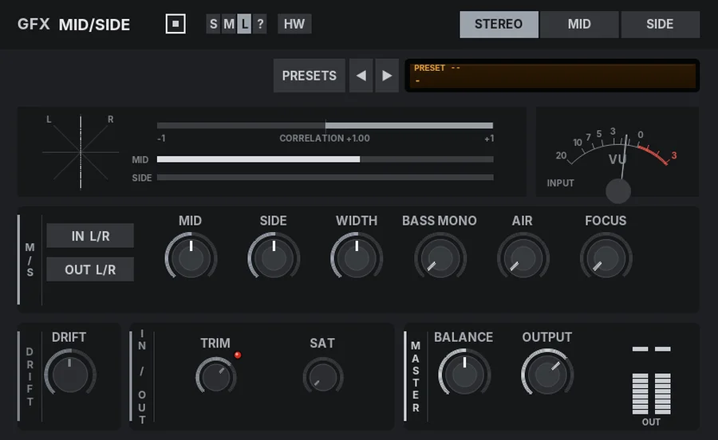
Overview
Mid/Side splits a stereo signal into its mid (what both sides share - the centre of the image) and its side (the difference - the width). You can then set their levels separately, widen or narrow the image, keep the bass in mono, add air to the sides and presence to the centre, before it is turned back into left and right.
WIDTH keeps the loudness steady as you widen or narrow, so you hear the change in the image rather than a change in level. A vectorscope, a correlation meter and mid / side energy bars show what is happening.
It can also take in or send out mid/side signals directly, as an M/S encoder or decoder.
Reach for it for
- Widening or narrowing a mix or a stereo bus
- Keeping the low end in mono for a solid, cut-friendly bass
- Adding air to the edges without making the centre harsh
- Bringing a vocal forward in the centre (FOCUS)
- Checking a mix in mid or side solo
- Encoding or decoding M/S recordings
Controls
Display
- Vectorscope
- The output as a cloud of dots: a vertical line is mono, a wide cloud is wide stereo, and a horizontal spread means the sides are out of phase.
- CORRELATION
- From -1 to +1. Near +1 the sides are mostly the same (mono-safe); around 0 is very wide; below 0 (the bar turns red) the sides are out of phase and may cancel in mono.
- MID / SIDE
- The energy of the mid and side signals.
- INPUT
- A VU meter showing the input level (0 VU = -18 dBFS).
Header
- STEREO / MID / SIDE
- What you hear. STEREO is the normal output; MID plays the mid signal alone and SIDE plays the side signal alone (in both ears). MID and SIDE are for listening only - switch back to STEREO before you bounce.
M/S
- IN L/R / IN M/S
- The input format. L/R: a normal stereo input. M/S: the input is already mid (left channel) and side (right channel).
- OUT L/R / OUT M/S
- The output format. L/R: a normal stereo output. M/S: sends out mid on the left and side on the right, for encoding.
- MID
- The level of the mid signal, -12 to +12 dB.
- SIDE
- The level of the side signal, -12 to +12 dB.
- WIDTH
- 0 to 200% (100% leaves the image as it is). 0% is mono; above 100% is wider. The overall loudness is kept steady as you turn it.
- BASS MONO
- Removes the side signal below this frequency (24 dB per octave), up to 300 Hz, so the low end sits in mono. Below 20 Hz it reads OFF.
- AIR
- A high shelf at 8 kHz on the side signal only, 0 to +9 dB: an open, airy top to the edges without brightening the centre.
- FOCUS
- A presence lift at 2.5 kHz on the mid only, 0 to +6 dB: brings vocals and other centre sounds forward.
DRIFT
- DRIFT
- See Drift below.
IN / OUT
- TRIM
- Input level before anything else, from -24 to +12 dB. A single click on the knob switches GUARD on or off (on by default); its light at the knob's upper right is lit while GUARD is on and glows brighter while it is catching peaks. GUARD gently eases very hot sources down towards about -18 dBFS average and catches fast peaks above -6 dBFS, so loud sources never overdrive the plugin. It never boosts quiet sources.
- SAT
- Band saturation on the way out: only the lows and highs are saturated (the mids stay clean), with a soft curve that loosens as the level rises.
- OFF / CLIP / LIMIT
- The final stage: nothing, a soft clipper (no latency, the default), or a lookahead limiter (3 ms latency, compensated by REAPER). The CLIP key flashes red while the output is being clipped.
MASTER
- BALANCE
- Left / right balance, -100 to +100%.
- OUTPUT
- The output level, -24 to +12 dB.
- OUT meters
- Output level, left and right. Click them to reset the peak hold.
The header
- Theme picker
- Changes the panel's colour theme.
- S / M / L
- Panel size: small, medium or large. The panel also scales to fit the plugin window.
- HW
- Switches between the hardware-style panel and the flat look.
- PRESETS
- Opens the list of factory presets (or click the preset display). The ◄ / ► keys step through them. Choosing one sets the M/S section and the drift amounts; the listen mode, BALANCE, OUTPUT, the DRIFT dial and the input / output settings are left as they are. The last entry resets everything to the defaults.
- ?
- Opens a pop-up with the design credit, the GFX website address and the address of this manual. Click anywhere to close it.
Drift
DRIFT (0 - 100%, 50% by default) brings slow, random movement: the width breathes, the AIR shelf wanders and the left / right balance leans a little. 50% is the standard amount, 100% twice that, 0 none; the wander also speeds up as you turn it up. Some presets set their own amounts for the three movements (the Mono Bass, Narrow & Tight and M/S presets switch them off).
Presets
- Subtle Widen
- 120% width with a touch of air.
- Wide Master
- 140% width, a little more side level and air, bass in mono below 120 Hz.
- Mono Bass
- No width change: just the bass in mono below 150 Hz, no drift.
- Vocal Focus
- Slightly narrower (90%), the mid up 1 dB and 3 dB of FOCUS, mono bass below 100 Hz.
- Super Wide
- 175% width, more side level, 4 dB of air, mono below 200 Hz, more drift.
- Narrow & Tight
- 70% width and the sides down 2 dB, mono below 150 Hz, no drift.
- M/S Decode
- Takes a mid/side input and turns it into left and right.
- M/S Encode
- Takes a left/right input and sends out mid (left) and side (right).
- Reset all to defaults
- Every control back to its starting value.
Tips
- Use SIDE listen to hear what WIDTH and AIR are really adding; if it sounds harsh or hollow, back off.
- Keep an eye on CORRELATION while widening: if it heads below 0, the mix will lose energy in mono.
- BASS MONO at 100-150 Hz tightens the low end of almost any mix without changing the image above it.
- FOCUS is subtler than an EQ on the whole mix: it lifts the centre only, so the sides stay as they are.
File: gfx-midside.jsfx
Mod Rack
A 2U rack of four parallel effects - chorus, tremolo, vibe and delay - each with a circuit-bending MOD pot.

Overview
Mod Rack puts four classic modulation effects side by side in one rack unit: a bucket-brigade CHORUS, an optical TREMOLO, a photocell VIBE and a BBD / tape DELAY. They all work in parallel on the input, and each one adds only its own change to the sound: the dry signal always passes through, so turning a module up never takes anything away from the original.
Every module has a red MOD pot that bends its circuit in an unusual direction: the chorus's clock stretches into a warbly, seasick, lo-fi sound; the tremolo's smooth pulse chops into a square on / off; the vibe's lamp becomes lopsided and thumps; and the delay's clock runs away into self-oscillation with wow and flutter. Three L / C / R keys per module decide where its effect goes in the stereo field. Rates and times can follow the project tempo, and a gentle DRIFT keeps the LFOs from sounding mechanical.
Reach for it for
- Lush stereo chorus on guitars, keys and synths
- Surf and vintage tremolo, from smooth to choppy
- Throbbing, swirling vibe on guitar and electric piano
- Dub echoes and runaway, self-oscillating delay
- Stacking several modulation effects on one source in one plugin
Controls
Left: presets and size
- LCD
- Shows the current preset, or the name and value of the control you are touching. Click it to open the preset list.
- PRESETS
- Opens the list of factory presets. Choosing one sets all four modules, the master DRIFT and OUTPUT and the master MIX, and switches tempo sync off. The first entry, INIT, is the starting point with every module silent.
- ◄ / ►
- Step to the previous or next preset.
- S / M / L
- Panel size: small, medium or large (new instances open in Large). The panel also scales to fit the plugin window.
- ?
- Next to the S / M / L size keys. Opens a pop-up with the design credit, the GFX website address and the address of this manual. Click anywhere to close it.
The four modules
From left to right: TREMOLO, CHORUS, VIBE and DELAY. Knobs: drag up and down (Shift for fine moves); double-click or Ctrl-click to reset.
TREMOLO (optical)
- RATE
- The tremolo speed, 0.1 to 15 Hz (4 Hz by default), or a note value when synced.
- DEPTH
- How deep the volume pulses, 0 to 100%. At 0 the module is silent.
- SQUARE CHOP (MOD)
- Morphs the smooth sine pulse into a hard square on / off chop, and makes the optical response faster to match.
CHORUS (BBD)
- RATE
- The chorus LFO speed, 0.05 to 8 Hz (0.8 Hz by default), or a note value when synced.
- DEPTH
- How far the chorus sweeps, 0 to 100% (50% by default).
- MIX
- How much chorus is added, 0 to 100%. At 0 the module is silent.
- CLOCK STRETCH (MOD)
- Stretches the bucket-brigade line: longer delays, a lower clock (with its grainy aliasing and darker top), plus a random warble and a slow seasick wander. Turn it up for lo-fi, warped tape-like chorus.
VIBE (photocell)
- RATE
- The vibe speed, 0.1 to 12 Hz (1.5 Hz by default), or a note value when synced.
- DEPTH
- How deep the four-stage phase sweep goes, 0 to 100%. At 0 the module is silent.
- ASYM LAMP (MOD)
- Makes the lamp's sweep lopsided, slows its cooling, and adds a low-end thump in time with the pulse - the throbbing character of the classic vibe pedals.
DELAY (BBD / tape)
- TIME
- The delay time, 20 to 1500 ms (350 ms by default), or a note value when synced. Moving it glides the time, bending the pitch of the echoes like tape.
- FEEDBACK
- How many echoes, 0 to 95% (30% by default). The repeats get warmer and darker each time round, with a little saturation.
- MIX
- How much delay is added, 0 to 100%. At 0 the module is silent.
- RUNAWAY CLOCK (MOD)
- Pushes the feedback past the point of self-oscillation (the saturation keeps it in check) and adds wow and flutter to the time. For dub-style runaway echoes.
SYNC (RATE / TIME)
- SYNC key or the RATE / TIME label
- Click to step through: free (Hz or ms), SYNC (straight note values), DOTTED and TRIPLET. The label shows the mode and the knob then picks a note value from 4 BARS to 1/32. While REAPER plays, synced LFOs lock to the beat grid (drift does not move them). Synced delay times are limited to 1.5 s.
L / C / R
Three keys under each module choose where its effect goes. Click a key to switch it in or out.
- L
- Works on the left channel, out on the left.
- R
- Works on the right channel, out on the right.
- C
- Works on the mono sum, out in the centre (both sides).
- L + R
- A stereo effect (the chorus runs its two sides 90 degrees apart).
- C with L and / or R
- Spread: the voices run at different points in their cycle, or, for the delay, the taps sit at 3/4, 1 and 5/4 of the time.
- All off
- The module is muted (the LCD shows MUTED).
MASTER
- DRIFT
- A slow random wander of each module's LFO rate, independently, up to plus or minus 20% at 100% (20% by default). Synced LFOs are not affected while REAPER plays.
- MIX
- The master amount of all four modules together, 0 to 100% (100% by default). The dry signal is always at full level.
- OUTPUT
- Output level, -24 to +12 dB.
- OUT meter
- Output level.
- LIMIT
- Lights when the safety limiter is working. A limiter at the end holds the output just under 0 dBFS (about -0.3 dBFS).
Presets
- Init
- Every module silent: the starting point.
- Lush Chorus
- Slow, deep stereo chorus at 55%.
- Seasick Tape
- Slow, deep chorus with a lot of clock stretch on L, C and R, plus a 380 ms stereo delay with some runaway clock; more drift.
- Surf Trem
- Deep 6 Hz stereo tremolo with a little chop, and a short 120 ms slapback delay in the centre.
- Vibe Throb
- Deep vibe in the centre with a strongly lopsided lamp.
- Dub Echo
- 450 ms delay on L, C and R with long feedback and some runaway clock.
- Rotary Wash
- Chorus, tremolo and a fast vibe together, for a swirling rotary-like wash.
- Runaway
- A 300 ms centre delay right on the edge of self-oscillation; output down 3 dB.
Tips
- Each module only adds its effect, so you can stack them freely: try a little chorus under the tremolo, or vibe into a short delay.
- Use the L / C / R keys to place effects: a tremolo on L and R only, with the chorus in C, makes a wide, moving image.
- RUNAWAY CLOCK with high FEEDBACK can build up - ride MIX or FEEDBACK with automation for dub throws.
- Lock the tremolo or delay to the tempo with SYNC so the pulse and echoes sit in the groove.
File: gfx-modrack.jsfx
Oontecho
A rhythmic trance-gate multi-effect: a tempo-synced step gate that also moves the pan and a resonant filter, followed by a stereo delay and a reverb wash.
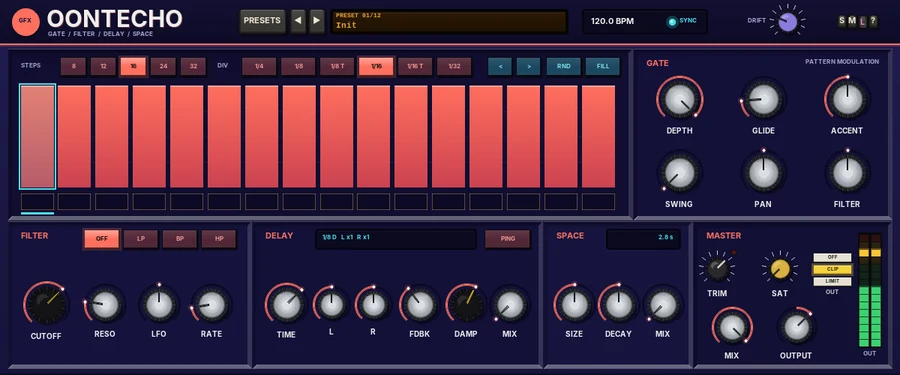
Overview
Oontecho is in the spirit of the classic rhythmic trance-gate multi-effects of the 2000s. At its heart is a step sequencer of up to 32 steps that chops the volume in time with the project. Each step has a level, drawn as a bar, and an accent. The same pattern can also throw the sound from side to side and play the cutoff of a resonant filter, so one pattern can gate, pan and sweep at once.
The signal runs GATE, then FILTER, then DELAY, then SPACE, then the master MIX and the output stage. The delay is a tempo-synced stereo echo with separate left and right times and a ping-pong mode; SPACE is a smooth eight-line reverb wash. Both add their sound on top of the gated signal, so a chopped pad can trail echoes and a tail into the gaps.
The gate follows the project. While REAPER plays it locks to the timeline, so it is in time from the very first beat; while the transport is stopped it keeps running freely at the project tempo, so you can audition sounds with it.
Reach for it for
- Classic trance-gated pads, strings and vocals
- Sidechain-style pumping without a sidechain
- Sequenced resonant filter lines from a sustained chord
- Stereo chops that bounce from side to side
- Dub-style gated throws into a dark ping-pong echo
- Slow, gliding swells into a long reverb wash
Controls
The header
- PRESETS, ◄ ► and the display
- PRESETS (or a click on the display) opens the list of factory presets; ◄ and ► step through them, and the display shows the one in use. A new instance opens on Init.
- Tempo display
- The project tempo in BPM. The light and the word SYNC show while REAPER plays and the gate is locked to the timeline; FREE shows while it is stopped and the gate runs on at the project tempo.
- DRIFT
- 0 to 100% (25% by default). See Drift below.
- S / M / L
- Panel size: small, medium or large. The panel also scales to fit the plugin window. A new instance opens in Large.
- ?
- Opens a pop-up with the design credit, the GFX website address and the address of this manual. Click anywhere to close it.
The step grid
The pattern itself, across the top of the panel. Each column is one step; the bar is its level and the cell below is its accent. The beats are shaded in alternate tones, and the step that is playing is outlined in cyan.
- STEPS 8 / 12 / 16 / 24 / 32
- The length of the pattern (16 by default).
- DIV
- The length of each step: 1/4, 1/8, 1/8 T, 1/16, 1/16 T or 1/32 (1/16 by default). 16 steps of 1/16 is one bar.
- < / >
- Rotate the pattern one step left or right, within the current length. Use them to move the groove against the beat.
- RND
- Makes a random pattern on all 32 steps: every fourth step is full, the others are a mix of rests and half, three-quarter and full hits, with a few accents.
- FILL
- Sets all 32 steps to full and clears the accents: a blank canvas.
- Level bars
- Click and drag across the bars to draw the levels, 0 to 100%; a quick sweep paints a smooth line across the steps it passes. Right-drag erases (sets steps to 0). Hover over a step to see its level. Changes are heard at once, even on the step that is playing.
- Accent row
- Click a cell to switch that step's accent on or off; drag along the row to paint the same state across several steps. Accented steps are drawn in amber.
GATE
The PATTERN MODULATION knobs: what the pattern does to the sound.
- DEPTH
- How far the pattern moves the volume, 0 to 100% (100% by default). At 100% a silent step is silent; at 0% the volume is left alone and the pattern only drives PAN and FILTER.
- GLIDE
- How smoothly one step moves to the next, 0 to 100% (15% by default). At 0% the edges are fast but click-free, for a hard chop; higher settings soften them, up to a slow swell over half a step at 100% - the classic pumping feel.
- ACCENT
- How much the accented steps stand out, shown as 0 to +6 dB (+3 dB at the default 50%). Accented steps are louder by that much and also open the filter by up to 1.5 octaves.
- SWING
- Delays every second step, 0 to 50% (0% by default). At 50% the off-step lands half a step late.
- PAN
- -100 to +100% (0% by default). The pattern moves the sound across the stereo field: odd steps to one side, even steps to the other, each as far as its level. With + the first step goes left; - flips the sides.
- FILTER
- -5 to +5 octaves (0 by default). The pattern plays the cutoff of the FILTER section: a full step moves it this far above (+) or below (-) CUTOFF, a silent step leaves it at CUTOFF. Only heard when a filter type is chosen.
FILTER
A smooth, resonant state-variable filter after the gate.
- OFF / LP / BP / HP
- The filter type: off, low-pass, band-pass or high-pass (OFF by default). Changing type crossfades, so it never clicks. The CUTOFF cap turns yellow for HP.
- CUTOFF
- The filter's base frequency, 20 Hz - 20 kHz (2 kHz by default). The pattern, the accents, the LFO and DRIFT all move it from here.
- RESO
- Resonance, 0 to 100% (20% by default). Higher settings give a sharper, more vocal peak; the level is trimmed a little as it rises.
- LFO
- The depth of a built-in sine LFO on the cutoff, -4 to +4 octaves (0 by default). Negative values start the sweep the other way.
- RATE
- The LFO's cycle, from 4 bars down to 1/32, including dotted (D) and triplet (T) values (1 bar by default). It locks to the timeline while REAPER plays.
DELAY
A tempo-synced stereo echo, after the filter. The display shows the time and the left and right multipliers.
- PING
- Ping-pong: the echoes start on the left and bounce from side to side. Off by default.
- TIME
- The echo time as a note value, from 4 bars down to 1/32, including dotted (D) and triplet (T) values (1/8 D by default). Echoes are limited to 4 seconds.
- L / R
- Multiply the time on each side: x0.5, x0.75, x1, x1.5 or x2 (x1 by default). The knob shows the resulting time in ms. Different values on each side give a wide, rhythmic spread.
- FDBK
- Feedback, 0 to 95% (35% by default): how many repeats you hear. The loop is soft-limited, so it stays musical when pushed.
- DAMP
- A high-cut in the feedback loop, 1 - 20 kHz (6 kHz by default): lower settings make each repeat darker than the last. A fixed low cut in the loop keeps the repeats from building up mud.
- MIX
- The level of the echoes on top of the gated sound, 0 to 100% (0% by default, so the delay is silent until you raise it).
SPACE
A smooth reverb wash after the delay, so the echoes are reverberated too. The display shows the decay time in seconds.
- SIZE
- The size of the space, 0 to 100% (50% by default).
- DECAY
- How long the tail lasts, 0.4 to 10 seconds (0 to 100%; 50%, about 2.8 seconds, by default). Longer settings are also a little darker.
- MIX
- The level of the reverb on top, 0 to 100% (0% by default).
MASTER
- TRIM
- Input level before anything else, -24 to +12 dB.
- GUARD
- Click the TRIM knob (without turning it) to switch GUARD on or off; the small light at the knob's upper right shows it is on and glows brighter while it works. Off by default. Gently eases very hot sources down towards about -18 dBFS average and catches fast peaks above -6 dBFS. It never boosts quiet sources.
- SAT
- Band saturation on the way out, 0 to 100% (0% by default): only the lows and highs are saturated, the mids stay clean.
- OFF / CLIP / LIMIT
- The final stage: nothing, a soft clipper at -0.3 dBFS (no latency), or a lookahead limiter (3 ms latency, compensated by REAPER). CLIP is on by default and flashes red while it clips.
- MIX
- Dry / wet balance of the whole effect, 0 to 100% (100% by default). Lower it to keep some of the ungated sound underneath.
- OUTPUT
- Output level, -24 to +12 dB.
- OUT meter
- Left and right output levels.
Drift
DRIFT is never rhythmic: the timing always stays locked to the grid. Instead the filter cutoff wanders slowly (up to about a sixth of an octave either way at the default 25%, just over half an octave at 100%), and the delay's colour breathes with it - its damping and a little of its feedback. At 0% everything stays exactly where you set it.
Knobs: drag up or down (Shift for fine moves); double-click to reset a knob to its default. The mouse wheel works too, and the value shows while you hover.
Presets
Presets set the pattern, STEPS, DIV and every GATE, FILTER, DELAY and SPACE control, and the master MIX. OUTPUT, DRIFT and the TRIM / GUARD, SAT and output stage are left as they are.
- Init
- 16 full steps of 1/16 with no accents, filter, delay or space: a blank canvas to draw on.
- Classic 16ths
- The 3-3-2 trance chop in 1/16ths with accents, dotted-eighth echoes and a little space.
- Euphoric Gate
- Accented 1/16ths through a resonant low-pass at 900 Hz that the pattern opens, with echoes and a wider space.
- Sidechain Pump
- Ducked on every beat and swelling back up, with plenty of glide: sidechain pumping without a sidechain.
- Half-Time Chop
- Long 1/8 hits across two bars, a gentle low-pass and a quarter-note echo behind them.
- Filter Sequence
- The volume stays put; the pattern plays the cutoff of a very resonant low-pass from 160 Hz, up to 4.5 octaves.
- Dub Delay Gate
- Sparse 1/8 hits through a high-pass, feeding a dark dotted-quarter ping-pong echo with long feedback.
- Ambient Wash
- A slow, gliding 8-step quarter-note gate with a two-bar LFO on a low-pass, a long echo and a large, dark space.
- Triplet Trance
- One bar of 1/16 triplets (24 steps), rolling across the stereo field, with triplet echoes.
- Ping-Pong Pan
- 1/16ths that fly hard left and right, with ping-pong echoes bouncing behind them.
- 32nd Stutter
- A bar of 1/32 chops that roll into the next downbeat, with a short 1/16 echo.
- LFO Sweep Gate
- A swung 1/16 gate through a resonant band-pass swept three octaves by the LFO over two bars.
Tips
- Put it on a sustained source - a pad, a held chord or a long vocal note. The gate needs something to chop.
- The FILTER knob in GATE, ACCENT's filter lift and the LFO do nothing while the filter type is OFF: choose LP, BP or HP first.
- For a pure filter sequence, turn DEPTH to 0 and FILTER up: the volume stays even while the pattern plays the cutoff.
- Raise GLIDE for a pumping, sidechain-style feel; keep it low for a hard, choppy gate.
- Delay and space MIX are added on top, so the gaps in the pattern fill with echoes and tail. Raise them slowly - a little goes a long way.
- Use the < and > keys to try the same pattern starting on a different step; it can change the groove completely.
File: gfx-oontecho.jsfx
Phaser
A stereo phase shifter with three voicings: the orange stompbox, the slow opto and real tape phasing.
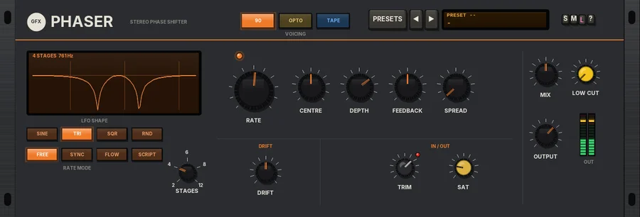
Overview
Phaser runs your signal through a chain of all-pass stages and mixes it back with the dry sound. Where the two cancel you get notches, and as the LFO moves the stages those notches sweep up and down the spectrum - the classic swirling, liquid phase sound.
Three voicings are built in. 90 is the little orange stompbox: a focused, vocal sweep with its peaks gently rounded off. OPTO follows the old lamp-and-photocell units: the sweep rises quickly and falls back slowly, so it sounds rounder and deeper over a wider range. TAPE is a different machine altogether - phasing done with a short delay, as with two tape machines, including a hand-made motion that wanders like a thumb on the reel.
The rate can run free, lock to the project tempo, or follow the tempo while flowing through loops. A DRIFT dial adds slow, random wander to the rate, depth and centre so the effect never sounds mechanical.
Reach for it for
- Swirling rhythm guitar and electric piano
- Slow, deep sweeps on pads and synths
- Tape-style phasing on drums, a bus or a whole mix
- Tempo-locked throb with the square LFO
- Wide stereo movement with SPREAD
Controls
VOICING (header)
- 90
- The orange stompbox. The sweep covers about 120 Hz to 2.4 kHz, and peaks above about -3 dBFS are gently rounded off on the way out. With this voicing a SCRIPT / BLOCK key appears beside the rate keys (see below).
- OPTO
- The lamp-and-photocell phaser. The sweep rises fast and falls back slowly, covers a wider range (about 80 Hz to 2 kHz) and sounds smoother and deeper.
- TAPE
- Phasing with a swept short delay (about 0.6 to 8 ms at its centre) against a slightly delayed dry signal, as with two tape machines. The swept copy can pass right through the dry one for the deep cancellation of real tape phasing. In this voicing the STAGES knob becomes MOTION.
Display
The window on the left shows the live frequency response - the notches moving as the effect sweeps. The top line shows the number of stages and the current sweep frequency, or in TAPE the current delay time in ms.
LFO SHAPE and RATE MODE
- SINE / TRI / SQR / RND
- The LFO shape. Triangle is the even, classic sweep; sine lingers at the ends; square jumps between two settings for a throbbing effect; random wanders from point to point.
- FREE / SYNC / FLOW
- How the rate is set: FREE in Hz, SYNC locked to the project tempo and timeline, FLOW tempo-synced but running continuously through loops.
- SCRIPT / BLOCK (90 only)
- A quick feedback switch for the 90 voicing. SCRIPT is the original with no feedback; BLOCK adds 40% feedback for a stronger, more pronounced sweep. If FEEDBACK has been set to any other value the key reads CUSTOM; clicking it then returns to SCRIPT.
- STAGES
- The number of all-pass stages: 2, 4, 6, 8 or 12. More stages give more notches and a thicker, more complex sweep; 4 is the classic pedal. Click a number to pick it. Not shown in TAPE.
- MOTION (TAPE only)
- What moves the tape: LFO (the rate and shape above), HAND (a slow, random wander like a hand on the reel) or BOTH (the two blended).
Phaser
- RATE
- The LFO speed, 0.02 to 10 Hz, or a note value from 4 bars to 1/32 (with dotted and triplet values) when SYNC or FLOW is on. The light beside it blinks with the LFO. In TAPE with MOTION set to HAND the knob becomes HAND SPEED: how fast the hand-made wander moves (0.02 to 10 Hz).
- CENTRE
- Where the sweep sits, 0 to 100%. Low settings put the notches low in the spectrum; high settings move them up. In TAPE it sets the centre delay time.
- DEPTH
- How far the sweep travels either side of CENTRE, 0 to 100%. Zero gives a static notch filter.
- FEEDBACK
- Feeds the output back into the stages, from -95% to +95%. Positive sharpens the notches into a ringing, vocal tone; negative gives a hollower colour. The level is compensated so strong settings don't jump out.
- SPREAD
- Offsets the right side's sweep from the left, from 0 to 180 degrees. 0 is a classic mono phaser; 90 - 180 sweeps the two sides against each other for wide stereo motion. In TAPE with HAND motion it sets how independently the two sides wander.
Drift
A slow random wander that keeps the sweep from sounding mechanical.
- DRIFT
- 0 to 100%. 50% is the standard amount; 100% is twice that, 0 turns it off. It moves the LFO rate a little, and the depth and centre of the sweep a little more. Higher settings also make the wander move faster.
IN / OUT
- TRIM
- Input level before anything else, from -24 to +12 dB.
- GUARD
- Click the TRIM knob (without turning it) to switch GUARD on or off; the small light at the knob's upper right shows it is on and glows brighter while it works. On by default. Gently eases very hot sources down towards about -18 dBFS average and catches fast peaks above -6 dBFS, so loud sources never overdrive the plugin. It never boosts quiet sources.
- SAT
- Band saturation on the way out: only the lows and highs are saturated (the mids stay clean), with a soft curve that loosens as the level rises.
- OFF / CLIP / LIMIT
- The final stage: nothing, a soft clipper that holds the peaks just under 0 dBFS (no latency), or a lookahead limiter (3 ms latency, compensated by REAPER). The CLIP key flashes red while the clipper is working.
Master
- MIX
- Dry / effect balance, 0 to 100%. 50% gives the deepest notches; lower is subtler; at 100% you hear only the shifted signal, which gives a gentle pitch wobble (vibrato) rather than phasing.
- LOW CUT
- A high-pass filter on the effected signal only, from off (fully left) up to 500 Hz. The bass stays dry, clean and centred while the mids and highs swirl.
- OUTPUT
- Output level, -24 to +12 dB.
- OUT meters
- Output level, left and right.
The header
- PRESETS, ◄ ► and the display
- PRESETS (or a click on the display) opens the list of factory presets; ◄ and ► step through them, and the display shows the number and name of the preset in use. Choosing one sets the plugin's controls for that job; the input and output stages are left as they are.
- S / M / L
- Panel size: small, medium or large. The panel also scales to fit the plugin window.
- ?
- Opens a pop-up with the design credit, the GFX website address and the address of this manual. Click anywhere to close it.
Presets
- 90 Script
- The classic orange pedal: 4 stages, triangle sweep at 0.6 Hz, no feedback.
- 90 Block
- The same pedal with 40% feedback for a stronger, more vocal sweep.
- 90 Slow Swell
- The 90 voicing with a slow (0.15 Hz), deep sweep.
- Opto Lush
- OPTO, 8 stages, slow sine sweep with some feedback and the right side 90 degrees apart.
- Opto Square Throb
- OPTO, 6 stages, square LFO locked to 1/8 notes for a rhythmic throb.
- Opto Stereo Swirl
- OPTO, 12 stages, strong feedback and the two sides 180 degrees apart.
- Opto Vibrato
- OPTO at 4.5 Hz with MIX at 100%: a pitch vibrato instead of phasing.
- Hand Tape Phasing
- TAPE moved by hand: a slow, uneven, wandering sweep.
- Tape Jet
- TAPE with 60% feedback and both LFO and hand motion, for the jet-plane sound.
- Through-Zero Sweep
- TAPE with a very slow, full-depth sweep that passes right through the dry signal; drift off.
- Reset all to defaults
- Every control back to its starting value, including the input and output stages.
Tips
- For the classic tape-phasing effect on a mix bus, use TAPE with FEEDBACK at 0, a slow sine sweep and MIX at 50%.
- On bass or a full mix, raise LOW CUT to 100 - 200 Hz so the low end stays solid while the top swirls.
- Try the square LFO with SYNC on for a rhythmic, tremolo-like throb that sits in time with the track.
- If the effect sounds too thin or nasal, lower FEEDBACK or move CENTRE down; for more drama, add stages.
File: gfx-phaser.jsfx
Polyvibe
A lamp-and-photocell vibe: four unequal phase stages swept by a modelled light bulb, with a preamp for colour.
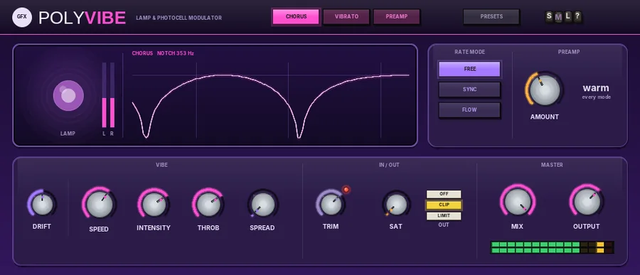
Overview
Polyvibe is a vibe effect in the spirit of the classic lamp-and-photocell units. Four unequal phase-shift stages are swept by a light bulb shining on light-dependent resistors. The bulb heats up quickly and cools slowly, and the photocells lag behind it, so the sweep is lopsided - the familiar throbbing, liquid swirl rather than an even phaser.
In CHORUS mode the shifted signal is mixed with the dry one for the classic swirl; in VIBRATO mode you hear only the shifted signal, which gives a pitch wobble. A transistor-style preamp runs in every mode, adding asymmetric saturation, a low-mid lift and a rounded top - and PREAMP mode switches the vibe off so you can use the preamp on its own.
Reach for it for
- The classic swirling vibe on clean or driven guitar
- Organ and electric piano that needs slow, throbbing movement
- Pitch-wobble vibrato on vocals, guitars and synths
- Wide stereo movement with SPREAD
- Warm preamp colour on its own (PREAMP mode)
Controls
Modes (header)
- CHORUS
- The dry signal plus the phase-shifted one, half and half: the classic vibe swirl, with moving notches in the response.
- VIBRATO
- The phase-shifted signal only. The response stays flat and you hear a pitch wobble.
- PREAMP
- The vibe is off; only the preamp colours the sound. The lamp shows LAMP OFF.
The display
- Lamp
- The glowing orb shows the bulb's brightness as it pulses, with L and R bars beside it for each channel (they differ when SPREAD is up).
- Response
- In CHORUS mode, the live frequency response with the current notch frequency shown above it. In VIBRATO mode the response is flat.
Rate mode
- FREE
- SPEED is set in Hz.
- SYNC
- SPEED is a note value locked to the project tempo and timeline, so the sweep lines up with the bars and follows loop jumps.
- FLOW
- Tempo-synced, but the sweep runs continuously through loops and restarts.
Preamp
- AMOUNT
- The preamp colour, 0 - 100% (starts at 40%). It adds asymmetric saturation, lifts the low mids and rounds off the top. The word beside the knob shows the character: clean, warm, pushed or driven. At 0% the preamp is clean. Works in every mode.
Vibe
- SPEED
- How fast the lamp pulses: 0.1 - 12 Hz in FREE, or a note value from 4 BARS to 1/32 (with dotted and triplet values) in SYNC and FLOW.
- INTENSITY
- How far the sweep travels, 0 - 100%. Low settings are subtle; high settings are deep and swirling.
- THROB
- How much of the bulb's lopsided character you hear, 0 - 100%. At 0% the sweep follows a smooth sine; turned up, the fast-heat, slow-cool lamp and lagging photocells give the uneven, pulsing throb.
- SPREAD
- Offsets the right channel's sweep from the left, 0 - 180 degrees. 0 is mono movement; higher settings make the vibe move across the stereo field.
Drift
A slow random wander, like an old lamp and tired components. DRIFT (0 - 100%, starting at 50%) sets how much: 50% is the standard amount, 100% twice that, 0% none. In Polyvibe it moves three things: the speed (in FREE the rate wanders; in SYNC and FLOW the sweep wobbles but stays locked on average), the intensity (the sweep gets a little shallower at times) and the lamp brightness (the bulb dims a little). The wander also speeds up a little as DRIFT goes up.
IN / OUT
- TRIM
- Input level before anything else, from -24 to +12 dB.
- GUARD
- Click the TRIM knob (without moving it) to switch the guard; its light sits at the knob's upper right. On by default. Gently eases very hot sources down towards about -18 dBFS average and catches fast peaks above -6 dBFS, so loud sources never overdrive the plugin. It never boosts quiet sources. The light glows brighter while it is catching peaks.
- SAT
- Band saturation on the way out: only the lows and highs are saturated (the mids stay clean), with a soft curve that loosens as the level rises.
- OFF / CLIP / LIMIT (OUT)
- The final stage: nothing, a soft clipper (no latency), or a lookahead limiter that holds the peaks at -0.3 dBFS (3 ms latency, compensated by REAPER). CLIP is on by default; its key flashes red while it is clipping.
Master
- MIX
- Blends the untreated input back in, 0 - 100%. At 100% you hear only the effect (which, in CHORUS mode, already contains the dry signal).
- OUTPUT
- Output level, -24 to +12 dB.
- Meters
- Output level, left and right.
The header
- PRESETS
- Opens the list of factory presets; the ◄ / ► keys step through them and the display shows the one in use. Choosing one sets the mode, rate, vibe, preamp, MIX and drift settings; the DRIFT dial, OUTPUT and the IN / OUT controls are left as they are. The last entry resets everything to the defaults.
- S / M / L
- Panel size: small, medium or large. The panel also scales to fit the plugin window.
- ?
- Opens a pop-up with the design credit, the GFX website address and the address of this manual. Click anywhere to close it.
Presets
- Classic Chorus
- The everyday vibe swirl: CHORUS at 2 Hz, 70% intensity and throb.
- Slow Throb
- A slow, deep CHORUS (0.6 Hz) with strong throb and a little more lamp drift.
- Fast Swirl
- A quick CHORUS at 6.5 Hz, a little less deep.
- Vibrato
- VIBRATO mode at 4.5 Hz for a pitch wobble, with a lighter preamp.
- Stereo Vibe
- CHORUS at 1.5 Hz with the right side offset by 90 degrees.
- Synced 1/8
- CHORUS locked to eighth notes of the project tempo.
- Preamp Only (Clean)
- The vibe off, with a light preamp colour.
- Preamp Only (Pushed)
- The vibe off, with the preamp at 80%.
- Ageing Lamp
- A slow, throbbing CHORUS with lots of drift on the speed, depth and lamp - an old, unsteady unit.
- Reset all to defaults
- Every control back to its starting value.
Tips
- For the classic guitar vibe, start with Classic Chorus and set SPEED by ear to the tempo of the song; turn THROB up for more of the pulsing character.
- Put Polyvibe before a drive or amp for a thick, chewy swirl; after it for a cleaner, more open sound.
- VIBRATO with a low INTENSITY gives a gentle, tape-like wobble on vocals and keys.
- On a mono source, a SPREAD of 90 degrees or more makes the movement swirl across the speakers.
File: gfx-polyvibe.jsfx
Rotary
A two-rotor rotary speaker cabinet: valve drive, treble horn and bass drum, two mics.
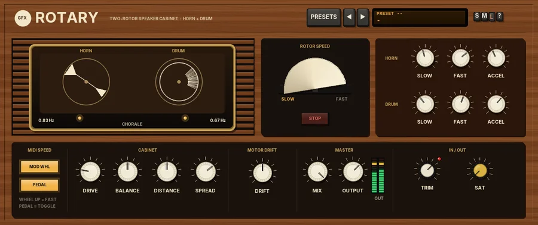
Overview
Rotary is a rotary speaker cabinet in the spirit of the classic organ cabinets. The signal first goes through a valve amp (DRIVE), for the growl when you dig in. A crossover at 800 Hz then splits it between a treble HORN and a bass DRUM, which spin separately, each with its own speeds and its own weight: the horn gets up to speed in well under a second, while the heavy drum takes seconds. That difference is what makes the speed change sound so alive.
As each rotor spins you hear the pitch move (Doppler), the level swell, and - for the horn - the tone brighten and darken as it points towards and away from the mics, plus its reflection off the cabinet. Two mics pick it up: DISTANCE trades swirl for cabinet sound, and SPREAD goes from mono to wide stereo. The speed can be switched from the panel, from automation, or from MIDI on the track (mod wheel or sustain pedal), just like the half-moon switch and foot switch of a real organ.
The cabinet takes a mono signal: the two inputs are added together before the amp.
Reach for it for
- Organ, of course - drawbar and combo organs come alive
- Electric piano and clav for a swirling, vintage sound
- Guitar through a rotary cabinet
- Vocals or pads for a woozy, psychedelic effect
- Speed-change swells (CHORALE to TREMOLO) as a performance effect
Controls
The window
A view from above onto the HORN and DRUM as they spin, with each rotor's current speed in Hz. The two amber dots show where the mics sit (set by SPREAD). The line underneath says what the cabinet is doing: CHORALE (slow), TREMOLO (fast), SPEEDING UP, SLOWING DOWN, or BRAKE when stopped.
ROTOR SPEED
- SLOW / FAST (half-moon switch)
- Click the left half for SLOW (chorale) or the right half for FAST (tremolo). The rotors speed up or slow down to the new setting at their own pace.
- STOP
- The brake: both rotors coast to a stop. Click it again to start them at the last speed you used.
The rotors
- HORN SLOW
- The horn's slow speed, 0.3 to 1.5 Hz (0.83 Hz by default).
- HORN FAST
- The horn's fast speed, 4 to 8 Hz (6.75 Hz by default).
- HORN ACCEL
- How long the horn takes to change speed, 0.2 to 3 s (0.6 s by default). Slowing down takes a little longer than speeding up.
- DRUM SLOW
- The drum's slow speed, 0.2 to 1.5 Hz (0.67 Hz by default).
- DRUM FAST
- The drum's fast speed, 3.5 to 7.5 Hz (5.8 Hz by default).
- DRUM ACCEL
- How long the heavy drum takes to change speed, 1 to 10 s (4.5 s by default).
MIDI SPEED
Rotary switches speed from MIDI on its own track, and passes all MIDI on. If the instrument in front of it doesn't pass MIDI through, set that instrument's MIDI output to 'merge with input'. MIDI does nothing while STOP is on.
- MOD WHL
- On by default. Mod wheel up (past halfway) = FAST, down = SLOW.
- PEDAL
- On by default. Each press of the sustain pedal toggles between SLOW and FAST.
CABINET
- DRIVE
- The valve amp in front of the cabinet, 0 to 100% (20% by default). Adds warmth, then growl and grit as you turn it up, with a slightly darker tone. The level stays roughly steady.
- BALANCE
- Horn against drum, -6 to +6 dB. Positive gives more horn (brighter, more swirl on top); negative gives more drum.
- DISTANCE
- How far the mics are from the cabinet, 0 to 100% (50% by default). Close mics hear more of the swell and swirl; far mics hear more of the cabinet and the horn's reflection.
- SPREAD
- The angle between the two mics, 0 to 100% (70% by default). 0 is mono; higher settings give a wider stereo image, up to the mics on opposite sides.
Drift
MOTOR DRIFT: the motors wander slightly in speed, like a well-used cabinet.
- DRIFT
- How much drift, 0 to 100%. 50% (the default) is the standard amount, 100% is twice that, 0 switches it off. More drift also makes the wander a little faster.
MASTER
- MIX
- Dry / cabinet balance. 100% (the default) is the cabinet only; lower settings blend the dry signal back in.
- OUTPUT
- Output level, -24 to +12 dB.
- OUT meters
- Output level, left and right.
IN / OUT
- TRIM
- Input level before anything else, from -24 to +12 dB.
- GUARD
- Click the TRIM knob (without moving it) to switch the guard; its light sits at the knob's upper right and is lit while it is on. On by default. Gently eases very hot sources down towards about -18 dBFS average and catches fast peaks above -6 dBFS, so loud sources never overdrive the plugin. It never boosts quiet sources. The light glows brighter while it is catching peaks.
- SAT
- Band saturation on the way out: only the lows and highs are saturated (the mids stay clean), with a soft curve that loosens as the level rises.
- OFF / CLIP / LIMIT (OUT)
- The final stage: nothing, a soft clipper (no latency), or a lookahead limiter that holds the peaks at -0.3 dBFS (3 ms latency, compensated by REAPER). CLIP is on by default; its key flashes red while it is clipping.
The header
- PRESETS
- Opens the list of factory presets (a click on the display does the same). Choosing one sets the rotor speeds and the cabinet; the rotor speed switch, MIDI keys, drift, master and the IN / OUT section are left as they are. The last entry resets everything to the defaults.
- ◄ / ►
- Step to the previous or next preset.
- S / M / L
- Panel size: small, medium or large. The panel also scales to fit the plugin window.
- ?
- Next to the S / M / L size keys. Opens a pop-up with the design credit, the GFX website address and the address of this manual. Click anywhere to close it.
Presets
- Classic Cabinet
- The standard speeds and acceleration, 20% drive, mics at medium distance and spread.
- Soul Jazz Trio
- Slightly faster fast speeds and quicker acceleration, 40% drive, a touch more horn, closer mics.
- Modern Jazz Combo
- Slower speeds, gentle 10% drive, mics further back and wider.
- Gospel Scream
- Fast speeds and quick acceleration, 75% drive, more horn and close mics.
- Memphis Groove
- Standard speeds, 30% drive, a little more drum, narrower mics.
- Slow Burn
- Slow rotors that take their time to change speed (1.4 s horn, 7.5 s drum).
- Guitar Through A Rotary
- A faster slow speed, 35% drive and +4 dB of horn, for guitar.
- Close Mics
- The classic cabinet with the mics right up close and wide: maximum swirl.
- Room Mics
- The classic cabinet heard from across the room, with narrower mics.
- Reset all to defaults
- Every control back to its starting value.
Tips
- The magic is in the speed change: switch between SLOW and FAST in the music, and let the drum lag behind the horn.
- Map the mod wheel or sustain pedal (MOD WHL / PEDAL) so you can switch speed while you play, as on a real organ.
- For grit on organ, push DRIVE to 50% or more and play harder chords.
- If the swirl is too much in a mix, raise DISTANCE or lower SPREAD rather than turning MIX down.
File: gfx-rotary.jsfx
Space
An algorithmic stereo reverb with room, chamber, hall, plate and spring.
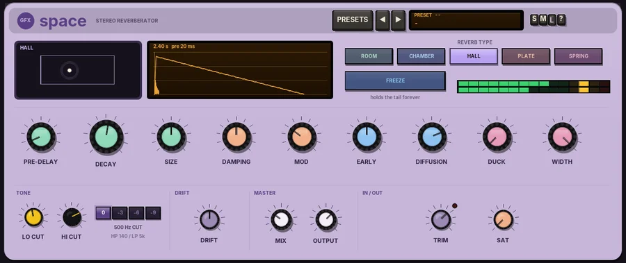
Overview
Space is a stereo reverb in the spirit of the 90s desktop reverb units. ROOM, CHAMBER and HALL use early reflections followed by a dense eight-line tail, each sized for its space. PLATE has no early reflections: it is dense from the start, and bright. SPRING is a separate spring-tank model with two springs, one for each side, complete with the 'boing' chirp.
Around the reverb you get the usual shaping - pre-delay, decay, size, damping and modulation - plus tone filters on the reverb only, a vintage 500 Hz cut, ducking so the reverb steps back while you play, and FREEZE to hold the tail for ever.
Reach for it for
- Rooms and chambers for vocals, drums and acoustic instruments
- Halls and long ambient washes for pads and keys
- Bright plates on snares and vocals
- Surf and dub spring sounds on guitars and percussion
- Ducked reverb that stays out of the way of the dry part
- Frozen pads and drones (FREEZE)
Controls
Reverb type and display
- ROOM / CHAMBER / HALL
- Early reflections plus the reverb tail, from the smallest space to the largest.
- PLATE
- No early reflections; dense from the start and bright, with the modulation halved.
- SPRING
- A two-spring tank, left and right, with the characteristic chirp. EARLY and DIFFUSION do nothing here.
- FREEZE
- Holds the tail for ever: no new sound goes in and the reverb stops decaying. Switch it off to let the tail fade.
- Window
- A picture of what is ringing - the room, the plate or the springs - with the type's name.
- Decay display
- The pre-delay gap, the early reflections and the tail fading to -60 dB, with the DECAY time and pre-delay printed above (and FROZEN while FREEZE is on).
- Meters
- Output level, left and right, with a floating peak. Click a meter to clear the peak.
Reverb
- PRE-DELAY
- The gap before the reverb starts, 0 - 250 ms. Separates the reverb from the dry sound.
- DECAY
- How long the tail takes to fade by 60 dB, 0.2 - 20 s.
- SIZE
- The size of the space, 50 - 150%. For SPRING it sets the length of the springs.
- DAMPING
- How much sooner the highs die away than the lows, 0 - 100%. Higher is darker. For SPRING it darkens the tank.
- MOD
- Slow chorusing of the tail, 0 - 100%, so it shimmers rather than rings. Not used by SPRING.
- EARLY
- The level of the early reflections, 0 - 100% (ROOM, CHAMBER and HALL only; it reads n/a for PLATE and SPRING).
- DIFFUSION
- How smeared the onset is, 0 - 100%. Low settings let you hear separate echoes at the start; high settings blur them into a smooth wash. Not used by SPRING.
- DUCK
- Dips the reverb while you play and lets it bloom in the gaps, 0 - 100%.
- WIDTH
- The stereo width of the reverb, 0 - 100%.
Each knob shows its value while you hover over it or turn it; PRE-DELAY and DECAY are also shown all the time on the display.
Tone
These shape the reverb only - the dry sound is untouched.
- LO CUT
- Removes low end from the reverb, 20 - 1000 Hz. Keeps the tail from muddying the bass.
- HI CUT
- Removes top end from the reverb, 1 - 20 kHz.
- 0 / -3 / -6 / -9
- The vintage reverb-send EQ: a cut of 3, 6 or 9 dB at 500 Hz, together with a high-pass at 140 Hz and a low-pass at 5 kHz. 0 switches it off.
Drift
- DRIFT
- Makes the tail's modulation wander slowly and randomly, 0 - 100% (not used by SPRING). 50% is the standard amount, 100% twice that, 0 none; the wander also gets a little faster as you turn it up.
Master
- MIX
- Dry / reverb balance, 0 - 100% (30% by default). Up to 50% the dry sound stays at full level and the reverb comes in; above 50% the reverb stays at full level and the dry sound fades out. Use 100% on an FX send.
- OUTPUT
- Output level, -24 to +12 dB.
IN / OUT
- TRIM
- Input level before anything else, from -24 to +12 dB. A single click on the knob (without dragging) switches GUARD on or off; its LED at the knob's upper right is dark when GUARD is off, red when it is on, and glows brighter while it is catching peaks.
- GUARD
- Off by default in this plugin. Gently eases very hot sources down towards about -18 dBFS average and catches fast peaks above -6 dBFS, so loud sources never overdrive the plugin. It never boosts quiet sources.
- SAT
- Band saturation on the way out, 0 - 100%: only the lows and highs are saturated (the mids stay clean), with a soft curve that loosens as the level rises.
- OFF / CLIP / LIMIT
- The final stage: nothing, a soft clipper (no latency), or a lookahead limiter that holds the peaks at -0.3 dBFS (3 ms latency, compensated by REAPER). The CLIP key flashes red while the clipper is working.
The header
- PRESETS, arrows and display
- PRESETS (or a click on the display) opens the list of factory presets; the ◄ / ► keys step through them. A preset sets the type and the reverb, tone (LO CUT, HI CUT) and DUCK controls and MIX, and switches FREEZE off; WIDTH, the vintage EQ, DRIFT, OUTPUT and the IN / OUT strip are left as they are. The last entry in the list resets everything to the defaults.
- S / M / L
- Panel size: small, medium or large. The panel also scales to fit the plugin window.
- ?
- Opens a pop-up with the design credit, the GFX website address and the address of this manual. Click anywhere to close it.
Presets
- Small Room
- ROOM, 0.6 s decay, short pre-delay, plenty of early reflections.
- Live Room
- A bigger ROOM, 1.1 s, a little darker at the top.
- Vocal Chamber
- CHAMBER, 1.6 s with 15 ms pre-delay.
- Concert Hall
- HALL, 2.4 s with 25 ms pre-delay.
- Cathedral (ducked)
- A large HALL, 5.5 s with 40 ms pre-delay and DUCK at 30%, so it swells in the gaps.
- Bright Plate
- PLATE, 2 s, light damping and a 12 kHz HI CUT.
- Snare Plate
- A smaller PLATE, 1.2 s with no pre-delay.
- Surf Spring
- SPRING, 2 s, LO CUT 300 Hz, HI CUT 6 kHz.
- Dub Spring
- Longer, darker SPRING, 3 s with a 5 kHz HI CUT.
- Ambient Wash
- HALL at full size, 14 s decay, 60 ms pre-delay and heavy modulation, 40% mix.
- Reset all to defaults
- Every control back to its starting value.
Tips
- On an FX send, set MIX to 100% so only the reverb comes back.
- Raise LO CUT to 200 - 400 Hz on vocal and guitar reverbs to keep the low end clear.
- Try the -3 or -6 vintage EQ for the classic studio trick of a reverb that sits behind the mix without clouding it.
- DUCK lets you use a longer, bigger reverb on a busy part: it stays back while the part plays and blooms in the gaps.
- Turn FREEZE on at the end of a chord to hold it as a pad, then automate it off to let it fade.
File: gfx-space.jsfx
Squashball
An analogue delay stompbox with warm, darkening repeats, self-oscillation and a STRETCH key that bends the whole echo in pitch.
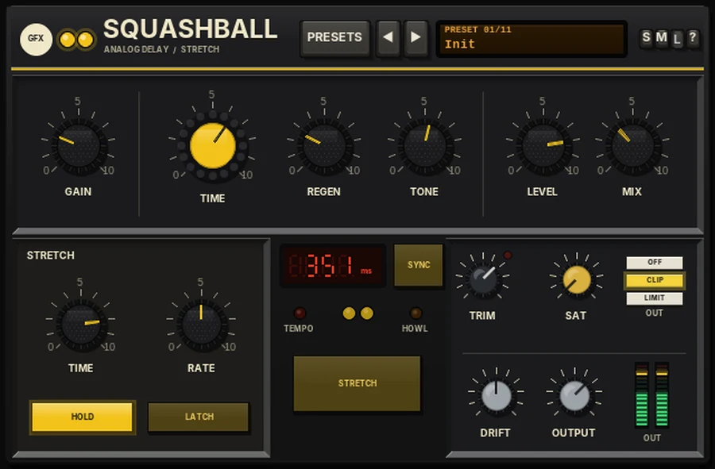
Overview
Squashball is a delay pedal in the spirit of the classic bucket-brigade analogue delays. GAIN drives the signal into the delay line through a warm, slightly lopsided overdrive; the dry signal stays clean. The tone filter sits inside the feedback loop, so every repeat comes back a little darker than the last, and long delay times darken a touch more, as a slower clock does on the real thing.
REGEN goes past 100%. There the loop starts to howl into steady self-oscillation, but a soft limiter inside it holds the level, so it never runs away. Turning TIME glides the delay rather than jumping, so the repeats bend in pitch as you move it.
The STRETCH key sweeps the delay time towards a second time, STRETCH TIME, at a speed set by RATE, then glides back when you let go. Everything in the delay line bends in pitch as it goes: a fast setting sounds like a tape being yanked, a slow one like a lazy dive. HOLD makes the key work while you hold it down; LATCH makes it click on and off.
Reach for it for
- Warm, dark analogue repeats behind a guitar or synth lead
- Rockabilly slapback and short doubling
- Dub throws and runaway, howling feedback
- Pitch-bending tape-yank and dive effects on the echoes
- Lo-fi, crunchy repeats with GAIN turned up
- Warbly chorus-like doubling at very short times
Controls
The header
- PRESETS, ◄ ► and the display
- PRESETS (or a click on the display) opens the list of factory presets; ◄ and ► step through them, and the display shows the one in use. A new instance opens on Init.
- S / M / L
- Panel size: small, medium or large. The panel also scales to fit the plugin window. A new instance opens in Large.
- ?
- Opens a pop-up with the design credit, the GFX website address and the address of this manual. Click anywhere to close it.
The main row
- GAIN
- Drive into the delay line, 0 to 100% (25% by default), up to about 24 dB of drive. A warm, slightly lopsided overdrive that adds even harmonics; the lows are trimmed before it so it never flubs, and the top is softened so it never fizzes. Only the repeats are driven - the dry signal stays clean.
- TIME (yellow cap)
- The delay time, 30 - 1500 ms (350 ms by default). With SYNC on it becomes a note value from 4 bars down to 1/32, including dotted (D) and triplet (T) values (1/4 by default). Turning it glides the delay, so the repeats bend in pitch rather than clicking. All times are limited to 4 seconds.
- REGEN
- Feedback, 0 to 130% (35% by default): how many repeats you hear. Past 100% the loop oscillates on its own and keeps going after the input stops; the limiter in the loop holds it at a steady level.
- TONE
- The high-frequency roll-off inside the loop, about 700 Hz - 9 kHz (0 to 100%; 55%, about 2.9 kHz, by default). The knob shows the frequency. Because it is inside the loop, each repeat passes through it again and gets darker.
- LEVEL
- The volume of the repeats, -24 to +6 dB (0 dB by default).
- MIX
- Dry / wet balance, 0 to 100% (35% by default). At 50% both are at full level; below that the repeats fade down, above it the dry signal does.
STRETCH
The settings for the STRETCH key.
- TIME
- The delay time the stretch sweeps towards, 30 - 2000 ms (900 ms by default). Longer than the main TIME bends the pitch down as it goes; shorter bends it up. The sweep follows an S-shaped curve, so the bend eases in and out.
- RATE
- How fast the stretch sweeps, 0 to 100% (50% by default): from a slow 4-second dive at 0% to a 30 ms yank at 100%. The same speed is used on the way back.
- HOLD / LATCH
- How the STRETCH key works. HOLD (default): the stretch lasts while you hold the key down and glides back when you let go. LATCH: click the key once to stretch and again to glide back.
The centre
- Time readout
- The actual delay time in ms, including any stretch and drift, so you can watch it glide.
- SYNC
- Switches TIME between milliseconds (off, by default) and a note value at the project tempo (on).
- TEMPO
- A red light that blinks once for every repeat.
- Yellow double dot
- Lights while the stretch is on or still gliding back.
- HOWL
- Lights when REGEN is above 100% and the loop is sounding: a warning that it is self-oscillating.
- STRETCH
- The big lit key. Hold it (HOLD) or click it on and off (LATCH) to sweep the delay to STRETCH TIME; it lights while the stretch is on. It is also a parameter (Stretch), so you can automate it in REAPER.
IN / OUT
- TRIM
- Input level before anything else, -24 to +12 dB.
- GUARD
- Click the TRIM knob (without turning it) to switch GUARD on or off; the small light at the knob's upper right shows it is on and glows brighter while it works. Off by default. Gently eases very hot sources down towards about -18 dBFS average and catches fast peaks above -6 dBFS. It never boosts quiet sources.
- SAT
- Band saturation on the way out, 0 to 100% (0% by default): only the lows and highs are saturated, the mids stay clean.
- OFF / CLIP / LIMIT
- The final stage: nothing, a soft clipper at -0.3 dBFS (no latency), or a lookahead limiter (3 ms latency, compensated by REAPER). CLIP is on by default and flashes red while it clips.
- DRIFT
- 0 to 100% (50% by default). See Drift below.
- OUTPUT
- Output level, -24 to +12 dB.
- OUT meter
- Left and right output levels.
In REAPER's parameter list only
- Bias / Sat low band / Sat high band / Ceiling
- The rest of the output stage: the saturation's even-harmonic bias (30% by default), where its low and high bands start (40 - 400 Hz and 2 - 16 kHz) and the clip ceiling or limiter threshold (-0.3 dB by default).
Drift
DRIFT makes the delay clock breathe: a slow, small wander of the delay time - a subtle wow, a little different on the left and right, which widens the repeats - and a gentle wander in the repeats' tone. 50% is the standard amount, 100% twice that, and the wander speeds up a little as you turn it up. At 0% the delay is steady.
Knobs: drag up or down (Shift for fine moves); double-click to reset a knob to its default. The mouse wheel works too.
Presets
Presets set the main row, SYNC, the STRETCH settings and DRIFT, and switch the stretch off. OUTPUT and the IN / OUT strip are left as they are.
- Init
- The default settings: 350 ms, a few dark repeats, 35% mix.
- Slapback
- A single bright 95 ms slap with a touch of drive.
- Dark Repeats
- 420 ms with long feedback and a very dark tone: each repeat sinks into the background.
- Rubbery Lead
- Synced to 1/8 D with more drive; the stretch bends towards 520 ms at a fairly slow rate for a rubbery pitch wobble.
- Ambient Swell
- 720 ms, long feedback, the level down 1 dB and more drift; the stretch is on LATCH with a very slow dive to 1100 ms.
- Self-Oscillation
- REGEN at 112%: the loop howls on its own. LEVEL is down 3 dB to keep it in check.
- Tape Yank
- 450 ms with a very fast stretch down to 60 ms: press STRETCH for a sudden tape-pull squeal.
- Dub Throw
- Synced to 1/4 D with long, dark feedback; the stretch makes a medium dive to 1200 ms.
- Warble Double
- A 42 ms double with full drift for a warbly, chorus-like thickening; the stretch is on LATCH.
- Lo-Fi Crunch
- 180 ms with GAIN at 85% and a very dark tone: gritty, broken-sounding repeats.
- Siren Howl
- REGEN at 118% with a brighter tone; the stretch is on LATCH with a slow sweep down to 40 ms, so the howl rises like a siren.
Tips
- Try the stretch while the repeats are still sounding: it bends what is already in the line, so the trick is in the timing.
- A STRETCH TIME longer than TIME drops the pitch; shorter raises it. Set RATE low for a slow dive, high for a sudden yank.
- Use LATCH when you want to automate the stretch or play it hands-free; HOLD is quicker for one-off throws.
- For self-oscillation, set REGEN just past 100%, then ride TONE and TIME by hand. Keep LEVEL down and the output stage on CLIP or LIMIT.
- Because TONE is inside the loop, small moves make a big difference to long tails. Lower it for repeats that sit behind the part.
- Put it on a send at 100% MIX if you want to EQ or compress the repeats separately.
File: gfx-squashball.jsfx
Aureus
A four-band EQ, drive and compressor tuned by the golden ratio.

Overview
Aureus is a multiband processor. It splits the signal into four bands - SUB, LOW-MID, HIGH-MID and PRESENCE or AIR - and gives each one an EQ, a drive stage and a compressor, then a band gain with SOLO and MUTE. The bands add back together flat and in phase, and MIX blends in a dry signal that is phase-aligned with them.
The crossovers are decadic: the second split is ten times the first, and the third is a hundred times the first, held between 5 and 10 kHz so the top band is always presence or air. The first split is picked from the Fibonacci numbers 34, 55, 89 and 144 Hz, or the classic 70 Hz.
Each section has just one knob and a type key. Everything the knobs don't set - EQ frequencies and shapes, attack and release times, ratios and knees - is worked out from the golden ratio (1.618), so the four bands relate to each other in a consistent, musical way. The compressor attack gets faster from band to band (30, 18.5, 11.5 and 7.1 ms, with the release about eleven times longer), before each compressor type adjusts the timing.
Reach for it for
- Mix-bus and mastering glue across four bands
- Adding tape, transistor or transformer colour to just the lows or the top
- Lifting air or presence with a single knob
- Taming harsh or boomy bands only when they get loud (DYNAMIC EQ)
- Parallel multiband processing with MIX
Controls
Left: display, presets and setup
- Display
- Shows the current preset, or the control you are touching and its value. Click it for the preset list.
- PRESETS
- Opens the list of factory presets; the ◄ / ► keys beside it step through them.
- SIZE: S / M / L
- Panel size: small, medium or large. The panel also shrinks to fit a smaller plugin window.
- ?
- Opens a pop-up with the design credit, the GFX website address and the address of this manual. Click anywhere to close it.
- INPUT
- Input level before anything else, -24 to +24 dB. It also sets how hard the signal hits the drive and compressor stages.
- CROSSOVER F1 x10 x100
- Picks the first crossover: 34, 55, 70 (the default), 89 or 144 Hz. The second sits at ten times that, the third at a hundred times, held between 5 and 10 kHz (5, 5.5, 7, 8.9 and 10 kHz). The display shows all three when you choose. The top band is called PRESENCE with the two lowest settings and AIR with the others.
- HW
- Switches the hardware finish (shading, bevels and coloured knob caps) on or off.
- GOLD / TEAL
- Switches the faceplate between yellow and petrol teal.
The four bands
Each band header shows its frequency range and an activity light: green when the band is passing signal, red when it gets near clipping. Each row has a type key - click it to step through the three types - and an amount knob.
- EQ type: PROGRAM
- Broad, gentle curves. SUB is a low shelf below the first crossover and the top band a high shelf above the third; the two middle bands are broad bells at their centres. Boosting a shelf also adds a small dip right at the band edge, in the spirit of the classic passive program equalisers, so the boost stays clean.
- EQ type: CONSOLE
- Firmer, console-style shapes: resonant shelves, and bells that get narrower as you boost or cut further.
- EQ type: DYNAMIC
- The CONSOLE shape, but its gain follows the band's level: nothing below about -30 dB, rising to the full knob setting as the band gets louder. Use a cut to tame a band only when it gets loud.
- EQ knob
- The EQ gain, -12 to +12 dB.
- DRIVE type: TRANSISTOR
- A firm, mostly odd-harmonic clip with a harder edge.
- DRIVE type: TAPE
- Soft, slightly lopsided saturation with a touch of hysteresis; the top end rolls off a little more as the drive goes up. The default.
- DRIVE type: TRANSFORMER
- The lows of the band saturate hardest, like an iron-core transformer, with a cleaner top.
- DRIVE knob
- How hard the band is driven, 0 to 100%. The output is partly level-compensated. 0 is clean.
- COMP type: OPTO
- Smooth and slower, measuring the average level; the release slows as the gain reduction deepens. Up to about 2.6:1 with a wide, soft knee. The default.
- COMP type: VCA
- Fast and firmer, with a feedback detector and a tighter knee; up to about 4.2:1.
- COMP type: GENTLE
- Three gentle compressors in series at thresholds 6 dB apart, each carrying a third of the ratio (up to about 4.2:1 in total), with a release that adapts to the music. In the spirit of the COMP mode of RND.
- COMP knob
- How much compression, 0 to 100%. One knob does it all: turning it up lowers the threshold (from -6 down to -36 dB) and raises the ratio together, and adds some make-up gain automatically. 0 is off.
- GR
- The band's gain reduction, 0 to 20 dB, top to bottom.
- GAIN
- The band's output level, -12 to +12 dB.
- SOLO
- Solo in place; several bands can be soloed at once.
- MUTE
- Silences the band.
OUTPUT
- VU meters
- Left and right output level, with 0 VU at -18 dBFS.
MASTER
- DRIFT
- Golden-ratio breathing, 0 to 100% (25% by default): each band's compressor threshold wanders slowly up and down, by up to 3 dB at 100%, each on its own period (3 seconds times 1.618 to the power of the band), so the bands never move together. Only heard where the compressor is working.
- MIX
- Dry / processed balance, 0 to 100% (100% by default). The dry signal is phase-aligned with the bands, so partial settings blend cleanly.
- OUTPUT
- Output level, -24 to +12 dB.
- LIMIT
- A safety limiter holds the output peaks at about -0.3 dBFS. The light shows when it is working.
Drag the knobs up and down (hold Shift for fine moves); double-click or Ctrl-click to reset one.
Presets
- Init
- Everything flat and clean: no EQ, drive or compression.
- Golden Glue
- Light tape drive and GENTLE compression at 30% on every band.
- Tape Polish
- Tape drive on all bands with gentle opto compression and +1.5 dB on the SUB and top shelves.
- Opto Smooth
- Opto compression at 40% on every band, no EQ or drive.
- Air Lift
- +4 dB on the top shelf with a little drive and GENTLE compression, and +1 dB on HIGH-MID (CONSOLE).
- Iron Low End
- Transformer drive on SUB (45%) with +2.5 dB and opto compression; LOW-MID trimmed 1.5 dB (CONSOLE) with transformer drive.
- VCA Punch
- VCA compression on the lower three bands, with transistor drive on LOW-MID.
- Dynamic Tame
- DYNAMIC EQ cuts on LOW-MID, HIGH-MID and the top band, with light opto compression.
Tips
- The presets set the bands, DRIFT, MIX, INPUT and OUTPUT, and clear SOLO and MUTE; the crossover setting is kept.
- Use INPUT to set how hard the drive and compressors work, then OUTPUT to bring the level back.
- Try the crossover choices on a full mix: 55 or 70 Hz keeps kick and bass together in LOW-MID, 89 or 144 Hz puts more of the bass weight in SUB.
- For a harsh top end, set the top band to DYNAMIC and cut a few dB: it only works on the loud, bright moments.
File: gfx-aureus.jsfx
Benthick 3B
A solid-state iron and transistor bus processor, laid out in signal order.
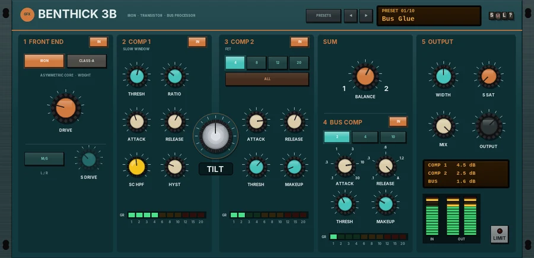
Overview
Benthick 3B is a bus processor for tight low-end weight, fast transient control and dense glue, without woolly valve artefacts. Its stages run left to right across the panel in signal order: FRONT END, COMP 1, the TILT knob, COMP 2, the SUM, BUS COMP and OUTPUT.
The front end is either IRON, an asymmetric transformer core that works hardest on the lows, or CLASS-A, a symmetric transistor clip with a dense edge in the upper mids. Two compressors then share the work: COMP 1 is a slow window that lets the early transients through, COMP 2 a fast FET-style grabber. BALANCE blends the two paths, and a console-style VCA BUS COMP pulls them together.
Every stage has its own IN key. There is no drift: Benthick 3B is clean and repeatable.
Reach for it for
- Drum bus weight, smash and parallel crush
- Mix bus glue and polish
- Low-end weight on bass DI and kick (IRON)
- Bringing vocals forward with CLASS-A edge
- Widening a master with M/S drive and side saturation
Controls
1 FRONT END
- IN
- Switches the front end in or out.
- IRON / CLASS-A
- IRON (default): an asymmetric transformer core that works hardest on the lows below about 160 Hz, for even harmonics and weight, with a little magnetic hysteresis. CLASS-A: a symmetric transistor clip with odd harmonics and a dense edge in the upper mids. Switching between them crossfades, so it never clicks.
- DRIVE
- How hard the front end is pushed, 0 to 18 dB (4 dB by default). Small signals pass at unity, so DRIVE adds colour rather than level.
- M/S
- Off (L / R): both sides are driven equally. On (SIDES DRIVEN): the front end works in mid / side, and the sides are driven harder for a natural width.
- S DRIVE
- How much harder the sides are driven when M/S is on, 0 to 12 dB (4 dB by default).
2 COMP 1 (SLOW WINDOW)
- IN
- Switches COMP 1 in or out.
- THRESH
- -40 to 0 dB (-18 dB by default).
- RATIO
- 1:1 to 10:1 (2:1 by default).
- ATTACK
- 10 to 80 ms (40 ms by default). The slow attack lets the early transients through untouched.
- RELEASE
- 50 ms to 1 s (300 ms by default).
- HYST
- Hysteresis, 0 to 12 dB (3 dB by default). Once the level goes over THRESH, the release holds back until it falls HYST dB below it, so the compressor never chatters round the threshold.
- SC HPF
- A high-pass filter on what all three compressors listen to, 30 to 300 Hz (90 Hz by default). It keeps the lows from making the compressors pump; the audio itself isn't filtered.
- GR
- COMP 1's gain reduction, 1 to 20 dB.
TILT
- TILT
- The big knob between COMP 1 and COMP 2: a seesaw around 700 Hz, -6 to +6 dB. Turning it right lifts the top and lowers the bottom; left does the opposite. It comes after COMP 1, so it shapes both what COMP 2 hears and what you hear. The plate under it shows the value while you turn it.
3 COMP 2 (FET)
- IN
- Switches COMP 2 in or out. With COMP 2 out, the SUM section is out too.
- 4 / 8 / 12 / 20
- The ratio (4:1 by default). Higher ratios have a harder knee.
- ALL
- Every ratio key in: 20:1 with no knee, faster attack and release and more grit from the gain cell - hard and aggressive. Click again to go back to 4:1.
- THRESH
- -40 to 0 dB (-14 dB by default).
- ATTACK
- 20 to 800 microseconds (400 by default) - fast enough to grab the transients.
- RELEASE
- 50 ms to 1.1 s (300 ms by default).
- MAKEUP
- COMP 2's level, 0 to 24 dB (2 dB by default).
- GR
- COMP 2's gain reduction, 1 to 20 dB.
SUM
- BALANCE
- Blends the two paths: towards 1, the COMP 1 path with its untouched transients (after TILT); towards 2, the clamped COMP 2 signal. The value reads as the two shares, 40 / 60 by default. It is the same signal through two paths, so they sum without phase problems.
4 BUS COMP
Console-style VCA glue that pulls COMP 1 and COMP 2 together. Its detector shares the SC HPF.
- IN
- Switches the bus compressor in or out.
- 2 / 4 / 10
- The ratio (2:1 by default).
- ATTACK
- Stepped: 0.1, 0.3, 1, 3, 10 or 30 ms (10 ms by default).
- RELEASE
- Stepped: 0.1, 0.3, 0.6 or 1.2 s, or A (AUTO, the default). AUTO releases quickly after a transient and slowly once it has been working for a while.
- THRESH
- -30 to 0 dB (-18 dB by default).
- MAKEUP
- 0 to 18 dB (5 dB by default).
- GR
- The bus compressor's gain reduction, 1 to 20 dB.
5 OUTPUT
- WIDTH
- Mid / side width, 0 to 200% (100% by default).
- S SAT
- Drives the sides into a second transistor saturation stage, 0 to 100%. Adds density and width to the edges of the image.
- MIX
- Wet / dry: 100% is fully processed; lower blends the unprocessed input back in, for parallel processing.
- OUTPUT
- Output level, -24 to +12 dB.
- GR display
- Shows the gain reduction of COMP 1, COMP 2 and BUS in dB.
- IN / OUT meters
- Input level and output level (left and right). Click any meter to clear the peaks.
- LIMIT
- The final stage. Off (default): a soft clip that protects the output at -0.3 dBFS. On (red LED): a lookahead brickwall limiter that holds the peaks at -0.3 dBFS (3 ms latency, compensated by REAPER).
Benthick 3B has no IN / OUT strip: the input trim, the input guard (on), the band saturation (off) and the output ceiling stay at their defaults.
The header
- PRESETS
- Opens the list of factory presets; click the display for the list too. The display shows PRESET nn/10 and the name, or Custom. Choosing a preset sets every stage (and puts all the IN keys in); OUTPUT and LIMIT are left as they are. The last entry resets everything to the defaults.
- ◄ / ►
- Step to the previous or next preset.
- S / M / L
- Panel size: small, medium or large.
- ?
- Opens a pop-up with the design credit, the GFX website address and the address of this manual. Click anywhere to close it.
Presets
- Bus Glue
- The default settings: IRON at 4 dB, gentle COMP 1, COMP 2 at 4:1, 2:1 bus glue with AUTO release.
- Iron Low End
- IRON driven to 8 dB, a little darker TILT, slower compressors, bus makeup 7 dB.
- Drum Smash
- CLASS-A, TILT +2 dB, COMP 2 on ALL with a 20 microsecond attack, 4:1 bus comp, a little width and S SAT.
- Vocal Forward
- Light CLASS-A, SC HPF 150 Hz, TILT +1.5 dB, COMP 2 at 8:1 weighted to 70%.
- Wide Master
- M/S with 6 dB side drive, gentle compression, 130% width and 25% S SAT.
- Parallel Crush
- CLASS-A driven to 10 dB, COMP 2 on ALL crushing hard, 10:1 bus comp, blended at 60% MIX.
- Mix Bus Polish
- Light IRON with M/S, very gentle compression, 115% width and a touch of S SAT.
- Bass DI Weight
- IRON driven to 10 dB, SC HPF 60 Hz, TILT -2 dB, COMP 2 at 8:1.
- Room Mic Grit
- CLASS-A at 12 dB with M/S, TILT +3 dB, COMP 2 on ALL, 140% width and 40% S SAT at 70% MIX.
- Gentle Master
- Barely any drive, 1.3:1 COMP 1, light bus glue, 105% width.
- Reset all to defaults
- Every control back to its starting value, including OUTPUT and the hidden input and output settings.
Tips
- Use BALANCE as the main 'how much' control: towards 1 keeps the punch, towards 2 adds density.
- If the low end makes the compressors pump, raise SC HPF; the bass itself is not filtered.
- Switch stages out with their IN keys to hear what each one adds - the controls of a stage that is out are greyed.
- Keep an eye on the GR display: a few dB on each compressor is usually enough for glue.
File: gfx-benthick-3b.jsfx
Master EQ
A mastering equaliser with stepped controls and three dynamic bands.

Overview
Master EQ is built for the last stage of a mix. It has low and high cut filters, a low shelf, three bell bands, a high shelf and an AIR band. The controls move in steps, as on classic mastering equalisers, so settings are easy to note down and recall.
The three bells, DYN 1 - 3, are dynamic. Besides a fixed GAIN, each has a COMP knob: turned left it pulls the band down when that part of the music gets loud (taming harshness or boom only when it happens); turned right it lifts the band as it gets busy. In the middle the band is a plain static bell.
Every band can work on the stereo pair, on the mid (the centre of the image) or on the side (the edges), so you can, for example, tighten the lows in the sides only or add air to the edges.
Reach for it for
- Final tonal balance on a mix or master
- Taming harshness or sibilance only when it flares up (DYN with COMP)
- Controlling a boomy low end that comes and goes
- Mid/side work: centring the lows, widening the top
- Adding gentle air above the audio band
Controls
Drag a knob up or down to turn it (hold Shift for fine moves), use the mouse wheel, or double-click to reset it. Gains move in 0.5 dB steps; FREQ knobs step through the standard series (100, 120, 150, 180, 220, 270, 330, 390, 470, 560, 680, 820 and so on), and Q steps through 0.4, 0.5, 0.7, 1, 1.4, 2, 2.8 and 4. The value shows while you touch a knob.
The header
- Colour swatch
- Opens the list of colour themes for the panel.
- S / M / L
- Panel size: small, medium or large. The panel also scales to fit the plugin window.
- ?
- Opens a pop-up with the design credit, the GFX website address and the address of this manual. Click anywhere to close it.
- EQ IN
- Switches the shelves, the bells, AIR and the dynamic action in or out (the change glides rather than jumps). The cut filters stay in. While it is out, the display reads EQ OUT.
- PRESETS
- Opens the list of factory presets (clicking the display does the same). A preset sets the EQ and dynamics sections and switches EQ IN on; TRIM, OUTPUT and the OUT stage are left as they are. The last entry, Reset (flat), sets every band flat.
- Left / right arrows
- Step to the previous or next preset.
The display
Shows the summed EQ curve from 20 Hz to 20 kHz over a range of +/-8 dB, moving with the dynamic bands as they work. The faint vertical lines mark the centres of DYN 1 - 3.
IN + FILTERS
- TRIM
- Input level before anything else, from -24 to +12 dB. Double-click to reset it.
- GUARD (click TRIM)
- A single click on the TRIM knob switches GUARD on or off; the small light beside the knob shows it (dark = off, red = on, bright = working). GUARD is on by default. It gently eases very hot sources down towards about -18 dBFS average and catches fast peaks above -6 dBFS, so loud sources never overdrive the plugin. It never boosts quiet sources.
- HPF
- A 12 dB/oct high-pass filter, stepping from 20 to 300 Hz. Fully left (20) is OFF - out of circuit.
- LPF
- A 12 dB/oct low-pass filter, stepping from 4 to 20 kHz. Fully right (20 kHz) is OFF.
- TIMING
- FAST, MED or SLOW: the attack and release of all three dynamic bands (2 / 60 ms, 10 / 150 ms, 30 / 400 ms). FAST follows transients and sibilance; SLOW rides the broader balance.
LOW
- 30 / 60 / 100 / 200
- The low shelf frequency.
- GAIN
- -6 to +6 dB in 0.5 dB steps.
- BROAD / TIGHT
- BROAD: a gentle, wide slope. TIGHT: a steeper shelf that changes less above the frequency.
- ST / M / S
- What the band works on: the stereo pair, the mid only or the side only.
DYN 1, DYN 2, DYN 3
Three identical dynamic bells. The rows are named once on the left: FREQ, GAIN, Q and DYN. The light next to each band's name shows when its dynamic part is working.
- FREQ
- The centre of the band, 20 Hz - 20 kHz (120 Hz, 1 kHz and 4 kHz by default).
- GAIN
- A fixed boost or cut, -6 to +6 dB.
- Q
- The width, 0.4 - 4. Higher is narrower.
- DYN (COMP / EXP)
- The dynamic part, from COMP 10 on the left through STATIC in the middle to EXP 10 on the right. Towards COMP the band is pulled down when it gets loud, up to 12 dB; towards EXP it is lifted as it gets busy, up to 6 dB. Turning further makes it react at lower levels and more strongly, with a soft, gradual knee. Each band listens only to its own range.
- ST / M / S
- What the band works on: the stereo pair, the mid only or the side only.
HIGH
- 2k / 4k / 8k / 12k
- The high shelf frequency.
- GAIN
- -6 to +6 dB in 0.5 dB steps.
- BROAD / TIGHT
- BROAD: a gentle, wide slope. TIGHT: a steeper shelf.
- OFF / CLIP / LIMIT
- The final stage: nothing, a soft clipper that holds the peaks at -0.3 dBFS (no latency), or a lookahead limiter that holds them at -0.3 dBFS (3 ms latency, compensated by REAPER). The CLIP key flashes red while the clipper is working.
- ST / M / S
- What the band works on: the stereo pair, the mid only or the side only.
AIR
- 10k / 20k / 40k
- Where the broad air lift is centred.
- GAIN
- 0 to +6 dB in 0.5 dB steps.
- OUTPUT
- The output level, -12 to +12 dB.
- Level lights
- Ten lights showing the output level, from -30 dBFS up to just under 0 (green, then amber, then red).
- ST / M / S
- What the band works on: the stereo pair, the mid only or the side only.
Presets
- Gentle Polish
- A touch of low weight and air, with the low mids, upper mids and harshness gently held in check by DYN 1 - 3.
- Warm & Full
- A 100 Hz lift, dynamic control of the low mids and the 5 kHz area, and a slightly softer top.
- Bright & Open
- A small low-mid cut, dynamic control at 2.5 and 6.5 kHz, and more high shelf and air.
- Low-End Control
- HPF at 30 Hz, the lows cut in the sides only, dynamic control at 110 Hz (mid) and 300 Hz, FAST timing.
- Vocal Forward
- Presence lifted and mud cut in the mid, sibilance tamed dynamically in the mid, a little air.
- De-Harsh
- Dynamic cuts at 3.2 kHz and 8 kHz only, working when the harshness flares up.
- Wide Air
- Lows cut and highs and air lifted in the sides only, keeping the lows centred.
- Loud Modern
- HPF at 30 Hz, a tight 60 Hz lift with dynamic control at 90 Hz and 3.5 kHz, a low-mid cut, a tight 12 kHz lift and air; FAST timing.
- Vintage Tape
- Round lows, a softened top and the LPF at 16 kHz.
- Acoustic / Classical
- Barely there: a hint of low and high lift, gentle low-mid control, a little 40 kHz air, SLOW timing.
- Reset (flat)
- Every band flat, filters off, dynamic bands static.
Tips
- Use DYN instead of GAIN when a problem comes and goes: a harsh vocal at 3 kHz only on the loud notes, or a bass note that booms only now and then.
- Switch a band to S to work on the edges only - cutting the lows in the sides tightens the bass without making it thinner in the centre.
- Compare with EQ IN on and off; the HPF and LPF stay in either way, so you hear only what the bands are doing.
- The stepped controls make settings easy to note down: write them down to recall a master later.
File: gfx-master-eq.jsfx
MasterSuite
A seven-stage mastering strip, from valve colour to a true-peak limiter.

Overview
MasterSuite puts a complete mastering chain on one panel, in seven stages: input and oversampling, valve saturation with a broad tone stack, mid / side stereo control, a vari-mu style compressor, a high-frequency limiter, a clipper and a true-peak brickwall limiter.
Every stage has its own ON switch, and switching any of them crossfades over 10 ms, so it never clicks. The saturation and clipper stages can run oversampled (2x or 4x) to keep them clean of aliasing. The plugin reports its latency to REAPER, and keeps it the same whatever you bypass, so switching a stage never shifts the timing.
OUTPUT feeds the limiter, so the CEILING always has the final say on the peak level.
Reach for it for
- Finishing a mix or a stem master in one plugin
- Gentle glue and warmth on a mix bus
- Loud, punchy masters with a clipper into the limiter
- Streaming-safe masters with a -1 dB true-peak ceiling
- Mono-ing the low end and adjusting stereo width
Controls
IN / OUT
- TRIM
- Input level, -12 to +12 dB.
- SAT
- Band saturation from the GFX output stage: only the lows and highs are saturated (the mids stay clean), with a soft curve that loosens as the level rises. It sits after OUTPUT, before the limiter.
- OFF / CLIP / LIMIT (OUT)
- The GFX output stage, just before the true-peak limiter: nothing (default), a soft clipper at -0.3 dBFS, or a lookahead limiter at -0.3 dBFS (3 ms extra latency). The CLIP key flashes red while it is clipping.
- OVERSAMPLING: OFF / 2X / 4X
- Runs the TUBE and CLIPPER stages at two or four times the sample rate (2X by default) for cleaner saturation with less aliasing. Higher settings add latency.
- IN meters
- Input level, left and right. Each shows a floating peak; click any meter to clear the peaks.
TUBE
Asymmetric valve saturation. Small signals pass at unity; turning DRIVE up adds saturation rather than level.
- ON
- Switches the stage in or out (in by default).
- DRIVE
- How hard the valve is driven, -12 to +12 dB (-3 dB by default).
- DRIFT
- How much the valve's bias and drive wander, 0 to 100% (50% by default). See Drift below.
- BIAS: LOW / MID / HIGH
- The valve's asymmetry. LOW is the cleanest and gentlest; HIGH adds more even (2nd) harmonics and bites harder. MID is the default.
TONE
A broad four-band EQ, -6 to +6 dB on each band, with wide, gentle curves.
- ON
- Switches the tone stage in or out (in by default).
- TAPE
- Adds a gentle tape-style roll-off at 18 kHz.
- BASS
- A low shelf at 90 Hz.
- LO-MID
- A broad bell at 350 Hz - for warmth or mud.
- HI-MID
- A broad bell at 2.8 kHz - for presence or harshness.
- PRESENCE
- A high shelf at 7 kHz - for air and brightness.
STEREO
- ON
- Switches the stereo stage in or out (in by default).
- MONO
- Makes everything below this frequency mono, from OFF (fully left) up to 200 Hz. It removes the side signal below the frequency with a steep 24 dB per octave filter, for a tight, centred low end.
- WIDTH
- The level of the side signal, 0 to 200% (100% by default). 0% is mono; above 100% widens.
VARI-MU
A stereo-linked RMS compressor with a soft knee. Like a valve vari-mu, its ratio grows a little as it works harder, and its release slows after long stretches of gain reduction.
- ON
- Switches the compressor in or out (out by default).
- THRESH
- -40 to 0 dB (-18 dB by default).
- RATIO
- 1:1 to 10:1 (2:1 by default).
- KNEE
- 0 to 12 dB (6 dB by default). Wider knees ease the compression in more gradually.
- MAKEUP
- 0 to +12 dB.
- MIX
- Parallel compression: 100% is fully compressed; lower blends the uncompressed signal back in.
- RECTIFIER: GERM / SILICON / LED
- The timing. GERM (germanium): slow and smooth (30 ms attack, 350 ms release). SILICON: medium (10 ms, 180 ms), the default. LED: fast (2 ms, 70 ms).
- GR
- The compressor's gain reduction, 0 to 20 dB, with the reading above it.
HF LIMIT
A fast peak limiter that listens only to the top above 6 kHz and turns down only that band, for harshness and sibilance. The split keeps both bands in phase, so at rest the response is flat.
- ON
- Switches it in or out (out by default).
- THRESH
- -30 to 0 dB (-12 dB by default). Lower catches more of the top.
- GR
- How far the top band is being turned down.
CLIPPER
- ON
- Switches the clipper in with the last mode chosen (out by default).
- DRIVE
- How hard the signal is pushed into the clipper at 0 dBFS, 0 to +12 dB.
- SOFT / HARD
- SOFT: a rounded clip that eases into the ceiling. HARD: a straight clamp. Either can be picked while the clipper is on or off.
LIMITER
A true-peak brickwall limiter: it finds the peaks between the samples, looks 1.5 ms ahead and shapes the gain so the output never goes over the ceiling.
- ON
- Switches the limiter in or out (in by default).
- CEILING
- The maximum output level, -1.00 to -0.10 dB (-0.30 dB by default). Use -1 dB for streaming.
- RELEASE
- How fast the limiter recovers, 10 to 500 ms (80 ms by default).
- GR
- The limiter's gain reduction.
Output
- OUTPUT
- The level into the limiter, -12 to +12 dB. Turning it up makes the master louder and the limiter work harder; the CEILING still holds the peaks.
- OUT meters
- Output level, left and right.
Drift
In MasterSuite, drift makes the TUBE stage's bias and drive wander slowly, like a real valve. The DRIFT knob sits in the TUBE section: 50% is the standard amount, 100% is twice that and 0 switches it off. The wander also speeds up a little as you turn it up.
The header
- PRESETS
- Opens the list of factory presets; the arrows step through them and the display shows the one in use (click it for the list too). Choosing one sets the seven stages and OUTPUT; DRIFT and the IN / OUT strip's SAT and OUT are left alone. The last entry resets to the defaults.
- Theme picker
- Changes the panel's colour theme.
- S / M / L
- Panel size: small, medium or large.
- ?
- Opens a pop-up with the design credit, the GFX website address and the address of this manual. Click anywhere to close it.
- HW
- Switches between the hardware-style panel and the flat look.
- LATENCY
- Shows the plugin's current latency in samples and milliseconds.
Presets
- Transparent
- No valve, gentle 1.5:1 glue, mono below 30 Hz, a -1 dB ceiling.
- Warm Glue
- Valve on, a little bass and tape roll-off, slow 2:1 compression, HF limiter and a soft clip into a -0.5 dB ceiling.
- Loud & Punchy
- 4x oversampling, 3:1 fast compression blended at 70%, slightly wider, soft clip into a -0.3 dB ceiling.
- Vintage Tape
- Valve driven harder on low bias, tape roll-off, side narrowed to 90%, slow compression, a -1 dB ceiling.
- Bright Pop
- High valve bias, mids scooped and presence lifted, 120% width, soft clip and a -0.3 dB ceiling.
- Bass Heavy
- 4x oversampling, bass up, mono below 150 Hz, fast compression, hard clip.
- Acoustic / Classical
- Almost nothing: no valve, very light 1.3:1 compression with a wide knee, slow 300 ms limiter release.
- Podcast / Voice
- Mono (width 0, mono below 200 Hz), bass cut and mids forward, 3:1 compression, HF limiter, a -1 dB ceiling.
- Parallel Punch
- Heavy 6:1 fast compression blended in at 40% under the dry mix.
- Streaming Safe (-1 dBTP)
- Controlled, gentle compression, no clipper, a -1 dB true-peak ceiling.
- Reset to defaults
- Every stage back to its starting value, including the DRIFT knob.
Tips
- Set the CEILING first, then raise OUTPUT until the limiter's GR shows only a few dB on the loudest parts.
- A little CLIPPER DRIVE in front of the limiter lets you get louder with fewer limiter artefacts; switch OVERSAMPLING to 4X when you do.
- Use HF LIMIT instead of a cut with the TONE stage when only some moments are harsh or sibilant.
- MONO at 80 - 150 Hz tightens the low end for vinyl, clubs and small speakers without narrowing the rest of the mix.
- Switch stages ON and off as you work: each one crossfades cleanly, so you can compare without clicks.
File: gfx-mastersuite.jsfx
Optimiser
A broadcast-style loudness chain: AGC, four-band compression, clipper and limiter.

Overview
Optimiser is a loudness processor in the spirit of the classic broadcast processors that made FM stations sound loud, dense and consistent. The signal runs through a chain: a slow AGC that rides the level, a phase rotator, a four-band compressor, an HF limiter, a soft clipper and finally a brickwall limiter.
The four bands are split at 150 Hz, 1.2 kHz and 6 kHz with a phase-coherent crossover that sums back flat. DRIVE pushes all four compressors harder; BASS, MID, PRESENCE and AIR set each band's output level, which is where the station's 'sound' comes from. The bands are linked by COUPLING, so the tonal balance holds while they work.
MIX blends the processed sound with the unprocessed one (passed through the same crossover, so the two stay in phase) for parallel processing.
Reach for it for
- Making a master or a stem loud and dense
- Radio-style, 'on air' processing of a mix
- Evening out speech and podcasts
- Parallel punch on drums or a mix bus
- Lo-fi AM-radio effects
Controls
Display
- Bar meters
- One bar per stage. AGC: the gain the AGC is adding (up from the centre line) or taking away (down), up to 12 dB. BASS, MID, PRES, AIR: each band's gain reduction. HF: the HF limiter. CLIP: how hard the clipper is working. LIMIT: the final limiter. The scale runs from 0 at the top to 20 dB at the bottom.
- INPUT
- A VU meter showing the input level (0 VU = -18 dBFS).
Header
- SLOW / MED / FAST
- How quickly the four band compressors recover. SLOW is open and natural; FAST gives a denser, more obviously processed sound.
PROCESS
- AGC
- Switches the AGC on: a slow wideband gain rider that brings the average level towards a steady -18 dBFS, adding or taking away up to 12 dB. It rises at 2 dB per second and falls at 6 dB per second.
- GATE
- Only with AGC on (on by default). Freezes the AGC when the signal falls below -50 dBFS, so fades and pauses are not pumped back up.
- DRIVE
- Pushes all four band compressors harder, 0 to +18 dB. More DRIVE means more compression and a denser sound.
- BASS
- The level of the low band (below 150 Hz), -6 to +6 dB.
- MID
- The level of the low-mid band (150 Hz - 1.2 kHz), -6 to +6 dB.
- PRESENCE
- The level of the upper-mid band (1.2 - 6 kHz), -6 to +6 dB.
- AIR
- The level of the top band (above 6 kHz), -6 to +6 dB.
- CLIP
- Drives the soft clipper ahead of the final limiter, by up to 9 dB. It rounds off the peaks for extra loudness and bite.
SHAPE
- ROTATOR
- On by default. Four all-pass filters at 200 Hz turn lopsided peaks (typical of speech) into a more symmetrical wave, so the clipper and limiter get more loudness for the same distortion. It changes phase, not tone.
- FIZZ
- The broadcast exciter: adds only new harmonics from everything above 3 kHz, shaped around 8 kHz and held about 26 dB below the programme, blended in parallel. A little sparkle on top.
- COUPLING
- How tightly the four bands are linked, 0 to 100% (50% by default). At 100% they move as one; at 0 they work fully independently. In between, each band's gain reduction can stray only so far from the average of the four, so the tonal balance holds.
- HF LIMIT
- A fast limiter on the top band, 0 to 100% (40% by default). It holds the treble at a steady, pinned level - the bright, even broadcast top end - and stops the highs from hitting the clipper first. Fully left is off.
DRIFT
- DRIFT
- See Drift below.
IN / OUT
- TRIM
- Input level before anything else, from -24 to +12 dB. A single click on the knob switches GUARD on or off (off by default); its light at the knob's upper right is lit while GUARD is on and glows brighter while it is catching peaks. GUARD gently eases very hot sources down towards about -18 dBFS average and catches fast peaks above -6 dBFS, so loud sources never overdrive the plugin. It never boosts quiet sources.
- SAT
- Band saturation on the way out: only the lows and highs are saturated (the mids stay clean), with a soft curve that loosens as the level rises.
- OFF / CLIP / LIMIT
- The final stage, LIMIT by default. OFF: nothing. CLIP: a soft clipper that clips the peaks at the ceiling (-0.3 dBFS by default); THRESH does nothing in this mode. LIMIT: a lookahead brickwall limiter (3 ms latency, compensated by REAPER) that holds the peaks at the ceiling. The CLIP key flashes red while the output is being clipped.
MASTER
- MIX
- Blends the processed signal with the unprocessed one, 0 to 100%. Below 100% you get parallel processing: the dense, loud sound under the natural dynamics.
- OUTPUT
- The output level, -24 to +12 dB.
- THRESH
- With the LIMIT stage: pull it down (to -24 dB) to push the whole chain harder into the limiter's ceiling - louder, with the peaks held. The clipper starts at the same point. With CLIP or OFF it reads LIMIT OFF.
- GR
- The limiter's gain reduction, 12 lights of 1 dB each, lit from the top down.
- OUT meters
- Output level, left and right. Click them to reset the peak hold.
The header
- Theme picker
- Changes the panel's colour theme.
- S / M / L
- Panel size: small, medium or large. The panel also scales to fit the plugin window.
- HW
- Switches between the hardware-style panel and the flat look.
- PRESETS
- Opens the list of factory presets (or click the preset display). The ◄ / ► keys step through them. Choosing one sets the release speed, AGC and gate, DRIVE, the four band levels, CLIP and MIX; the SHAPE section, drift, OUTPUT and the input / output settings are left as they are. The last entry resets everything to the defaults.
- ?
- Opens a pop-up with the design credit, the GFX website address and the address of this manual. Click anywhere to close it.
Drift
DRIFT (0 - 100%, 50% by default) makes the processor breathe slightly, like an unsteady power supply: the drive into the bands wanders by a fraction of a dB and the bands' attack and release times waver. 50% is the standard amount, 100% twice that, 0 none; the wander also speeds up as you turn it up.
Presets
- Gentle FM
- Slow release, AGC on, light drive with a touch of bass, presence and air; a little clipping.
- Rock FM
- Medium release, more drive, a lift in the lows and highs, moderate clipping.
- Pop Loud
- Fast release, heavy drive and a bright, bassy balance with plenty of clipping.
- Talk Radio
- Medium release, bass cut and a mid and presence lift for clear speech.
- Classical
- Slow release, very light drive and no clipping, to keep the dynamics.
- Dance Smash
- Fast release, AGC gate off, very heavy drive, big bass and air, hard clipping.
- Vintage AM
- Heavy drive, lifted bass, mids and presence with the air cut by 6 dB, hard clipping: the old AM-radio sound.
- Master Polish
- AGC off, slow release, light drive with a touch of bass, presence and air.
- Podcast Voice
- Medium release, bass cut and a presence lift for spoken word.
- Parallel Punch
- Fast, heavily driven and clipped, blended in at 40% mix.
- Reset all to defaults
- Every control back to its starting value.
Tips
- Set the sound with DRIVE and the four band levels first, then use THRESH to set the final loudness.
- Watch the band bars: if one band's reduction is far bigger than the others, lower that band's level or raise COUPLING.
- If the top end gets harsh as you push harder, raise HF LIMIT before you reach for AIR.
- Keep the AGC for programmes with uneven levels (speech, live recordings); turn it off for a finished master you have already levelled.
- For drums or a mix bus, try MIX at 30-50% for parallel density without losing the transients.
File: gfx-optimiser.jsfx
Quad22
A four-band compander, saturator and EQ channel strip.

Overview
Quad22 is a modern take on the classic studio noise-reduction compander idea, turned into a four-band channel strip. It splits the audio at 80 Hz, 3 kHz and 9 kHz with phase-coherent crossovers, so the bands add back together cleanly.
Each band runs through saturation, a fixed-frequency EQ, a one-knob compander and a gain control. The compander is the heart of it: turned left it gently lifts the quiet detail and tails in that band while leaving the peaks alone (the encode side); turned right it pushes the quiet parts further down (the decode side).
The bands are summed, blended with a phase-aligned dry signal by MIX, then go through the master TRIM and a soft ceiling limiter.
Reach for it for
- Bringing up air, breath and detail without boosting peaks
- Tightening a woolly low end or quietening noise in one band
- Gentle multiband glue and colour on a mix or bus
- Tape, transformer or transistor colour on just part of the spectrum
Controls
BAND 1 to BAND 4
Four bands with the same controls: BAND 1 below 80 Hz (SUB), BAND 2 from 80 Hz to 3 kHz (BODY), BAND 3 from 3 to 9 kHz (PRESENCE) and BAND 4 above 9 kHz (BREATH).
- OFF / IRON / TAPE / XSTR
- The saturation type. IRON (transformer): a symmetric soft clip, mostly 3rd harmonic. TAPE: a smooth, symmetrical saturation. XSTR (transistor): a lopsided curve that adds even harmonics. OFF: no saturation.
- DRIVE
- How hard the band hits the saturation, 0 to 100%. The output is partly level-compensated. To keep the lows clean, IRON and XSTR are driven less hard in BAND 1 (40%) and BAND 2 (75%).
- LF SAFE (BAND 1)
- Lights while IRON or XSTR is driving BAND 1, to show the low-frequency safeguard is in use.
- LO SHELF / BELL / HI SHELF
- The band's EQ, -12 to +12 dB, at a fixed frequency: BAND 1 a low shelf at 50 Hz, BAND 2 a bell at 800 Hz, BAND 3 a bell at 5 kHz, BAND 4 a high shelf at 12 kHz. The bells are broad.
- COMPAND
- One knob, -100 to +100, with a centre detent (FLAT). Left (LIFT): upward compression - material below about -20 dB is lifted, by up to 15 dB, while the peaks are left alone; the fast 3 ms attack lets transients through unlifted, so the tails and low-level detail come up. Right (EXP): downward expansion - the threshold rises from -50 to -26 dB and the ratio goes up to 1:2, cutting quiet parts by up to 40 dB. It never adds gain, so it cannot push the peaks over. BAND 1 recovers more slowly (200 ms rather than 75 ms) so the sub-bass doesn't flutter.
- GAIN
- The band's output level, -24 to +24 dB.
- Meter
- The band's output level, -48 to +3 dB.
- SOLO
- Solo in place; several bands can be soloed at once.
- BYPASS
- Passes the band through untouched: no saturation, EQ, compander or gain.
MASTER
- MIX
- Dry / wet balance, 0 to 100% (100% by default). The dry signal is phase-aligned with the bands, so partial settings blend cleanly.
- TRIM
- Master output level, -24 to +24 dB, before the ceiling.
- CEILING
- A soft limiter on the output, -12 to 0 dB (-0.3 dB by default): the peaks are rounded off smoothly towards this level.
- OUT
- The output level, -48 to +3 dB.
The header
- Display
- Shows the current preset, or the control you are touching and its value. Click it for the preset list.
- < / > (PRESET)
- Step through the presets.
- S / M / L
- Panel size: small, medium or large. The panel also scales to fit the plugin window.
- ?
- Opens a pop-up with the design credit, the GFX website address and the address of this manual. Click anywhere to close it.
- HW
- Switches between the hardware rack and the flat, soft panel.
- FINISH (hardware only)
- Switches the hardware rack between graphite (the default) and cream & walnut. The swatch on the key shows the other finish. The choice is saved with the project.
- Colour key (flat panel only)
- Switches the flat panel between light grey and dark blue.
Drag the knobs up and down (hold Shift for fine moves); double-click or Ctrl-click to reset one.
Presets
- Init
- Everything flat: no saturation, EQ, compander or gain.
- Air Lift
- Lift on BAND 3 (-35) and BAND 4 (-50), with +1 and +2 dB of EQ.
- Gentle Glue
- Mild lift on all four bands, with light tape on BAND 2.
- Tape Master
- Low-drive tape on every band, +1 dB on the 50 Hz shelf and a touch less top.
- Vocal Presence
- +2 dB at 5 kHz with lift on BAND 3, BAND 2 slightly trimmed, +1 dB of air.
- Low-End Control
- Expansion on BAND 1 with a light transformer, the 800 Hz bell down 1 dB.
- Analog Sheen
- Transistor drive on BAND 4 with +2.5 dB of high shelf and lift.
- Loudness Push
- Lift on all bands, light transformer drive on BAND 1 and tape on BAND 2, master TRIM +2 dB.
Tips
- The presets set the saturation, drive, EQ, compander and gain of each band plus TRIM, CEILING and MIX; SOLO and BYPASS are left as they are.
- Start with COMPAND turned left on BAND 3 and BAND 4 to bring up breath and air on a vocal or mix without making it harsher - the peaks are left alone.
- Turn COMPAND right on BAND 1 to tighten a boomy low end, or on BAND 4 to push hiss and noise down in the quiet passages.
- SOLO a band while you set its compander: you hear exactly what it is lifting or pushing down.
File: gfx-quad22.jsfx
Bern 16
Sixteen mono channels into a stereo mix bus, with a broadcast console's clean summing amp and output transformer.
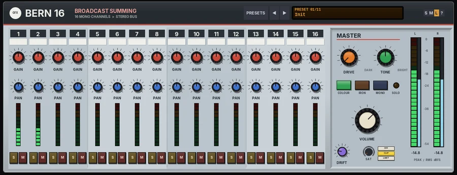
Overview
Bern 16 is a sixteen-channel summing mixer in the spirit of the classic Swiss broadcast consoles: precise and quiet, with a tight discrete-transistor summing amp and an output transformer that adds warmth when you lean on it. Each mono channel has its own gain, pan, solo, mute, meter and name strip, and the sixteen channels are mixed down to a stereo pair.
The colour comes from the master section. DRIVE pushes the mix into the summing amp and the transformer without making it louder: the amp rounds the peaks gently with a little 2nd and 3rd harmonic, and the transformer thickens the lows below about 100 Hz. COLOUR adds the console's own response, TONE tilts it darker or brighter, and IRON adds a whisper of input-transformer saturation to every channel.
It is very clean at DRIVE 0: a 0 dBFS peak loses only about 0.2 dB in the amp. Turn up DRIVE when you want the console to be heard.
Reach for it for
- Summing drums, stems or a whole mix "through a desk" inside REAPER
- Gentle glue and weight on a drum or music bus
- A quick balance and pan of up to sixteen mono sources in one place
- Darkening or brightening a mix by a hair with the console tilt
- Checking the balance in mono
Loading and setting it up
- Put Bern 16 on a bus track and set that track to 16 channels.
- Send each mono source to the bus, and in each send's audio routing pick a single channel, 1 to 16, so every source lands on its own channel strip.
- Turn off each source's own master / parent send, so you only hear it through Bern 16.
- The stereo mix leaves Bern 16 on channels 1 and 2; channels 3 to 16 are silenced on the way out.
- Click a channel's scribble strip and type a name so you know what is where.
Controls
The header
- PRESETS
- Opens the preset list. The last item, Reset all to defaults, puts every channel and the master section back to the start.
- ◄ / ►
- Step to the previous or next preset (wrapping round).
- Preset display
- Shows the preset number and name. Click it for the preset list too.
- S / M / L
- Panel size: small, medium or large. The panel also scales to fit the plugin window. A new instance opens in L.
- ?
- Opens a pop-up with the design credit, the GFX website address and the address of this manual. Click anywhere to close it.
Channels 1 to 16
Sixteen identical mono strips, in groups of four. Channel 1 is the input on track channel 1, and so on.
- Scribble strip
- The white strip under the channel number. Click it and type a name (up to 16 characters); Enter keeps it, Escape cancels, Backspace deletes. Clicking elsewhere also keeps it. The names are saved with the project.
- GAIN
- The channel level, -24 to +24 dB (0 dB by default).
- PAN
- Left to right, L100 to R100 (C by default). Constant power: a centred channel is 3 dB down on each side, so it keeps the same loudness as you pan it.
- Meter
- A 12-segment level meter, 0 to -48 dBFS, read after GAIN and IRON. Green, amber from -9 dBFS and red from -3 dBFS. It goes dark when the channel is muted or not heard because of a solo.
- S (SOLO)
- Solo in place. Any number of channels can be soloed at once; then only the soloed channels are heard.
- M (MUTE)
- Mutes the channel. A muted channel stays muted even when it is soloed.
MASTER
- DRIVE
- Level into the summing amp and the output transformer, 0 to +18 dB (0 by default). It is level-matched, so it changes the colour, not the volume: more DRIVE gives rounder peaks, a little more harmonic richness and thicker lows.
- TONE
- The console's tilt, DARK 100 to BRIGHT 100 (FLAT by default). At full DARK the lows (shelf at 250 Hz) come up 2 dB and the highs (shelf at 4 kHz) go down 2 dB; BRIGHT does the opposite. It works only while COLOUR is in.
- COLOUR
- Switches the console response in or out (in by default): a gentle high-pass at the very bottom, a little transformer weight around 45 Hz, a soft top roll-off (about 1 dB down at 20 kHz) and the TONE tilt. Off is flat; the amp and transformer still work.
- IRON
- A whisper of input-transformer saturation on every channel (off by default). Mostly felt on hot channels: it softens them a little and adds a touch of 2nd harmonic.
- MONO
- Folds the mix to mono, to check the balance (off by default).
- SOLO light
- Flashes while any channel is soloed.
- VOLUME
- Master output level, -24 to +12 dB (0 dB by default).
- DRIFT
- How much the power supply wanders, 0 to 100% (20% by default). See Drift below.
- SAT
- Band saturation on the way out, 0 - 100% (0 by default): only the lows and highs are saturated (the mids stay clean), with a soft curve that loosens as the level rises.
- OFF / CLIP / LIMIT
- The final stage: nothing, a soft clipper that holds the peaks at -0.3 dBFS (no latency), or a lookahead limiter that holds them at -0.3 dBFS (3 ms latency, compensated by REAPER). CLIP is on by default; its key flashes red while it is clipping.
- PEAK / RMS meters
- Left and right output meters, 0 to -54 dBFS. The segments show the peak in 2 dB steps, with a hold that falls back after 1.5 seconds; the thin blue bar beside each shows the RMS level (300 ms). The figures below show the held peak. Click the meters to clear the hold.
Drift
DRIFT gives the console an uneven power supply. Each channel's gain wanders on its own by up to 0.25 dB (at 100%), and the bias of the summing amp wanders separately on the left and right, so the colour shifts very slightly between the sides. The movements are slow and smooth. At 0% everything stays exactly where you set it.
Knobs: drag up or down (Shift for fine moves) or use the mouse wheel; double-click to reset a knob to its default.
Presets
Presets 1 to 8 set the master section (DRIVE, TONE, COLOUR, IRON, VOLUME, MONO and DRIFT) and leave the channels, SAT and the output stage alone. Stereo Pairs and Wide Fan only set the pans; Mono Check only switches MONO on.
- Init
- The default master: no drive, flat tone, COLOUR in, IRON out, DRIFT 20%.
- Clean Bus
- A straight sum: COLOUR out and no drift.
- Warm Iron
- +6 dB of drive, a little darker, IRON in.
- Drum Bus Glue
- +9 dB of drive, a touch brighter, IRON in, VOLUME -1 dB.
- Pushed Console
- +14 dB of drive with IRON in, VOLUME -2 dB and a bit more drift: the console leant on hard.
- Dark Broadcast
- Light drive with the tone well over to DARK.
- Bright Lift
- A little drive with the tone towards BRIGHT.
- Tired Supply
- +7 dB of drive, slightly dark, IRON in, DRIFT at 85%: an old desk on a wandering supply.
- Stereo Pairs
- Pans the channels as stereo pairs: odd channels hard left, even channels hard right (1/2, 3/4 ... 15/16).
- Wide Fan
- Spreads the channels evenly from channel 1 hard left to channel 16 hard right.
- Mono Check
- Switches MONO on and changes nothing else.
- Reset all to defaults
- Every channel back to 0 dB, centre, unmuted and unsoloed, the master to Init, SAT to 0 and the output stage to CLIP. The channel names are kept.
Tips
- Use Stereo Pairs when you feed stereo sources in as two mono channels (left into an odd channel, right into the next even one).
- DRIVE is level-matched, so judge it by the shape of the sound, not the loudness. Watch the peak meter: more drive brings the peaks down a little.
- For the cleanest sum, load Clean Bus; for a real "through the desk" feel, try Warm Iron and adjust DRIVE to taste.
- Name the channels as you route them; the names stay with the project.
- Set DRIFT to 0 for a static, repeatable mix; leave a little in for a less clinical feel.
File: gfx-bern-16.jsfx
Cassette 4
A cassette four-track as a summing mixer: four stereo stems recorded to tape and mixed down.
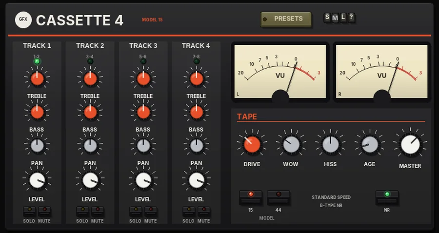
Overview
Cassette 4 is a summing mixer in the spirit of the 80s portable multitrack recorders. Each of four stereo stems goes to its own track of the tape - recorded, played back through the heads - and is then mixed down through the recorder's little mixer with its simple tone controls, pan and level.
Every track gets its own tape path: noise-reduction encoding, tape saturation, the wobble of the transport, the head's top-end loss and bump, dropouts and hiss, and the decoding on the way back. All four tracks share one transport, so they wow and flutter together, just like on a real machine.
Two models are on board. MODEL 15 is the compact standard-speed machine: soft top end, fat head bump, more wow and hiss. MODEL 44 is the double-speed machine with compander noise reduction: more top end and steadier, with the gentle breathing and pumping that compander noise reduction is known for.
Reach for it for
- Lo-fi and bedroom-demo mixes
- Giving a whole track that warm, wobbly cassette character
- Gluing drums, keys and vocals with tape saturation
- Pumping, breathing tape compression (MODEL 44)
- Worn-out, nostalgic textures (AGE, HISS, WOW)
Setting up the routing in REAPER
- Create a bus track and put Cassette 4 on it. Open the track's ROUTE window and set Track channels to 8.
- On each stem track, add a send to the bus track and pick its destination channel pair in the send's audio routing: TRACK 1 on 1/2, TRACK 2 on 3/4, TRACK 3 on 5/6, TRACK 4 on 7/8.
- Turn off the master send on every stem track, so the stems are heard only through Cassette 4.
- TRACK 1 also receives whatever plays on the bus track itself (channels 1/2), so keep the bus track empty or use it as track 1.
- The mix leaves on channels 1/2, so leave the bus track's master send on. The green light under each track name lights when signal arrives.
Controls
The mixer: TRACK 1 to TRACK 4
Four channel strips, each with its input channel pair printed under the name.
- Signal light
- Glows green when audio arrives on the track and it is being heard.
- TREBLE
- A high shelf at 10 kHz, -10 to +10 dB. Brighten a track that the tape has softened, or dull it further.
- BASS
- A low shelf at 100 Hz, -10 to +10 dB.
- PAN
- A balance control: in the centre both sides play at full level; turning it fades the opposite side down.
- LEVEL
- The track's mixdown level, from OFF (-60 dB) to +6 dB; 0 dB by default.
- SOLO
- Solo in place; several tracks can be soloed at once.
- MUTE
- Silences the track. A muted track stays muted even when soloed.
TAPE
- DRIVE (coloured cap)
- The recording level, -6 to +12 dB. Hotter means more tape saturation. It is level-matched, so it changes the colour rather than the volume.
- WOW
- Wow and flutter, 0 to 100 (30 by default): a slow wander plus a faster flutter. One transport moves all four tracks together. The 44 model is steadier at the same setting.
- HISS
- The tape noise, 0 to 100. The middle (50) is the model's own amount. Each track has its own hiss, so four busy tracks mean four times the noise, as on the real thing.
- AGE
- An older, worn tape, 0 to 100 (10 by default): the top end goes duller and short dropouts creep in, more often the higher you turn it.
- MASTER
- The final mix level, -24 to +12 dB.
- MODEL 15 / 44
- Picks the machine. 15: standard speed, B-type noise reduction, a soft top end around 9.5 kHz, a fatter head bump, more wow and hiss. 44: double speed, compander noise reduction, more top end (around 15 kHz), a steadier transport. The panel changes colour with the model.
- NR
- Noise reduction in or out. Out gives you the raw tape, hiss and all. In MODEL 44 the compander squeezes the signal 2:1 onto the tape and expands it 1:2 coming back; because the expander follows what comes off the tape, it breathes and pumps a little - turn DRIVE up to hear more of it.
Meters
- L / R
- VU meters showing the left and right mix output.
The header
- PRESETS
- Opens the list of factory presets. Choosing one sets the plugin's controls for that job; the input and output stages are left as they are. The last entry resets everything to the defaults.
- S / M / L
- Panel size: small, medium or large. The panel also scales to fit the plugin window.
- ?
- Opens a pop-up with the design credit, the GFX website address and the address of this manual. Click anywhere to close it.
- OUTPUT
- Folds the input and output stages out below the panel (and back in). The light shows when they are open.
Output stage (OUTPUT fold-out)
- SAT
- Band saturation on the way out: only the lows and highs are saturated (the mids stay clean), with a soft curve that loosens as the level rises.
- BIAS
- Shapes the saturation: more bias adds more even (2nd) harmonics, for a warmer, rounder colour.
- LO BAND / HI BAND
- Where the low and high saturation bands start (40 - 400 Hz and 2 - 16 kHz).
- CEILING / THRESH
- With CLIP: the level the peaks are softly clipped at. With LIMIT: the threshold of a brickwall limiter that holds the peaks at -0.3 dBFS - pulling it down limits harder and makes the output louder.
- OFF / CLIP / LIMIT
- The final stage: nothing, a soft clipper (no latency), or a lookahead limiter (3 ms latency, compensated by REAPER).
Presets
- Bedroom Demo (15)
- The standard-speed machine at its default settings, NR in.
- Hot and Woolly (15)
- Recorded hot, with more wow, hiss and age.
- No NR, Old Tape (15)
- Noise reduction off, lots of hiss, wobble and wear.
- Worn-out Cassette (15)
- Driven hard on a badly worn tape with heavy wow.
- Clean Double Speed (44)
- The double-speed machine at its cleanest.
- Pumping Compander (44)
- 6 dB of drive to bring out the compander's breathing.
- Squashed Tape (44)
- Driven hard for a dense, squashed tape sound.
- 44 without NR
- The double-speed machine with the noise reduction out.
- Reset all to defaults
- Every control back to its starting value, including the mixer and the output stage.
Tips
- The presets only change the model and the TAPE section; your track levels, EQ, pans, solos and mutes are left alone (except Reset).
- Use the TREBLE knobs on each track to win back a little top end after the tape, rather than turning AGE down to zero.
- Put drums or the busiest material on one track and pads on another: each track saturates on its own, so the mix stays clearer than squashing everything through one tape.
- Every track adds its own hiss even when nothing is sent to it, so MUTE the tracks you are not using to keep the noise floor down.
File: gfx-cassette-4.jsfx
Compact 12
The little 12-channel desk from every 90s project studio, as a summing mixer.
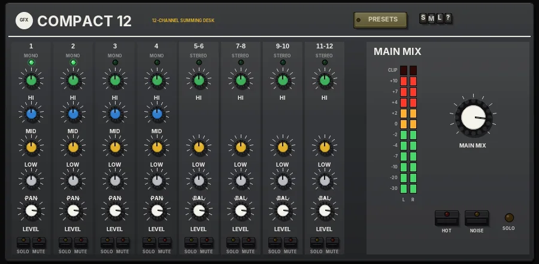
Overview
Compact 12 is a summing mixer in the spirit of the famous compact low-noise desks of the 90s: four mono channels and four stereo pairs, each with EQ, pan or balance, level, solo and mute, summed to a stereo main mix.
It is clean and honest, with the tight, slightly forward sound of its op-amps. Switch HOT on and the summing amps are driven into their rails for grit, edge and a little bite (level-matched, so it does not just get louder). NOISE adds the desk's own hiss floor.
Each channel strip can be named, and the names are saved with the project.
Reach for it for
- Summing stems or groups through a simple desk
- Quick level, pan and tone balancing of up to 12 inputs in one place
- Adding op-amp edge to a mix or drum bus (HOT)
- Lo-fi, 'real desk' character with the noise floor
- Solo and mute of stems while mixing
Setting up the routing in REAPER
- Create a bus track and put Compact 12 on it. Open the track's ROUTE window and set Track channels to 12.
- For the mono channels, add a send from each mono source to the bus track and set its destination to a single channel: channel 1, 2, 3 or 4.
- For the stereo channels, send each stereo stem to a channel pair: 5/6, 7/8, 9/10 or 11/12.
- Turn off the master send on every source track, so it is heard only through Compact 12 (otherwise you hear it twice).
- The mix leaves on channels 1/2, so leave the bus track's master send on. The green light at the top of each strip lights when signal arrives on it.
Controls
The header
- PRESETS
- Opens the list of factory presets (a click on the preset display does the same). The presets set the master section or flatten the channels; the last entry resets everything to the defaults.
- ◄ / ►
- Step to the previous or next preset. The display shows the number and name of the preset in use.
- S / M / L
- Panel size: small, medium or large. The panel also scales to fit the plugin window.
- ?
- Opens a pop-up with the design credit, the GFX website address and the address of this manual. Click anywhere to close it.
Channel strips
Eight strips: CH 1 to 4 are MONO, CH 5-6, 7-8, 9-10 and 11-12 are STEREO. Knobs: drag up and down (Shift for fine control) or use the mouse wheel; double-click to reset. The value shows while you hover.
- Name
- Click the name at the top of a strip and type (e.g. Drums). Enter keeps it, Escape cancels; an empty name goes back to the channel number.
- Signal light
- The green light glows when audio arrives on that channel and the channel is being heard (not muted, turned off or left out by a solo).
- HI (green cap)
- High shelf at 12 kHz, -15 to +15 dB.
- MID (blue cap)
- Mono channels only: a bell at 2.5 kHz, -12 to +12 dB.
- LOW (yellow cap)
- Low shelf at 80 Hz, -15 to +15 dB.
- PAN / BAL
- Mono channels: PAN, a constant-power pan from L100 to R100. Stereo channels: BAL, which turns the other side down as you move away from the centre.
- LEVEL
- The channel's level, from OFF (fully left, -60 dB) to +10 dB; 0 dB by default.
- SOLO
- Solo in place. Any number of channels can be soloed at once; while anything is soloed, only the soloed channels are heard.
- MUTE
- Silences the channel. A muted channel stays muted even when it is soloed.
MAIN MIX
- Meters
- 12-LED meters for the main mix, left and right. 0 is 0 VU (-18 dBFS); the top light is CLIP.
- MAIN MIX
- The main mix level into the summing amps, from OFF (-60 dB) to +10 dB.
- HOT
- Drives the summing amps into their rails: asymmetric op-amp grit, edge and a little bite, level-matched. Off, the amps stay clean up to just above 0 dBFS.
- NOISE
- Adds the desk's own hiss floor, about -84 dBFS.
- SOLO
- Flashes while any channel is soloed.
There is no separate output stage on this unit: its own character does that job.
Presets
The first four presets set only MAIN MIX, HOT and NOISE; the channel settings are left alone.
- Clean Desk
- MAIN MIX at 0 dB, HOT and NOISE off.
- Hot Desk
- HOT on: the summing amps driven into their rails.
- Hot and Noisy
- HOT and NOISE both on - the real thing.
- Clean with Desk Noise
- Clean amps with the hiss floor, MAIN MIX at -3 dB.
- Flat all channels
- Every channel back to 0 dB level, flat EQ, centred, with solos and mutes off. The master section and channel names are left alone.
- Reset all to defaults
- Every control back to its starting value.
Tips
- Name the strips as soon as the routing is done; it makes solo and mute much quicker to use.
- HOT is level-matched, so you can switch it in and out to judge the colour fairly.
- Use the MID on mono channels at 2.5 kHz to bring a vocal or guitar forward, or cut it to push them back.
- Keep the main-mix meters around 0 (0 VU) and below the red: that is where the desk sounds as intended.
- BAL on a stereo stem keeps both sides of the stem; to narrow it, do that on the stem's own track.
File: gfx-compact-12.jsfx
Lustre
A transformer-coupled console summing mixer in the spirit of the silky late-80s British desks.
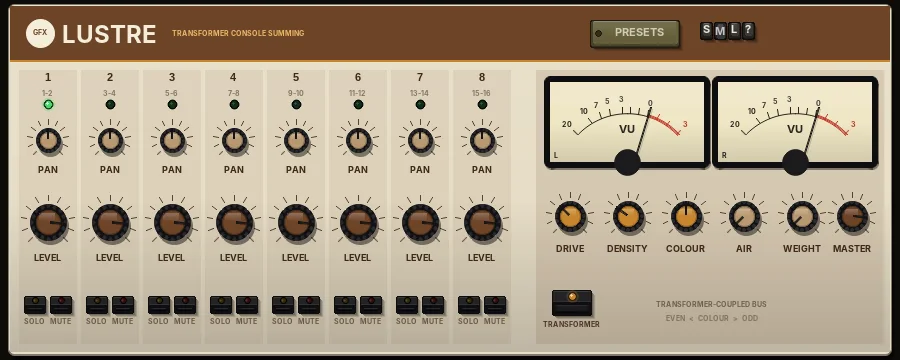
Overview
Lustre sums up to eight stereo stems through the bus of a transformer-coupled console from the late 80s: smooth, wide and expensive-sounding, with weight in the low mids and a top end that never bites.
The transformer works on the low mids (roughly 60 - 400 Hz). DENSITY sets how hard the iron is driven there, COLOUR chooses the character of the harmonics (even and round, or odd and firm), and a light touch of full-band density sits on top. WEIGHT and AIR add the console's low-mid body and a silky lift at the very top.
With the TRANSFORMER switched out, Lustre is a clean summing mixer with level, pan, solo and mute for each stem.
Reach for it for
- Summing stems or groups through one console-style bus
- Adding warmth and low-mid weight without dulling the top
- A smooth, open top end on a whole mix (AIR)
- Choosing between rounder (even) and firmer (odd) harmonic colour
- Quick stem balancing with solo and mute in one place
Setting up the routing in REAPER
- Create a mix bus track and put Lustre on it. Open the track's ROUTE window and set Track channels to 16.
- Channels 1/2 are STEM 1: whatever plays on the bus track itself (or is sent to it on 1/2).
- On each other stem track, add a send to the bus track and pick a different destination channel pair for each: stem 2 on 3/4, stem 3 on 5/6, stem 4 on 7/8, stem 5 on 9/10, stem 6 on 11/12, stem 7 on 13/14, stem 8 on 15/16.
- Turn off the master send on every stem track, so the stems are heard only through Lustre (otherwise you hear them twice).
- The mix leaves on channels 1/2, so leave the bus track's master send on. The light under each stem's number glows when signal arrives.
Controls
Stems
Eight channel strips. The channel pair is printed under each name (1-2 up to 15-16).
- Name
- Click the name at the top of a strip and type (up to 16 characters, e.g. Drums). Enter keeps it, Escape cancels, an empty name goes back to the number. The names are saved with the project.
- Signal light
- Glows green when audio arrives on that stem and the stem is being heard (not muted, not left out by a solo, level not OFF).
- PAN
- Balance between left and right, from L100 through C to R100. Turning towards one side turns the other side down; the centre leaves both at full level.
- LEVEL
- The stem's level, from OFF (fully left, -60 dB) to +10 dB; 0 dB by default.
- SOLO
- Solo in place. Any number of stems can be soloed at once; while anything is soloed, only the soloed stems are heard.
- MUTE
- Silences the stem. A muted stem stays muted even when it is soloed.
Master
- VU meters (L / R)
- The output level of the mix.
- DRIVE
- The level into the bus and its transformers, -6 to +12 dB. It is level-matched: it changes how hard the iron works, not the volume.
- DENSITY
- How hard the transformer iron works, 0 to 100 (30 by default). The saturation is concentrated in the low mids, roughly 60 - 400 Hz, with a gentle touch of density across the whole band.
- COLOUR
- The character of the harmonics the iron adds. Left (EVEN) favours the 2nd harmonic: rounder and warmer. Right (ODD) favours the 3rd: firmer and more forward. The centre (BLEND) is the balanced mix.
- AIR
- A broad, silky lift at the very top (a shelf around 12 kHz), 0 to +6 dB.
- WEIGHT
- The transformer's low-mid weight: a broad lift around 180 Hz, 0 to +4 dB.
- MASTER
- The final level of the mix, from OFF (fully left, -60 dB) to +10 dB.
- TRANSFORMER
- In (lit, the default): the console's colour - DRIVE, DENSITY, COLOUR, WEIGHT and AIR all work, and the label reads TRANSFORMER-COUPLED BUS. Out: a straight, clean sum (STRAIGHT SUM); those five controls then have no effect.
The header
- PRESETS
- Opens the list of factory presets; the arrows beside it step through them, and the display shows the one in use (click it for the list too). The presets change only the bus controls; the last entry resets everything to the defaults.
- S / M / L
- Panel size: small, medium or large. The panel also scales to fit the plugin window.
- ?
- Opens a pop-up with the design credit, the GFX website address and the address of this manual. Click anywhere to close it.
Presets
- Console Sheen
- The default iron with a touch of air and weight.
- Warm and Round (even)
- 4 dB of drive, more density, colour towards EVEN, extra air and weight.
- Forward and Firm (odd)
- 4 dB of drive, more density, colour towards ODD for a firmer, more forward sound.
- Driven Desk
- 8 dB of drive and heavy density, slightly even, with generous air and weight.
- Open Top (air)
- Light density with 3 dB of air for an open top end.
- Low-Mid Weight
- Even colour with 3 dB of weight and no air, for body in the low mids.
- Straight Sum (transformer out)
- Transformer out: a clean sum.
- Reset all to defaults
- Every control back to its starting value, including stem levels, pans, solos and mutes.
Tips
- The presets change only the bus settings; your stem levels, pans, solos and mutes are left alone (except Reset).
- Because DRIVE is level-matched, you can sweep it freely and judge the colour without being fooled by a jump in level.
- Try COLOUR towards EVEN on dense rock or pop mixes that feel hard, and towards ODD on mixes that need more definition.
- Toggle TRANSFORMER to compare the console colour against a clean sum at the same balance.
File: gfx-lustre.jsfx
M-Sum
An analogue broadcast-console summing bus with transformer iron and a fast VCA bus compressor.

Overview
M-Sum sums your stems the way an 80s British broadcast console's mix bus does. Up to eight stereo inputs - the bus track's own audio plus seven stems - are added together through the desk's bus physics, then pass through its output transformer and its fast VCA bus compressor.
The special part is the bus itself. The more energy you put on it, the further the virtual power rail sags (down to 65% at most), which acts as a soft, natural bus compression that responds to the whole mix rather than to any one stem. The transformer saturates only the lows below about 150 Hz, mostly with 3rd harmonic, and adds a small resonance at 35 Hz; the mids and highs pass through untouched.
Turned down, it is a clean summing mixer with solo and mute per stem. Pushed with DRIVE, IRON and SAG, it thickens, glues and bends like a desk running hot.
Reach for it for
- Summing stems or groups through one console-style bus
- Gluing a mix with a fast VCA bus compressor
- Adding low-end weight and iron without dulling the top
- Making a mix feel denser and more 'run through a desk' (SAG, DRIVE)
- Quick stem balancing with solo and mute in one place
Setting up the routing in REAPER
- Create a mix bus track and put M-Sum on it. Open the track's ROUTE window and set Track channels to 16.
- On each stem track, add a send to the bus track. In the send's audio routing, pick a different destination channel pair for each stem: STEM 1 on 3/4, STEM 2 on 5/6, STEM 3 on 7/8, STEM 4 on 9/10, STEM 5 on 11/12, STEM 6 on 13/14, STEM 7 on 15/16.
- Turn off the master send on every stem track, so the stems are heard only through M-Sum (otherwise you hear them twice).
- Channels 1/2 are the MAIN input: whatever plays on the bus track itself (or is sent to it on 1/2). Use it for an eighth stem, or leave it empty.
- The summed mix leaves on channels 1/2, so leave the bus track's master send on. The green light above each input lights when signal arrives on it.
Controls
STEMS
Eight input strips: MAIN (channels 1-2) and stems 1 to 7 (channels 3-4 up to 15-16). The channel pair is printed under each number.
- Signal light
- The green light glows when audio arrives on that input and the input is being heard (not muted or left out by a solo).
- Level knob
- The input's level, from OFF (fully left, -60 dB) to +6 dB; 0 dB by default.
- SOLO
- Solo in place. Any number of inputs can be soloed at once; while anything is soloed, only the soloed inputs are heard.
- MUTE
- Silences the input. A muted input stays muted even when it is soloed.
CONSOLE BUS
- DRIVE (yellow cap)
- The level into the bus and the transformer, 0 to 24 dB. More DRIVE pushes the iron and the rail sag harder; it also raises the level, so bring OUTPUT down to compensate.
- IRON (yellow cap)
- How hard the output transformer's core works, 0 to 100 (15 by default). Only the lows below about 150 Hz are saturated, mostly with 3rd harmonic, for weight and density in the bottom end while the top stays clean.
- SAG
- How much the power rail sags under load, 0 to 0.30 (0.05 by default). The more energy on the bus, the lower the rail - a soft, programme-dependent squeeze. It reacts quickly (2 ms) and recovers in about 60 ms, so it feels like bus compression rather than distortion.
- CROSSTALK
- The left and right buses bleeding into each other, as on a real desk. Fully left is OFF; turn it up (to 0 dB) to narrow and glue the stereo image slightly.
- STRESS
- The orange light glows when the rail starts to sag.
- RAIL
- The bar and number show the rail voltage, from 100 (no sag) down to 65 (maximum sag). It turns orange when the rail drops below 90.
VCA BUS COMPRESSOR
A fast feed-forward compressor after the transformer. It reads the peaks of both sides and applies the same gain to both, so the image stays put.
- THRESH (yellow cap)
- The level where compression starts, -30 to 0 dB (-12 dB by default).
- RATIO
- 1:1 to 20:1 (4:1 by default). 2:1 for gentle glue, 4:1 and up for obvious control.
- ATTACK
- 0.1 to 20 ms (1 ms by default). Short times catch the transients; longer times let the punch through before it clamps down.
- RELEASE
- 10 to 600 ms (150 ms by default). It is programme dependent: the longer the compressor keeps working (more than about 2 dB of reduction), the slower it releases, up to four times the set value, so sustained passages don't pump.
- MAKEUP
- Manual make-up gain, 0 to 18 dB. When AUTO is on, the knob reads AUTO and has no effect.
- IN
- Switches the compressor in or out (in by default).
- AUTO
- Automatic make-up: adds back half the reduction a full-scale peak would get, so the level stays roughly steady as you change THRESH and RATIO.
- OUTPUT (yellow cap)
- The final level of the bus, -24 to +12 dB. It works whether the compressor is in or out.
METERS
- GR
- VU meter showing the compressor's gain reduction.
- BUS OUT
- VU meter showing the output level of the bus.
The header
- PRESETS
- Opens the list of factory presets. Choosing one sets the plugin's controls for that job; the input and output stages are left as they are. The last entry resets everything to the defaults.
- S / M / L
- Panel size: small, medium or large. The panel also scales to fit the plugin window.
- ?
- Opens a pop-up with the design credit, the GFX website address and the address of this manual. Click anywhere to close it.
- OUTPUT
- Folds the input and output stages out below the panel (and back in). The light shows when they are open.
Output stage (OUTPUT fold-out)
- SAT
- Band saturation on the way out: only the lows and highs are saturated (the mids stay clean), with a soft curve that loosens as the level rises.
- BIAS
- Shapes the saturation: more bias adds more even (2nd) harmonics, for a warmer, rounder colour.
- LO BAND / HI BAND
- Where the low and high saturation bands start (40 - 400 Hz and 2 - 16 kHz).
- CEILING / THRESH
- With CLIP: the level the peaks are softly clipped at. With LIMIT: the threshold of a brickwall limiter that holds the peaks at -0.3 dBFS - pulling it down limits harder and makes the output louder.
- OFF / CLIP / LIMIT
- The final stage: nothing, a soft clipper (no latency), or a lookahead limiter (3 ms latency, compensated by REAPER).
Presets
- Clean Sum
- A light touch of iron and sag, compressor out.
- Warm Console
- A little drive and iron with gentle 2:1 bus compression.
- Driven Desk
- 8 dB of drive, more iron, sag and crosstalk, 3:1 compression.
- Broadcast Glue
- 4:1 fast-attack compression with AUTO make-up, for steady broadcast-style glue.
- Heavy Iron
- Full IRON for maximum low-end weight, slow gentle compression.
- Punch Bus
- 6:1 with a very fast attack and release and more sag, for punchy, pumping drums.
- Stressed Rail
- 10 dB of drive, heavy sag and some crosstalk for a squeezed, overdriven desk.
- Straight Sum (no colour)
- No iron, no sag, compressor out: a clean sum.
- Reset all to defaults
- Every control back to its starting value, including stem levels, solos, mutes and the output stage.
Tips
- The presets change only the bus and compressor settings; your stem levels, solos and mutes are left alone (except Reset).
- Watch the RAIL number: a few points of sag on the loud parts is glue, a rail sitting in the 70s is an effect.
- Because DRIVE raises the level, use OUTPUT to match levels before judging whether the colour is better.
- For mix-bus glue, start with RATIO 2:1, a 10 ms attack and the GR meter showing only 1-3 dB on the peaks.
File: gfx-m-sum.jsfx
Stage 8
A big theatre console's mix bus as an eight-stem summing mixer, with VCA groups.
Overview
Stage 8 sums eight stereo stems through the mix bus of a big British theatre console, in the spirit of the consoles famous for their clarity in the West End and on Broadway. Each stem has a level, a pan, a VCA assign, solo and mute; two VCA group masters ride whole groups of stems with one knob.
Two console characters are on board. VINTAGE is the earlier, transformer-coupled desk: the lows thicken and saturate gently as the level rises, there is a soft lift in the presence region, a silky top that rolls off just above the audio band, a whisper of crosstalk and noise, and a gentle squeeze when driven. MODERN is the later transformerless desk: flat, wide, true stereo, with enormous headroom.
DRIVE sets the level into the summing amplifiers. It is level-matched, so it changes the colour, not the volume.
Reach for it for
- Summing stems or groups through one console-style bus
- Riding several stems together with a VCA master
- Adding gentle transformer weight and a silky top to a mix (VINTAGE)
- Clean, wide summing with solo and mute in one place (MODERN)
- Theatre-style mixing: grouping a band, vocals and effects for quick balancing
Setting up the routing in REAPER
- Create a bus track and put Stage 8 on it. Open the track's ROUTE window and set Track channels to 16.
- On each stem track, add a send to the bus track and pick its destination channel pair in the send's audio routing: stem 1 on 1/2, stem 2 on 3/4, stem 3 on 5/6, and so on up to stem 8 on 15/16. The pair is printed under each strip's name.
- Turn off the master send on every stem track, so the stems are heard only through Stage 8.
- Stem 1 also receives whatever plays on the bus track itself (channels 1/2), so keep the bus track empty or use it as stem 1.
- The mix leaves on channels 1/2, so leave the bus track's master send on. The green light on each strip lights when signal arrives and the stem is being heard.
Controls
Drag a knob up or down to turn it, or double-click to reset it.
The header
- PRESETS
- Opens the list of factory presets (clicking the display does the same). A preset sets only MODE and DRIVE; the stems and VCAs are left as they are. The last entry resets everything to the defaults.
- Left / right arrows
- Step to the previous or next preset.
- S / M / L
- Panel size: small, medium or large. The panel also scales to fit the plugin window.
- ?
- Opens a pop-up with the design credit, the GFX website address and the address of this manual. Click anywhere to close it.
Stems 1 to 8
- Name
- Click the name at the top of the strip and type (e.g. Drums), up to 16 characters. Enter keeps it, Escape cancels, and an empty name goes back to the number. The names are saved with the project.
- Signal light
- Glows green when audio arrives on the stem and it is being heard.
- PAN
- A balance control, L100 to R100: in the centre both sides play at full level; turning it fades the opposite side down.
- LEVEL
- The stem's level, from OFF (-60 dB) to +10 dB; 0 dB by default.
- VCA
- Click to step the stem's VCA assign: none (VCA -), VCA A (orange light) or VCA B (blue light). An assigned stem follows that VCA master's level and mute.
- SOLO
- Solo in place; several stems can be soloed at once. While anything is soloed, only the soloed stems are heard.
- MUTE
- Silences the stem. A muted stem stays muted even when soloed.
VCA A and VCA B
- LEVEL
- The group master, OFF (-60 dB) to +10 dB. It rides every stem assigned to it, on top of their own levels.
- MUTE
- Mutes every stem assigned to that VCA.
MASTER
- VINTAGE / MODERN
- Picks the console. VINTAGE: transformer-coupled, with low-end thickening, presence lift, a silky top, a whisper of crosstalk and noise, and a gentle squeeze when driven. MODERN: transformerless - flat and clean, and only extreme levels are softly limited. The caption under the controls reads TRANSFORMER-COUPLED or TRANSFORMERLESS.
- DRIVE
- The level into the summing amps, -6 to +12 dB. It is level-matched: more DRIVE gives more colour in VINTAGE, not more volume.
- MASTER
- The final mix level, from OFF (-60 dB) to +10 dB.
- L / R meters
- Two 12-light meters showing the mix output; 0 on the meter is -18 dBFS.
Presets
- Vintage
- The transformer-coupled console, DRIVE at 0 dB.
- Vintage, driven
- The vintage console with 6 dB of drive.
- Vintage, pushed hard
- The vintage console with 10 dB of drive, for a thicker, squeezed bus.
- Modern
- The transformerless console, DRIVE at 0 dB.
- Modern, driven
- The modern console with 6 dB of drive.
- Reset all to defaults
- Every control back to its starting value, including stem levels, pans, VCA assigns, solos, mutes and the VCA masters.
Tips
- Assign the band to VCA A and the vocals to VCA B: then one knob each balances the whole show, as on a theatre desk.
- Because DRIVE is level-matched, you can sweep it and judge the colour without being fooled by loudness.
- Name the strips - the names are saved with the project, so the console makes sense when you come back to it.
- Try VINTAGE with DRIVE at +6 dB on a full mix, then switch to MODERN to hear how much of the weight and silk comes from the transformer stages.
File: gfx-stage-8.jsfx
CC-80
A pocket-calculator chord generator that writes voice-led chords into a MIDI item at the edit cursor.
Overview
CC-80 is a chord scratchpad in the style of an 80s pocket calculator. Build a chord from a root (A - G, flat or sharp), a quality (maj, min, dim, aug, sus4), a seventh and an extension (9, 11, 13), choose a duration and press = to write it into a MIDI item at the edit cursor. The cursor then moves on, ready for the next chord.
Each new chord is voiced close to the last one (voice leading), so a progression moves smoothly instead of jumping around. REST skips time, the memory keys store a sequence of chords and write it out in one go, and DRIFT humanises the velocity and timing.
It is a ReaScript, not a plugin: it runs in its own window and needs the free ReaImGui extension.
Reach for it for
- Sketching chord progressions quickly
- Writing pad and keys parts with smooth voice leading
- Trying out extended chords without working out the notes
- Storing a progression and writing it again elsewhere in the song
Installing
1. Install ReaImGui (once)
- If you don't have ReaPack yet, install it from reapack.com and restart REAPER.
- Open Extensions > ReaPack > Browse packages.
- Search for ReaImGui (from the ReaTeam Extensions repository), right-click it and choose Install, then Apply.
- Restart REAPER. CC-80 needs ReaImGui 0.9 or newer; if it is missing, the script tells you so when you run it.
2. Load the script
- Open Actions > Show action list.
- Choose New action > Load ReaScript and pick GFX_CC-80.lua.
- Select it in the list and press Run. The CC-80 window opens.
- To open it quickly next time, assign it a shortcut or add it to a toolbar from the action list.
Where the chords go
- If a MIDI editor is open, the chords go into the take it is editing.
- Otherwise they go on the first selected track: into the latest MIDI item that starts at or before the edit cursor (as long as it doesn't end more than 8 beats before it), or into a new MIDI item.
- The item is lengthened automatically if the chord runs past its end.
- Notes are written at the edit cursor on MIDI channel 1 at velocity 100, and the edit cursor moves to the end of the chord. Each entry can be undone.
Controls
The display
- Top line
- The chord name as you build it (e.g. Cmaj7), or ERR.
- Second line
- The chord spelled note by note (e.g. C - E - G - B), or the error message.
- Bottom line
- Left: the current duration. Middle: Mn when chords are stored in memory, Dnn when DRIFT is on. Right: the last action (READY, INS Am7, REST 1/4 and so on).
Building a chord
Keys that hold a setting have a small red light.
- C D E F G A B
- Choose the root. Pressing a root always starts a new chord.
- b / #
- Flat or sharp the root. Press again to cancel.
- maj / min / dim / aug / sus4
- The quality. With none chosen, the chord is major.
- 7
- Adds a seventh: a flat 7th on most chords, but a major 7th after maj (maj + 7 = maj7) and a diminished 7th after dim (dim7).
- M7
- Adds a major 7th.
- m7
- The minor-seventh chord: it implies min (so A + m7 = Am7); with dim it gives the half-diminished m7b5.
- 9 / 11 / 13
- Adds an extension; the last one pressed wins. An extension brings its seventh with it (a major 7th after maj, otherwise a flat 7th) and the 9th. 11 drops the major 3rd to avoid a clash; 13 leaves out the 11th.
Some combinations are refused, with a message on the display: two different qualities or sevenths, m7 with maj, aug or sus4 (m7 CLASH), any extension on dim (DIM EXT), and 11 on sus4 or aug.
Duration and writing
- 1/1 / 1/2 / 1/4 / 1/8
- The length of the next chord or rest: whole note, half note, quarter note or eighth note.
- =
- Writes the chord at the edit cursor and moves the cursor on.
- REST
- Moves the edit cursor on by the current duration without writing anything.
- CLEAR
- Clears the chord you are building. Pressed again with nothing entered, it resets the voice leading (VOICE RESET), so the next chord is voiced fresh around the middle of the range.
Memory and drift
- M+
- Stores the current chord, with its duration, at the end of the memory.
- MR
- Writes every stored chord in order at the edit cursor (its light shows the memory holds something).
- MC
- Clears the memory.
- DRIFT
- Steps through 0, 25, 50, 75 and 100%. It humanises each note: at 100% velocity varies by up to 25 either side of 100 and timing by up to 12 ms.
The duration, DRIFT setting and memory are remembered the next time you run the script.
Keyboard shortcuts
While the CC-80 window has focus: A - G choose the root, Enter is =, Space is REST, Backspace is CLEAR, and 1, 2, 4 and 8 choose the duration.
Voice leading
CC-80 picks the inversion and octave of each chord that moves the fewest semitones from the previous one, keeping the notes between E2 and C6 and avoiding close, muddy intervals low down. The first chord (or the first after VOICE RESET) is placed around the middle of that range in root position where it can.
Messages
- NO ROOT / NO CHORD
- Choose a root first.
- 2 QUALITIES / 2 SEVENTHS
- Only one quality and one seventh per chord - press CLEAR or a new root to start again.
- MEM EMPTY
- MR was pressed with nothing stored.
- NO TRACK
- No MIDI editor is open and no track is selected.
- NOT MIDI / NO ITEM
- The target take is not MIDI, or a new item could not be made.
Tips
- Open the MIDI editor on the item you are working on and the chords go straight into it.
- Store a progression with M+ as you try it out, then place the edit cursor at the next section and press MR to write it all again.
- Use REST between chords for rhythmic stabs, or 1/8 chords for pushes before the bar.
- If a progression has drifted too high or low, press CLEAR twice to reset the voice leading.
File: GFX_CC-80.lua